§001 Politics：本周政治原题：Politics：本周政治 · 板块：The world this week · 栏目：本周
美国与伊朗维持脆弱停火。两国在巴基斯坦举行自1979年伊朗伊斯兰革命以来最高级别官员会谈。谈判未达成协议，但双方正准备举行新一轮对话。唐纳德·特朗普称战争“接近结束”。美国称其对霍尔木兹海峡的封锁行动取得成功，针对往来伊朗港口及沿海水域的船只。和平希望也因以色列与黎巴嫩数十年来首次官方直接会谈而提升，两国大使在华盛顿会面后，美国称双方同意启动谈判。
■
以色列大使表示，以黎两国“共同致力于从真主党手中解放黎巴嫩”。受伊朗支持的民兵组织对黎巴嫩政府若试图采取行动则发出含沙射影的政变威胁。与此同时，以色列在黎巴嫩南部的地面攻势仍在持续，真主党对以色列的火箭袭击也未停止。南非总统西里尔·拉马福萨（Cyril Ramaphosa）任命罗尔夫·梅耶（Roelf Meyer）为新任驻美大使，接替去年因指责特朗普“制造白人受害者叙事”而被驱逐的前大使。梅耶曾是国民党与非洲人国民大会结束种族隔离谈判的主要谈判代表，后协助创立左翼中间派联合民主运动。澳大利亚政府宣布将国防开支从GDP的2%提升至3%，目标于2033年实现。
澳大利亚国防部长表示，该国“自二战以来面临最复杂且威胁性的战略形势”。国际原子能机构负责人警告称，朝鲜在核武器计划上取得“非常严重”的进展，很可能已建成新的铀浓缩设施。据信该政权已拥有数十枚核弹头。安达曼海一艘船只倾覆后，约250人失踪。该船从孟加拉国南部边境缅甸的特克纳夫镇（Teknaf）出发，驶向马来西亚，船上载有罗兴亚难民和孟加拉国人。前北约秘书长、前英国国防大臣乔治·罗伯逊对现行国防政策发出尖锐批评。■
英国战略防务审查报告撰写人罗伯特森男爵（Lord Robertson）称，英国正因政府的“腐蚀性自满”陷入“危险”，并指责财政部未能落实审查报告的建议。他得出结论认为，该国准备不足、保障不足、面临攻击且不安全，举例说明近期俄罗斯在英国海底基础设施周边的活动。加拿大自由党在赢得三个特别选区选举后，于众议院获得微弱多数席位。此前自由党以少数政府形式执政，最初由贾斯汀·特鲁多（Justin Trudeau）担任总理，后由马克·卡尼（Mark Carney）接任。卡尼被赞成功吸引反对党不满议员，近几个月有四名保守党议员转投自由党。■
小鸠惠理子（Keiko Fujimori）进入秘鲁总统选举第二轮。这是她第四次参选。小鸠惠理子是前总统阿尔贝托·小鸠（Alberto Fujimori）之女，后者曾于1990年至2000年担任总统，后因下令军队死亡小队屠杀“光辉之路”（Shining Path）组织支持者而被定罪。俄罗斯对乌克兰发动的无人机袭击又造成至少15人死亡，包括首都基辅。与此同时，乌克兰军队首次在战争中使用无人地面系统和无人机攻占俄军阵地，据弗拉基米尔·泽连斯基（Volodymyr Zelensky）称，此次行动未造成乌克兰人员伤亡。总统表示，地面机器人系统在乌克兰前线的使用次数在年初三个月内超过22,000次。
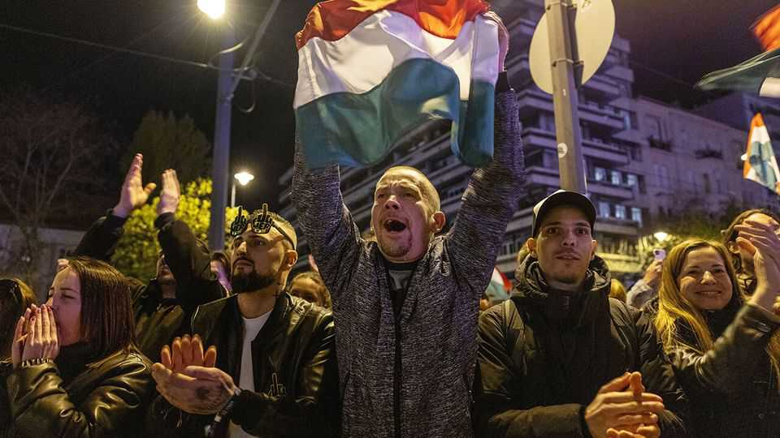
中间偏右的蒂萨党（Tisza Party）在匈牙利议会选举中赢得约三分之二席位，结束了维克托·欧尔班（Viktor Orban）及其右翼民粹主义政党匈牙利青年民主主义者联盟（Fidesz）长达16年的执政。新任总理彼得·马加尔（Peter Magyar）将改善与欧盟关系列为首要任务。在胜选后不久，马加尔便与欧盟委员会主席乌尔苏拉·冯德莱恩（Ursula von der Leyen）通话。他还表示有意逆转匈牙利对乌克兰900亿欧元（1060亿美元）欧盟贷款的阻挠。克里姆林宫表示希望与新政府展开“务实对话”。在持续数日的抗议活动后，爱尔兰政府宣布了一项支持计划，以帮助因燃料价格上涨而受影响的民众。抗议者用卡车和拖拉机封锁高速公路，并通过缓慢移动的车队造成交通拥堵。土耳其东南部一所学校的学生枪杀至少九人。■
前一日，另一所学校的一名前学生枪击16人后自杀。西班牙社会党首相佩德罗·桑切斯（Pedro Sánchez）推出计划，向50万非法移民提供永久居留权。移民需在西班牙居住满五个月且无犯罪记录。与此同时，桑切斯的妻子贝戈尼亚·戈麦斯（Begoña Gómez）因长期调查被指控腐败，她否认相关指控。桑切斯称这些指控源于保守派对其政府的不满。意大利总理乔治娅·梅洛尼（Giorgia Meloni）表示，鉴于“当前局势”，其政府已暂停与以色列的防务合作协定续约。意大利保守政府此前一直是以色列相对可靠的盟友，且未承认巴勒斯坦国地位。■
今年3月，意大利表示不会允许美国使用西西里岛的空军基地作为对伊朗作战的跳板。梅洛尼拒绝支持美国对伊朗的战争，这让特朗普感到愤怒，特朗普对意大利媒体表示：“我以为她很勇敢，但我错了。” 梅洛尼还介入了特朗普对教皇利奥（Leo）的尖锐批评引发的争议，此前教皇曾明确反对对伊朗的战争。作为天主教皈依者，J.D. 奈斯也建议教皇不要干涉国际事务。梅洛尼表示特朗普错了，认为教皇利奥呼吁和平是“正确且正常”的。■
§002 Business：本周商业原题：Business：本周商业 · 板块：The world this week · 栏目：本周
国际货币基金组织（IMF）下调了全球经济增长预期，预计今年世界经济将增长3.1%，较其1月预测的3.3%有所下调。该机构同时削减了对主要经济体的增长预测，将英国GDP增速下调了0.5个百分点，现预计仅为0.8%。基金指出，伊朗冲突对依赖进口大宗商品的新兴市场和发展中经济体的经济影响将更为显著。其指出，若无战争，增长预期本可上调，这意味着冲突的成本远高于其预测数据。美国3月年度通胀率升至3.3%，较2月的2.4%大幅攀升。能源价格环比上涨10.9%，其中燃油价格飙升30.7%。■
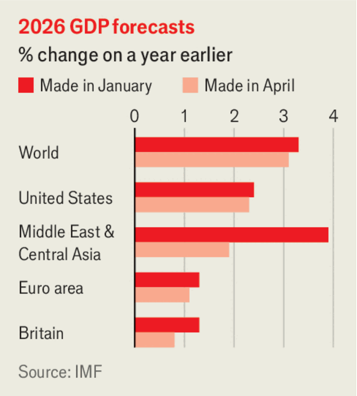
根据AAA的数据，普通汽油价格仍高于每加仑4美元，相比去年同期的3.17美元有所上涨。石油交易市场持续波动，布伦特原油价格在每桶95至100美元之间震荡。国际能源署表示，伊朗冲突已造成“历史上最严重的石油供应冲击”。该机构预计2026年全球石油需求将平均减少8万桶/日，较此前预测的年增64万桶/日大幅下调。该预测假设中东地区常规油气出口将在年中恢复。并非所有人都因战争而受损，BP报告称其石油交易部门录得“异常”季度业绩，因价格上涨和客户争抢供应。石油公司本月晚些时候公布的完整财报将平衡因价格上涨带来的收益与冲突期间减产造成的损失。■
美国大银行也表示其交易部门在第一季度表现良好，受益于股市波动。摩根大通（JPMorgan Chase）净利润同比增长13%，达165亿美元。花旗集团（Citigroup）营收达246亿美元，为十年来最高水平，推动其利润同比上涨42%，至58亿美元。高盛（Goldman Sachs）的股票交易部门助力该行实现56亿美元利润，同比增长19%。科技股重新开启上涨行情。Oracle股价五日内上涨逾20%，英伟达（Nvidia）股价上涨10%。英特尔（Intel）股价自4月1日以来上涨45%，并宣布与埃隆·马斯克（Elon Musk）旗下Terafab项目达成合作。纳斯达克综合指数（NASDAQ Composite）创下自2023年以来最长的连涨纪录。标普500指数（S&P 500）刷新历史新高。中国第一季度GDP同比增长5%，强劲表现超出分析师预期。■
政府警告称，伊朗战争可能在第二季度对经济造成冲击。唐纳德·特朗普表示，如果杰罗姆·鲍威尔在5月15日任期结束前仍留在美联储理事会上，他将将其解职。3月，一名法官驳回了司法部对鲍威尔的传票，该传票源于司法部对其涉嫌向国会隐瞒美联储翻新计划的调查。参议院银行委员会将于4月21日举行确认听证会，确认凯文·沃什接任鲍威尔为美联储主席。陪审团裁定，Live Nation（Ticketmaster母公司）曾非法试图阻碍现场活动市场的竞争。美国司法部于2024年对Live Nation提起诉讼，并在3月庭审开始后不久与该公司达成和解。■
其他诉讼方继续坚持其主张。法官将决定应处以何种处罚。亚马逊达成协议，以116亿美元收购Globalstar，该公司运营着低轨道卫星星座。此次收购进一步推动了亚马逊与埃隆·马斯克的星链通信网络竞争的目标，通过获得无线电频谱使用权，未来将能够提供移动连接服务。亚马逊正加速发射更多卫星，为向JetBlue和Delta航空提供互联网服务做准备。美国国家航空航天局（NASA）的“阿尔忒弥斯二号”任务机组人员安全返回地球。他们的太空舱在以每小时25,000英里（40,200公里）的速度穿越大气层后，最终减速至每小时20英里，降落在圣地亚哥海岸附近的太平洋海域。
美国国家航空航天局（NASA）局长贾里德·艾萨克曼（Jared Isaacman）承诺，将向月球发送更多任务，“直到2028年登陆月球并开始建设基地”。据称，Meta正在开发一个动画AI版本的马克·扎克伯格（Mark Zuckerberg），该AI可与员工互动。该AI将利用扎克伯格的图像、声音和举止进行训练，以讨论员工可能遇到的问题，并评估其绩效，甚至可能涉及裁员决策。■
§003 领导人原题：America wakes up to AI’s dangerous power · 板块：Leaders · 栏目：领导人
少数人是否应被赋予掌控世界最强大新科技的权力？五位以名字即可辨识的天才——达里奥、德米斯、埃隆、马克和萨姆——几乎拥有神一般的掌控力，他们主导的人工智能模型将塑造未来。特朗普政府曾置身事外，任由这些模型获得令人震惊的能力，坚信私营企业间的无约束竞争是确保美国在AI竞赛中胜出中国最佳方式。直到现在。突然间，美国对AI的自由放任态度似乎即将终结。
■
原因在于，这些模型的飞速发展也对美国国家安全构成威胁，令特朗普政府原本更担忧过度监管的成员感到不安。与此同时，美国选民日益增长的不满情绪正使AI成为政治焦点。放任自流的政策已不再具有政治可行性或战略智慧。分水岭出现在4月7日Anthropic宣布推出Claude Mythos。这家模型开发公司最新打造的模型在发现软件漏洞方面表现如此出色，若落入不法分子之手，将威胁从银行到医院等关键基础设施。AI模型还带来其他风险，从生物安全威胁到大规模诈骗。Anthropic的负责人达里奥·阿莫代伊（Dario Amodei）明智地认为Mythos不适合公开发布。■
他却将这一权限仅限于约50家大型企业，涉及计算、软件和金融领域，以便它们能强化自身防御。美国财政部长斯科特·贝森特（Scott Bessent）如此担忧，甚至召集了最大银行进行紧急磋商。这不是政府首次出手干预。就在数周前，五角大楼曾介入，因安莫迪（Amodei）拒绝允许Anthropic的模型用于完全自主武器或大规模国内监控。特朗普政府也曾因担忧单一企业对关乎国家安全技术的控制权而感到不安。选民的反弹将加剧政府干预的压力。民调显示，AI将成为2028年大选的重要议题，而美国人对AI的怀疑态度远高于其他国家。■
十人中有七人认为AI将损害就业机会，这一比例较一年前显著上升（且在他们拥有充分证据之前）。尽管AI与电价上涨几乎毫无关联，但对数据中心的基层反对情绪却持续高涨。一个时代特征的信号是，OpenAI首席执行官Sam Altman（萨姆·奥尔特曼）的住所近日遭到两次袭击。历史表明，对于像AI这样颠覆性技术而言，“Mythos时刻”（神话时刻）不可避免。从约翰·D·洛克菲勒到亨利·福特，美国伟大的工业创新始终由少数人引领，他们逐渐获得巨大权力。最终，20世纪政府介入以遏制过度强大的行业，从拆分标准石油公司到创建联邦储备系统，再到拆分AT&T。那个时代至少与今日一样充满对立与紧张。■
我们的计算表明，人工智能之神尚未比其历史上的前辈更具主导地位。但历史也表明，掌控人工智能将充满风险。这在很大程度上是因为如果事情出错，后果可能极其严重。同时，人工智能正以光速进化，权衡利弊的难度尤为突出。经济增速将受益于人工智能益处的快速扩散，但潜在的反弹可能轻易导致过度监管。无所作为可能使美国面临恶意AI引发的混乱，而过度监管则将确保中国赢得人工智能竞赛。这使得当前局势尤为危险。时间紧迫。两年前，拜登政府时期关于监管的讨论主要聚焦于人工智能的潜在风险。而如今，其能力已令人担忧地强大，并且随着每一次发布而愈发增强。■
创新速度的加快意味着过去需经数年甚至数十年才能展开的政府角色辩论，如今必须在数月内完成。而采取更积极干预措施的技术障碍同样巨大。政府控制工具如国有化已显疲态，因优秀工程师可在企业间自由流动，计算能力亦成为通用资源。更糟的是，领先模型构建者仅领先开源竞争对手（包括中国公司）数月，其模型能力终将普及至所有人。即便如此，Mythos时刻或将是控制AI的可行方案初现雏形之时。可信用户将获得早期访问最强大新模型的权限：OpenAI效仿Anthropic，正向经审核的网络安全专家群体推出最新工具。■
在允许这些模型广泛商业化之前，政府可要求由行业主导的机构对这些模型进行不同用途的测试并颁发认证。这一设想对大型模型构建者和政府而言均有优势。它避免了创建新监管机构的漫长流程。通过仅允许少数高端用户使用，模型构建者可提高价格并限制稀缺计算资源的使用。同时，政府可限制最强大模型的使用者，降低中国复制这些模型并快速追赶的风险。但该方案也存在严重问题。有限发布将减少竞争，增强已占据市场主导地位的AI企业的影响力。■
这将延缓人工智能益处的扩散，导致美国经济内部形成两极分化的体系，使那些反复被剥夺优先接触强大新模型的众多企业处于劣势。如果构建AI防御体系耗时过长甚至无法实现呢？开源模型又该如何？你如何要求它们也遵守这些规则？建立在这些基础之上的监管体系可能带来不公。内部人士可以抵御前沿威胁，而外部企业则只能寄希望于最好的结果。游说和超额利润的机会将极其巨大。这将考验美国现代政治时代最公开腐败的政府的诚实与能力。而一种进一步集中权力与财富于少数AI神祇手中的解决方案，反而可能加剧华盛顿日益担忧的政治反弹。■
然而，‘Mythos’模式只能是解决方案的一部分。人工智能安全无法仅靠国家层面保障，最终将需要国际合作，而中国将是起点。对网络安全的新关注也需与对人工智能经济和社会影响的紧迫思考相匹配。应对就业市场的冲击、设计有利于劳动者的AI适应性税收体系，是目前尚未有明确答案的重大难题。这一现状亟待改变。‘Mythos’时刻为人工智能安全敲响了警钟，也要求在其他领域展开深入思考。■ 仅限订阅者：想了解我们如何设计每周封面，请订阅我们的每周封面故事通讯。
§004 如何结束伊朗战争 Leaders | Blockade heads原题：How to end the war in Iran · 板块：Leaders · 栏目：领导人
对微小恩典心怀感激。美伊停火协议可能延长。上周在伊斯兰堡启动的谈判或将很快重启。尽管霍尔木兹海峡被封锁，油价市场并未比之前更受惊。尽管经济损害正在扩散，但由霍尔木兹海峡引发的全球性衰退仍有可能被避免。但微小恩典远不够。若不希望重陷徒劳战争，美伊必须确保停火协议能带来持久和平，通过开放海峡并解决伊朗核计划争议实现这一目标。■
这需要双方做出妥协，并愿意直面复杂问题，而这一点双方都曾避而不谈，尤其是唐纳德·特朗普总统。和平的寻求始于对美国影响力的一次清算。特朗普近期实施的封锁措施，旨在强化自身筹码，因数周的轰炸未能迫使伊朗屈服。此举将载重达200万桶/日的伊朗原油运往市场的油轮困于其中，即便战争仍在持续。其核心意图是以经济手段迫使伊朗强硬派让步。相比近期特朗普提出的诸多糟糕方案——轰炸发电厂、派兵在霍尔岛成为活靶子或摧毁伊朗石油产业——这算得上更温和的策略。战争爆发前，伊朗最大的弱点便是经济困境。1月的大规模抗议活动正是源于货币崩溃、物资短缺和失业率居高不下的愤怒。■
美国和以色列的轰炸加剧了所有这些问题，使伊朗政权更加迫切地寻求制裁缓解。然而，封锁措施的成功前景却十分不明朗。此类措施通常需要数月甚至数年才能迫使对方屈服。伊朗迫切希望缓解制裁，并清楚这是其争取有利协议的最佳机会。这意味着它可能愿意承受更长时间的封锁。特朗普可能因美国消费者油价飙升而失去耐心。因此，最关键的是谈判能否达成协议。第一步是重新开放霍尔木兹海峡，伊朗和美国应能就此达成一致——毕竟，双方都清楚若执意关闭海峡，对方仍可重新封锁。在任何情况下，美国都不应同意让伊朗对通过该海域的船只征税。这将赋予伊朗对该地区长期控制权。■
美国可能不得不在解除部分制裁与确保安全通行之间进行权衡。第二阶段将聚焦伊朗的核计划。协议框架同样简单：伊朗必须关闭通往核武器的路径以换取更多制裁放宽。不幸的是，所有细节都将充满挑战。双方互不信任，因此都不会采取大胆举措，担心对方日后不履行协议承诺。此外，双方可能缺乏妥协意愿，因为都希望在谈判桌上展现全面胜利，以替代战场上无法实现的彻底胜利。最后，正如2015年与伊朗达成协议近两年的谈判所证明的那样，敲定核计划细节将异常复杂。■
争议焦点在于伊朗约400公斤的高浓缩铀库存及其进一步浓缩能力。美国希望将伊朗境内的高浓缩铀库存转移出去，并禁止进一步浓缩活动。伊朗则要求解除制裁并保留浓缩能力——这是其主权象征，难以轻易放弃。妥协方案存在多种可能：伊朗可将铀浓缩度稀释至民用级别；或在限定时间内暂停浓缩活动；或以联盟形式参与浓缩。伊朗不会获得全部制裁解除，但部分海外金融资产可能解冻。为使协议可信，需有国际监督机制。即便伊朗不进行浓缩，也需对其离心机数量及性能设限，并限制理论研究，因战后伊朗更可能加速发展核武器。■
危险在于伊朗可能会拖延谈判，试图从美国身上获得更多利益，但最终却一无所获。即便双方达成协议，也难有值得庆祝的余地。伊朗仍将作为中东地区的一个威胁性存在。这个苦涩而缺乏安全感的政权已发现，它可以将霍尔木兹海峡和区域袭击作为武器。美国也意识到与伊朗开战的风险极高。重建海湾地区的安全基础设施及其经济，包括伊朗在内，仍需大量工作。在美以两国开始轰炸之前，一份体面的协议或许早已触手可及。很难看出战争带来的成果会比现在更好。■ The Economist的订阅者可注册我们的Opinion通讯，汇集了本刊的领袖文章、专栏、特邀评论及读者来信。
§005 美国或将为减税战争付出代价原题：America will come to regret its war on taxes · 板块：Leaders · 栏目：领导人
《领导者》栏目
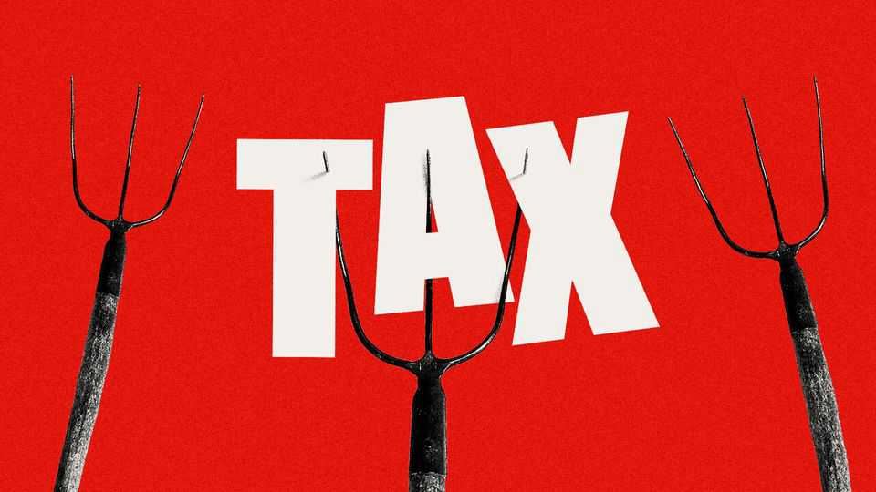
税务日危机
最近，民主党人也加入了这场运动。任何广受欢迎的政策都需警惕，因为这通常意味着它未经过充分审查。最新案例是美国的税收政策。该国正陷入一场跨党派的减税狂热。报税季刚刚结束，美国民众正收到来自特朗普的“大而美丽法案”的巨额退税——该法案由数万亿美元的赤字开支资助。不甘示弱，参议员科里·布克和克里斯·范·霍伦提出了自己的方案，若实施，将意味着约55%的报税人无需缴纳联邦所得税。毫不意外，这些提案在民调中表现极佳。
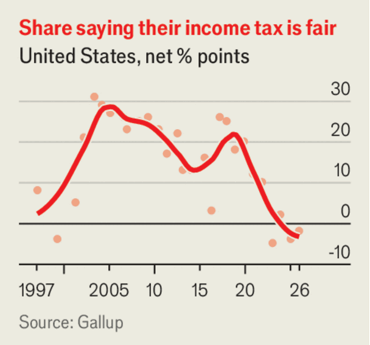
赠品总是极具吸引力，而美国人目前对税制的不满情绪尤为强烈；税收公平性感知已跌至30年来的最低水平。各州也在酝酿一些离奇的税收政策，例如对老年人实施房产税减免，或佐治亚州提议对教师免除所得税的方案。《经济学人》当然不支持大政府，但认为普通美国人免税是愚蠢的。若将税负转嫁给少数群体——无论是共和党计划中通过关税针对的外国人，还是民主党设想中加州拟议的对亿万富翁征收5%财富税的富人——都将造成经济上不现实且政治上极具破坏性。首先从经济角度分析，很难论证美国人税负过重。
除部分由民主党执政的州外，美国的税收水平相比多数富裕国家偏低。税法体系本身已具备累进性，进一步强化这种特性反而会削弱人们工作的积极性。而美国当前的财政赤字已达到国内生产总值（GDP）的6%，这是除经济衰退或战争时期外的历史最高水平。国会预算办公室（Congressional Budget Office）这一财政监管机构预计该数字仍将持续攀升。因此，两党此时陷入不负责任的恶性循环并非明智之举。本周在华盛顿举行的国际货币基金组织（IMF）春季会议期间，经济学家们开始思考，美国何时而非是否将遭遇一场堪比英国前首相利兹·特拉斯（Liz Truss）的债券市场危机。正如新兴市场财政部长们早已深知，欧洲同行们近期也重新认识到，生活在债券市场聚光灯下并不轻松。再来看政治因素。■
税收减免能否换取政客的长期支持存疑。特朗普任内实施的首轮减税政策并未阻止他在2020年大选中落败。今年退税季期间，他的支持率也持续下滑。继特拉斯之后接任的苏纳克，在2024年惨败大选前强行推进了0.7%GDP规模的薪资税减免。当英国选民被问及他的政绩清单时，这些税改措施甚至不如禁止饲养XL斗牛犬（一种凶猛犬种）的政策受欢迎。民主党希望减税能缓解选民对经济负担的担忧，但这种焦虑并不反映实际购买力下降。美国普通工人工资增速已连续多年跑赢通胀。选民真正感到震惊的是高企的名义价格。降低税率提升收入的手段无法解决这一问题。■
将如此多的美国人完全排除在税基之外，这是最新民主党提案的核心主张，听起来美好但存在额外的弊端。税收虽非文明的代价，却确实给公民提供了一个关心政府效率与效能的理由。切断这种联系，让大量选民沦为国家施舍的单纯接受者，可能加深美国的政治失灵。这本身已是令人痛心的后果，更会进一步让美国亟需的关于财政选择的成熟政治讨论遥不可及。■ Subscribers to The Economist can sign up to our Opinion newsletter , which brings together the best of our leaders, columns, guest essays and reader correspondence.
§006 彼得·马加尔的胜利将使匈牙利继续成为焦点原题：Peter Magyar’s victory will keep Hungary in the spotlight · 板块：Leaders · 栏目：领导人
维克托·欧尔班，匈牙利的圆胖总理，乐于扮演欧洲及更广泛地区崛起的民粹民族主义阵营领袖的角色。仅在4月12日全民选举前几天，美国副总统J.D.万斯访问匈牙利，宣称投票支持欧尔班就是投票支持西方文明。然而欧尔班在那次选举中的惨败，是对副总统荒谬言论的驳斥。但这也意味着，这场选举中获胜且立场保守的彼得·马加尔，将被中间派和进步派视为逆转民主衰败的典型案例。
■
一个结论是，压倒性胜利才是翻页的关键。在数年削弱匈牙利独立机构的行动后，欧尔班（Orban）本可效仿巴西的博尔索纳罗（Bolsonaro）和美国的特朗普（Trump），通过挑战接近的选举结果来扭转局势。然而最终，其所属的青民盟（Fidesz）预计将获得40%选票和56个席位，远低于马加尔（Magyar）与蒂萨（Tisza）获得的52%选票和137个席位，布达佩斯的推土机式政客仍展现了克制，迅速承认败选。马加尔将获得议会三分之二多数席位，正如青民盟曾拥有的那样。这赋予他修改宪法的法律权力，除非总统为避免激怒选民而否决所有修宪提案。在16年执政期间，欧尔班已将青民盟渗透至国家各个角落。该党掌控最高法院和宪法法院，其盟友则掌控大部分广播、网络和印刷媒体。
匈牙利官僚体系中遍布官僚，国有企业和教育系统亦然。第二点结论是，选民更易被关于腐败和经济能力的论点说服，而非对未遂独裁的警告。竞选期间，马加尔不断向匈牙利民众揭露欧尔班及其同伙如何像强盗般牟取暴利。这正是因为他们确实在行窃。操纵公共合同、监管机构的偏袒以及欧盟补贴的挪用，都让欧尔班的亲信们腰包鼓胀。选民希望马加尔恢复法治、振兴匈牙利经济并根除腐败及从中获利的犯罪者。由于费迪南德党机器可能阻碍其施政，马加尔必须无情拆解其控制体系。他必须迅速行动。■
波兰在2023年通过选举产生新政府，展现了修复民粹主义统治多年造成损害的艰难程度。但马加尔先生在重建过程中也必须展现出宽宏大量的胸怀。蒂萨党并未独自赢得这场胜利。几乎匈牙利所有其他反对党派——保守派、自由派和左翼——都放下各自立场，团结在马加尔先生身后。他们也应共享新匈牙利的成果。第三个结论是，没有人喜欢外国干涉。这一点适用于万斯先生，他警告布鲁塞尔官僚机构的恶意意图，却发现自己也难以获得MAGA阵营的支持。同样适用于俄罗斯总统普京，他以廉价能源和特殊优惠拉拢匈牙利，也适用于中国国家主席习近平，他视匈牙利为通往欧洲的门户。■
多数选民拒绝俄罗斯和美国影响其投票的企图，表明他们希望加入最不时尚的影响力领域——欧盟。纠正这一切的责任落在新领导人身上。马加尔先生仍是个谜。他两年前才脱离奥班先生的阵营。作为竞选者，他表现非凡，穿梭全国举办集会反对匈牙利青年民主联盟（Fidesz），并团结广泛联盟支持蒂萨先生。执政后，他需要支持。如今匈牙利选民已选出一个承诺遵守法律的政府，欧洲应迅速解冻此前冻结的数十亿欧元资金。这看似另一种外国干涉，但匈牙利自愿加入欧盟并遵守其规则。马加尔先生面临艰巨任务，全球自由派都将支持他。■
《经济学人》的订阅者可以订阅我们的"观点"通讯，该通讯汇集了我们最佳的社论、专栏、嘉宾文章和读者来信。■
§007 特朗普让委内瑞拉变得更好原题：Donald Trump has made Venezuela a better place · 板块：Leaders · 栏目：领导人
在强硬领导人尼古拉斯·马杜罗（Nicolás Maduro）于1月3日被美国特种部队捕获前，委内瑞拉是一个令人绝望的国度。他的政权压制异见人士并篡改选举结果。一些反对派政治人物被杀害、酷刑折磨或关押。经济已崩溃；800万人逃离家园。委内瑞拉自发变得开放或繁荣的想法似乎过于奢望。但自马杜罗被捕后的100天里，委内瑞拉已出现积极变化。刚获释的反对派政治人物开始公开集会，抗议活动不再被常规镇压。 ■
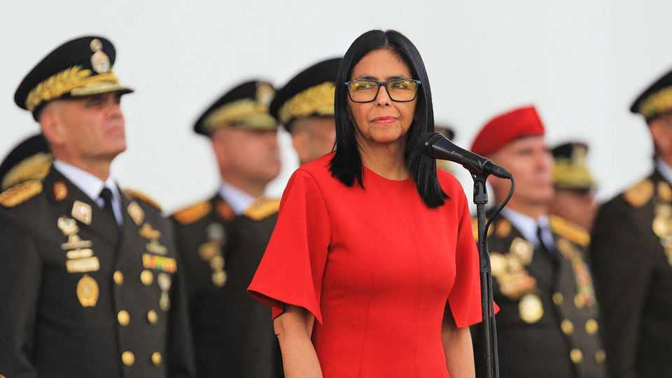
投资者正重新关注石油、天然气和矿业资产。德尔西·罗德里格斯（Delcy Rodríguez，曾是马杜罗的副手）正按特朗普的喜好管理国家，尽管若她未能遵从将面临暴力威胁。这一切的发生离不开特朗普，但总统对委内瑞拉的现状存在两大误解。首先，他将该国的转型视为已完成，称“委内瑞拉的发展令人难以置信”。其次，他将委内瑞拉当作政权更迭的范例。特朗普三月在谈及对伊朗计划时曾表示：“我们在委内瑞拉所做的是最完美的范例。”这两点判断均不准确。一方面，委内瑞拉的积极转型仍局限于当前阶段，只有民主得以重启，该国才能真正安全。■
外国投资不会在法治仅靠特朗普承诺维系的情况下以所需规模涌入。此外，委内瑞拉民众曾寄予厚望，若民主转型进展缓慢，他们将难以接受。目前仍有约480名政治犯被关押。投资者追求稳定，推迟选举最终将引发动荡。民主回归仍是可能选项，但通往民主的道路狭窄且模糊，若缺乏持续的美国压力，这一前景可能彻底消失。这大概需要反对派领袖玛利亚·科里娜·马查多重返委内瑞拉，推动选举进程。在2024年总统选举中，她被禁止参选后，委内瑞拉民众仍以压倒性票数支持其政治盟友埃德蒙多·冈萨雷斯；马杜罗先生则假装自己赢得了选举。■
这次，委内瑞拉人可能不得不一边走上街头，一边寻求与掌权者谈判。他的重大外交成果可能因抗议者愤怒要求变革而受损，这或许会促使特朗普推动选举。他的古巴裔美国国务卿马可·鲁比奥也押注委内瑞拉的成功，包括他本人的总统野心。但长期策略并非特朗普的强项。此外，罗德里格斯女士无疑会拖延时间，希望特朗普失去兴趣。美国将民主延迟换取短期稳定的诱惑力将很强。即使特朗普及其官员能培育出民主的委内瑞拉，他的方法在别处难以复制。■
委内瑞拉政权对特朗普的实用主义策略格外脆弱，因为该政权长期腐败且缺乏意识形态根基。马杜罗不过是个黑帮式独裁者。特朗普通过推翻他，实际上帮助其他势力更轻松地牟取利益。在攫取权力和金钱之外，这些势力几乎没有共同信念，顺从美国的成本微乎其微。委内瑞拉民主历史和强大的政治反对派也助力了特朗普，为民众提供了除政权之外的团结对象。多数人将马杜罗的倒台解读为对一个被憎恨的独裁者的攻击。相比之下，特朗普试图推翻伊朗政权的行动却以失败告终。战争初期袭击阿里·哈梅内伊（Ali Khamenei，伊朗最高领袖）的行动，反而促使德黑兰政权其余成员团结一致、反扑反击。
尽管伊斯兰革命卫队（Islamic Revolutionary Guard Corps）腐败且自私自利，但共同的意识形态有助于防止政权分裂。相比之下，罗德里格斯女士（Rodríguez）与美国达成的协议符合马杜罗先生（Maduro）自私自利的价值观。伊朗的政权远比委内瑞拉的政权强大。但即便是小小的古巴（Cuba）也迄今抵挡住了特朗普的攻势。66年来，该岛一直由卡斯特罗家族（Castro family）统治，他们无论国家如何腐败，都是共产主义的坚定信徒。古巴和伊朗的政权均未面临有组织的国内政治反对力量。特朗普将意识形态视为软弱。他认为赚钱才是唯一重要的事。如果他继续遵循在委内瑞拉偶然发现的模式，现实终将证明他错了。■
《经济学人》读者可注册订阅我们的Opinion电子简报，该简报汇集我们精选的社论、专栏、特邀评论及读者来信。■
§008 全球粮食危机可防可控 领导者 一场缓慢发生的悲剧原题：The impending global food shock is preventable · 板块：Leaders · 栏目：领导人
四年前世界似乎避免了一场人道主义灾难——至少表面上如此。一家巨型谷物生产商俄罗斯入侵了另一家乌克兰。贫困国家因无法支付小麦等基本物资的天文数字价格而担忧粮食短缺。随后两国同意让满载粮食的货船从黑海港口启航。市场趋于平静，饥饿问题淡出了新闻头条。但并未真正远离贫困人群的生活。据估计，乌克兰战争在发展中国家造成的死亡人数超过了东欧战场的伤亡。如今海湾地区的战争正威胁着一场类似的缓慢发生的灾难，只是这场灾难发生的地点不在冲突前线。
非洲和亚洲的贫困人口已经在自己的土地上种植的作物减少，并开始跳过正餐。联合国世界粮食计划署（World Food Programme）警告称，如果霍尔木兹海峡（Strait of Hormuz）在年中仍未开放，已有超过3亿人难以维持生计的人群将再增加4500万。世界本可以采取行动避免这一局面。令人痛心的现实是，它不会。尽管伊朗及其邻国并非主要粮食出口国，但它们是农业供应链中的关键环节。被封锁地区销售的化肥占全球交易量的30%，液化天然气占20%（用于制造化肥的原料及烹饪燃料），石油占15%（用于驱动农业机械）。如果近200万吨滞留在被封锁海峡后的化肥不久不能开始运输，许多作物将无法在生长季节的适当时间得到滋养。
产量将骤降，粮价将飙升，许多贫困城市的居民将面临饥饿。化肥短缺将更严重地打击发展中国家的农业企业，而非自给型农民，因为后者本就很少使用这类物资。但农村地区将承受一场地质灾难带来的冲击，这场灾难将加剧地缘政治危机。据预测，全球即将遭遇一次厄尔尼诺（El Niño）现象，这是一种每隔几年就会暂时升高全球气温的气候模式，同时引发全球范围的干旱与洪涝。此次厄尔尼诺现象可能尤为强烈。尽管在热带地区，厄尔尼诺的温和影响可能对农民有利，但在较贫穷地区，其后果往往弊大于利。阿根廷和乌拉圭通常会降雨过多，而南部非洲、印度和东南亚则会遭遇严重干旱。■
2015-16年的超强厄尔尼诺现象导致部分南部非洲国家粮食作物产量下降了三分之二。上一次厄尔尼诺现象发生在2023-24年，给该地区带来了百年一遇的严重干旱。农作物歉收，数以万计的牛羊等牲畜死亡。世界银行数据显示，超过3000万人需要粮食援助。今年厄尔尼诺现象的强度尚需等到北半球夏季才能确认，但有一点已经可以确定。无论是否为超强厄尔尼诺，它都将叠加在加速的全球变暖之上，使干旱地区更加干旱、湿润地区更加湿润。因此，极端天气与极端贫困将叠加。最糟糕的情况或许仍可避免。目前所需肥料已基本具备，部分地区的农户仍有时间将肥料施用于今年的作物。■
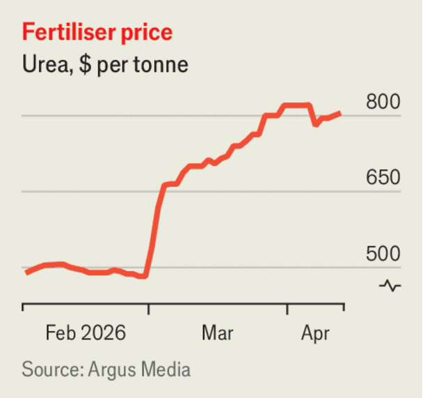
尽管再多的尿素也无法挽救被山体滑坡摧毁或干旱灼伤的庄稼，但合理使用仍能缓解厄尔尼诺现象带来的部分灾害。世界并不缺乏热量。大量用于生产车用乙醇的玉米（玉米）本可以用来喂养人类。即便富裕国家政府花钱以减轻海湾战争引发的燃料冲击对本国公民的影响，他们也有能力为贫困世界提供粮食援助。理论至此终结。伊朗应允许肥料通过霍尔木兹海峡；美国不应封锁伊朗的尿素运输。令人遗憾的是，双方均无意采取行动。高油价反而使生物燃料对农民更具吸引力，而非更少。富裕国家正陷入自私的思维。因此，不作为似乎已成定局。面对可避免的灾难，这种态度令人羞愧。■
《经济学人》的订阅者可注册订阅我们的Opinion电子简报，该简报汇集我们最优秀的社论、专栏、特邀评论及读者来信。■
§009 委内瑞拉并非特朗普所称的胜利，但局势正在改善 简报原题：Venezuela is not the triumph Donald Trump claims, but it’s improving · 板块：Briefing · 栏目：简报
“自由，自由，自由！”在加拉加斯郊外奥库马雷德尔图伊镇一座座无虚席的厅堂里，口号声此起彼伏。数百名支持玛丽亚·科里娜·马查多的民众情绪高涨。数月前，这样的集会难以想象。如今高声歌唱的组织者曾被关押或藏匿，尼古拉斯·马杜罗这位掌权12年的强人曾对异议人士实施镇压。没人敢来，更不用说挂起气球了。
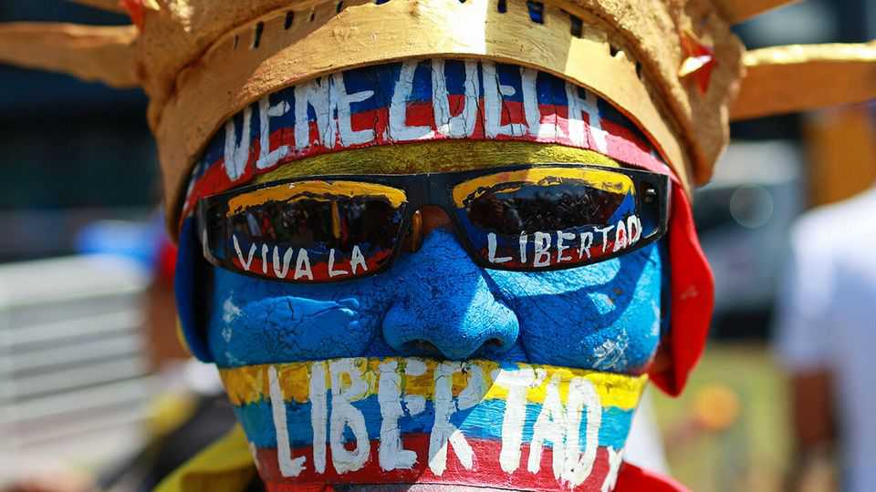
1月3日，美国特种部队在一场戏剧性突袭中逮捕了马杜罗。现场参加活动的胡安·迪亚斯欣喜若狂地表示：“我们不再害怕，我们充满喜悦，渴望继续战斗。”远在华盛顿的马查多女士同样热情洋溢地表示：“委内瑞拉很快就会获得自由。”《经济学人》杂志记者报道，唐纳德·特朗普也十分激动，他表示：“委内瑞拉的发展堪称奇迹。”他的乐观更多源于商业而非政治。1月时，他自信地预测称，大型石油公司将很快投入数十亿美元，从而获得丰厚利润。马查多女士也预见了繁荣前景：“所有人都将迎来巨大机遇。”然而自马杜罗被绑架后，其副手德尔西·罗德里格斯一直在执政——只要她遵循特朗普的指示，特朗普就给予其支持。■
美国国务卿马尔科·鲁比奥（Marco Rubio）多次强调选举即将来临，但始终未明确时间。尽管特朗普声称将对石油行业进行大规模投资，但目前尚未见到实质性进展。委内瑞拉经历了27年的查维斯主义（chavismo），这种最初以民粹主义为特征的社会主义逐渐演变为专制腐败政权。以胡安·查韦斯（Hugo Chávez）命名的这一政权摧毁了经济，导致约四分之一人口（约800万人）为寻求更好生活而移居海外。尽管自1月起镇压有所缓和，经济前景也充满期待，但前行道路远比反对派或特朗普所描绘的更加模糊。人们对委内瑞拉的热情似乎显得过于急切。■
委内瑞拉投资银行VIPCapital（Venezuelan Investment Bank）的罗德里戈·纳兰霍（Rodrigo Naranjo）表示，一位美国投资者近日向他透露：“仿佛发现亚特兰蒂斯重现海面。”在加拉加斯国家俱乐部（Caracas Country Club）的奢华泳池边，气氛乐观。纳兰霍称，私人企业价值几乎一夜之间上涨了约20%。美国顾问公司Signum Global Advisors的查尔斯·迈尔斯（Charles Myers）表示，该公司近期带55位投资者前往加拉加斯，称“罗德里格斯（Rodríguez）正在以‘光速’推行亲投资者改革”。然而，炒作已超越现实。一位本地商人表示，真正进行投资的只有准备应对新竞争的委内瑞拉本地企业，而大多数大型跨国公司仍担忧查维斯主义（Chavismo）对外国投资者的压榨。■
在中间的还有拉丁美洲的大型综合企业，以及一些石油和天然气公司。该集团正在积极争取合同但尚未签署，希望确保能够无阻碍地运营并汇回利润。石油、天然气和矿业最受关注。政府应特朗普的要求，自1月起已通过法律，放松对石油、天然气和矿业投资的限制。壳牌公司（Shell）已签署初步协议，开发天然气田。竞争对手雪佛龙（Chevron）本周将部分海上油气田交给国家石油公司PDVSA，以换取在开发委内瑞拉大量重质（沥青状）原油项目中更大的份额。公司律师表示，目前共有约20起案例，主要涉及大宗商品领域，外国投资者向政府就特定资产提出收购要约。不过，截至目前，尚未有资金到位。
特朗普最关心的是石油。委内瑞拉拥有全球最大的石油储量（尽管主要为价值较低的沥青质原油），并在上世纪70年代末期日产量接近400万桶。然而去年，产量仅约100万桶/日。所有原油仍需通过PDVSA的合作伙伴或承包商进行生产。现有生产商有望在年底前将产量提升至约130万桶/日。此后情况将更加严峻。该国石油基础设施破败不堪，电力供应不稳定。要实现300万桶/日的产量，需要高达1830亿美元的投资，能源咨询公司Rystad估算。巨额资金流入面临重大障碍。首要障碍是资金能否顺利到位。
五家合计约占委内瑞拉石油产量三分之一的大型石油公司享有美国制裁的豁免权，允许其销售所开采的石油，并在将剩余资金上缴美国财政部前保留利润的一部分。除这五家公司的其他企业，包括PDVSA，其销售收入则直接上缴美国财政部。美国财政部随后监督所有资金发放，每笔支出均需经过繁复的文书工作和合规审查。即便PDVSA通过这种方式获得资金，仍需及时支付承包商、供应商和合资伙伴的款项，而这一点它经常未能做到。由此产生的延误极为严苛，有报道称一些企业已停止开采，尽管美国于4月14日解除对委内瑞拉中央银行大部分制裁，应可减少部分繁琐程序。■
与此同时，一位加拉加斯能源高管指出，唯一在扩大生产的企业，都是那些拥有某种“魔法豁免权”的公司。但申请新豁免权的流程似乎比资金流动还要缓慢。另一个问题影响所有石油公司。最近的改革为能源项目设定了特许权使用费和税收的税率范围。该范围的低端税率能让委内瑞拉投资具备竞争力，但高端税率则无法做到，警告称，切诺基公司首席执行官迈克·维思特。更糟的是，政府尚未说明哪些情况下会适用较低税率。为70多家已在委内瑞拉运营的公司厘清新条款，所需时间将远超新法律规定的180天。除非企业明确知道将缴纳多少税收，否则不会进行新的投资。■
除上述种种外，许多外国投资者对政府践行法治的承诺也持严重怀疑态度。像埃克森美孚这样的国际石油巨头多年来多次遭遇委内瑞拉政府没收资产的情况。当地法院从未提供任何保护，国际仲裁要么不可用，要么被忽视。4月16日，西班牙石油公司雷普索尔（Repsol）宣布与政府达成协议，扩大在委内瑞拉的业务，协议包含一项保证支付机制——这可能是缓解此类担忧的潜在手段。若缺乏更多投资，大多数委内瑞拉人将难以看到经济改善。“通货膨胀正在吞噬我们”，一位教师抱怨道。2月时通胀率高达618%，创全球最高纪录。汇率问题则是每日的头痛。加拉加斯贫民区佩特雷（Petare）一家小商铺的经营者卡洛斯抱怨道：“美元从未停止上涨，我们没有任何稳定性。” ■
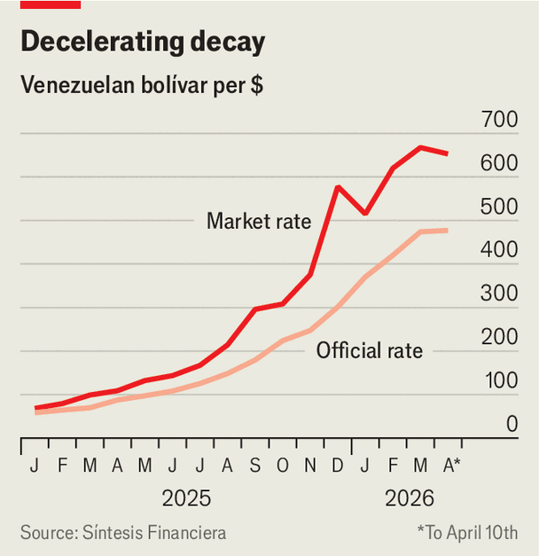
物价上涨源于政府习惯性地让央行印钞来填补财政赤字。西尔内西斯金融咨询公司（Síntesis Financiera）估计，去年三分之一的政府支出是通过这种方式融资的。尽管政府因石油产量增加和油价上涨带来的收入上升有望缓解这一问题，但恐怕无法彻底解决。任何美元流入都应减轻本币玻利瓦尔的压力，并缩小官方汇率与市场汇率之间的差距。这似乎正在发生：过去六周玻利瓦尔贬值速度已放缓（见图表）。委内瑞拉经济学家阿斯杜鲁巴尔·奥利韦罗斯（Asdrúbal Oliveros）预计，今年晚些时候通胀率将降至约150%。在查维斯主义糟糕的经济记录背景下，这样的结果都算好消息。■
委内瑞拉经济自2013年以来萎缩了70%，但仍有大量闲置产能，可能迎来增长。石油收入、信心回升和信贷增加或可推动经济扩张。奥利维罗斯预计今年GDP增长12%，较去年可能的2.4%大幅上修。“法治在中长期至关重要，”一位商人表示，“但凭借现有法治水平，我们也能将经济规模翻倍。”政治前景同样模糊。特朗普更关注石油而非选举，他称赞罗德里格斯为“了不起的人”，称其“工作出色”。美国驻加拉加斯外交官“并不关注民主”，一位西方外交官叹息道。尽管罗德里格斯已解雇部分官员并引入少数技术官僚，但内阁半数成员仍是马杜罗时期的遗留。■
新任国防部长曾担任情报部门负责人，拥有血腥的履历。仍有约480名政治犯在狱中。在臭名昭著的埃尔赫利科（El Helicoide）监狱外，绝望的家庭成员举着亲人的照片，高喊“正义、正义与自由”。政府已通过大赦法，但该法律要求人们向最初定罪他们的司法系统寻求宽恕。该法还明确排除了那些鼓动外国对委内瑞拉使用武力的人，这一条款显然针对马查多女士（Ms Machado）及其盟友。该政权过去曾将大赦作为粉饰门面的手段，随后再次逮捕同一批人。“我已获得三次大赦，”国家议会前议员阿梅里科·德格拉齐亚（Américo De Grazia）叹息道，他受益于这项新法律。■
一些知名政界人士被剥夺了特赦资格。马查多女士的律师佩金斯·罗查（Perkins Rocha）在近18个月的监禁后于二月获释，但仍在家中软禁。两名警察日夜守在罗查先生的公寓外，打盹并观看YouTube视频。他们不断敲门，要求拍摄罗查的照片传给上级——这一仪式每三小时重复一次。政权方面则驳斥有关政治自由化的讨论，称目前的重点应放在经济上。“过去的主要错误在于在缺乏政治共识的情况下就启动选举程序，”新任高等教育部长安娜·玛丽亚·桑胡安（Ana María Sanjuán）强调。她坚持认为，必须达成涵盖“经济、社会和政治”的共识，之后才能举行选举。这听起来像是一个无限期拖延的公式。
尽管如此，仍有约700名政治犯获释。这在27年中前所未有，不仅因释放人数之多，还因并非基于明确协议，且新逮捕人数不多，法律监督组织Foro Penal的阿尔弗雷多·罗梅罗指出。此外，政权对政治集会和游行活动表现出一定程度的容忍。1月和2月期间，此类抗议活动超过1200次。“我们决心不离开街头，”加拉加斯街头游行中的一位退休教师伊里亚娜·阿劳尔说。当然，政权煽动组织反向游行以阻止阿劳尔参与的集会。喋喋不休的主持人通过巨型扩音器煽动数千名被大巴车运送到现场的国家雇员。参与者身着各类政府机构制服，从电信监管机构到委内瑞拉残奥委会无所不包。“我们不得不前来。”■
“我不知道问题出在哪里，”一位教师莉莉安解释道。尽管政府采取了强硬手段，但与一月前结束多数抗议活动的群众大规模逮捕或骑摩托车民兵驱散行动相比，仍相去甚远。这个似乎同时存在包容派与强硬派的政府，似乎正在考虑采取措施缓解对政治开放的诉求。一种设想是允许反对派以某种形式参与政府运作。前总统候选人、政治犯恩里克·马尔凯兹于二月现身华盛顿，出席特朗普先生的国情咨文演讲，他表示在特定条件下，“统一政府将非常有趣”。桑胡安女士称政府希望部分反对派人士加入内阁，但排除全面权力共享。
政权内部人士谈及选举时，仿佛它们终将到来，大概是在美国压力下发生的。“总统的愿景从未有过拒绝选举进程的意图，”桑丘安女士表示。反对党议员斯塔林·冈萨雷斯认为，政府试图为经济改善争取时间。他预测，届时政府将实施一场民粹主义的财政刺激政策，希望借此勉强过关。罗德里格斯女士已承诺提高最低工资，尽管政府财政状况严峻。马查多女士承认，对选民名册、选举委员会和选举法进行必要改革将耗时九个月，这有助于政府。其他反对党政治人物认为，所需时间更长。■
值得注意的是，总统的弟弟何塞·罗德里格斯（Jorge Rodríguez）——同时也是国家议会主席——提出以豁免起诉为手段，鼓励政权允许选举举行。他向西班牙《国家报》（El País）表示，过去与反对派谈判的失误在于“未明确界定特定事件（无论社会、政治、经济或选举）后我们将获得的保障”。桑胡安女士引用政治学家亚当·普雷沃斯基（Adam Przeworski）的观点指出：“若你面临巨大损失，就无法进行选举。”曾对赦免委内瑞拉压迫者持怀疑态度的马查多女士似乎开始转变立场。她仍强调正义，但表示：“我们拒绝复仇……我们需要推进一个有保障的进程，某些妥协将被做出。” ■
然而要达成双方都信任的协议恐怕并不容易。贡萨洛先生认为，政权领导人只会将权力交予那些不被视为对其自由构成威胁的人。他并不认为马查多女士符合这一条件。一位西方外交官表示：“她对政权来说是一条红线。”许多精英阶层人士则将马尔克斯先生视为马查多女士与罗德里格斯女士之间的折中方案，尽管他在2024年总统选举中仅获得不到1%的选票。（反对派已提交证据显示，马查多女士被禁止参选后，其盟友轻松赢得选举，但政权随后篡改选票结果以支持马杜罗先生。）■
马查多女士不耐烦地驳斥这种说法。“让我们让商界人士、外交界人士或政权来决定委内瑞拉总统人选吧，”她讽刺地说道，“民主真是无处不在。”她认为，那些呼吁她让位于更受政权欢迎的反对派人物的人，忽视了这一策略过去的失败，其实只是“害怕特权终结”。“最终，他们不是害怕我，而是害怕人民。”马查多女士希望返回委内瑞拉，迫使政权正视现实。特朗普担心此举可能引发混乱，或揭穿他频繁吹嘘的干预行动，因此敦促她推迟行程。但她似乎不愿等待太久。她说，一旦回国，将公开亮相。3月中旬在智利首都圣地亚哥举行的一场活动中，约17,000名委内瑞拉人到场为她欢呼。■
她抵达加拉加斯可能引发大规模聚集，迫使政权陷入两难抉择：在媒体聚光灯下镇压其支持者，或允许一场戏剧性的、公开展示其不受欢迎与无能的示威。她强调，必须向世界表明“推迟选举实际上对社会安宁风险极大”。当被问及如何加快选举进程时，她回应称：“我相信人民的声音应和平、公民且强有力地被倾听。”隐含之意是，她准备通过街头压力进一步施压政权。在马加尔多夫人所属政党的拉韦加会议上，与会者并未关注如何说服政权让位或选举何时能举行。■
该党的基层支持者普遍深信，这必须是——必须是——政权最终倾覆的时刻。“我们能做到！”现场一名女性观众突然高喊，此言引发阵阵欢呼。“现在不行动，就再无机会！”■
§010 欧洲人权公约是否需要改革原题：Does the European Convention on Human Rights need reforming? · 板块：Letters · 栏目：读者来信
欢迎通过电子邮件发送通信至letters@economist.com 了解更多关于我们如何处理您的信件 您关于改革欧洲人权公约的文章（“阻止ECHRexit”，4月4日）未能充分涉及正在谈判中的基希诺瓦政治宣言的三个关键考量。首先，成员国希望根据自身理解解释第3条（禁止酷刑和不人道待遇）和第8条（私人和家庭生活权）的“自由”，这直接挑战了司法独立。 ■
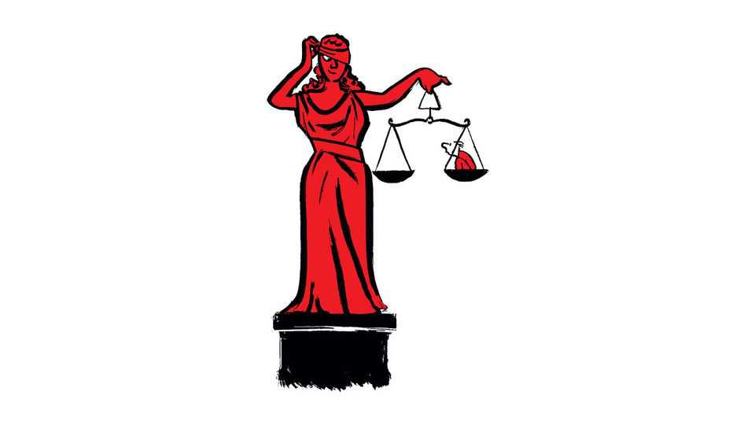
当政治指导方针规定了对酷刑的保护范围或家庭生活权时，司法机构将不再独立，而成为政策工具。其次，通过限制特定群体（首先从移民开始）的保护措施，将权利持有者进行等级划分，向所有欧洲人发出令人寒心的信号：人权并非与生俱来，而是取决于政治。第三，认为通过削弱法律保护可以解决移民挑战是一种幻觉。此类措施无助于应对移民动因，反而可能削弱欧洲法律秩序。随着声明讨论的推进，各国需基于证据行事，并警惕其行动可能带来的意外后果。迈克尔·奥弗拉赫蒂 欧洲人权专员 斯特拉斯堡■
您对脱欧后英国农业政策的描述与大多数农民实际经历的现实相差甚远（“步入应许之地”，3月28日）。暂且搁置《经济学人》一贯坚持的里卡多观点，即食品生产应外包，当前英格兰的实际情况并非典范：它是一个警示。关键转变在于，欧盟共同农业政策下，补贴支撑了农业的生存基础，约占利润的60%，缓冲了市场波动。英格兰的新政策仅向农民支付因提供环境效益而放弃的收入，仅覆盖成本而非生计，导致多数农场财务中存在结构性资金缺口。同时，这些“公共产品”的真实价值仍未被定价。更糟的是，支持预算自2014年起实际价值已冻结，预计到2025年3月将耗尽，排除了约半数农场。■
尽管政府有相关愿景，但对自然的私人投资依然极为有限。结果显而易见。2024-25财年，共有6365家农场企业关闭。在地缘政治和气候不稳定的时代，忽视粮食和农业的经济基础无异于一场高风险的试验。一个具有韧性的农业部门并非奢侈品，而是保障粮食安全、农村经济和生态环境的必需品。乔·斯坦利（Joe Stanley），可持续农业负责人，艾尔顿项目（Allerton Project），英格兰诺丁汉郡洛丁顿（Loddington, Northamptonshire）您正确地赞扬英国政府削减传统农业补贴并将资金转向环保活动。对英国消费者而言，更关键的是正在发生的更广泛的国际变化。■
历史告诉我们，若国内食品生产水平降至二战前100年的水平，而当前全球地缘政治动荡、保护主义抬头，局势可能如何演变。同样重要的是远东地区日益增长的财富及其带来的饮食结构变化，该地区国内生产已难以满足需求。贸易模式正快速转变，传统供应商发现英国市场吸引力下降。若不维持适度的自给率，英国超市将难以实现政府期望的韧性，同时避免食品通胀持续高于邻国。政治家需认识到，在竞争激烈的全球环境中，廉价食品供应被消费者视为与迫切需要的环境改善及生物多样性重建同样重要的公共产品。■
尼古拉斯·萨菲尔 前农业与园艺发展委员会主席 英格兰东萨塞克斯郡瓦德斯托
英国确实有机会在展示如何支持农业方面走在前列，使种植者、消费者和环境都能受益。这一机遇因能率先采用基因编辑等技术而进一步增强，这又是一次罕见的脱欧红利。然而，尽管我欢迎您的乐观态度，农业行业目前处于强势地位的前提并不符合现实。巴伦妮丝·米内特·巴特尔斯（Baroness Minette Batters）近期发布的《农业盈利能力审查》显示，在过去五年中，英格兰仅有8%的农场仍处于高绩效区间。要使农业经营具备经济可持续性，必须能够支撑家庭生活并实现再投资。
对于一个典型的140公顷农场，报告指出每年需实现约34,500英镑（46,800美元）的利润。令人震惊的是，约50%的农场年利润低于这一水平。借助新型农业支持政策和世界级创新技术带来的机遇是真实存在的。但要抓住这一机遇，我们必须首先建立盈利的农业企业。否则，我们会有正确的环境方案和最先进的技术，却无处加以应用。马里奥·卡卡莫教授（Mario Caccamo）英国农业植物研究所（National Institute of Agricultural Botany）首席执行官■英国的农业政策远未达到所需水平。看到大片单一作物的黑麦草田，边缘仅点缀着少量鸟类友好型种植区，或是冬季雨水冲刷带走稀薄表土，春季前留下龟裂的泥土，这种景象令人痛心。
这种模式缺乏韧性，气候变化将对其造成严重冲击。2015年巴黎气候大会（COP21）上，各国政府签署的“4 per 1,000”目标，即全球碳封存率每千吨需达到4吨，是应对气候危机的关键。联合情报服务机构（Joint Intelligence Services）今年早些发布的报告强调了这一目标的重要性，指出所有关键生态系统均正沿着崩溃路径发展。正确的解决方案是建立科学的转型路径，数千名气候科学家已为此提出建议。这些路径至少需要八到十年的承诺期，并设定阶段性成果。在保障农业多样性与农户选择权的同时，要求逐步实现免耕、无化肥、无除草剂、无农药的生产模式，并引入轻型耕作机具、丰茂牧草带、放牧饲养的牲畜以及堆肥茶等生态技术。■
这种转变将重塑农业经济、增强韧性并改善生态系统成果，同时提升食品质量。这必须与渐进但紧迫的饮食文化变革以及对农民的公平定价相结合。问题本质是政治性的而非技术性的，但危机需要勇敢的愿景，而非片面的视野。安格斯·詹金森（Angus Jenkinson）科茨沃尔德区议会再生农业与生态委员会成员，莫顿-因-马什，格洛斯特郡。奥维德的影响远超传统艺术家（“神话之子”，3月28日）。这位罗马诗人对当代音乐的持久影响力持续存在。在《为何鲍勃·迪伦重要》一文中，哈佛大学古典文学教授理查德·托马斯（Richard Thomas）专门研究希腊与罗马文学，记录了这位作曲家“早已加入这些古代诗人的行列”。■
他属于那个发源于古希腊和古罗马、历经岁月依然保持相关性且无法被时间和空间所限制的古典传统。哈里斯先生在文中引用了迪伦先生作品中直接源自奥维德的创作。例如，奥维德《流放诗》中超过30行诗句被编织进《现代时代》的歌曲中。书中解释了奥维德在流放期间如何将自己比作奥德修斯，而迪伦先生则通过2017年诺贝尔奖演讲结尾的“让我为你歌唱，哦，缪斯，通过我讲述这个故事”表达了与奥德修斯的联系。TOM GABLE德尔马，加利福尼亚州
《经济学人》关于特朗普舞厅项目的Lexington专栏分析深入、逻辑清晰且令人恼火地准确（4月11日）。总统对美国民众尤其是华盛顿特区的最终嘲讽，体现在必须挖掘出的尘土之中。■
那堆脏土必须去某个地方，而特朗普选择了东波托马克公园（或称海恩斯角）的一家高尔夫球场作为倾倒垃圾的好地方。这家高尔夫球场属于国家公园管理局，建于1921年，是该地区绿色费用最低的球场。它并非只为精英阶层服务。如今球场上堆积起一堆脏土，高度约9米，宽度约15米，长度约300米。这是特朗普对个人荣耀的贪婪追求带来的又一附带损害。帕特·弗莱明 华盛顿特区
巴特利的电子邮件开头语指南（3月7日）对仍使用“电子贺卡”和“电子商务”等术语的人进行了调侃。我年纪也足够大，记得这些词汇。当时还有“网民”一词。如今“网民”又去哪儿了？也许在互联网刚兴起时，采用“网民”身份确实有吸引力。如今我们需要一个新词来指代负责任的网民。好的电子公民？守法的网络移民？纳雷格·塞费里安 纽约 ■
§011 印度选举中的女性选民争夺战原题：A battle for female voters is changing India’s elections · 板块：Asia · 栏目：亚洲
印度选举正在经历一场围绕女性选民的争夺战。政客们正在通过发放现金来争取她们的支持。
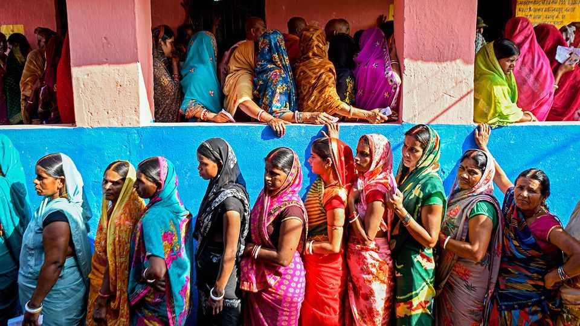
被推至后方的男性必须排队等候。在加尔各答郊区西孟加拉邦的选举集会上，一支全女性游行队伍走在最前面。女性已成为该州选举竞选活动的核心，该州选举分两阶段于4月23日和29日举行。赢得女性选民的支持对本月举行选举的另外三个州和一个联邦属地同样至关重要。这种情况并非始终如此。数十年来，女性选民在印度政治中只是一个次要角色。
在印度独立后首次全国大选（1951-52年）前夕，近300万女性因以“母亲”“姐妹”等身份而非本人姓名登记，被剔除出选民名单。情况已发生巨变。1962年至2024年间，男性在国家大选中的投票率仅小幅上升3个百分点，而女性投票率则大幅跃升近20个百分点。在2024年印度议会选举中，女性投票率略高于男性（65.8%对65.6%），这是历史上首次出现这种情况。西孟加拉邦某选区甚至有近88%的合格女性参与投票——这一比例在多数西方国家几乎难以想象。■
这在一定程度上反映了女性地位的逐步提升，她们在拥有工作、教育以及一定程度的独立性后更倾向于投票。印度国家银行分析师的一项研究认为，最近女性投票率出现显著上升的主要原因在于女性识字率的提高。所有这些变化正在重塑选举的竞选方式。女性选民的决策考量可能与男性有所不同。一项全国性调查中，不到10%的女性表示她们支持某位候选人是因为“意识形态”。男性似乎更容易因文化议题而情绪波动，例如政客指责对印度教的威胁或声称存在来自穆斯林占多数地区的“非法渗透者”。研究发现，女性更倾向于被具体的社会福利承诺所打动。■
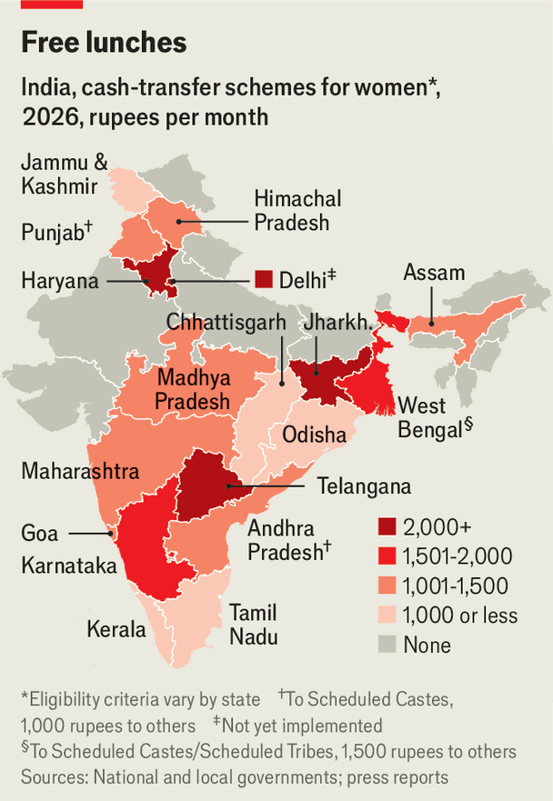
《经济学人》专栏作者Ruhi Tewari在《印度女性选民的诉求》一书中指出，男性主导社会中的日常挣扎使女性比男性拥有“更明确的生存本能”。尽管女性处境正在改善，但她们仍大约是男性的两倍可能性持有有薪工作，因此对能否始终获得足够维持生计的金钱缺乏信心。女性选民的争夺正解释着近期州级政治中一个显著变化：政府现金转移计划的迅速扩张。至少16个州推行仅限女性参与的计划——这一数字从2022年的寥寥几个大幅上升（见地图）。这些计划每月提供的金额从约800卢比（9美元）到2500卢比（27美元）不等。各州采用不同标准选择受益人，如年龄、收入和婚姻状况。越来越多的选举围绕此类计划展开。■
西孟加拉邦是观察这一现象的绝佳地点。在加尔各答郊区卡哈达（Khardah）领导集会的女性支持现任首席部长玛玛塔·班纳吉（TMC党）。她们挥舞着宣传拉克希米尔·班达（Lakshmir Bhandar）的标语，这是班纳吉的旗舰福利计划。该计划每月向来自贫困家庭的25至60岁女性发放1500至1700卢比现金。她们还宣传其他针对青少年女孩、女农民和寡妇的地方现金计划。很难将话题转向其他选举议题。37岁的什普里亚·戈希（Shupriya Ghosh）还希望看到州政府采取什么措施？“更多计划！”她笑着说。印度政治的这一转变正引发广泛讨论。精心设计的现金转移计划确实有其价值。它们可以促进消费、减少贫困、提高女性教育水平，并遏制早婚，还有其他益处。■
拉克希米·班达尔（Lakshmir Bhandar）在2023年普拉蒂奇信托（Pratichi Trust）的报告中获得赞誉。该非政府组织（NGO）总部位于加尔各答，致力于研究改善教育、医疗和性别平等的途径。其调研显示，超过60%的受访者认为该计划增强了她们在家庭中的地位；87%的受访者表示，该计划使她们得以投资超越基本生存的愿景，如技能培训或创业。然而，印度民主的冷静观察者对现金福利计划的激增表示担忧。许多此类计划缺乏系统性，看似以女性解放为名的贿选行为。去年11月比哈尔邦州选举前数周，印度执政党印度人民党（BJP）及其盟友在一项生计计划下，向750万名女性账户注入10,000卢比。此举在宪法上存在争议。■
其对选举的影响尚不明确，但据一项估算，可能使联盟最终赢得的议席数增加了五分之一。这加剧了对财政成本的担忧。在最近一个财政年度，印度各地区政府在无条件现金转移计划上支出约1.7万亿卢比，尤其是针对女性的项目。约半数实施现金转移计划的州出现财政赤字。在挥霍无度的西孟加拉邦，州政府债务占GDP的38%，接近历史最高水平。仅拉克希米·班达尔一项就消耗了其财政收入的10%。而印度人民党正承诺将该计划发放的资金翻倍，以此作为竞选承诺。一大担忧是，对现金转移计划的狂热正在分散对可能更持久改善民生政策的注意力。■
迪普西塔·达尔（Dipsita Dhar）正在为印度最大共产党——西孟加拉邦选举中参选，她表示，提高生活水平应通过提升工资和改善劳动条件实现，而非依赖政客发放的礼物，因为这些礼物一旦政客下台便可能消失。印度财政部近日警告称，现金计划可能抑制对教育和医疗等公共服务的投入——这两项服务能显著改善女性处境。加尔各答政治科学家扎德·马哈茂德（Zaad Mahmood）指出，西孟加拉邦众多政策之一是向完成学业的女童发放现金补贴，但他认为这无法解决破旧教室或劣质教师等问题。印度女性选民终于获得了政界关注，令人遗憾的是，她们很少能获得真正具有变革性的政策。■
订阅我们的免费每周简报Essential India，以随时了解我们的印度相关报道。■
§012 新加坡与马来西亚就伊朗战争问题展开博弈原题：Singapore and Malaysia knock heads over the war in Iran · 板块：Asia · 栏目：亚洲
这场讨论始于新加坡议会一名反对党议员的提问。他问：新加坡是否会为确保本国船只通过霍尔木兹海峡的安全通行而与伊朗对话？“类似马来西亚等其他国家的做法。”他在4月7日的辩论中补充道。新加坡外长维文·巴拉克里希南给出了回应。根据国际法，船舶在霍尔木兹海峡等海峡自由通行的权利是基本准则，对这个城邦国家而言至关重要。新加坡从自身位于马六甲海峡的地理位置中获得了巨大价值。
如果有人封锁该海峡或收取通行费，新加坡的大部分海运业都将流向其他港口。巴拉克里希南博士回答说：“我无法就船舶安全通行或通行费费率进行谈判，因为这样做将隐含地削弱这一法律原则。”然而，由于问题涉及马来西亚此前的行为，这场辩论迅速跨越了两国之间的堤道。努鲁·伊扎·安瓦尔——马来西亚总理安瓦尔·依布拉欣的女儿，也是其政党的重要官员——怒斥道：“马来西亚不会接受关于参与价值的说教。”她表示，该声明“令人震惊且令人遗憾”，并称新加坡是在重复来自东南亚以外的大国观点。她称伊朗是战争罪的受害者，其封锁海峡是寻求和平的举措。■
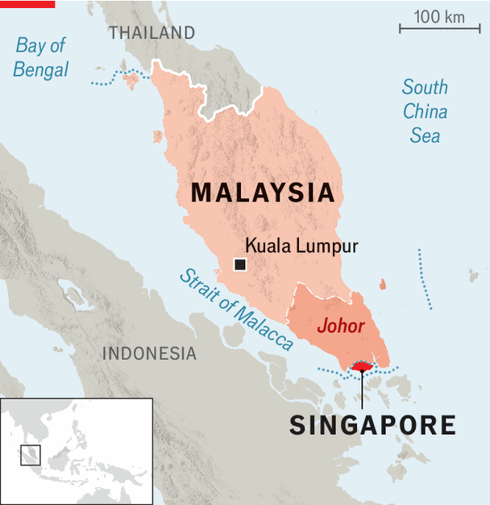
这场争执符合新加坡与马来西亚长期互怼的历史，两国曾在1965年短暂合并后分道扬镳。而最新争端则源于一些长期存在的地缘政治分歧。新加坡与马来西亚长期以来就如何确保本国海域海峡的安全存在分歧。2000年代中期，新加坡倾向于与大国合作解决海盗问题，而马来西亚则因长期奉行不结盟政策而持不同意见。新加坡最终设立了监测马六甲海峡安全的中心，美国也加入了该中心。但新加坡不得不接受马来西亚的立场，即只有沿岸国家才能进行联合空中巡逻。近期事件，如美国封锁伊朗港口的决定，让马来西亚人感到被证实。关于以色列的分歧同样显著。■
新加坡独立后寻求以色列帮助建设军队。以色列培训人员的到访在地区引发巨大争议，新加坡甚至试图将他们伪装成墨西哥人。合作仍在继续。但马来西亚政府对以色列的批评声此起彼伏，安瓦尔——这位曾是年轻伊斯兰主义活动家的人——对此表现得尤为积极。然而这场争端中也掺杂着虚张声势的成分。两国关系在其他领域却在升温。两国已在马来西亚柔佛州设立经济特区。目前担任柔佛州苏丹的苏丹·易卜拉欣支持与新加坡保持密切关系，他目前担任马来西亚独特的轮流苏丹职位。如果下次选举导致悬峙议会，他可能在首相人选中发挥关键作用。传言称这些选举可能在今年举行。这也可能解释了努尔·伊扎赫的反应。■
她父亲作为伊斯兰主义煽动者的日子已经一去不复返。他如今领导着一个由多个族群组成的联盟，对抗伊斯兰主义反对势力。对抗新加坡是符合政治正确的做法。■
§013 亚洲汇款骤降将加剧能源危机原题：Collapsing remittances will compound Asia’s energy shock · 板块：Asia · 栏目：亚洲
就像许多年轻尼泊尔人一样，普什帕·库马尔·查乌达里（Pushpa Kumar Chaudhary）认为通往繁荣的道路通向海湾地区。三个月前，这位27岁的年轻人被雇为阿联酋一家餐厅的厨师。这使他成为在该地区工作的近170万尼泊尔人之一。随后，美以与伊朗的战争爆发。伊朗对海湾国家发动的报复性袭击已造成超过20人丧生，其中半数以上是移民，包括印度人、尼泊尔人和巴基斯坦人。查乌达里本人幸免于难，但他的餐厅已关闭。像数以万计的其他移民一样，他不得不离开。 ■
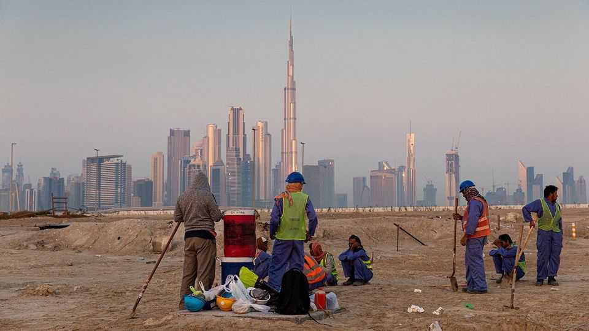
2024年，来自南亚和东南亚地区（见图表1）的超过2000万人在海湾合作委员会（GCC）六国就业，较2010年增长了65%。这支劳动力队伍包括计算机程序员和商界人士，但绝大多数是厨师、建筑工人、保姆或其他蓝领工人。许多外籍劳工因冲突返回家乡，这可能给派遣他们的亚洲国家带来问题。与选择离开的富裕外籍人士不同，这些外籍劳工大多是被迫离开的。海湾地区许多企业已停止招聘，孟加拉国获得前往海湾国家出境许可的人数在3月骤降至31,279人，较去年同期的92,460人大幅下降。■
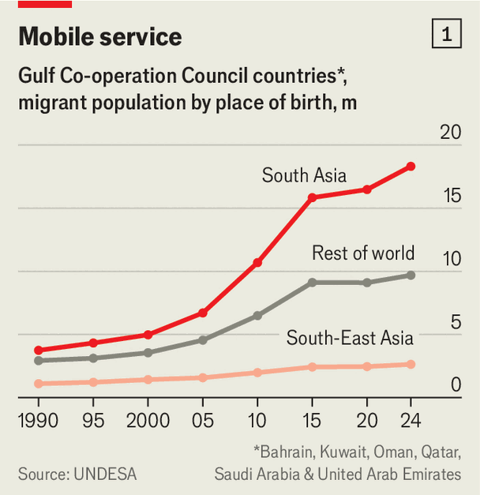
尼泊尔的汇款流也因政府暂停发放新劳工许可而放缓，担忧工人安全是主因。海外人数减少将给国内带来困难。2025年孟加拉国收到汇款320亿美元，相当于该国GDP的6.5%。这一数额远超其他流入，如援助和外国直接投资。尼泊尔的汇款占其GDP的四分之一。即便在庞大的印度，移民汇款也贡献了3.5%的GDP（见图表2）。据咨询公司Capital Economics称，海湾国家GDP通常会因移民汇款减少1-2%而下降5%。本月早些时候，世界银行警告称，海湾合作委员会（GCC）国家今年可能面临此类收缩。■
这将给像孟加拉国和菲律宾这样受战争引发能源冲击影响最严重的国家带来更多痛苦。孟加拉国人赛姆·伊斯拉姆（Saimum Islam）表示：“我刚结婚，家里有六人依靠我的收入生活，但现在收入中断了。”他因在沙特阿拉伯的渔业公司失去工作而离开该国。汇款减少的时期可能产生长期影响，即使中东危机缓解后仍将持续。加州大学圣地亚哥分校的古拉夫·卡纳（Gaurav Khanna）及其同事对菲律宾移民的研究显示，汇款常被用于资助教育，而教育又将劳动力从低生产率的农业工作引向更高收入的岗位。对赛姆·伊斯拉姆和查杜里先生（Mr Chaudhary）这样的群体来说，最好的希望是局势尽快恢复正常，让他们能重返海外工作。■
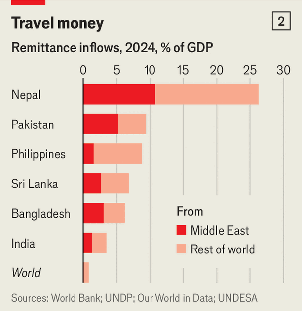
乐观者认为，重建战争损毁基础设施的需求或许会增加该地区乃至伊朗的移民工人流动。但若战争持续，孟加拉国及其他国家将需要“打开新大门”吸纳劳工，孟加拉国招聘机构负责人阿里·哈德·乔杜里表示。东部地区存在一批机遇。即便在伊朗战争爆发前，日本和韩国已逐渐成为移民的热门目的地。海湾国家的工作条件通常恶劣，基本人权常被忽视，尼泊尔招聘机构负责人马赫什·库马尔·巴斯内特表示。目前已有大量尼泊尔人开始学习日语和韩语，他们被更高薪资和更可接受的工作环境所吸引。■
东南亚国家也是潜在的目的地，尤其是马来西亚和泰国。建立新的移民通道并不容易。南亚人前往海湾国家的移民路径已成形，中介、招聘机构和本地网络已为他们提供帮助。此外，日本和韩国仍不愿大量接纳外国移民，尽管人口老龄化和劳动力短缺问题日益严重。移民仅占日本人口的约3%和韩国人口的5%，远低于经合组织（OECD）15%的平均水平，也远低于海湾合作委员会（GCC）约50%的水平。输出国可以做得更多。“孟加拉国需要推进劳工外交，”招聘代理钱多希表示。类似举措似乎初见成效，4月9日，马来西亚宣布将在关闭两年后重新向孟加拉国工人开放劳工市场。■
双边协议不仅有望增加孟加拉国人可获得的就业岗位，还将降低他们被不法雇主和中介剥削的风险。伊朗战争压缩了一条历史悠久的亚洲移民通道，这是否迫使各国开辟新的移民路径？■
§014 亚洲原题：Scam Inc has a new weapon · 板块：Asia · 栏目：亚洲
52岁的阿姆巴·尼格鲁姆（Ambar Nigrum）在印尼日惹（Yogyakarta）为慈善机构担任会计。去年她收到一条自称来自本国税务部门的短信，要求更新个人信息。她点击链接下载了一个仿冒政府税务支付应用。尼格鲁姆（非真实姓名）未察觉软件正采集她的指纹，同时获取了银行账户、手机摄像头、照片、麦克风、联系人及备忘录的访问权限。
直到朋友警告她这是一场骗局时，已有超过45亿印尼盾（约合2.65万美元）的慈善资金被盗——足以支付十名员工一年的工资。网络诈骗分子长期以来一直给东南亚较贫困地区的社区带来困扰。他们主要依赖低技术、劳动密集型的手段：需要受害者经过数周或数月的精心物色后才会遭骗的投资骗局和爱情诈骗。如今调查人员发现，这些犯罪团伙正转向更为复杂的网络犯罪。利用间谍软件窃取受害者手机通讯录的犯罪分子，可对其社交网络中的所有人实施攻击。“这比传统诈骗更快捷，”联合国毒品和犯罪问题办公室的杰里米·道格拉斯表示，“数百万设备都有可能被感染。” ■
用于攻击尼格鲁姆女士的间谍软件由安全公司Infoblox检测到，似乎自2023年起已持续运行。该软件似乎被用于攻击超过20个国家的目标，包括柬埔寨一处臭名昭著的诈骗窝点内的人员。犯罪分子并非自行开发此类技术，而是从使用中文的供应商处购买，这些供应商通过Telegram等即时通讯平台开展业务。东南亚的诈骗分子是年收入逾5000亿美元的网络诈骗产业核心成员，其规模可与非法毒品贸易相提并论。这些诈骗窝点多位于柬埔寨、缅甸等国的工业区，通常被高墙、监控摄像头、铁丝网和武装守卫严密保护。■
联合国估计，这些帮派头目已迫使数以十万计的人为他们工作。诈骗分子不仅伪装成印尼税务官员，还假扮韩国移民官员、南非警察以及印度最高法院工作人员。诈骗分子采用日益复杂的手段，预示着诈骗行业可能变得更加扰乱市场。Infoblox发现，骗子们正在试验人工智能聊天机器人和深度伪造语音工具，并测试规避人脸识别系统的手段。未来出现的恶意软件可能比传统类型更难被检测到，甚至更具欺骗性。■
§015 印度最宜居超级城市的秘密原题：The secret of India’s most liveable megacity · 板块：Asia · 栏目：亚洲
詹姆斯·威尔逊于1859年抵达当时英属印度的首都加尔各答。《经济学人》创刊人被“专程从英国派来恢复印度财政秩序，当时正值灾难性混乱时期”。他为印度提交了首个预算，引入了所得税制度，随后便如其墓志铭所言“因气候焦虑与劳作的综合作用”猝然离世。自威尔逊时代以来，这座城市失去了首都地位（1911年迁都德里），失去了一半孟加拉语地区（1947年因分治而丧失），以及英文名称（2001年因语言去殖民化而更名）。它获得的是“印度最宜居超级城市”的称号。
租金和房价在印度主要城市中最低，优质学校的学费和医疗费用同样如此。丰富的艺术、音乐和文学传统支撑着其自诩为国家文化之都的地位，宗教与性别关系方面也保持开放态度。作为拥有近2300万人口的印度第二大城市，仅次于德里。居民享受着廉价、多样且持续扩展的公共交通服务。高架道路网络的建成，将城市远端区域连接起来。街道下方商业活动繁忙而混乱，但整体仍远未达到班加罗尔的黄金标准拥堵。咖啡馆的热潮正被时尚鸡尾酒酒吧和高端餐厅所接续。高耸的新酒店和豪华公寓为天际线注入了孟买式的奢华气息，而昔日的宏伟宅邸正被翻修为Airbnb民宿。■
加尔各答（Kolkata）的改善很大程度上归功于玛玛塔·班纳吉（Mamata Banerjee），自2011年担任首席部长以来，她一直领导着西孟加拉邦（West Bengal），该邦首府为加尔各答。此前该邦由共产党执政长达34年，因劳工罢工频发和对商业的敌意而臭名昭著。班纳吉推动城市现代化，为少数族裔、女性和贫困人口推出福利计划。低廉物价与补贴政策的结合，使加尔各答成为印度最适合贫困或中产阶层生活的大型城市。但对有更大抱负的人群却不够友好。在班纳吉执政期间，西孟加拉邦在全国经济产出中的占比持续下滑。白领岗位稀缺，才华横溢的年轻孟加拉人纷纷外流。来自印度其他地区的毕业生也极少迁居此地。加尔各答的人口增长速度是印度五大主要城市中最慢的。■
加尔各答（Kolkata）不再提供直飞伦敦的航班，这对当地的英式文化精英而言尤为刺痛。一位权贵抱怨称，班纳吉女士对经济缺乏长远规划。她的政府并未对商业形成阻碍，但同样也未能与那些为投资者铺路的州竞争。近年来，超过一半的外国直接投资流向了马哈拉施特拉邦和卡纳塔克邦——这两个邦分别拥有孟买和班加罗尔。而西孟加拉邦吸引的外资不足1%。“你不能只给予而不获得相应回报，”一位本地经济学家说道。若加尔各答仍显得繁荣，那是因为其作为印度广阔而贫困的东部地区商业中心的默认地位。它是历史上的贸易枢纽，通往偏远东北部的门户，也是邻近比哈尔邦和贾坎德邦——印度最贫困地区——移民的磁石。■
后疫情时代居家办公的兴起吸引了一部分白领回流。咨询公司和IT服务企业正在加强其子公司办公室的建设。但从潜力来看，加尔各答始终是个长期的落伍者。这不仅对这座城市及其所属的西孟加拉邦构成悲剧，也对周边地区造成影响。本月，班纳吉女士将请求孟加拉人再次支持她连任第四届州长。印度州选举极少有确定结果，而此次选举因选民名单修订剔除了近12%（900万）的选民，结果更加难以预料。选民面临艰难抉择：纳伦德拉·莫迪领导的印度人民党承诺优先发展，但其分裂性的印度教民族主义议程也将破坏该州宗教宽容。■
班纳吉女士延续一贯风格：孟加拉人自豪感、福利发放和以个人魅力为核心的政治理论，连莫迪的风格都显得逊色。如果威尔逊今日重返加尔各答，他也会发现这座城市出乎意料地宜居（对他而言，字面意义上的宜居）。但他或许会转向孟买、德里和班加罗尔，这些城市在人口、污染和建筑压力下濒临崩溃，从而得出结论：这些问题正是快速发展的症状。另一方面，加尔各答的宜人之处恰恰反映出其停滞不前。■ 《经济学人》的订阅者可注册我们的Opinion电子简报，汇集了我们的社论、专栏、特邀评论及读者来信的精华内容。
§016 中国为何担忧人工智能 中国 技术权衡原题：Why China’s government worries about AI · 板块：China · 栏目：中国
三月的一个清晨，在中国南方城市深圳，数百人排队等候在腾讯公司总部安装一款名为OpenClaw的新人工智能代理。多数人是退休人员，尝试着这门新崛起的技术，或是面临严峻就业市场的学生。这种被称为“龙虾养殖”的场景，以OpenClaw的吉祥物命名，在全国各大城市不断重现，中国用户数量迅速超越美国或任何其他国家。这种热情并未持续太久。一些用户的数据被敏感信息删除。
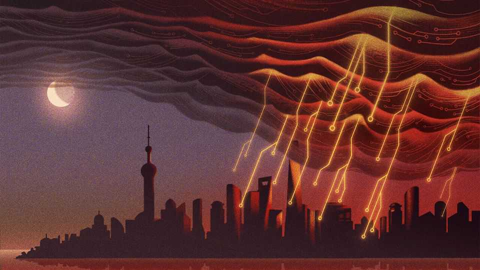
地方媒体报导称，一些代理程序在消耗计算资源时损害了不知情用户的利益。异常的是，中国当局似乎有意放慢AI应用的传播速度。他们担忧此类代理程序容易成为黑客攻击目标，可能泄露个人数据并完全控制设备。监管机构已禁止该软件在银行等敏感行业使用。几乎就在OpenClaw热潮刚兴起时，便迅速消退。随之出现了一个提供付费“卸载服务”的小行业。在中国，由习近平主席领导的政策制定者们逐渐认识到AI是一项“定义时代的技术”。AI是中国与美国竞争的核心，也是习近平推动疲弱经济复苏计划的关键。OpenClaw承诺了官员们所期望的AI诸多优势：通过免费开源软件实现生产率提升，并迅速被技术娴熟的群体采用。■
然而，这一代理也带来了风险，加剧了人们对人工智能可能摧毁就业以及暴露国家网络安全漏洞的担忧。此次事件标志着政府内部对人工智能模型日益强大的认知，即随着技术发展，可能面临艰难的权衡。直到最近，中国主要关注人工智能的日常风险，对科幻式担忧（如机器人接管）仅给予浅尝辄止的关注（见图表）。2017年，习近平表示，该技术必须始终“可控”——意味着在政府监管下实现国产化。2022年ChatGPT发布后，官员们开始聚焦聊天机器人可能对国家领导人发表不恭言辞的风险。企业需向政府注册算法，并对照长长的禁用词汇清单进行测试。
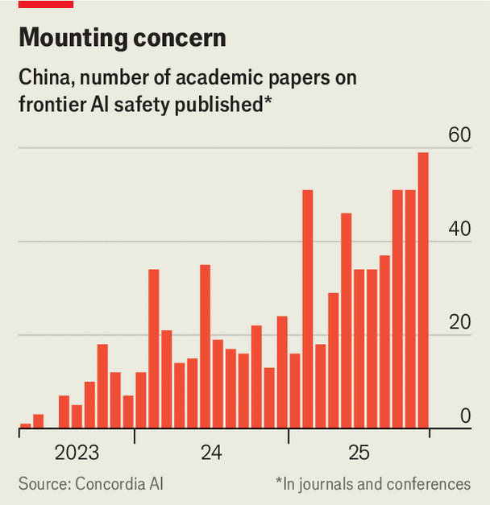
一项新法令禁止系统鼓励自残或情感依赖，因“AI男友”数量明显上升。如同美国，当局陷入尴尬境地，不得不依赖私营企业开发可能影响未来国家权力的技术。OpenClaw热潮由包括腾讯（Tencent）、阿里巴巴（Alibaba）和字节跳动（Bytedance）在内的中国科技巨头推动。这些企业终于看到机会，通过向使用AI模型（通常在中国免费提供）的消费者出售计算资源来盈利。鉴于这些企业的利益可能与其自身存在冲突，中国共产党依赖一批受信任的高校学者提供监管建议。■
中国人工智能领域的领军人物相较于西方同行更为低调，部分原因在于政府对这一行业的期望。深Seek创始人梁文锋是个例外。在去年其公司模型震惊世界后，官方媒体播放了他与习近平主席握手的画面。迷你Max创始人严俊杰（新晋亿万富翁）和Moonshot AI创始人杨志林并非家喻户晓的名字，但近几个月他们被邀请向李强总理汇报经济问题。由清华大学教授季捷创立的Z.ai实验室也与政府有着密切联系。政府希望他们成功，但这种成功可能对执政党带来代价。■
卡内基基金会美国智库研究员马特·希恩（Matt Sheehan）表示，难以判断精英阶层是担忧技术本身，还是公众日益加剧的焦虑情绪。尽管中国民众在人工智能相关调查中普遍比其他国家更乐观，但一份由国家智库准备的报告显示，担忧AI可能取代自身工作的劳动者比例已从2024年的49%升至去年的59%。今年早些时候，习近平在讲话中提及“安全问题”如数据窃取，并首次提及可能失去对前沿AI技术的控制权。AI部署已引发裁员担忧。在自动驾驶出租车运营的武汉市中心，出租车司机指责机器人出租车抢夺工作，并向政府请愿放缓推广速度。■
OpenClaw等工具恰逢中国16%的青年失业率（约为美国的两倍）及严峻的薪资增长形势。北京科技分析师 Poe Zhao 表示，媒体舆论认为掌握AI技能有助于提升就业前景。“看似基层对科技的热情，实则更接近基层职业焦虑的体现，”他如此评价腾讯外排队的求职者。12月北京政府发布规定，禁止企业因AI替代员工而裁员。据官方媒体评论，此举相当于将技术变革的风险转嫁给劳动者，而享受AI红利的企业有责任保护员工。官方媒体则对中国经济既可部署AI又可保障就业的信心予以肯定。据悉政府正筹备发布关于AI对就业影响的白皮书。■
对恶意AI的担忧也因近期事件而加剧。在OpenClaw热潮后的几周内，政府要求一组专家提出“安全标准”及规范代理行为的规则。上月晚些时候，武汉超过百辆机器人出租车突然停止，导致顾客在高速公路上滞留长达两小时，据当地媒体报道。随后，包括公安部在内的高级官员召开会议讨论此类事件。4月7日，有消息称美国实验室Anthropic开发出一款未发布的模型，可发现网络防御中的漏洞，目前在中国引发的反应较为平淡，但国家安全机构势必会密切关注。
随着AI模型的能力不断突破，中国在与美国的较量中对AI带来的财富与权力的憧憬也日益高涨。官方强调高度重视公众关切，同时普遍呼吁加快应用。一位北京政府顾问表示，若不得不做出抉择，中国共产党将优先考虑其技术目标。对它而言，赢得AI竞赛是“生死攸关”的事。■ 订阅者可注册我们的新周刊《Drum Tower》，了解世界如何看待中国，以及中国如何看待世界。
§017 北京人形机器人半程马拉松训练堪称地狱原题：Training for Beijing’s humanoid half-marathon is gruelling · 板块：China · 栏目：中国
4月19日，亦庄（Yizhuang）的街道将人潮涌动。人形机器人将与数千名活生生的人们一同参加半程马拉松，赛事路线贯穿北京的工业科技园区。预计超过300台机器人将参赛——这比去年首次举办此类赛事时的21台机器人多得多（仅有6台完成比赛，其余因绊倒、过热或动力不足而退出）。去年的机器人冠军是高大轻盈的天宫Ultra（Tiangong Ultra），这台涂装为午夜黑的机器人以两小时40分钟的成绩冲线（每公里耗时7分35秒）。■
今年，各支队伍希望他们的机器人运动员能跑得更快，且无需远程操控。四成参赛队伍采用自主模式，其余则由人类远程操控。近几周来，位于中国首都的机器人团队已在亦庄（Yizhuang）空荡的街道上夜间训练。这类技术竞赛并非首次出现。2004年，美国国防部曾为赢得莫哈维沙漠（Mojave Desert）自动驾驶汽车竞赛的胜者提供100万美元奖金。这场竞赛被认为推动了自动驾驶汽车行业的早期创新。更近一些，美国大型科技公司则为学术界和初创企业出资，让他们在真实环境中解决复杂的工程难题。亦庄的机器人将被评估的不仅包括速度，还包括实时决策能力、耐力和步态等指标。■
中国拥有超过150家人形机器人制造商，加上众多高校和政府实验室的研究团队。所有企业都渴望获得关注、投资和政策支持，而这场竞赛有助于吸引它们。今年的冠军将获得价值逾100万元人民币（14.7万美元）的订单保障。国家同样从中获益，这场由亦庄管委会主办的竞赛旨在推动初创机器人企业创新竞争。亦庄方面称，其工业区已吸引超过300家机器人产业链企业入驻。官员们将对本地冠军企业与全国其他竞争对手进行测试，评估国家资金是否被有效利用。8月，该镇向企业提供了1亿元人民币的计算资源、早期设计原型制作及每售出一台机器人即享的补贴。■
官员希望其企业能在更广泛的竞赛中引领步伐，尤其是在与美国的人形机器人制造商竞争时。■ 订阅者可注册我们的新周报Drum Tower，以了解世界如何看待中国——以及中国如何看待世界。■
§018 中国女性离婚诉求激增 中国原题：Soaring numbers of Chinese women demand divorce · 板块：China · 栏目：中国
《It’s OK》是一部喜剧剧情片，讲述一位性格坚强的女教师（不愿生育）和她逐渐变得更具进步思想的母亲之间的故事。该片在4月中国票房榜登顶，得益于其大胆探讨婚姻内强奸、女性使用性玩具等常被禁忌的话题。但审查机构认为其中一主题已逾越底线。影片中有一处明显矛盾：当母亲对丈夫说出想离婚时，她的面部表情与声音不一致。观众通过唇形读出缺失的台词：“在性与情感上，你从未让我感到被善待。我要离婚。” ■
日本政府正积极维护婚姻制度，以应对人口萎缩和出生率骤降的挑战。2003年，政府取消了雇主在离婚程序中出具书面证明的强制要求，此举导致离婚数量激增。为遏制离婚率，2021年日本引入了30天的冷静期制度，但离婚数量随后回落，又在2025年出现反弹。当年通过协议方式达成的离婚数量达到五年来最高水平，共注册270万例，比2021年增长28%。法院诉讼数据尚未公布，但女性明显占据主导地位：约70%的原告为女性。这一增长趋势在面临“感情破裂”等认定标准的障碍下仍显得尤为突出。若夫妻双方对感情破裂存在争议，法院往往难以证明这一事实。■
上海一位律师表示，展示虐待的照片通常不被接受为证据，除非有警方报告和医疗证词支持。2023年仅有29%的首次听证会以离婚告终。香港大学何欣教授认为，这源于政府急于推动生育和维护社会稳定，似乎认为维持痛苦的婚姻有助于实现这些目标。即便法院同意离婚，通常也需要约18个月时间。对部分女性而言，离婚的障碍在于法院分割财产的方式。自2011年起，每对夫妻在结婚时投入的资产各自收回。这意味着男性通常能保留家庭住房，因为其父母往往承担购房或首付费用。
去年，一项婚姻法修订使女性更难获得无偿家务劳动的补偿，耶鲁大学的艾玛·张（Emma Zang）指出。尽管如此，女性在提出离婚时愈发自信。中国曾经的独生子女政策使家庭更倾向于将资源投入女儿身上。如今，中国女性接受高等教育的比例已超过男性。尽管很少有人自称“女权主义者”——当局对这个词深恶痛绝——她们仍要求在关系中获得更大平等。在上海某间光鲜的办公室里，家庭律师顾芳芳回忆道，过去女性提出离婚时，常以丈夫的恶劣行为为由，如家庭暴力、不忠或赌博成性。如今，她们更多提及婚姻质量差异和价值观分歧。
受过更好教育的女性也能更从容地考虑离婚，因为她们能获得更高薪的工作。越来越多的女性开始在博客上分享自己的经历。其中一位是29岁的尤兰达·于（Yolanda Yu），她来自东部城市合肥（Hefei）。她讲述了自己经历：在丈夫酗酒殴打她之后，保守的双方父母劝阻她离婚。她坚持下来，从家教转行做电商，将收入翻倍并承担更多家庭经济负担。但丈夫并未改变。尤兰达表示，这类男性普遍存在刻板观念：“他们无法改变根深蒂固的男性沙文主义，认为女性应服务于他们。”她于8月拿到离婚证后，学会了开车并购买了汽车。“我想掌握方向盘，”尤兰达笑着说，享受着这个比喻。女性质疑的不仅是自己的婚姻。越来越多的人开始疏远婚姻制度本身。■
2024年结婚人数降至1980年以来最低水平。但去年却出现了11%的增长。这或许是因为农历闰月使当年成为吉祥的“双春年”，加之新政策允许夫妻在任何地方结婚而非仅限于家乡。上海大学的季英春（Ji Yingchun）表示，政府“易进难出”的婚姻政策不太可能提升结婚人数。“在实现更大性别平等之前，一些人可能越来越倾向于重新考虑婚姻。”她说道。女性态度的转变正通过影视作品、流媒体平台，甚至脱口秀等娱乐形式显现——脱口秀曾长期由男性主导。尽管对“D字”（离婚）仍存顾虑，审查制度已允许一定程度的宽松。■
近年来，一部关于明星夫妻即将离婚的热门电视剧引发了全国范围的讨论。像喜剧演员“方导演”以及自驾直播网红苏敏（其生活被拍成电影）这样的中年离婚女性，因离开不幸福的家庭而受到赞颂。要让婚姻更具吸引力和持久性，政策制定者不仅需要关注婚姻的开始和可能的结束，还应思考如何在婚姻期间促进平等。 ■ 订阅者可注册我们的新周报 Drum Tower，了解世界如何看待中国，以及中国如何看待世界。
§019 中国养老金制度的缺陷暴露其最严重的不平等原题：China’s pension failings expose its harshest inequality · 板块：China · 栏目：中国
重庆地铁四号线的早高峰通勤，如同其他城市一样，挤满了匆忙赶往市中心的上班族。但有一个关键区别：这些人并非奔向写字楼，而是农民，背着装满豆子、番茄等农产品的竹筐，前往市场。这一场景既展现了中国的一大成就——一条连接城乡的光鲜地铁，也揭示了中国最突出的差距：微薄的养老金迫使许多农村老人不得不继续劳作。
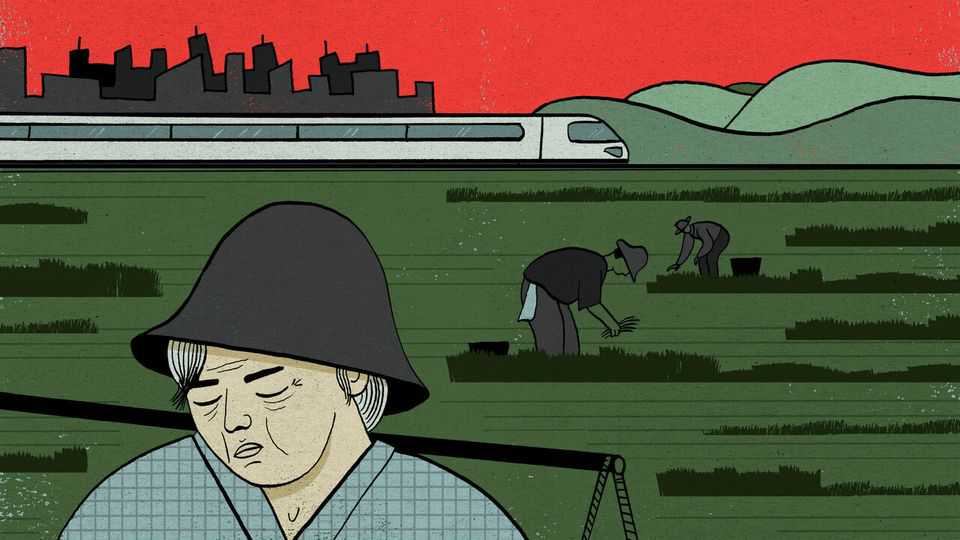
■
■近日的一个工作日清晨，查官乘坐地铁，与重庆的农民们聊起他们的生活。许多人对这种相对便利表示感激。这条地铁线路仅数年前开通，如今让农民们能直达客户处，绕过批发商，赚取更多收入。65岁以上的老人可免费乘坐。市场方面收取象征性费用，通常约5元（约34美分），用于租赁摊位销售农产品。以严格著称的城市执法人员，有时会允许农民在路边摆摊数小时而不收费。一位经营橙子摊位的商贩表示，随着经济放缓，城市监管变得更为宽松。“农民也需要吃饭，不能过度打压，”他建议道。
这些人性化的关怀无法掩盖生活依然艰难的现实。“与过去相比，生活的艰辛并无改变，”一位菜贩从一堆生菜后感慨道。一位年迈的韦先生（Wei）表示，他靠在野外采集野菜来补充绿葱的收成。“把这些菜一路扛到这里卖点钱，实在不容易。”地铁往往是他们行程的一部分。查关陪同一位男子返回四川村的车站，从那里他搭乘长途汽车深入乡村，全程两小时。“如果卖不出蔬菜，他们还能靠什么维持生计？”司机如此说道。这些老年农民仍在田间劳作，长途跋涉只为谋生，这直指中国最紧迫的经济问题之一。显而易见的解决之道是政府应提高农民养老金。
城乡居民养老金差距悬殊。未从事正式就业的退休人员——几乎涵盖所有农民——每月基本养老金为163元。相比之下，城市企业退休人员的月均养老金达3,500元，原国家工作人员则接近7,000元。实际上，这两者并非同一概念。农民养老金属于财政计划，本质是社会保障安全网；而城市养老金源于个人缴费，包括工资税，公共部门养老金亦然。然而结果必然是生活水平的极端差异。这种差距在中国2020年宣布战胜绝对贫困后显得尤为刺眼。城市老人可期待公园舞会或旅行养老，而农村老人仍躬耕田间。这一矛盾成为最近中国全国人大会议的热议话题。■
至少34位代表分别提出议案，要求提高农村养老金，这体现了该会议虽常被称作橡皮图章议会，却偶尔能聚焦现实问题。事实上政府已提高养老金，但幅度微小——连续三年每月仅上调20元。一些支持提高农民养老金的人士称，这关乎历史正义。数百万农村居民曾将最富生产力的年份奉献给农民工群体，为现代中国高楼大厦、写字楼、铁路和公路建设作出贡献。此外，许多人曾缴纳农业税，该税种后被废除。这些支付难道不应被视为国家养老金体系的贡献吗？另一些人认为，提高农村养老金将有利于中国经济，有助于提振农村消费。■
最有力的论据其实很简单：一个承诺“共同富裕”并尊老爱老的国家，不应让如此多的老年人陷入生活困境。据研究员王明远（Wang Mingyuan）表示，中国60至80岁之间仍有劳动能力的农村居民中，超过80%仍在工作，主要以小块土地上的农民身份维持生计。这并非体面的老年生活。中国本可以做得更好。为何政府迟迟未采取行动？部分原因在于不愿建立福利国家。为农村老年人提供额外支持可能引发对失业者和贫困人口的更多福利救济需求，这正是中国领导人希望避免的。此外，他们还存在财政方面的担忧。■
将农村养老金翻倍至略高的舒适水平，将消耗约3%的国家预算，这一规模将需要做出取舍，包括减少官员认为对国家未来更为重要的基础设施支出。最近，农村事务学者卢德文撰写了一篇反对提高养老金的文章，认为真正的危机是伦理层面的：子女而非国家，应赡养老人。这一议题引发的强烈情绪可见一斑，卢德文的文章遭到激烈反驳，批评者指责他是个脱离实际的专家。但目前，他反对大幅提高农村养老金的立场，似乎仍与高层政府思维保持一致。在重庆农村，一位80多岁弯腰驼背的老妇人正为山坡上的玉米地做准备，她对这一切的政治博弈感到遥远。■
她的儿子前来帮忙种地，提出了一个朴实的请求：将她的养老金提高到每月500元，大约相当于城市退休人员的六分之一，这样她终于可以放下锄头。中国虽已修建地铁直达她所在的村庄，却尚未找到提高养老金的足够决心。■ Subscribers to The Economist can sign up to our Opinion newsletter , which brings together the best of our leaders, columns, guest essays and reader correspondence.
§020 美国正掀起一场税收反抗运动，美国的报税日是原题：A tax revolt is under way in America · 板块：United States · 栏目：美国
。美国民众被教导，他们的国家是因反抗不公税收而建立的（历史学家通常认为情况更为复杂）。这一观念在4月15日——报税截止日——时尤为强烈。今年这种情绪显得格外契合。如果说波士顿倾茶事件的口号是“无代表，不纳税”，那么当前美国政治的氛围或许可以用省略该口号后半句来概括。无论是共和党还是民主党，似乎都在得出一个结论：大量美国人应缴纳的收入税几乎可以忽略不计。■
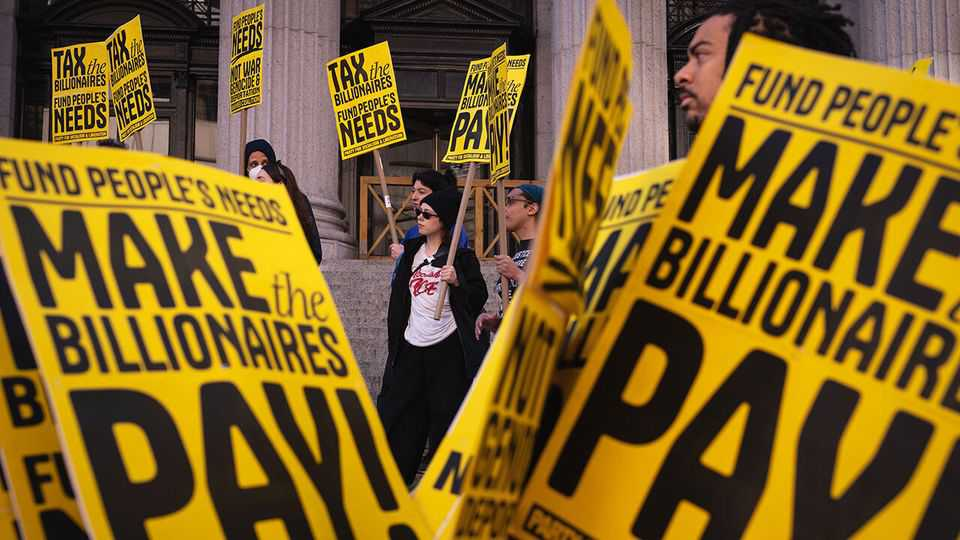
为筹措财政资金，左翼人士倾向于挤压最富有的少数群体，而右翼则倾向于对外国人加征关税。但无论是哪种收入来源，都不足以覆盖美国的开支，因此预算赤字将扩大。共和党对征税的厌恶历史悠久且广为人知。去年的《一项宏大美丽法案》（One Big Beautiful Bill）延续了唐纳德·特朗普第一任期到期的减税政策，并新增了更多福利，包括广受欢迎的“小费免税”条款。该法案未来十年将耗费数万亿美元。与此同时，特朗普已削减美国国税局（Internal Revenue Service）约25,000名雇员，使富人更容易逃税。近期民主党也开始采取类似措施。参议员科里·布克（Cory Booker）和克里斯·范·霍伦（Chris Van Hollen）本月公布了各自的税改方案。两人都将大幅增加无需缴纳联邦所得税的美国人数量。■
博克先生的计划将免税标准扣除额翻倍以上，单人申报者可享受37500美元，夫妻申报者则为75000美元——这项福利惠及收入层级更上层的富裕人群。他还提议推出一系列针对低收入美国人的税收抵免措施，并对高收入群体征收更高税率以筹集资金（见图表1）。即便考虑了这些抵消因素，独立测算机构仍将该计划十年内的成本估算为5000亿至7000亿美元，约为特朗普先生计划的两倍。（博克先生坚称他将通过堵塞漏洞和对大公司征税来弥补其余资金。）范·霍伦先生的计划结构类似，但成本标签不那么惊人的。他计划取消单人年收入低于46000美元和夫妻年收入低于92000美元者的所得税，并逐步取消对高收入者的补贴。■
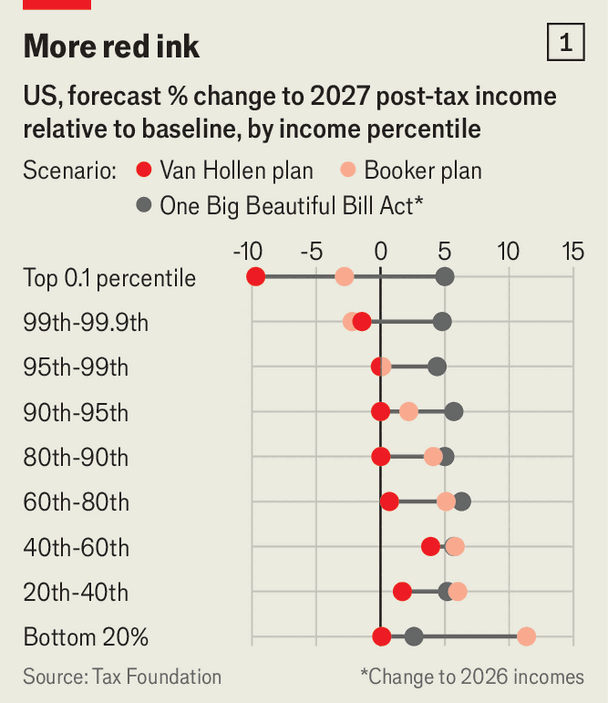
他的计划大致保持财政中性，因为这些减税措施与对年收入超过100万美元人群征收的高额附加税相配套。这两项提案短期内都难以成为法律：民主党目前控制不了联邦政府的任何分支。但它们确实体现了该党的政策走向。布克和范·霍伦都是不那么隐晦的总统候选人。尤其是范·霍伦的计划，其数字更为现实，已吸引来自党派左翼和中间派的广泛共署支持。即便民主党在2028年重新掌控国会和白宫，即便范·霍伦的减税方案也难以与该党其他优先事项相协调。■
他提出的1.5万亿美元渐进式增税可能足以支付这些削减开支的费用，但将几乎无余力用于其他领域——例如逆转特朗普减税法案中对医疗和食品援助的削减（这将耗费相近金额）或降低关税（这可能耗费更多）。民主党或许不得不放弃大部分支出计划，或转向更激进的选项，如征收财富税。范·霍伦支持后者。他是伊丽莎白·沃伦（Elizabeth Warren）提出的另一项民主党参议员提案的共同发起人，该提案将对净资产超过5亿美元的个人征收每年2%的财富税。从某种角度看，这些提案与传统民主党提案并无本质区别：它们仍是从富裕阶层向其他人再分配财富，并增加赤字支出。但存在差异。当乔·拜登曾有机会大规模支出时，他将资金投向社会福利和产业政策。而如今选择减税则是前所未有的转变。■
格罗弗·诺奎斯特（Grover Norquist）这位共和党筹款人及美国税收削减的坚定支持者，对这一转变表现出某种自鸣得意，称民主党人对减税的新热情是其世界观的“软弱信号”。发生了什么变化？华盛顿的民主党人通常会指出两点：一是“可负担性危机”，二是“对小费免税”政策的极高人气。他们认为选民迫切需要帮助应对生活成本上涨，尽管工资增长与物价涨幅基本同步。简单直接的“对小费免税”信息有助于触及连怀疑者也难以抗拒。在特朗普每日制造白宫混乱的当下，这绝非质疑大胆、受欢迎政策的时机。然而，“对小费免税”政策相对而言成本较低——毕竟小费收入并不多。若将这一逻辑延伸至每一分钱的收入，则显得有些“书呆子模仿运动健将”，正如一位民主党财政专家所言。■
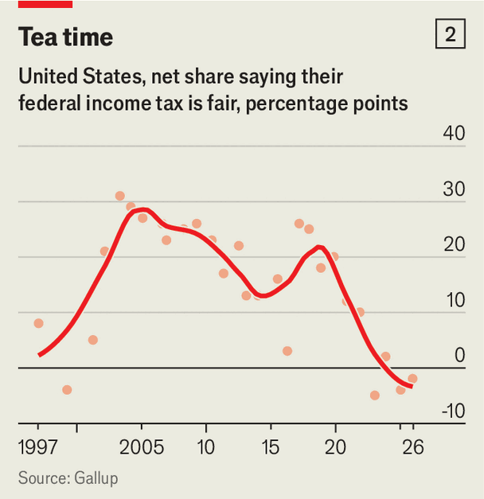
更悲观的解释是，随着民主党支持者收入增长，通过多数社会支出形式触及他们的难度加大。布克先生的计划为收入前五分之一甚至前十分之一的人群带来显著收入提升，但最富有的群体仍被挤压。更深层次上，民主党对减税的支持反映了对政府不信任普遍存在这一现实的认知。埃隆·马斯克的DOGE或许是个共和党项目，但对税收资金被浪费、富人逍遥法外、错误人物掌权的担忧，在左翼同样普遍。因此，几乎任何减税提案都广受欢迎不足为奇。最近《经济学人》/YouGov民调显示，三分之二公众支持布克先生计划的核心内容。更值得注意的是对征税的社会共识出现裂痕。■
根据盖洛普（Gallup）的调查，美国民众认为所缴税款公平的比例接近历史最低点，该机构自1997年起持续追踪这一问题（见图表2）。唯一可比的时期是比尔·克林顿（Bill Clinton）总统任期结束时，当时美国处于预算盈余状态，理论上具备减税空间。如今的财政环境与彼时截然不同。这种不满情绪具有显著的广泛性，民主党与共和党人同样认为税负过重，富裕阶层与贫困阶层亦然。YouGov的民调显示，无论收入水平如何，约60%的美国民众认为税负过重——尽管他们实际缴纳的税率差异巨大。州政府也感受到这种情绪，许多州政府以强劲经济增长为由，近年纷纷削减税收（见图表3）。
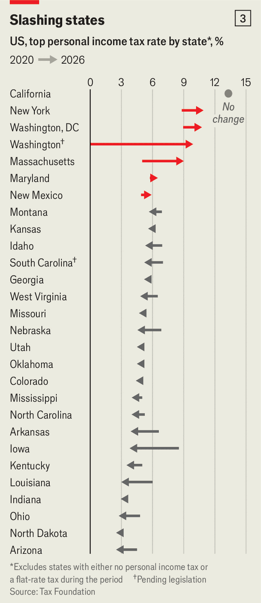
热情高涨，推动进一步加速推进，令部分观察者感到担忧。“迄今为止多数地方都负责任地执行了相关措施，”税收基金会（Tax Foundation）的Jared Walczak表示，“但如今他们可能过度扩张，做出无法承受的削减。”一波地方政区正推动为退休人员提供房产税豁免。佛罗里达州正酝酿彻底废除非教育类房产税。俄亥俄州可能通过公投取消所有形式的房产税。佐治亚州民主党州长候选人Keisha Lance Bottoms支持取消教师收入税。加利福尼亚州则在考虑对亿万富翁一次性征收5%的财富税。无疑，这些想法中更受政治支持的将进入全国性讨论。两党政客似乎越来越倾向于迎合对税收日益不满的公众。■
然而，面对巨额预算赤字和日益加重的债务负担，美国难以承受新一轮的税收反抗。 ■ 关注美国政治动态，请订阅我们的每日简报《The US in brief》，获取对最重要政治新闻的快速分析，以及每周专栏《Checks and Balance》，深入探讨美国民主现状及选民关切的核心议题。
§021 美国原题：Pete Hegseth’s Pentagon is a lethality-maxxing wasps’ nest · 板块：United States · 栏目：美国
美国
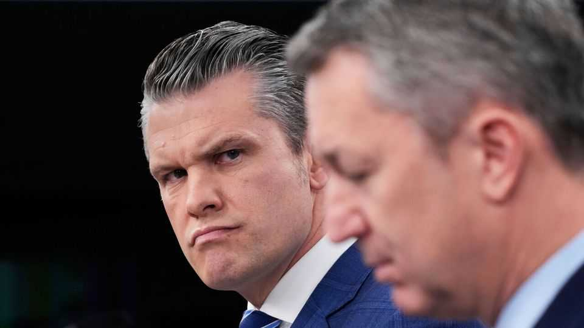
美国国防部：一场致命性最大化的蜂窝式冲突
美国武装部队实力强大，但内部派系斗争激烈。4月16日，美国在伊朗上空的空战中展现了其军事力量的巅峰状态。为期38天的空袭行动中，战机执行了超过13,000次战斗任务，摧毁了伊朗武装部队、工业设施和核设施。此次行动体现了周密的计划和战术上的高超。而这一切都发生在美国军方高层同时与自己的国防部长展开另一场较量的背景下。4月2日，彼得·赫格赛特解除了兰迪·乔治将军——美国最资深的陆军将领——的职务，并撤职另外两名高级将领。
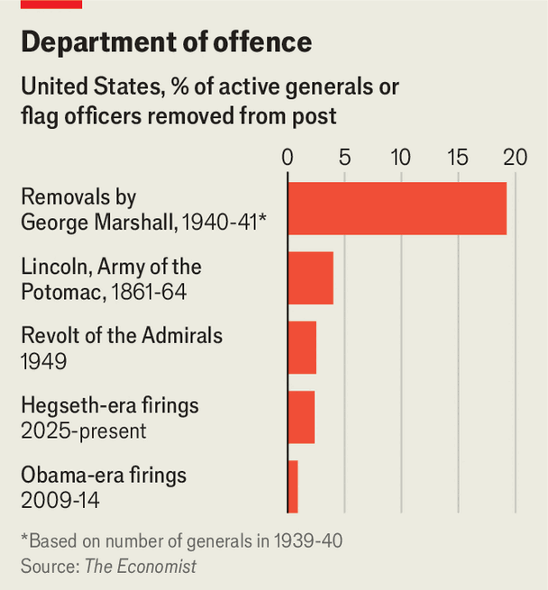
前军方官员表示，这发生在美国数十年来最大规模战争期间，地面部队正准备前往海湾，这种情况几乎闻所未闻。赫格塞斯并未给出突然解雇的解释。但很可能，这些人是其持续清洗美国军事领导层的最新受害者。《经济学人》采访了几位前高级军方官员，其中一些人已感受到近期清洗的影响。他们描述了一个被报复心理、政治化以及部长对灌输一种充满阳刚之气、反“觉醒世代”（anti-woke）“战士精神”的执念所困扰的五角大楼，这种精神甚至可能延伸至对国际法的轻视。■
在五角大楼关于“史诗怒火行动”的新闻发布会上，这位发型油亮的前福克斯新闻主持人有时似乎比伊朗的文化战争更热衷于发动文化战争。“他就像一个12岁男孩，手里拿着一套军用玩具，喜欢玩战争游戏，”一位前军方官员叹道。自去年上任以来，赫格塞特（Hegseth）已至少解雇了21位将军。许多人似乎只是因为种族、性别或疑似政治倾向而被解雇，毫无正当理由。“这前所未见，没有类似案例，解雇21位高级领导层人员且毫无明显理由，”美国企业研究院的Kori Schake表示。“他浪费了数个世纪的才华。”乔治将军则被报道反对赫格塞特异常的决定，即从晋升名单中移除四名军官——两名黑人男性和两名女性——这一决定发生在上个月。■
一些军官选择提前退休或从晋升委员会中撤回名字，南希·拉科尔（Nancy Lacore）哀叹道。她去年被强制退役，现正竞选南卡罗来纳州国会议员。他们的继任者大多资历深厚且无明显党派倾向。但部分人事安排引发争议。例如，克里斯托弗·拉内夫（Christopher LaNeve）被提名为乔治将军（General George）继任者一事。拉内夫曾是赫格赛特（Mr Hegseth）的军事助理，但其担任陆军参谋长一职的经验相对薄弱。该职位涉及征兵、训练和装备士兵。不过这位将军在总统就职典礼后数小时便致电祝贺其重返白宫。总统随即评论道：“这人是不是中央选角的？”
一位刚退休的高级军法顾问（军律师）忧心忡忡，认为新一代律师正试图为行政机构要求他们做的事寻找法律依据。“赫格赛特的思维模式是‘不惜一切代价求胜’”，一位高级军方官员感叹道，“你正在看到我们曾引以为傲的军队理念正面临真正的冲突。”为何赫格赛特会这么做？“他试图纠正的错误，很可能是在他担任国民警卫队中尉和上尉时，因手臂上的‘Deus Vult’纹身被同袍标记为‘内部威胁’时所引发的不满。”一位前高级军方官员表示。赫格赛特曾形容军队“把我吐了出来”，因为他的战友因手臂上的“Deus Vult”纹身（白人至上主义者使用的象征符号）将他视为“内部威胁”。■
美国国防部内部人士表示，这位部长在简报时有时会显得困惑。另一位前高级军事领导人表示，“他在讨论战略问题时可能会觉得自己是个冒牌货。” 这充分证明了美国武装部队的实力，尽管面临诸多挑战，他们仍表现出色。主要归功于技术优势、数十年的实战经验以及非党派文化，而赫格塞特威胁要破坏这种文化。他造成的损害可能比与伊朗的冲突持续更久。■ 通过《美国简报》（The US in brief），我们的每日简报提供对最重要的政治新闻的快速分析，以及《权力制衡》（Checks and Balance），每周分析美国民主状况和影响选民的关键议题。
§022 哈德逊河如今已清洁到所有人都可以食用原题：The Hudson is now so clean that everyone can eat from it · 板块：United States · 栏目：美国
暮色中的炮台公园，位于曼哈顿南岸的一处公园，热闹非凡。跑步者们从等待渡轮前往自由女神像的游客身旁掠过，家庭在附近野餐。在哈德逊河上的码头，塞思·费拉-沙内斯（Seth Fera-Schanes）架起他的钓鱼竿。他列出了河下游弋的鱼种：条纹鲈鱼、黑海鲈鱼、石斑鱼。费拉-沙内斯是持证钓鱼向导，通过他的公司中央公园钓鱼公司提供课程。他的学生大多是游客或家庭，他们将捕获的鱼放回哈德逊河中。但如今有了新选择：食用这些鱼。在50年来的首次，部分哈德逊河下游捕获的鱼被认定为可供所有人食用。
根据纽约州卫生部门本月早些时候发布的指导意见，每人每月食用一份条纹鲈鱼（striped bass）不会造成危害，无论食用者是谁（此前的指导建议曾警告儿童及可能怀孕的女性）。这一新建议标志着一个显著的转变。曾布满工厂且纽约市紧邻其口的哈德逊河，曾被认定为美国最大的“超级基金场地”之一。卡里研究所（Cary Institute）研究该河的斯图尔特·芬利（Stuart Findlay）表示：“哈德逊河一度被视为一个开放的污水排放口。”在河流中倾倒的所有污泥和污水中，多氯联苯（polychlorinated biphenyls，PCBs）是最具危害性的物质。多氯联苯是一种用于电容器的绝缘液体。自20世纪40年代起，通用电气公司（General Electric，GE）在哈德逊河沿岸的两家工厂中使用了这种物质。■
这些化学品可能致癌：美国环境保护署（Environmental Protection Agency）于1977年禁止其生产，并于1984年将哈德逊河从The Battery起向北200英里范围划为超级基金场地（Superfund site）。通用电气（GE）被指派负责清理污染。自2009年起，挖泥船清除了275万立方米（210万立方米）的污染物，相当于能填满100个纽约市街区的深度达1米的区域。该项目耗时六年，耗资17亿美元，但最终成功移除了大部分含多氯联苯（PCB）的淤泥。弗林达先生（Mr Findlay）表示，人们“几乎总能在几乎任何地方、几乎任何时候游泳”。环保组织Riverkeeper的特蕾西·布朗（Tracy Brown）称：“哈德逊河是环保修复的典范。”不过，这条河尚未完全恢复至可随意食用鱼类的程度：北侧水域的鱼类仍禁止食用，部分物种也受限。布朗女士猜测自己偶尔会吃一条（她“风险承受能力相当高”）。■
弗林达先生得出结论，他“年事已高”可以尝试。当然，鱼可能另有想法。费拉-沙内斯先生和本报通讯员离开电池公园时，手中只剩下一些剩余的诱饵：来自当地全食超市的虾。■ 关注美国政治动态，请订阅我们的每日简报《美国简报》（The US in brief），提供对最重要政治新闻的快速分析，以及每周简报《Checks and Balance》，深入探讨美国民主现状及选民关心的议题。
§023 美国总统与教皇原题：POTUS v the Pope · 板块：United States · 栏目：美国
1077年，亨利四世赤脚站在雪地中，仅穿着羊毛忏悔衣，从早到晚禁食，他有时间反思冒犯教皇是愚蠢之举。这位统治从波罗的海延伸至地中海帝国的君主，被教皇格雷戈里七世等待了三天，后者因被称作“伪修士”而愤怒不已。近千年间，其他世界领袖大多得出相同结论：尽管罗马教皇可能令人烦扰，但激怒他显然不划算。
■
直到4月12日，特朗普总统对全球14亿受洗天主教徒说他需要“整顿一下”。他称教皇利奥十四世在犯罪问题上“软弱”，在外交上“糟糕”。梵蒂冈的反应是困惑的惊讶，许多美国天主教徒也如此。天主教协会的阿什利·麦奎尔表示，对总统的抨击感到“深感失望”。特朗普到底在做什么？一种解释是，他被激怒了。教皇们通常以泛泛之词发言，要求结束战争却不追究谁挑起战争，呼吁政府接纳移民却不指出哪些国家拒绝他们。4月7日，教皇利奥十四世自己打破了这一传统。
他直接批评了本国同胞，称总统威胁要摧毁伊朗文明的言论是“完全不可接受的”。这触动了支持MAGA的天主教徒的敏感神经。天主教选民组织主席凯尔西·里纳哈特（Kelsey Reinhardt）表示，教皇需要明白“许多美国人认为他的干预行为明显带有政治倾向，偏向某一政治光谱”。她尽管如此，仍与在政治立场和神学观点上截然对立的天主教徒一道，呼吁总统道歉。就连明尼苏达州温纳罗彻斯特教区主教罗伯特·巴伦（Robert Barron）也加入了这一行列，他是与政府关系最密切的美国主教。总统在发布针对教皇的激烈抨击后，还发布了一张令人不安的AI生成图片，随后又将其删除，图片中他被描绘成耶稣。■
但若特朗普有类似表现，那就是让美国通常争执不休的天主教徒们对他的言论表示深切不满。这对那些在特朗普政府任职的天主教徒，包括副总统J.D.万斯，构成了问题。然而，4月14日，这位最近皈依天主教的万斯加入了对教皇的批评，但未提及教皇本人。万斯表示：“梵蒂冈最好专注于道德事务。”这正是教皇声称一直在做的事情。“我不认为自己的角色是政治性的，更不是政治家。”他说。若特朗普的代价显而易见，教皇利奥在持续的对峙中也面临风险。教会内外的许多人今后将不再视他为精神领袖，而是他们一直渴望的全球反特朗普。■
掌握美国政治动态，订阅《美国简报》，获取对最新政治新闻的快速分析，以及每周简报《制衡》，深入探讨美国民主现状及选民关切的核心议题。■
§024 生存避难所的庞大产业原题：The big business of survival bunkers · 板块：United States · 栏目：美国
“prepper”这一术语曾带有贬义，用来形容那些囤积物资（甚至可能包括枪支）以应对社会崩溃的偏执狂。但近年来，随着气候变化、新冠疫情和政治动荡加剧末日思维，准备活动已进入主流。克里斯·埃利斯（研究灾难韧性）认为，如今有2000万美国人，比2017年的1000万有所增加，已属于这一类别。关于生存技能的视频在线上吸引了数百万次观看。人们认为，美国人每年在应急准备上花费数十亿美元。在市场最极端的一端则是避难所产业。
■
避难所和防辐射掩体的关注度正在上升，行业预测显示该领域到2030年可能达到1.75亿美元的规模。阿特拉斯生存掩体公司（Atlas Survival Shelters）的罗恩·哈伯伯（Ron Hubbard）表示，这类掩体如今“就像泳池一样常见”，他一边谈论末日场景一边如此说道。该公司网站列举了其掩体声称能抵御的多种威胁，包括“疫情爆发”“恶意群体”和“核辐射”。哈伯伯为不同客户提供多种选择，从2.5万美元到1000万美元不等的掩体。他表示目前已有超过700户家庭下单。为吸引DIY爱好者，他最近开始销售建造掩体所需的零件，这部分业务被他称为“生存主义者的家得宝（Home Depot）”。他称与伊朗的战争对业务有积极影响，阿特拉斯公司早在冲突爆发前就已开始接待迪拜客户，并计划进一步拓展其他地区。■
哈伯德先生预计今年销售额将翻四倍。另一家公司Vivos则出售由战时掩体改造而成的避难所。该公司称其正在南达科他州一处前军用基地打造“地球上最大的生存社区”，顾客可购买或租用旧军火掩体。租用一处掩体需签署99年租约，需预先支付55,000美元，并每年支付约1,100美元的地租。维奇诺先生，该公司执行董事表示，已有近300处掩体被预订，但施工积压延缓了进度。公司网站上提及灾难预言，但维奇诺先生坚称他并不贩卖恐惧。他表示，宣传信息“旨在略带叛逆且吸引人”。为末日做准备并非没有现实挑战。哈伯德先生表示，关税及钢铁和石油成本上涨迫使他提高价格。■
关于Vivos公司（维沃斯）租赁条款的纠纷已诉至南达科他州最高法院（该公司称此案源于合法驱逐）。其他客户也提起诉讼，指控承诺的公共区域设施未予兑现。当社会秩序崩溃时，一个小小的社区或许能发挥巨大作用。■ 订阅《The US in brief》，获取每日快速分析美国政治要闻；以及《Checks and Balance》，深入了解美国民主现状及选民关切议题。
§025 特朗普政府为何发起反欺诈战争原题：Why the Trump administration is waging war on fraud · 板块：United States · 栏目：美国
奇迹确实会发生。尽管临终关怀护理旨在为终末期诊断患者提供服务，但有些人却能继续存活。然而当近四分之三的患者能熬过六个月的姑息治疗时，要么是某种超自然现象在起作用，要么就是存在欺诈行为。在美加利福尼亚州格伦代尔市，检察官指控后者。经营临终关怀公司的阿梅洛与格拉迪温·吉尔被指控向政府收取520万美元费用，而这些护理服务要么是不必要的，要么根本未提供。■
本月凌晨对吉尔的逮捕由FBI特警部队执行（并由媒体及梅赫梅特·奥兹陪同，后者是一名电视医生转任政府官员）。吉尔的律师马克·塞德兰德称，他已向检察官申请自愿投案。但此次逮捕被指“将政治置于正义之上”，是针对临终关怀机构的欺诈打击行动，行动代号由某位幽默感十足的人命名：“永不言弃行动”（Operation Never Say Die）。福利欺诈，尤其是涉及医疗护理的诈骗，已成为白宫的优先打击目标。总统在国情咨文演讲中宣布发起“反欺诈战争”。J.D. 奈斯领导反欺诈工作组。此类逮捕行动往往广受关注；国会委员会正举行听证会。在中期选举前夕，欺诈问题已成为政府宣传的核心议题。■
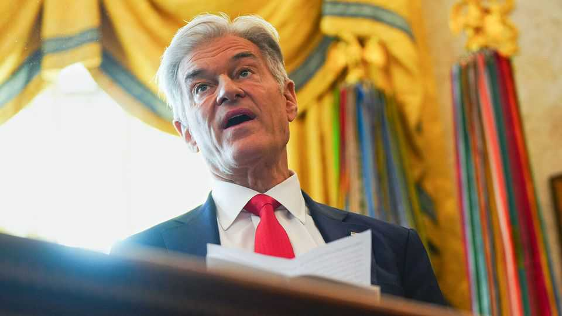
特朗普表示，重点将放在“蓝州”，这些地方的“腐败民主党政客”曾放任“自由放任”的混乱局面。共和党人不仅将欺诈视为惩罚民主党政权的工具，更视其为对抗自身政治劣势的机会。从最严厉的医疗计划批评者到最坚定的支持者，各方都承认一定程度的欺诈难以避免。但据特朗普承诺，被窃取的资金虽规模庞大，却远不足以平衡预算。美国国会非党派监督机构政府问责署（GAO）估计，联邦政府每年因欺诈损失高达2330亿至5210亿美元，约占总支出的3%-7%（鉴于非法活动的模糊性质，更精确的估算并不现实）。医疗体系的庞大规模使其尤为脆弱。■
2024年，针对老年人和贫困群体的医疗保险（Medicare）和医疗补助（Medicaid）占联邦支出的五分之一。KFF（美国健康政策研究机构）的罗宾·鲁多维茨指出，这两个计划体系也存在碎片化问题。仅医疗保险（Medicare）就拥有超过140万服务提供者和20种不同的付费系统，这让监管工作异常困难。大多数欺诈行为并非由患者实施，他们只能降低自身的费用。规模较大的诈骗行为往往来自医疗服务提供者，他们可以向政府虚报不存在的治疗项目。在医院外进行的服务，由于有严格监管的行政人员，是明显需要审查的领域。而在患者家中，除了服务提供者和患者本人，通常无人知晓一次访问持续了多久、提供了哪些治疗，甚至是否真的发生过服务。直接用于患者的支出，如新型轮椅或通过远程医疗提供的护理，也存在被虚报的风险。■
按小时计费的护理服务是自闭症治疗中的一种常见方式。明尼苏达州一直是政府打击欺诈行动的中心，不仅限于医疗领域。该州确实存在严重问题：自2022年以来，近100人被起诉，至少60人被定罪，涉及多种诈骗行为。许多犯罪者是索马里裔美国人，因社交媒体活动人士的曝光而引发关注。这为该州的移民执法提供了借口，并将诈骗者的种族问题作为焦点（特朗普在国情咨文中称其为“索马里海盗”）。总损失金额高达数亿美元，甚至更多。联邦检察官的一项评估显示，自2018年以来，约180亿美元公共资金中，超过半数可能被挪用。
作为回应，特朗普政府试图每年从该州的医疗补助计划中扣留超过20亿美元的资金，用于这些服务。目前该举措已暂停，等待听证会结果。与此同时，联邦官员已批准该州打击欺诈的计划。特朗普政府针对欺诈行为的其他措施从简单直接到冷酷无情不等。范斯先生的特别工作组被授权寻找扣留州资金的方式，同时标记高风险交易并为联邦机构设立反欺诈要求。一名政府官员表示，该工作组将“动用一切可用工具将违法者绳之以法”，并“确保这个国家曾发生的欺诈规模再也不会重演”。加利福尼亚州、佛罗里达州、缅因州和纽约州已收到关于欺诈预防的信函，官员们担心这可能是削减资金的第一步。
其他行政举措也与打击欺诈行为的意图背道而驰。2025年，特朗普赦免了一名知名医疗欺诈者罗伯特·哈什巴格（Robert Harshbarger Jr.），并减刑了另一名医疗欺诈犯劳伦斯·杜兰（Lawrence Duran）。前司法部欺诈部门负责人保罗·佩莱蒂埃（Paul Pelletier）表示，这种处理方式正是为何此次打击行动被称作“全是扯淡”。“你有一个赦免最大医疗欺诈者的总统……他们口是心非，毫无公信力。”据《普罗公共》（ProPublica）报道，检察官们也被抽调至其他优先事项，导致超过100起医疗欺诈案件被关闭。特朗普上任时解雇了十余名监察长，这些职位通常在调查中发挥关键作用。在卫生部门，一名任职二十年的监察长被T. /think
March Bell，此前因领导国会调查计划生育协会（Planned Parenthood）是否出售胎儿组织而广为人知（剧透：并未出售）。所有这些事件的背景是中期选举。民主党在医疗计划上拥有持久优势，而这类计划广受民众欢迎，共和党则与削减开支联系在一起。目前政府的政治策略类似于一种词语联想游戏：当选民想到医疗时，共和党希望他们联想到欺诈，而非削减开支。在选举之后，对欺诈行为的关注将引发对这类计划长期可持续性的讨论。在范斯（Mr Vance）任务小组的会议上，白宫顾问斯蒂芬·米勒（Stephen Miller）询问欺诈行为“对公众信任、社会信任以及人们对体系信心的影响”。在某些欺诈调查案例中，这或许正是调查的目的。■
保持对美国政治的敏锐洞察，订阅《美国简报》（The US in brief），我们的每日简报以快速分析呈现最重要的政治新闻；以及《Checks and Balance》（每周简报），深入探讨美国民主现状及选民关切的核心议题。■
§026 J.D.万斯的特朗普主义理论难敌实践原题：J.D. Vance’s theory of Trumpism is no match for the practice · 板块：United States · 栏目：美国
| 专栏：Lexington
白宫是宏大战略的坟场
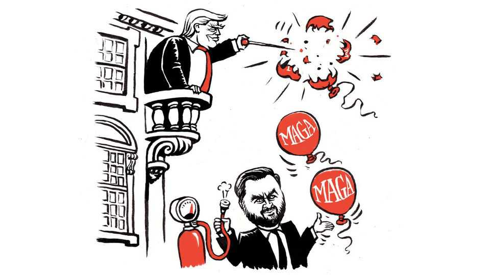
副总统J.D.万斯热衷于宏大构想，至少是宏大构想的概念。与唐纳德·特朗普不同，他读书甚至自己写作，说话时真挚地展现出精英阶层的气质——他们公开蔑视这种精英气质。他与“后自由主义右翼”站在一起，这个术语如此高深莫测，让人难以想象特朗普会使用它。
范斯担任特朗普白宫与思想界“新右翼”之间的首席使者，后者是一群思想激进的学者、硅谷巨头和拥有宏大构想的播客人，他们致力于拯救西方文明。范斯以末日论者口吻描述自己的使命，这充满激情的愿景。然而，某些日子也令他感到困扰，因为这让他被视作“让美国再次伟大”（MAGA）运动的首席思想家，而该运动的本质恰恰是没有明确意识形态的。MAGA更倾向于追随某个人的本能、冲动和荣耀。因此，范斯关于治理的理论不断受到特朗普实践的冲击。例如，与范斯的大胆构想相反，特朗普最近威胁要摧毁一种文明。范斯曾是伊拉克战争的老兵，一贯倡导孤立主义。■
正如他在上届总统竞选期间所说：“美国不需要不断对全球每个地区进行干预。” 与伊朗开战在他看来是个特别糟糕的主意。这不符合美国的利益，也将意味着“资源的巨大浪费”；以色列与伊朗之间的战争则是“最有可能且最危险的场景”，可能引发第三次世界大战。但事实证明，特朗普在强调“美国优先”时，并非真意停止全球干预。他意指无论何时只要他认为合适，就该动用武力，完全不顾资源、盟友或全球稳定，更不用说宏大战略了。范斯不得不辩称这次中东战争有意义，因为美国“拥有一个聪明的总统，而过去我们总是遇到愚蠢的总统”。尽管这个论点显得幼稚，但它既恭维了特朗普，又让特朗普背上了责任。■
与此同时，一位匿名人士向《纽约时报》透露，特朗普所有幕僚中，范斯是“唯一明确反对战争的例外”。范斯如今不得不担任首席谈判代表，这是他最不坏的选择。若谈判失败，他可将责任推给伊朗。此举也避免了国务卿马可·鲁比奥——特朗普近期力推的潜在继任者——可能采取行动并成功的情景。范斯最近前往匈牙利支持注定失败的总理维克托·奥班，此举更为鲁莽。这次行动最终否定了他关于世界应如何运作的最大设想。对特朗普而言，政治就是私事：他喜欢奥班，因为奥班对他阿谀奉承。
对万斯而言，事情更加抽象：4月7日，他站在布达佩斯与欧尔班并肩而立时宣称，在欧尔班与特朗普的领导下，匈牙利与美国代表着“捍卫西方文明”的象征。他们代表着一种理念，即“我们建立在某种基督教文明与基督教价值观之上，这些价值观贯穿于言论自由、法治、对少数群体权利的尊重以及对弱势群体的保护之中”。一位“后自由派”人物将自己置身于自由主义成就之中，是否显得有些矛盾？
这是新右翼的关键举措，也是一种偷换概念：范斯正确指出西方文明根植于基督教，但他跳过了基督徒因教义分歧而互相残杀的数十年历史，直到启蒙思想家将宗教引入私人领域，使政治言论和科学探索得以摆脱宗教教条的束缚。这种偷换概念的策略，为掌权者重新定义自由主义的保护提供了便利，例如以错误言论为由驱逐抗议者，或宣称某些群体如穆斯林“不属于美国社会”，正如一位共和党众议员最近所言。范斯的理论虽对民粹右翼颇为便利，却存在缺陷：它与民粹右翼实际主导治理的现实不符。■
欧尔班所谓的“法治”理念，是将公共资金流向亲信寡头，向法院安插顺从的法官，并修改选举法以利于自身；他所谓的“言论自由”，则是让盟友掌控新闻媒体。这听起来对美国人而言并不陌生；匈牙利的停滞不前应成为他们的警示。4月12日，范斯在与伊朗无果谈判后返回美国，同日特朗普却宣称自己的“基督教价值观”并不足以阻止他发布自比基督的图片，或攻击教皇。同一天，匈牙利民众用压倒性投票证明他们对范斯所谓文明空谈的轻视，将欧尔班逐出权力中心。范斯显然极其聪明，却能说出如此荒谬之言，令人不禁怀疑他是否尊重听众的智慧。■
在布达佩斯，范恩盛赞奥班为“深邃的领袖”和“全欧洲的楷模”，同时强调自己并未“告诉匈牙利人民如何投票”，并抨击“布鲁塞尔官僚”胆敢干预选举。除非特朗普能尽快对文明提升幡然醒悟，范恩那套正义的伪善才能在本届总统任期剩余阶段面临更严峻的考验。另一方面，这位前博客作者曾提出诸多挑衅性理论，例如“无子猫女士”正在拖累美国，以至于很难判断他究竟真正信奉哪些观点。他已就一些重大议题推翻过自身立场，包括是否应让特朗普担任总统。■
《经济学人》的订阅者可注册我们的Opinion新闻通讯，该通讯汇集了最佳的社论、专栏、客座文章和读者来信。■
§027 里约热内卢是巴西其他地区的美丽警示原题：Rio de Janeiro is a beautiful warning to the rest of Brazil · 板块：Americas · 栏目：美洲
美洲 | 度假天堂还是城市地狱？ 里约热内卢是巴西阳光明媚的都市，正吸引着大量外国游客。2025年游客数量攀升至210万，较前一年增长45%。对他们而言，里约是异国幻想，闪烁的水域与覆盖着翠绿丛林的山丘。游客们品尝着甜美的卡皮里尼亚鸡尾酒或从推车贩子处订购的啤酒，推车贩子沿沙滩叫卖。身着比基尼的女性在街头漫步，健壮的男性在海滨步道上展示魅力，人们在粉橘色落日背景下拍摄自拍。游客们钟爱里约，但他们真的了解这座城市吗？ ■
巴西第二大城市（仅次于圣保罗）最新政坛动态值得关注。里约热内卢州最高法院即将裁定，该州州长是通过全民投票选举产生，还是由地方立法机构选出。原因在于，前州长克劳迪奥·卡斯特罗（Claudio Castro）因在2022年竞选期间非法使用公款助选，上月被禁止任职八年。现任地方议会主席罗德里戈·巴塞拉尔（Rodrigo Bacellar）也因涉嫌与贩毒集团有关联（他否认）而被羁押候审。21世纪以来，里约热内卢州所有当选州长均因腐败指控被监禁或弹劾。尽管如今暴力事件较1990年代有所减少，但据全国贸易联合会（National Trade Confederation）统计，该州每年仍需花费约20亿美元（占本地GDP的1%）应对治安问题。■
一位希望参加今年总统大选的反体制政客甚至承诺要将里约热内卢从巴西其他地区割裂开来。欢迎来到另一个里约热内卢：一个犯罪与腐败交织的都市丛林。这座城市拥有著名的伊帕内玛海滩和科帕卡巴纳海滩，以及巴西最昂贵的邮编莱布隆区。南区是这座城市最知名的区域，仅居住着65万人口。但位于山丘之后的区域才是里约热内卢大都会区1200万居民的主要聚居地。这里遍布狭窄的贫民窟、工人阶级郊区，以及被政客们忽视的里约人——这座城市居民的自豪称谓。游览这些街区，能一窥里约热内卢的另一面。从北区的马雷区开始，它位于海岸线后几公里处。
这是一个由16个贫民窟组成的区域，层层叠叠的破旧房屋如同乐高积木般堆叠。超过14万人居住在不足4平方公里的区域内。周六清晨，这里一片寂静——多数居民在前一天的“巴伊亚 funk”（一种本地夜店狂欢）后仍在酣睡。偷来的汽车散落在整个区域，车牌和车窗被撕毁。从山丘顶端俯瞰，可见另一个贫民窟“阿莱芒综合体”，警方于10月突袭行动中击毙了130余名“红命令”（CV，里约最大帮派）成员，尸体被遗弃在相邻的森林中，家属不得不前去认领。此类突袭行动广受欢迎，常被需要提升民调的州长所采用。■
当被问及马雷（Maré）居民更畏惧警察还是帮派时，本地居民拉米安多（Raimundo，非真名）回答：“我们并不更喜欢警察。”为安抚居民，帮派提供迅速的“正义”并分发礼物。强奸犯和不法分子会被处决。卡车经常被抢劫，货物则在当地分发。通常包括酒精、液化气或鸡蛋，但拉米安多表示：“最近他们分发的是电动滑板车。”长期居住此地的多娜玛丽亚·若泽（Dona Maria José）被问及帮派时耸耸肩：“每天我们的政客都有丑闻。”她说，这些贩毒者“是上面的榜样”。而最高层的腐败程度不亚于流经马雷的污水沟。例如，巴塞拉（Mr Bacellar）于3月27日因涉嫌妨碍调查蒂戈·拉米安多·多斯·桑托斯·西尔瓦（Thiego Raimundo dos Santos Silva，简称T.H.）一案被拘捕。■
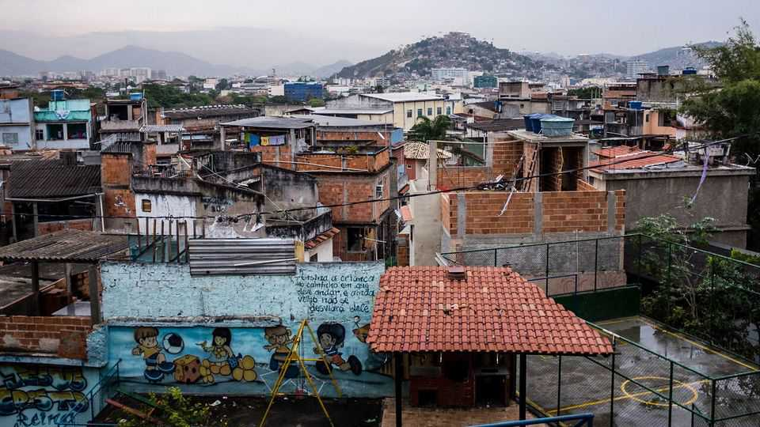
乔斯，一名被警方指控为线人兼枪支贩子的地方官员（巴塞拉尔先生否认有不当行为）。检察官称，席尔瓦先生在警方突袭其住所时逃亡，据称是乔斯提前通知了他，而乔斯则是从负责此案的法官处得知突袭计划的。这位法官如今已被巴西权力强大的最高法院下令监禁。席尔瓦被指控在里约北区繁华的工人阶级社区马杜雷拉的商铺中洗钱（他称指控“荒谬”并予以否认）。该社区多数居民为黑人，许多人是20世纪20年代“城市净化”运动中被驱逐出里约市中心的贫困居民的后裔。里约最负盛名的桑巴舞校也坐落于此，是社区的骄傲，新刷的外墙被一位态度粗暴的门卫看守着。
在一些街道的角落，散落着成对的椅子，中间摆放着小桌。这些设施标志着巴西非法彩票（jogo do bicho）的存在。彩票贩子（bicheiros）通常资助桑巴学校并拥有政治影响力。2月，警方逮捕了阿迪尔森·奥利维拉·科廷霍·菲利乌（Adilson Oliveira Coutinho Filho），他是里约热内卢最大桑巴学校之一的赞助人，也是主要的彩票贩子。他正因涉嫌下令竞争对手遭谋杀以及在巴拉圭经营走私香烟业务（该业务雇佣工人处于奴隶般的工作条件）而被调查，他本人对此予以否认。而在城市西区，犯罪地下势力同样占据主导地位。上世纪90年代，曾有前警察在此组建民兵组织，专门刺杀毒贩并为其他罪犯执行合同杀人。例如，最大的彩票贩子通常会雇佣前警察担任保镖和杀手。■
一位特别成功的雇佣兵是阿德里亚诺·达·诺布雷加，他曾是警方精英部队的队长，后来领导了一支死亡小队。如今，民兵组织也涉足贩毒和勒索活动，其资金常被洗白并流入本地资产。据附近弗卢米嫩塞联邦大学的研究人员和里约多家以安全为关注点的慈善组织估计，约170万人生活在民兵组织的控制之下，这一数字与受CV组织（见地图）控制的人数相当。地方政界人士长期默许这些组织的存在。但2018年8月，诺布雷加的同伙在市政议员玛丽莱·弗朗哥批评非法民兵关联地产项目后，枪杀了她及其司机。这起谋杀案震惊了全国，并引发了联邦调查。
2月，巴西最高法院判处前联邦众议员奇基宁·布拉扎奥（Chiquinho Brazão）及其兄弟多明戈斯（Domingos，里约审计法院成员）超过76年监禁，因下令实施谋杀。前州警察局长也因收受贿赂阻挠调查而入狱。弗朗哥的凶手罗尼·莱萨（Ronnie Lessa）是一名狙击手和军火商，但拥有强大人脉。他的女儿曾与雅伊尔·博索纳罗（Jair Bolsonaro，巴西前右翼总统）之子交往。博索纳罗的另一个儿子弗拉维奥（Flávio）曾在地方立法机构任职时，雇佣诺布雷加的妻子和母亲为其工作。诺布雷加于2020年在一次枪战中被杀。但与他及其家族的交易仍受调查，尤其是弗拉维奥如今成为10月总统大选的主要候选人后。（他称自己并不知晓诺布雷加亲属在自己名下任职。）■
里约人对城市衰退感到沮丧，渴望采取严厉措施扭转局面。"我们需要联邦政府介入，"当地居民韦尔森森·米拉尼表示，"当城市一半地区被犯罪集团控制时，你如何确保选举的公正性？"4月14日，巴西参议院听取了这一担忧。正在调查全国有组织犯罪的参议院委员会正考虑相关建议，其中包括呼吁联邦政府介入里约，以清除公共机构中"系统性渗透"的犯罪问题。巴西民众希望里约的混乱不会波及到自己。■ 注册订阅《El Boletín》电子简报，深入了解塑造拉美这一迷人而复杂的地区的各种力量。
§028 海湾战争陷入不安的僵局 Middle East & Africa | Blockades and bargains原题：The Gulf war has settled into an uneasy limbo · 板块：Middle East & Africa · 栏目：中东与非洲
美国长期以来将经济压力作为迫使伊朗妥协的手段 奥巴马政府曾通过制裁迫使伊朗在2015年签署联合全面行动计划（JCPOA） 特朗普在任期内首次任期便退出该协议 并启动“最大压力”战略 该战略加剧了伊朗的经济危机 但未能促成新协议。特朗普如今再度动用这一工具 但这次他以武力为后盾施加经济压力 而伊朗也正将这种压力施加于世界其他地区 ■
各方都希望迫使对方做出让步，以结束第三次海湾战争。问题是哪一方会率先让步。自4月8日起，美伊双方宣布实施两周停火协议，但伊朗的威胁仍使霍尔木兹海峡对商业航运基本关闭。4月11日，两国代表团在巴基斯坦首都伊斯兰堡举行会谈，促成停火协议。第二轮会谈可能在接下来几天内举行，停火协议也可能延长。与此同时，特朗普总统实施了自己单方面的封锁措施，禁止伊朗船只通过霍尔木兹海峡。该封锁措施于4月13日生效。五角大楼称，此后已下令十艘船只返回伊朗港口，且所有船只均遵从指令。■
美国财政部还表示，不会续签3月20日发布的30天豁免令，该豁免令允许部分伊朗石油出口，这是压低油价的不智举措。伊朗方面坚持称他们能承受痛苦，一如以往。但其经济本已陷入严重困境，货币严重贬值，年通货膨胀率超过50%，且需修复数十亿美元的战争损失。海上封锁可能比过去数十年的制裁更为严苛，而伊朗往往能找到规避制裁的方法。石油出口将是最明显的受害者。在当前产量水平下，若出口被封锁，两周内储油罐就会装满。这将迫使伊朗削减产量，最终停止出口，可能对油井造成长期损害。其他行业也将受到影响。■
伊朗近90%的植物油和动物饲料依赖进口大豆，主要通过海运。若供应中断，食品价格将飙升，而截至3月，食品价格已比去年同期上涨了110%。部分海湾国家官员支持封锁行动，并认为此举早已迫在眉睫。他们已连续数周抱怨美国允许伊朗继续出口石油，而他们自己的石油却仍被封锁。然而，对伊朗的禁运无助于缓解他们自身经济，这些国家每天因出口损失数十亿美元，也无法解决席卷全球的能源危机。尽管期货市场仍对战争即将结束抱有意外乐观预期，但短缺问题已开始冲击现货市场。美国或许因庞大的油气产业而相对安全，但司机们仍比去年同期多支付了29%的油价。■
年度通胀率在三月飙升至3.3%，较二月的2.4%有所上升。特朗普的顾问警告他，若要在11月中期选举前挽回损失，必须尽快结束战争。关于首轮会谈的具体内容，外界难以确切掌握，因为会谈持续了近21小时。例如，一些外交官认为美国愿意允许伊朗对穿越霍尔木兹海峡（霍尔木兹（Hormuz））的船只收取通行费（此举将激怒海湾地区的美国盟友）。另一些人则认为美国坚持要求所有船只自由通行。在某些情况下，甚至同一国家的官员也对会谈内容的解读存在分歧。但有一点似乎清晰：伊朗的核计划是美国的优先事项，而美方在要求上表现出了一定的灵活性。在前两轮会谈中，特朗普政府坚持要求伊朗彻底放弃铀浓缩。■
伊朗拒绝了。美国如今似乎愿意接受一个有期限的暂停协议，而非无期限的禁令。伊朗大概率会接受这一方案，尽管其谈判代表仍需就期限进行磋商：美国要求的20年期限似乎过长，而伊朗提出的5年期限则显得过短。然而这仅是诸多问题之一。最紧迫的是伊朗目前持有的超过400公斤浓缩铀，其浓度已接近武器级。美国希望伊朗将这些铀运出本国，而伊朗更倾向于在原地进行低浓缩化处理。后者本身并不构成根本性问题，但细节将至关重要：低浓缩化将在何处、何时进行？又由谁来监督？这指向了可能达成协议的更广泛担忧。■
如果禁令仅针对铀浓缩行为本身，伊朗仍可继续研发先进离心机（用于铀浓缩的机器）、在新建设施中安装这些设备，并研究如何将裂变材料转化为核武器——这些行动它此前均已实施。一旦暂停期结束，伊朗将具备迅速推进核武器计划的条件。此类问题虽可解决，但需要时间：伊朗核协议（JCPOA）的谈判耗时两年。伊朗方面在与巴基斯坦会谈时则明确提出了唯一诉求。“他们唯一在意的是金钱，”一位参与会谈的阿拉伯官员表示。伊朗要求美国不仅解除“次级制裁”（禁止第三国购买伊朗石油等），还要求解除“初级制裁”（阻止美国企业与伊朗开展业务）。这一过程同样耗时，因为部分制裁措施源自国会立法而非总统行政令。■
为尽快达成协议，双方可能都需要接受一个粗略的框架。他们将停止战争并解除相互封锁。伊朗同意暂停铀浓缩活动，作为交换，伊朗可动用冻结在外国银行中的数十亿美元石油收入。这虽未达到伊朗领导人追求的永久和平，也未实现特朗普希望的伊朗行为持久改变，但替代方案则是新一轮冲突——可能更具破坏性。第三艘美国航母即将抵达中东，上月从加州派出的两栖作战部队也将很快抵达。美国可能实施特朗普威胁的打击伊朗关键基础设施行动，这同样会对海湾国家造成影响。在经济意志的较量中，双方都可能蒙受损失。■
订阅《中东简报》，每周获取关于这个充满魅力、复杂且具有深远影响的地区最新动态。■
§029 唐纳德·特朗普对霍尔木兹海峡的封锁是一场危险的赌博 中东及非洲版 双重困境原题：Donald Trump’s blockade of Hormuz is a dangerous gamble · 板块：Middle East & Africa · 栏目：中东与非洲
当美国与以色列于2月28日展开战争时，许多人预计伊朗会封锁霍尔木兹海峡的航运。鲜有人预料到，不到两个月后，唐纳德·特朗普竟自行实施封锁，针对伊朗港口及沿海地区的交通。该封锁于4月13日生效。特朗普希望经济封锁能迫使伊朗开放这个炸弹未能奏效的海峡。这是一场可能加剧全球能源危机并引发新冲突的赌博。美国的逻辑很简单。 ■
伊朗威胁导致霍尔木兹海峡油轮运输量大幅下降。但伊朗仍持续出口本国石油，尽管出口量有所减少。该国还允许部分船只通过，前提是支付费用。特朗普的立场是，若中立货物无法自由通过，伊朗的船只也不应例外。前海军少将马克·蒙哥马利表示，该计划的军事行动“绝对可行”。美国可相对容易地登船并扣押船只。“无需拦截所有船只，”他补充道，“只要足够多的船只就能传达信息。”经济与政治层面的实施则更为复杂。目标可能是切断伊朗的经济命脉，迫使政权在和平谈判中让步，尤其在核计划问题上。理论上，伊朗处于弱势。■
鉴于当前原油储存水平，埃内斯特·森西耶（Ernest Censier）认为，若遭遇全面有效的封锁，伊朗可能在10至20天内被迫削减产量。布鲁金斯学会（Brookings Institution）美国智库的罗宾·布鲁克斯（Robin Brooks）表示：“随着伊朗石油出口崩溃，进口资金将枯竭，经济活动骤降，货币陷入贬值螺旋，恶性通胀随之而来。”他确信：“我确信这将迫使神权政权以诚意姿态重返谈判桌。”但其他人则持不同看法。博尔塞与巴扎尔基金会（Bourse & Bazaar Foundation）首席执行官埃斯法因达·巴特曼吉赫迪（Esfandyar Batmanghelidj）指出，伊朗已预见到石油出口会受阻。其可通过印钞、出售约1亿桶存于马来西亚和中国浮动存储的石油，以及从进口供应商处获取非正式信贷，承受最多六个月的施压。■
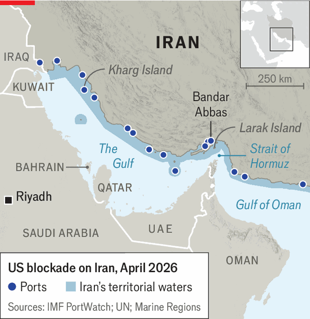
这留下两个重大问题。其一是对能源市场的影响，包括美国在内的地区。伊朗产量的损失本身并不足以造成灾难性后果，但会加剧海湾地区大量供应因苏伊士运河封闭而陷入停滞的局面。由于停火协议显得脆弱，伊朗几乎没有动力重新开放航道，甚至可能再次对中立船只发动袭击。进口国将被迫动用本已有限的库存，可能使布伦特原油期货价格在4月底前升至每桶150美元。若再考虑伊朗对海湾炼油厂、输油管道和港口发动袭击的风险，以及伊朗在也门的胡塞武装盟友对红海航运发动袭击的可能性，这项措施恐怕难以维持数周而不引发新一轮油价飙升。第二个问题是哪些国家可能陷入封锁之中。
例如，印度否认曾支付费用以让本国船只通过，特朗普于4月12日称这将成为拦截的触发点。但同日，美国中央司令部表示，封锁将依照国际法公正执行，针对所有经过伊朗港口或沿海水域的船只，这将涵盖印度的船只。停火协议后数日，运往中国、巴基斯坦和泰国的石油也从霍尔木兹海峡启航。此前，法国和土耳其——美国盟友——已分别通过霍尔木兹海峡，似乎获得伊朗允许。美国或许只需登检少数船只即可威慑其他国家试图突破封锁。但即便如此，过程仍可能惹恼部分友好国家。■
一些美国官员认为中国不会挑战封锁，但接受这种封锁将树立危险的先例。中国长期以来担忧在太平洋战争爆发时，马六甲海峡（Malacca Strait）可能被封锁。特朗普决定实施封锁，这一决定是在他一度考虑与伊朗政权“联合”控制霍尔木兹海峡（Hormuz）之后做出的，这种做法将颠覆国际法对这类航道的管辖，这表明自由航行原则正面临巨大压力。曾任皇家海军智库负责人直至去年，现为军事期刊《RUSI Journal》编辑的凯文·罗兰兹（Kevin Rowlands）指出，这“再次为任何关于存在基于规则的国际秩序或国际法的虚伪说法敲响丧钟”。■
订阅《中东简报》（Middle East Dispatch），每周获取关于一个充满魅力、复杂且影响深远的地区的最新动态。■
§030 以色列与黎巴嫩均欲驱逐真主党原题：Israel and Lebanon both want to dislodge Hizbullah · 板块：Middle East & Africa · 栏目：中东与非洲
，黎巴嫩大使与以色列大使在华盛顿举行了两国数十年来首次的官方直接会谈。如此会谈在数周前仍属不可想象之事。直到最近，黎巴嫩与以色列谈判几乎等同于叛国。但即便双方展开对话，以色列仍持续对南部黎巴嫩发动轰炸。过去六周内，以军空袭已造成逾2000人死亡，迫使逾100万人逃离家园。此次会谈虽具历史意义，但仅是开端。 ■
就在几天前，4月8日，唐纳德·特朗普（Donald Trump）刚刚宣布与伊朗停火不久，以色列便对贝鲁特及黎巴嫩其他地区发动空袭，造成至少357人死亡，其中许多人是平民。在黎巴嫩，人们称这一天为“黑色星期三”（Black Wednesday）。以色列国防军（IDF）称袭击目标是真主党（Hizbullah）成员。许多黎巴嫩人目睹边境村庄被夷平、平民伤亡，担心自己将面临与加沙相似的命运。此次袭击引发广泛国际谴责，特朗普罕见地批评以色列，称其应“低调处理”（low-key）袭击行动。以色列此后未再对贝鲁特发动袭击，但美国支持其拒绝接受停火协议的立场。以色列军方高层明确表示，针对真主党的行动已接近极限。■
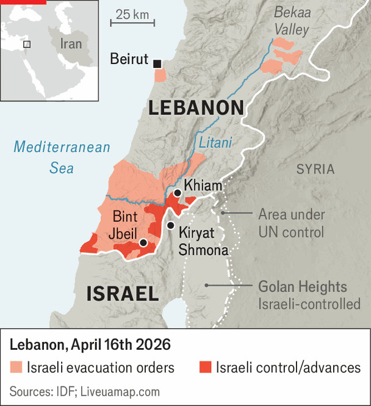
4月3日，一名以色列将军因向媒体表示，彻底解除该组织武装而无需“占领整个黎巴嫩”，并称以色列在该地区的战争目标应更加“谦逊”，而与北部政界人士和居民陷入争议。对以色列右翼强硬政府而言，谦逊是一个陌生的概念。在谈判前，内塔尼亚胡曾要求黎巴嫩政府提出一份全面计划，包括解除真主党武装以及两国建立外交关系。黎巴嫩几乎不可能提供此类方案。它希望在不设此类前提条件下达成停火协议，要求以色列从南部撤军、归还黎巴嫩囚犯，并取消事实上的安全区。
此后，以色列官员谨慎乐观。“重要的是，我们现在与黎巴嫩拥有共同利益：将我们之间的事务与与伊朗的冲突脱钩。”但双方均不期待短期内取得成果。“谈判可能艰难且耗时长久，”一位黎巴嫩部长表示。拆解真主党武装并迫使该组织接受解散其军事翼的提议将耗时数年。这需要黎巴嫩国内高度分裂社会达成政治共识，并提升黎巴嫩军队的作战能力。即便如此，内塔尼亚胡恐怕也不会给予他们必要的时间。与此同时，真主党领导人及其伊朗支持者近日已微妙暗示，若黎巴嫩当局试图解散该组织，将发动政变推翻贝鲁特政府。
如同伊朗，真主党（Hezbollah）在军事上遭受的损失远大于其对手，但依然能够对以色列构成威胁。一名以色列官员表示：“他们的主要优势在于，他们愿意付出比我们高得多的代价，因为他们的生存攸关。”前线指挥官表示，他们对真主党战士参战的积极性感到意外。令人担忧的是，真主党领导层因以色列的袭击而严重削弱，所剩人员据黎巴嫩议员马克·达乌（Mark Daou）称，不过是“安全机构的退休人员”。人们担心真正的实权掌握在德黑兰手中。什叶派分析人士穆斯塔法·法赫斯（Mustafa Fahs）直言不讳地表示：“你只能通过伊朗的宗教裁定（fatwa）才能夺取真主党的武器。”然而，黎巴嫩若能挑战真主党，将获得巨大的回报。■
政治协议可能赢得地区支持，终结真主党作为黎巴嫩国防核心的虚构地位，并迫使黎巴嫩领导人正视该组织的武装问题。“真正的转折点在于不再允许真主党运作，而不仅仅是解除其武装。”达乌先生表示。目前实力衰退且政治孤立的真主党或许正面临接受条件的最佳时机。问题是其在伊朗的资助方是否允许这样做。■ 注册订阅中东简报（Middle East Dispatch），每周获取关于这一复杂且具有深远影响地区的最新动态。
§031 中东与非洲原题：Is bombing power plants and oil facilities a war crime? · 板块：Middle East & Africa · 栏目：中东与非洲
尽管美国与伊朗正在就进一步和平谈判展开磋商，特朗普仍不断提及轰炸伊朗基础设施的可能性。美国总统于4月12日表示：“我当然不愿这么做，但他们的水资源、海水淡化设施、发电厂都非常容易成为打击目标。”
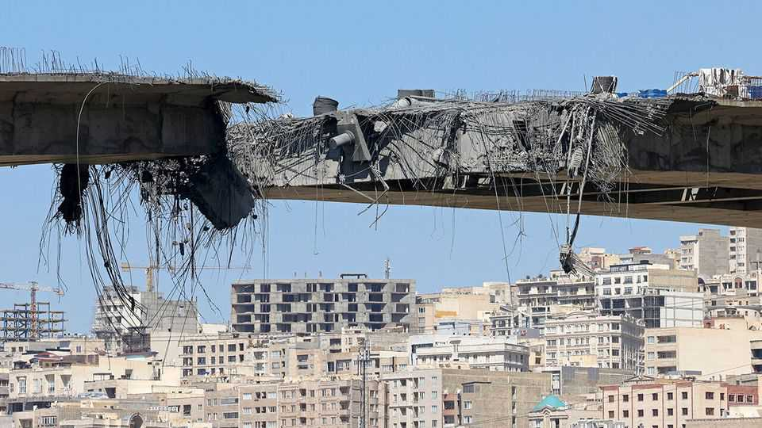
美国武装部队宣誓捍卫宪法，宪法将总统指定为他们的最高统帅，他们通常应遵从其命令。然而国际战争法也要求他们违抗“明显非法”的命令。
美国战争部长彼得·赫格赛特（Pete Hegseth）下令对失去战斗力的敌人采取“不给任何怜悯”的态度，这在国际法中是明确禁止的。但针对桥梁、电站和石油设施的攻击又该如何界定？战争法规定，民用设施除非通过三项测试，否则不得作为合法目标。第一项测试是该设施是否用于军事目的，且攻击它能带来“明确”的军事优势。其中“明确”一词虽不精确，但暗示优势不能是推测性的。这意味着用于调动部队或弹药的桥梁，或为雷达站供电的电站，可能成为合法攻击目标。第二项测试是是否已采取一切可行措施以最大限度减少对平民的伤害。■
在袭击民用发电站或例如防空设施前，攻击者必须先评估是否能通过攻击变电站或通往防空设施的输电线路，从而更有效地切断防空系统的电力供应。最终，攻击者还需通过比例原则测试，即预期造成的平民伤亡不应与预期的军事优势相比显得过分。根据这一标准，某些桥梁或发电站可能被认定为合法打击目标。“在上个世纪担任目标定位军官时，我总是优先攻击桥梁，”前美国空军军官、现雷丁大学法学教授迈克尔·施米特（Michael Schmitt）表示。“但并非所有桥梁都如此。你必须确认敌方正在使用我的桥梁，或明知敌方将使用我的桥梁。” ■
但若要落实特朗普威胁摧毁海水淡化厂（对维持平民生活至关重要）、所有桥梁和发电厂，这将构成明显违反国际法的行为。同样，以色列在加沙和黎巴嫩对建筑物及住宅的无差别摧毁，仅因怀疑其可能被哈马斯或真主党使用，也属违法。美国对伊朗港口实施的封锁虽属战争行为，但具有法律依据。然而，炸毁石油设施是否构成战争罪，至少在美国法律下尚不明确。多数国家认为攻击纯粹经济基础设施属于非法行为，但美国声称有权打击“维持战争”的目标，即那些为敌方提供资金的设施。正是基于此逻辑，美国曾轰炸阿富汗的制毒实验室，并与包括英国、法国在内的盟友联合打击叙利亚由ISIS控制的油田。■
赫格塞特轻蔑地将战争法称为“愚蠢的规则”，但他的下属和盟友却更为担忧。美军士兵可能因战争罪被起诉，无论是在美国还是海外。英国等盟友若明知协助美军违反国际法的行为，例如允许轰炸机使用英国空军基地，也可能陷入法律风险。讽刺的是，特朗普或许反而因法律而最安全，因为他的威胁过于夸张，可声称自己并非字面意思。“我的总统将夸张推向了艺术的巅峰，”施米特教授表示，“这反而对他有利，因为很难相信他所说的大部分内容。” ■ 注册中东简报，每周获取关于这个复杂且具有深远影响的地区的重要信息。
§032 津巴布韦的荒诞经济繁荣 中东及非洲原题：Zimbabwe’s bizarre economic boom · 板块：Middle East & Africa · 栏目：中东与非洲
在哈拉雷以北约50公里处的马佐韦河谷，黄金热潮无处不在。挖掘机在山坡上作业，仿佛从桶里舀冰淇淋般将矿石一扫而空。管道将河水引向小型矿工使用的洗选站，如此多的水流被截走，原本由该河供水的水坝如今看起来像一片浑浊的池塘。黄金热潮的影响远不止于马佐韦河谷。津巴布韦这个因土地征收和恶性通胀历史常被视为经济废墟的国家，正经历着一种特例式的繁荣。
金属及其他大宗商品价格高企，推动大量现金涌入津巴布韦高度非正式的经济体系。这使得当局得以停止印钞和干预货币市场，通胀水平降至约30年来的最低点。国际货币基金组织（IMF）多次上调经济增长预期，最新预测2025年增速至少达7.5%，几乎是撒哈拉以南非洲平均水平的两倍。尽管津巴布韦经济状况好于许多外界预期，但政治环境依旧恶劣。83岁的总统姆南加古瓦（Emmerson Mnangagwa）正效仿其前任穆加贝（Robert Mugabe），试图修宪以维持权力，可能终身执政。黄金是贯穿津巴布韦历史的一条脉络。■
塞西尔·罗德斯（Cecil Rhodes）在日后以自己名字命名的地区（罗得西亚）进行殖民，目的是追寻一些帝国主义者认为的所罗门王黄金的源头——奥非尔（Ophir）的原始土地。罗得西亚人从未发现太多黄金。但自1980年该国成为津巴布韦后，黄金愈发重要。2025年，该国官方产出47吨黄金，创历史最高纪录，比十年前翻倍以上。（走私意味着实际总产量更高。）这带动了46亿美元的收入，约占全部出口额的一半，全球金融市场波动推高了金价，五年内金价几乎翻三倍。矿业投资者维克多·加佩（Victor Gapere）表示：“我们从未想过会出现这样的价格。感谢特朗普总统，上帝保佑。”影响已波及广泛。在手工开采点，矿工使用汞和氰化物，这些有毒物质被重新循环至饮用水和灌溉用水中。■
更高的价格也意味着走私者能获得更高的潜在收益，而多起调查已将走私活动与政界要人联系起来。美国对姆南加古瓦（Mnangagwa）的制裁即基于其涉嫌参与的指控。然而，部分矿产收益最终流入了数以十万计在手工采矿领域工作的津巴布韦人手中。他们每月可赚取数百美元。一位零售商表示：“这些年轻人现在手头很宽裕”，他描述了摩托车、电子产品和药品销售的激增。黄金并非唯一增长动力。今年的烟草作物将是历史最高纪录。锂、铬和铂矿开采商，其中许多是中国企业，已提高产量。津巴布韦侨民，主要分布在南非，去年汇回了25亿美元。一位银行家表示，整体需求达到前所未有的水平。大量支出通过黑市进行，绕过了海关和税务官员。■
■“这是刚果化的津巴布韦”，一位金融家如此评价。哈拉雷的房屋正以现金形式以创纪录价格出售：投资者更倾向于购置房产而非银行储蓄，因为通货膨胀的阴影笼罩着货币。私人保险箱行业正迎来繁荣期。一位知情官员表示，这些保险箱中可能存放着价值20亿至40亿美元的黄金和现金。当国家实际在开采黄金时，政策制定者对印钞的需求相应减少。津巴布韦黄金（ZiG）于2024年推出，至今尚未重蹈此前少数货币体系贬值至无用的覆辙。自2024年起担任央行行长的约翰·穆沙亚瓦努（John Mushayavanhu）在该国实际美元化的情况下，基本未强制推行ZiG。超过一年的相对宏观经济稳定促使国际货币基金组织（IMF）于2月同意其自2019年以来的首个技术援助计划。
然而，尽管经济状况比穆加贝时期略好，但政治局势却未见改善。今年2月，执政党津巴布韦非洲民族解放运动-非洲人民联盟（Zanu-PF）提出一项法案，将政客任期从五年延长至七年，将姆南加古瓦的任期结束时间从2028年推迟至至少2030年。若他声称修订后的宪法允许他连任两届，理论上他甚至可能活到100岁仍掌权。该法案将取消直接总统选举，由议会众议员选举产生总统，使他能通过拉帮结派巩固权力。关键议员和非政府组织要么被收编，要么遭到压制。商界人士对这项法案忧心忡忡，但公开批评则不敢轻举妄动。有人指出，副总统康斯坦蒂诺·奇韦甘加（Constantino Chiwenga）——这位曾于2017年协助姆南加古瓦推翻穆加贝的前军方首脑——正密谋发动另一次政变，因为他原本计划在2028年接任总统。■
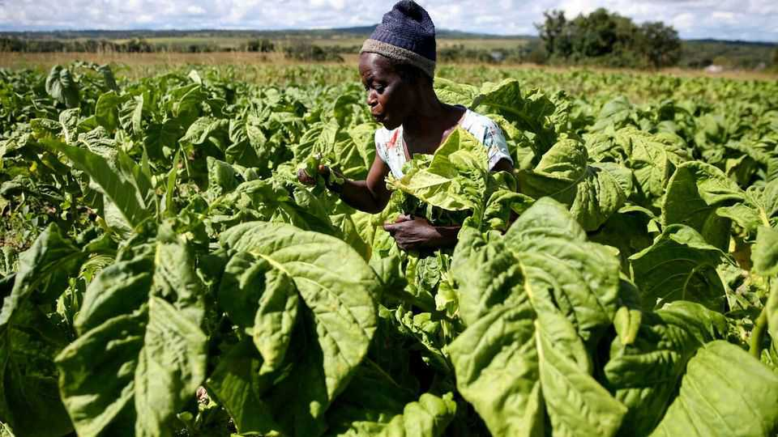
总统试图遏制事态发展，已解除了其副手身边的多名官员职务。尽管此前曾寄望姆南加古瓦（Mnangagwa）能改善与西方国家的关系，但其近期的权力扩张使这一前景更加黯淡。津巴布韦已近30年未能获得官方发展资金，累计拖欠世界银行及多个西方政府的债务高达74亿美元。由于债务重组部分依赖政治改革，此举将使欧洲各国政府更难达成新的协议。特朗普的回归——这位热衷非洲矿产却对非洲民主漠不关心的总统——并未促成关系缓和。部分分析人士曾认为其交易至上主义风格适合津巴布韦非洲民族联盟-爱国阵线（Zanu-PF），但该党几乎未对特朗普主义派系表示任何兴趣。■
2月时，津巴布韦拒绝了一项援助计划，该计划本可维持美国对本国130万艾滋病患者提供的抗艾滋药物资助。逻辑上，这表明津巴布韦精英阶层乐于维持现状。在高大宗商品价格背景下，合法与非法渠道都能牟利。只要南非的津巴布韦保姆和园丁将工资寄回国内，数百万未参与黄金热潮的民众就能依靠海外侨民维持的福利国家体系。而当拥有中国朋友时，又何必依赖西方？最终开放经济意味着失去控制——津巴布韦非洲民族联盟-爱国阵线（Zanu-PF）显然不愿如此。哈拉雷一位受人尊敬的商人指出，来访投资者惊叹津巴布韦治安良好。他稍作停顿，露出笑容，讲起当地笑话：“我们这里没有犯罪集团，因为最大的犯罪集团就是执政党。” ■
订阅《Analysing Africa》，每周通讯让你掌握世界上最年轻且最不为人知的大陆的最新动态。■
§033 贝宁总统选举的胜利远非民主的体现 中东及非洲 贝宁造假事件原题：A victory in Benin’s presidential election was hardly democratic · 板块：Middle East & Africa · 栏目：中东与非洲
回顾1991年冷战结束之际，贝宁成为非洲大陆首个通过全民普选和平罢免现任统治者的后殖民国家。几个月后赞比亚也效仿。冷战后多党民主和更开放政治的潮流席卷非洲。因此，曾充满活力的贝宁如今再度沦为民主倒退的典型案例更令人痛心。罗马尔德·瓦达尼（Romuald Wadagni）的总统竞选之路宛如凯旋之旅。甚至他的唯一对手也未敢公开批评他。
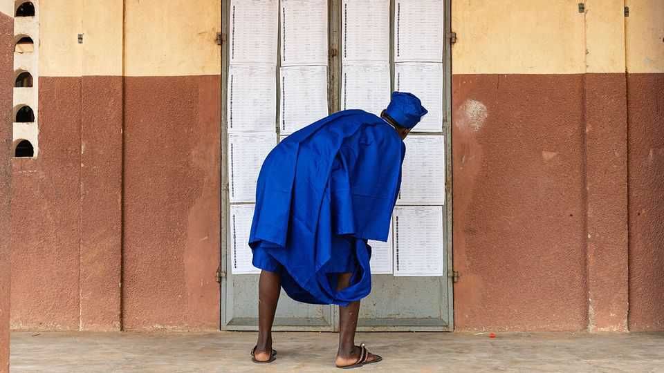
贝宁总统帕特里克·塔隆（Patrice Talon）卸任前不久，460万选民在4月12日投票后，初步结果显示49岁的瓦达尼（Mr Wadagni）获得94%选票。这是贝宁近三十年来最不民主的选举。胜选者由塔隆指定，这位任期十年的总统将经济收益与明显的威权化倾向结合。执政联盟“进步复兴联盟”与“共和联盟”在1月的议会选举中赢得全部109个席位，最大反对党“民主党”（Les Démocrates）被禁止参选总统。选举结果在投票开始前已基本确定。■
通过多次选举实现权力更迭，贝宁（Benin）这个人口不足1500万的西非沿海国家成为该地区民主的先驱，但也加剧了政治分裂：超过200个政党及数十位总统候选人相继涌现。塔隆总统（Mr Talon）借机推行一系列选举与宪法改革，巩固其执政联盟地位。竞选者须获得现任议员五分之一的提名，新设立的立法机构将赋予塔隆广泛权力，他不仅为选定的继任者铺平道路，更确保自身影响力延续多年。瓦达尼（Mr Wadagni）是塔隆任内高效且任期较长的财政部长，曾任职德勤（Deloitte）咨询公司，主导塔隆的经济议程。他引领贝宁实现近三十年来最高GDP增速，2024年达到7.5%。■
人均收入自2015年以来增长了50%。私营企业更加活跃，棉花产业充满活力；塔隆先生（Talon）在担任总统前曾在棉花产业中积累巨额财富，因而被称作贝宁的“棉花大王”。企业家们表示经商环境变得更加宽松。但瓦达尼先生（Wadagni）似乎仍未摆脱其政治导师塔隆的影响。许多旧有的政治精英已被吸纳进权力体系。几位曾试图挑战塔隆的候选人要么被禁止再次参选，要么在被以站不住脚的指控定罪后遭到流放。人权活动人士被监禁，司法系统趋于沉默。但地区观察人士对此并未多加评论，或许他们更看重安全而非民主。去年一次未遂政变在尼日利亚军队协助下被挫败。■
贝宁已受到邻近的布基纳法索和尼日尔的致命极端分子冲突影响，这些国家位于贝宁北部。去年针对贝宁边境村庄的袭击事件比前一年显著增加。政府发言人表示：“在20、30、50年后，当人们看到我们改革带来的积极效果以及人民生活水平的改善时，所有人都会忘记那些认为我们的民主正在衰退的批评声音。” 但人们真的能如此确定吗？ ■ 注册订阅《分析非洲》（Analysing Africa），每周获取关于世界最年轻、最不为人知的大陆的最新动态。
§034 匈牙利政体发生彻底变革原题：“Complete change of regime” in Hungary · 板块：Europe · 栏目：欧洲
一旦明确维克托·欧尔班在4月12日的匈牙利选举中失利，人群便涌入布达佩斯街头，导致车辆缓慢行驶，乘客们互相击掌庆祝。格热戈站在酒吧外，挥舞着香槟瓶欢呼。司机们以四拍节奏鸣笛回应，模仿着"肮脏的Fidesz"（欧尔班所属政党）和"俄罗斯人回家"的口号。"感觉就像过去16年（自Fidesz掌权以来）我们一直被厚重的毯子压着，现在终于被掀开了。"格热戈说道。布达佩斯作为自由主义大都会，支持彼得·马加尔及其反对党蒂萨党的决心从未存疑。但他的胜利范围却相当广泛。
东部和南部农村地区也支持马加尔，这些地区对日益恶化的社会服务和自2022年欧盟因腐败问题暂停援助以来几乎停滞的经济感到不满。蒂萨最终以52%对40%的得票率击败匈牙利青年联盟（Fidesz）（详见地图）。极右翼政党“我们的祖国”以6%的得票率意外进入议会。选举庆祝活动次日，在持续三小时的记者会上，马加尔誓言要逆转奥班政府对国家的接管，并彻查并惩治使匈牙利成为欧盟最腐败国家的系统性腐败。马加尔表示：“匈牙利人民投票并非仅仅是为了更换政府，而是为了彻底改变国家体制。这个国家曾被绑架，它是一个被控制的国家。”这种控制早已悄然形成。
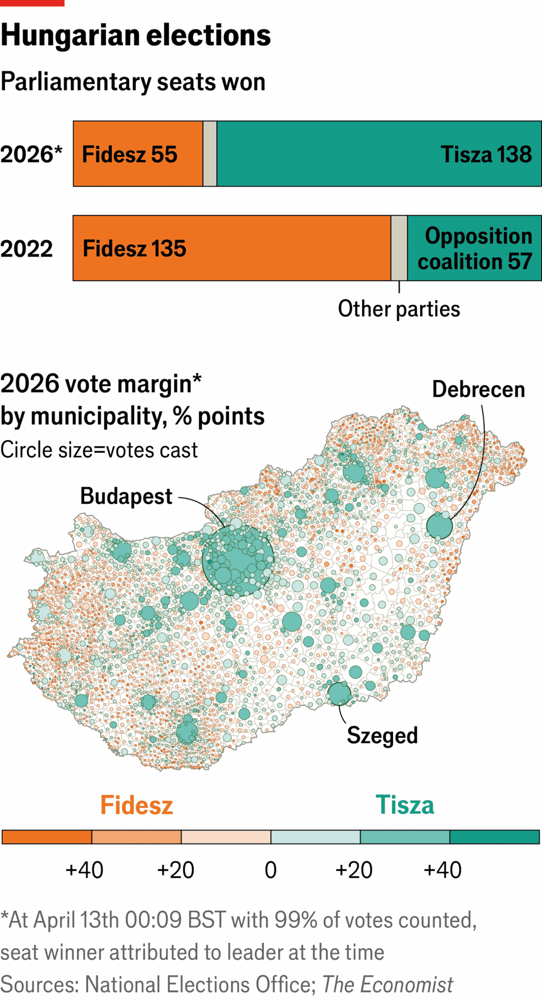
欧尔班利用执政党Fidesz在议会获得的三分之二多数席位，修改匈牙利宪法以巩固自身权力，并将亲信安插进文官体系和独立机构。马加尔希望尽快清理系统，以免重蹈波兰前总理图斯克的覆辙。图斯克在2023年击败本国民粹主义者后，一直难以恢复法治。马加尔已要求Fidesz官员包括总统、最高法院和宪法法院院长、总检察长等辞职。若他们拒不离开，他将动用三分之二多数席位将其罢免；初步统计显示，蒂萨在199个席位中已获得137席。但总统必须签署相关法律，这使该计划难度加大。新任总理计划在某种形式的全民咨询后，改革Fidesz扭曲的宪法。■
他主张对总理实行两届任期限制，这将阻止欧尔班再次参选。他还需解除欧尔班所称的“国家合作体系”，该体系让亲信掌控大学和国有公司（如国有能源公司MOL），并创建亲欧尔班的媒体基金会和智库。马加尔表示，他将终止对诸如马蒂亚斯·科维努斯学院基金会等机构的补贴，该基金会曾将布达佩斯置于全球民粹主义运动的中心。纠正媒体失真可能比想象中更容易。目前，政府对亲欧尔班机构的巨额广告支出将终止。揭露腐败的独立媒体如Telex和444.hu将获得公平竞争环境。事实上，欧尔班的执政机器已开始瓦解。
匈牙利人看到国家广播电视台播放马加尔（Márk Orbán）的完整新闻发布会时感到好笑，此前在竞选期间该电视台只在负面片段中提及他。风险分析公司“红雪”（Red Snow）的博顿·费莱迪（Botond Feledy）表示：“系统正在迅速崩溃。”选举前有传闻称一些人正将与执政党Fidesz相关的财富转移出国，多名商人和公务员转投蒂萨（Tisza）阵营。若忠于奥班（Orbán）的追随者失去对其重返权力的信心，可能会揭露其统治下的腐败细节。新政府的首要任务是解冻被冻结的欧盟资金，目前约合180亿欧元（210亿美元），占GDP近10%。■
布鲁塞尔官员对马加尔先生态度友好（尤其是因为他承诺解除奥班先生对乌克兰900亿欧元贷款的否决权），但他们希望看到一个明确的计划，以恢复法治并确保资金不会被腐败使用。大部分援助来自欧盟的后疫情复苏计划，该计划将在8月底到期。这将减少债务并有助于降低利率，目前匈牙利的利率比欧元区高出四个百分点。经济学家认为，这可能使经济增长率提高一个百分点或更多。对欧盟而言，奥班的离任无疑是一大解脱。■
匈牙利已成为弗拉基米尔·普京在欧盟内部的盟友，以换取廉价的俄罗斯能源，该国曾否决对乌克兰的制裁和援助。俄罗斯曾派社交媒体操作员支持费迪斯（Fidesz），但此举可能弊大于利。马加尔（Márton György Magyar）不太可能逆转匈牙利对中国的友好立场，因为中国在该国拥有大量电池和电动车投资。费迪斯的失利也打击了其MAGA盟友。唐纳德·特朗普曾承诺，若奥班（Orbán Viktor）获胜，将动用美国的“全部经济实力”支持匈牙利。其他欧洲民粹主义者可能得出结论，认为特朗普如今已成为阻碍而非助力。奥班可继续任职至5月12日。对许多人而言，下一届政府的考验将是其是否起诉那些在费迪斯（Fidesz）执政期间非法牟取私利的人。■
匈牙利在苏联集团国家中经历了最平和的转型，但未能惩治罪犯，损害了后来的政府。许多选民投票支持蒂萨（Tisza）以终结腐败模式。马加尔（Magyar）承诺绝不允许“无问责的政府”，这一承诺在匈牙利之外也引发广泛共鸣。■ 要掌握欧洲最大新闻动态，请订阅我们的周度专属简报《Café Europa》。
§035 欧洲原题：A scramble ahead of France’s presidential election · 板块：Europe · 栏目：欧洲
12个月后，法国选民将选出埃马纽埃尔·马克龙的继任者。根据宪法，总统最多连任两届，但若间隔任期，他仍可能在2032年寻求第三届。明年总统选举的民调显示，唯一几乎肯定能进入第二轮的候选人必是代表极右翼政党国民联盟（RN）的代表，无论是玛丽娜·勒庞还是乔丹·巴德拉。但其余竞争者众多且局势未定。“我们正处在最激烈竞争的阶段，”一位接近马克龙的中间派人士表示，“每个人都在问：‘为什么不是我？’”
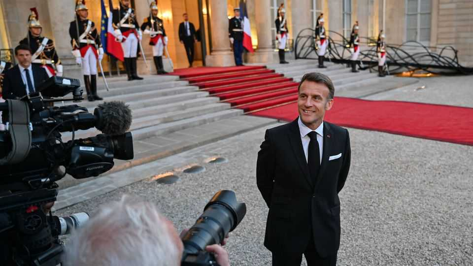
“丰裕的诅咒”笼罩着所有主流政党。在左翼阵营，候选人众多却缺乏统一的选拔机制。社会党领袖奥利维耶·法瓦尔（Olivier Faure）希望举行党内初选，而民调表现优于其他候选人的拉斐尔·格鲁克曼（Raphaël Glucksmann，首轮投票得票率10-14%）则反对这一做法，并拒绝参与初选。部分左翼人士希望与极左翼激进候选人让-吕克·梅朗雄（Jean-Luc Mélenchon，其本人拥有政党）联合，共同推举单一候选人。另一些人则认为梅朗雄具有破坏性。背景中隐约浮现前总统弗朗索瓦·奥朗德（François Hollande）的身影，一位朋友表示他希望“如果有机会”东山再起。右翼共和党内部情况同样不明朗，本周成员将投票决定是否举行初选。党魁布鲁诺·雷塔勒（Bruno Retailleau）被认为最有可能在初选中胜出，但他在首轮总统民调中得分大多在个位数。■
他还将面对一些竞争对手，其中包括一些自行成立政党的人士，如戛纳市长大卫·利斯纳（David Lisnard）和前总理多米尼克·德维尔潘（Dominique de Villepin）。在总统民调中，没有人比雷塔卢（Mr Retailleau）更占优势。2017年由马克龙（Mr Macron）开放的中间派阵营也出现分裂。他的两位前总理希望成为该阵营的代表。但两人作为候选人，都不如马克龙当年那般有号召力。埃德瓦·菲利普（Edouard Philippe）因最近连任勒阿弗尔市长而民调上升，他表示将参选。掌管总统政党“复兴党”（Renaissance）的加布里埃尔·阿塔尔（Gabriel Attal）也被认为会参选。4月23日，阿塔尔将出版一本名为《作为自由人》（As a Free Man）的书，这既像是与马克龙划清界限的努力，也像是总统竞选的前奏。民调显示，菲利普更有可能进入第二轮投票。■
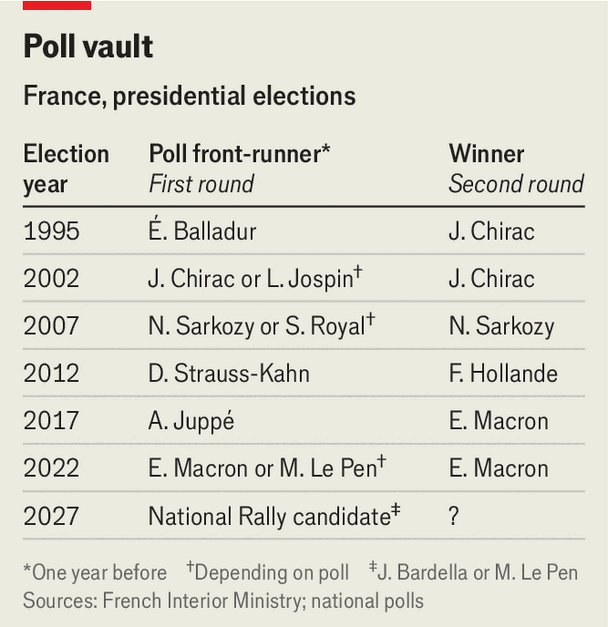
他可能获得首轮投票的25.5%，仅次于巴德尔拉的38%——目前他是唯一有望在决胜轮击败国民联盟领导人的人选。这种拥挤的候选人名单带来的风险是，太多主流候选人会分散选票，迫使选民在两个极端之间做出选择。因此，一些中间派和共和党人呼吁支持单一候选人。90名相关人士上月联署了一封公开信。不过，要让这些竞争对手现在达成一致似乎并不容易。一位中间派人士指出，“最终的筛选工具将是民调”。但民调可能需要时间才能显现结果。距离投票还有一年时的总统民调往往并不准确（见表）。马克龙比任何人都更清楚这一点，他在一年前几乎未被测试就赢得了总统选举。■
关键的民意调查趋势往往在投票前数月，甚至数周就已显现。结论可能要到2027年初才能得出，政敌间达成协议、处境不利的候选人退出竞争、选战格局逐渐收窄。至于国民联盟（Rassemblement National），它目前仍未确定将推举哪位候选人。最高法院将于七月裁定是否维持对勒庞女士（Marine Le Pen）的禁令，因其所属政党被指控滥用欧盟资金。若裁定维持禁令，国民联盟已同意将候选人资格转给30岁的巴德尔拉先生（Jean-Bardella），后者近期因与意大利公主的关联被《巴黎竞赛报》（Paris Match）等时尚杂志广泛报道。随着民众对不断上涨的燃油费用感到愤怒，而马克龙先生即将迎来其第十个年头的执政期，国民联盟正借助强烈的反建制情绪掀起一波浪潮。■
但欧洲也失去了一位重要盟友，如今匈牙利的维克托·奥班（Viktor Orban）已被推翻。国民联盟（RN）明年赢得选举的可能性——这是首次——成为现实，但并非板上钉钉。“民调的一致性加上最近的选举结果表明，RN进入第二轮选举的概率非常高，”Ipsos民调机构的Mathieu Gallard表示。“但民调无法断言巴尔代拉（Bardella）或勒庞（Le Pen）是胜选热门人选。” ■ 要掌握欧洲最大新闻，订阅我们的周度专属简报《Café Europa》。
§036 在海湾地区，乌克兰展示其拦截无人机的高超技术原题：In the Gulf, Ukraine flaunts its skill at intercepting drones · 板块：Europe · 栏目：欧洲
美国总统唐纳德·特朗普在发动对伊朗的袭击后不久，轻视了乌克兰。他告诉福克斯新闻：“我们不需要他们的无人机防御帮助，实际上我们拥有世界上最先进的无人机。” 正在遭受伊朗导弹和沙希德无人机袭击的海湾国家则持不同观点。应其请求，乌克兰迅速派遣了228名拥有实战经验的无人机防御顾问。3月下旬，乌克兰总统弗拉基米尔·泽连斯基访问该地区，并与卡塔尔、沙特阿拉伯和阿联酋签署了为期十年的安全合作协议。■
乌克兰也在与约旦和科威特展开合作。这些协议体现了乌克兰在防空技术领域的专业能力，经过四年战争的锤炼，其应对能力远超美国及欧洲其他国家。乌克兰的国防企业已掌握批量生产拦截器的技术，单台拦截器成本仅为2000至5000美元。目前这些拦截器能有效击落高达90%的发射至乌克兰城市的5万美元Geran-2无人机（该型号为伊朗Shahed无人机的改进版）。成本差异至关重要。海湾国家虽拥有完善的防空体系，但用每台400万美元的爱国者拦截器或50万美元的空射AIM-9X“响尾蛇”导弹击落缓慢移动的Shahed无人机显然不合算。这类高成本武器应专门用于拦截速度更快的弹道导弹和巡航导弹，而无人机则无法对这类目标构成威胁。■
英国国际战略研究研究所的托姆·沃尔德温表示，乌克兰人已熟练掌握将射手与目标精准匹配的技巧。他们受益于自主研发的人工智能赋能战场管理系统“德尔塔”（Delta）。海湾国家尚需时间构建应对大规模攻击所需的传感器阵列，但德国国防部前参谋长尼克·朗格指出，乌克兰人已为这些国家提供了关键经验，帮助其理解探测系统的数据。“乌克兰带来的技术立即见效，”他说道。对乌克兰而言，拦截伊朗每日仅发射的少数无人机“他们闭着眼睛都能做到”。有关这些交易的细节仍存一定保密性。■
防空系统联合生产以及乌克兰政府认证的国防企业与海湾国家伙伴的合作预计将成为现实。乌克兰企业将获得资金注入和新订单的欢迎。行业内部人士表示，融资提议已开始大量涌入。乌克兰无人机拦截器在海湾国家引发了“巨大兴趣”，乌夫罗（Uforce）公司首席执行官奥列克西·霍纳恰鲁克（Oleksiy Honcharuk）表示，该公司最近成为乌克兰首家国防科技独角兽企业。乌克兰分析人士伊戈尔·塞米沃洛斯（Ihor Semyvolos）指出，此类合作为曾被特朗普称其“毫无牌可打”的国家提供了“新筹码”。乌克兰政府从长远地缘政治角度看待这些交易。泽连斯基总统热衷于出口“我们的防护体系、战士的技能以及国家所拥有的知识”。■
兰格认为，短期内也将有明显收益，例如卡塔尔向乌克兰移交12架幻影战斗机和柴油燃料。前乌克兰国防部长安德里·扎戈罗多尼克表示，关键在于各国应将乌克兰视为有价值的安保伙伴，而非单纯依赖者。乌克兰军工企业将越来越多地拓展出口业务，沃尔德温认为，尤其当与俄罗斯的战争趋于缓和时。他们需要寻找新客户以维持规模效应。但即便目前，乌克兰境外联合生产也具有优势。乌克兰生产的大部分装备依赖军民两用部件，其中许多来自中国。中国对乌克兰限制部分技术出口，却乐意向俄罗斯出售。但中国一半的石油进口依赖海湾阿拉伯国家，因此很可能向这些国家出售其与乌克兰联合生产的系统所需设备。■
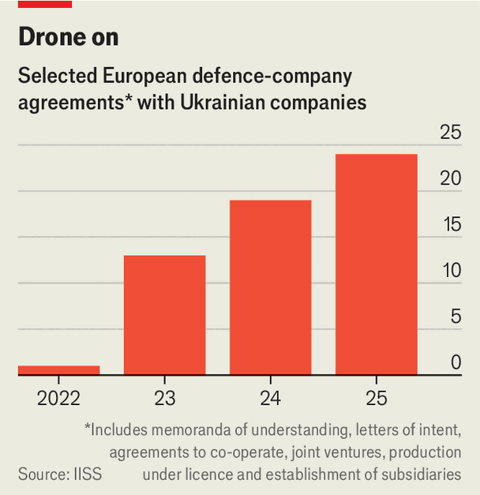
欧洲也在逐渐认识到其带来的好处。2025年，欧洲与乌克兰企业签署了超过20项协议，数量几乎是2023年的近两倍（见图表）。2月，四家乌克兰国防制造商与丹麦、芬兰和拉脱维亚的企业共同成立了合资企业。欧盟委员会已批准一项17亿美元的计划，旨在将乌克兰的国防工业与欧洲的国防工业整合。但欧洲僵化的国防部门和传统军工企业可能尚未准备好接受乌克兰所提供的东西。沃尔德温先生表示，他们仍习惯于以30年为周期的项目，并且需要繁复的监管流程。与乌克兰不同，那里在战斗中无法使用的装备会被迅速淘汰，而购买装备的机构与实际使用者之间缺乏联系。■
这一差距在3月27日《大西洋月刊》的一次轻蔑采访中被凸显出来，当时莱茵金属（德国最大的军火制造商）的CEO阿明·帕珀格（Armin Papperger）发表了相关言论。帕珀格将乌克兰的无人机技术比作“玩乐高积木”，称其由“家庭主妇”使用厨房里的3D打印机制造而成。舆论迅速反弹。莱茵金属道歉，称乌克兰的“创新实力与战斗精神”是“灵感的源泉”。帕珀格的言论可能是一次误导性的营销策略，旨在贬低竞争对手。他所在公司为德国军队订购的高价Skyranger反无人机系统已严重延迟交付。■ 修正（2026年4月14日）：本文先前版本错误地提到了2024年签署的协议数量，应为2023年。
要掌握欧洲最重要的新闻动态，请订阅我们的每周专属订阅简报《Café Europa》。■
§037 欧洲政策制定者再次玩弄能源价格 欧洲恐慌加速原题：European policymakers fiddle with energy prices, again · 板块：Europe · 栏目：欧洲
希伦·麦克恩蒂（Helen McEntee），爱尔兰国防部长，在军队被调遣协助处理抗议者后表示：“那里确实有真实的人存在，他们确实有真实的担忧。”抗议者用缓慢移动的车队堵塞道路，封锁燃料仓库、港口及该国唯一炼油厂。他们的不满，如同欧洲多数地区一样，源于燃油价格因海湾战争而飙升。抗议活动初见成效，政策制定者开始让步。爱尔兰政府计划推出5亿欧元（58.9亿美元）方案，削减燃油税，类似西班牙和波兰已实施的燃油税减免措施，德国也计划推出类似政策。
■
除了司机和卡车司机外，还有其他受益者。许多此类计划还包括对农民和渔民的燃油补贴。与此同时，欧盟委员会正考虑放宽其严格的国家援助规则，以允许广泛补贴。随着美伊在霍尔木兹海峡的对峙持续，欧洲政策制定者再次面临控制通胀、缓解家庭和企业压力、限制经济影响的压力。欧洲央行行长克里斯蒂娜·拉加德（Christine Lagarde）于4月14日表示，欧元区经济增长已低于该行的基准预测。同一天，国际货币基金组织（IMF）发布了更低的预测，预计欧元区今年及明年经济增长将仅略高于1%。■
然而，欧洲政客们试图保护消费者免受能源价格上涨影响的努力，表明他们并未从过去吸取多少教训。首先，汽油价格并不特别高昂。不考虑整体通胀水平而单纯对比过去价格，是一种常见的谬误。以实际价格计算，即跨时期可比的价格，目前汽油价格与2015年前十年的平均水平相当。在波兰，汽油价格比当时便宜约25%。此外，汽油在衡量通胀的消费篮子中仅占约2%，因此从经济角度看并无必要限制或降低其价格。柴油在一些国家占价格篮子的2%，其价格高于长期平均水平（见图表）。柴油还通过增加物流或农业成本，间接推高其他商品如食品的价格。■
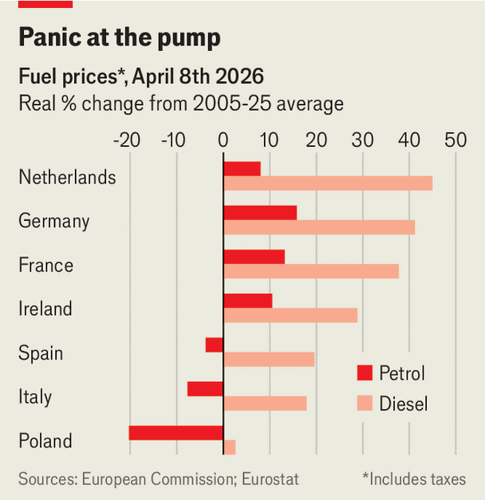
这反映出欧洲更深层次的问题，使价格上限政策更加棘手。尽管欧洲是汽油净出口国（主要原料为进口原油），但却是柴油和航空煤油的净进口国。“欧洲每天消耗约660万桶柴油，其中约120万桶为进口。”ICIS研究机构的迈克尔·康诺利（Michael Connolly）表示。这些进口中有一半来自中东。“库存正在消耗，但需求尚未削减。”航空煤油的情况类似。2022年欧洲曾将从海湾驶向亚洲的液化天然气货轮进行调配，但海湾关闭后，海上运输船数量大幅减少。此外，亚洲自身也无力提供援助，因其缺乏足够的原油以满足本国炼油厂需求。■
欧洲的“裂解价差”（即燃料相对于原油的价格溢价）已从俄乌冲突前的每桶10-20美元飙升至柴油每桶60美元，航空煤油甚至达到每桶100美元，根据ICIS的数据。如果海湾地区的供应短期内无法恢复，欧洲的油价仍需进一步上涨以抑制需求，从而与供应达到平衡。然而，价格上限反而加剧了问题，因为它们在补贴需求。政策制定者还有其他选择。对弱势家庭的收入支持是其中之一。但德国政府允许企业向员工发放免税奖金的计划，可能更有利于富裕阶层。另一个选择是法国的方案，该国将把国家补贴提高至每年100亿欧元，帮助家庭和企业实现电气化。■
将投资作为重点具有前景，因为资本支出通常会受到地缘政治和能源冲击的严重影响。美联储达里奥·卡尔达拉及其合著者的一项研究显示，乌克兰危机中暴露于冲突的公司大幅削减了投资。欧洲央行发现石油冲击会抑制资本支出和研发投资。政府不应采取自我否定的价格上限，而应尽可能增加投资。■ 为获取欧洲最大新闻资讯，订阅我们的周度专属简报《Café Europa》。
§038 巴勃罗·毕加索的《格尔尼卡》应悬挂于何处原题：Where should Pablo Picasso’s “Guernica” be allowed to hang? · 板块：Europe · 栏目：欧洲
巴勃罗·毕加索的《格尔尼卡》目前悬挂在马德里国家艺术博物馆中心，这幅巨幅画作以扭曲的肢体与痛苦的面孔为特征，是20世纪艺术的象征。若巴斯克民族主义势力得逞，从10月起该画将借展至毕尔巴鄂古根海姆博物馆，以纪念地区政府成立90周年及纳粹德国在西班牙内战期间对格尔尼卡实施空袭的90周年。此次空袭造成200至300名平民死亡。
马德里国家艺术博物馆（Reina Sofía）的回应得到了佩德罗·桑切斯领导的社会主义政府支持，认为这幅油画过于脆弱，不适合运输。但巴斯克地区对此并不买账，他们要求展开调查。巴斯克地区地方政府副首长表示：“我们希望了解这幅画返回巴斯克地区的最佳条件。”由于桑切斯政府依赖巴斯克民族主义议员的支持，巴斯克地区拥有一定话语权。事实上，《格尔尼卡》的“故乡”是马德里。这幅画于1937年1月由西班牙共和国政府委托创作，用于巴黎国际展览，当时西班牙共和国政府正与佛朗哥将军的民族主义势力展开斗争。这幅画是反法西斯和战争的普遍控诉。1981年，随着民主制度的恢复，这幅画才重返西班牙，正如毕加索生前所要求的。1992年，它被安置在马德里国家艺术博物馆（Reina Sofía），此后再未移动过。■
巴斯克地区的诉求得到了加泰罗尼亚社会主义地区政府的支持，这显得有些虚伪。位于巴塞罗那的加泰罗尼亚艺术国家博物馆迟迟未执行最高法院的命令，将12世纪的湿壁画归还给位于阿拉贡自治区边境小镇西吉纳（Sijena）的修道院。负责此案的法官最近给博物馆13个月的时间归还这些壁画。一些人认为西吉纳的争议受2017年加泰罗尼亚独立运动失败的影响。但这些争议背后更大的问题是，一个实行激进分权体制的国家是否能保留国家艺术收藏。或许在西班牙，艺术如同政治，注定要地方化。■ 要掌握欧洲最重要的新闻，请订阅我们的周度专属简报《Café Europa》。
§039 欧洲的欧尔班化：如何一个小型贫困国家的领导人对欧盟产生如此深远影响原题：Orban-proofing the EU · 板块：Europe · 栏目：欧洲
上一次欧洲小国选举让全球屏息等待是什么时候？或许可以追溯到2015年初，当时希腊选民将激进左翼联盟（Syriza）推上权力巅峰，赋予其逆转国家救助协议严苛条款的使命，但该党最终以惨败收场。15年前奥地利首次将极右翼政党带入欧洲联盟执政，这些事件曾给欧洲带来动荡。相比之下，匈牙利4月12日的选举则是一次保守力量的胜利，其力度之大，远超主流欧洲领导人所敢期待。■
在掌权的16年间，维克托·奥尔班（Viktor Orban）从欧盟的烦心事逐渐演变为搅局者，最终成为噩梦。彼得·马加尔（Peter Magyar）以压倒性胜利赢得选民支持，这些选民唯一共同点就是渴望摆脱一位导致国家破产并孤立本国的总理，这为饱受外部混乱和内部动荡打击的欧洲主流政治重新注入了一些信心。马加尔承诺逆转奥尔班部分国内政策的极端做法，恢复布鲁塞尔的建设性态度，并解除对乌克兰的援助障碍。“人们渴望欧洲！这真是一个转折点，”一位外交官欣喜地表示。然而，马加尔作为一位政治新手，其职业生涯大半在奥尔班领导的Fidesz党（匈牙利青年民主联盟）度过，能否兑现寄予厚望仍需观察。但在这片狂热中，欧洲其他地区却面临一些棘手的问题。■
匈牙利总理欧尔班是如何从一个贫穷小国的领导人变成欧盟的颠覆者，并成为民族保守主义的国际象征的？他的威权统治为何能在欧盟内部持续这么久？欧盟又该如何应对下一个欧尔班？首先，尽管存在诸多问题，欧尔班对政治风向的洞察力不容忽视。例如，当2015年来自叙利亚、阿富汗等地的难民开始涌入欧盟时，他比大多数人更早意识到选民会优先要求欧盟边境安全，而非接受布鲁塞尔制定的难民重新分配方案。欧尔班的言论充满种族主义和分裂性。■
然而，正如许多欧洲政界人士所承认的，他十年前修建边境围栏所体现的以安全为先的政策，如今已接近主流思维。这反过来强化了欧尔班（Orban）的信念，即一些民主国家正发展出对本土主义保守主义形式的胃口，这种保守主义对“政治正确”持怀疑态度，却对强人政治宽容。他在政治、媒体、大学及亲信企业领域巩固权力的成功，激励了欧洲乃至全球的民粹右翼组织。这也是为何J.D.万斯被派往布达佩斯支持他的竞选活动。“特朗普之前的特朗普”，史蒂夫·班农（Steve Bannon）称欧尔班。然而，这种比较仅限于一定范围，因为欧尔班若想在欧盟之外取得成功，或脱离“布鲁塞尔集团”（Brusselians）的支持，是不可能的。■
2010年上任后，他立即开始削弱匈牙利的制度完整性及其选举体系，同时利用每年超过GDP 3%的欧盟补贴培育依赖Fidesz的精英商业阶层。他在外交政策及其他决策上的否决权，也使匈牙利成为俄罗斯和中国的宝贵伙伴。欧盟在徒劳无功地尝试通过不可行的法律手段约束欧尔班后，才迟缓地学会将财政援助与条件挂钩——这一决定或许促成了他的落选。第三个原因是欧尔班在国际上获得的吹捧——最明显的是特朗普MAGA运动的同路人及其追随者，他们被布达佩斯的光鲜会议、国家资助的右翼智库以及以英国保守主义哲学家罗杰·斯克鲁顿（Roger Scruton）命名的咖啡馆所折服。■
鲜有人深入探究欧尔班政权的腐败根源，或他对克里姆林宫利益的奉承，亦或他对华投资的热络追求。许多人将匈牙利执政党青民盟（Fidesz）鼓励生育的政策视为移民替代方案，但更少人关注这项昂贵政策带来的惨淡结果。也鲜有人深入首都核心区域，目睹破旧医院与基础设施衰败的景象，这些才是欧尔班崛起的真正推手。除盟友外，还有其他外国人将欧尔班塑造得比实际更强大。一些对手因相信他所言的“威权民主”建设，竟将这位贪腐政权的领导人抬升为意识形态上的强大对手，与普京、习近平或特朗普并列提及。这种奉承对这位民族主义情绪强烈的国家的总理而言，显然大有裨益。
难怪欧尔班（Orban）乐于接受他们的敌意。若欧尔班赢得选举，或在选举后搞小动作，针对他的应急计划将启动。然而，一位接近欧尔班的匈牙利官员指出：“一周后他们将坐下来意识到，欧尔班的失败并未解决所有问题。”欧尔班虽对欧盟对俄制裁持怀疑态度，但下一轮针对俄影子舰队的制裁却遭到希腊、马耳他等海权国家的激烈抵制。众多欧盟领导人及马加什本人同样对加速乌克兰加入欧盟的进程持怀疑态度。据布鲁塞尔一位官员透露，欧尔班在95%的欧盟事务上与任何其他领导人并无二致。如何管理已加入欧盟国家的民主倒退问题，仍是未解难题。■
欧盟似乎注定无法借奥班（Orban）的离职评估自身弱点的希望破灭，因为领导人正忙于应对更紧迫的问题。一位欧洲官员表示：“我们都在凭感觉行事。”一切照旧。■ The Economist的订阅者可注册我们的Opinion通讯，汇集了最佳的社论、专栏、特稿及读者来信。
§040 英国改革党正重组鲍里斯·约翰逊的选民联盟原题：Reform UK is reassembling Boris Johnson’s electoral coalition · 板块：Britain · 栏目：英国
“我喜欢鲍里斯，”诺福克郡威明顿镇的小企业主兰迪女士说。她称这位前首相为“鲍里斯”。她说：“我认为他是在为英格兰工作。” 如果约翰逊式的保守主义有其核心地带，或许就是诺福克郡。2019年，在他的领导下，保守党在该县赢得了历史上最高得票率（58%），位于英格兰东部隆起地带。这位滑稽的前记者得到了传统保守派的支持，包括威明顿镇等乡村城镇的选民、盖特威克等工业衰退地区的工作阶级选民，以及诺里奇——该县唯一城市——的郊区居民。
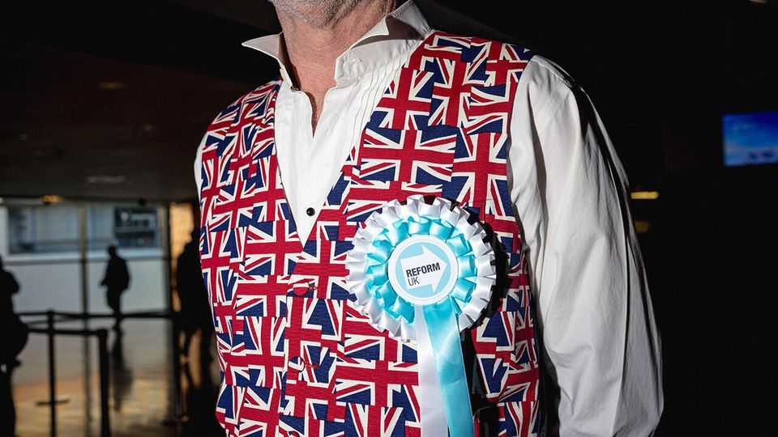
七年后，琳达正考虑投票给改革英国党。五年混乱的政府执政导致保守党在2024年遭遇压倒性败北。在废墟之上，尼格尔·法拉奇正组建起与约翰逊当年相似的选民基础。根据《经济学人》对全国民调的追踪显示，改革英国党的支持率约为25%。该党可能在5月7日的选举中赢得超过2000个5000个待选的议会席位，届时约半数英格兰选民将拥有投票权。根据2025年5月进行的英国选举研究，近三分之二的改革英国党支持者在2019年曾投票给保守党（见图表1）。即便是在2024年支持工党的选民中，如今表示将投票给改革英国党（这一群体在工党议员心中占据重要位置），他们中同样有相当数量的人在2019年投给了约翰逊的保守党，而非工党。那么，这些选民究竟是谁？■
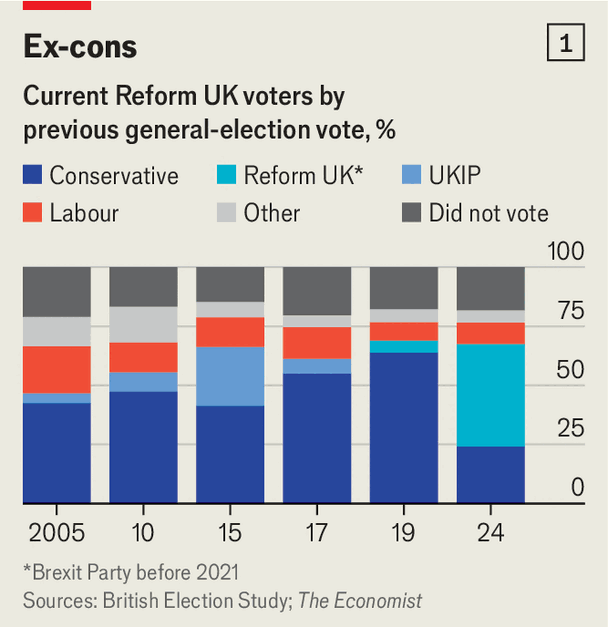
《经济学人》分析了莫尔·因·共同（More in Common）在2026年1月至4月期间收集的超过37,000份调查回复，以了解相关情况。正如2019年约翰逊的选民一样，改革党（Reform）的支持者往往教育程度较低、年龄在中年或以上且为白人。他们自认为属于工薪阶层（尽管部分人经济状况富裕）。2016年，近四分之三的选民支持脱欧。要追踪这些选民的轨迹，回顾约翰逊的命运会有所帮助。保守党在2019年7月英国脱欧僵局最严重时选中约翰逊担任党魁和首相，以应对法拉奇（Nigel Farage）的脱欧党（Brexit Party，改革党的前身）的挑战。这一策略奏效了，约翰逊于2019年12月赢得大选，打破僵局并带领英国脱离欧盟。不幸的是，保守党并未为后续发展做好规划。■
约翰逊在新冠疫情暴发期间被曝光在10号府聚会，违反防疫规定。他的首相任期迅速沦为闹剧，期间充斥着荒诞不经的传闻（如他与生日蛋糕的“伏击”事件）以及笨拙的应对。2022年9月，他被莉兹·特拉斯取代，但这位首相任期仅持续49天便遭遇灾难性失败，最终由里希·苏纳克接任。然而苏纳克也未能挽救保守党在2024年7月遭遇的惨败。约翰逊留下的遗产成为法拉奇的礼物。首先便是移民问题——改革党的核心诉求。2019年选民曾理解，投票给约翰逊即是在推动脱欧进程。脱欧几乎等同于减少移民。但实际结果却相反，净移民人数在2023年3月前一年达到峰值944,000人（相较2019年底的184,000人）。■
在约翰逊先生执政期间，穿越英吉利海峡的小船抵达人数——改革党的核心议题——一年内攀升至近5万。根据民调机构Ipsos的数据，认为移民是其首要关切议题的民众比例，从2019年12月的14%跃升至2025年9月的51%。改革党的支持率随之同步增长。与此同时，英国公共服务体系持续恶化。疫情期间医院候诊名单激增且长期居高不下，地方议会疲于应对财政危机，社会护理体系因此受损，选民难以预约家庭医生。工党在2024年大选中主要依靠民众对公共服务的不满（以及对保守党的愤怒）赢得胜利。■
最近，伦敦政治经济学院、牛津大学和IE大学的学者发表的一项研究指出，2013年至2023年间关闭家庭医生诊所的地区选民——尤其是移民比例较高的地区——更倾向于转向民粹右翼。若约翰逊的选民因对其他政党的不满而在2019年支持他，如今他们已感到沮丧。“我对借口不感兴趣，”威明顿的退休人士弗兰克说道，“我认为保守党有更正确的想法，比工党更正确，但他们就是做不到！”他现在正考虑加入改革党。对改革党感兴趣的选民反复提到：“我们试过保守党，试过工党，为何不试试改革党？”英国选民一向理性。或许该轮到法拉奇了。前保守党人的涌入使改革党如今代表了两种截然不同的选民群体。■
核心选民（约占整体选民的10-15%）真正激进。他们倾向于支持唐纳德·特朗普，对2024年8月破坏英国城市的暴徒表示同情，并对移民问题感到愤怒。威明翰的改革党支持者比尔称气候变化是“世界历史上最大的骗局”，担心“既得利益集团”会阻止改革党执政。他说：“工党称我种族主义者，还叫我猪。”（他并未说明是谁称他为猪。）第二类人数更多，更接近2019年保守党的特征。他们同样反移民——尤其担忧小船移民——但还有其他动机。琳达说：“我认为改革党更专注于保护企业，尤其是小企业。”弗兰克则担心领取福利的人数过多。■
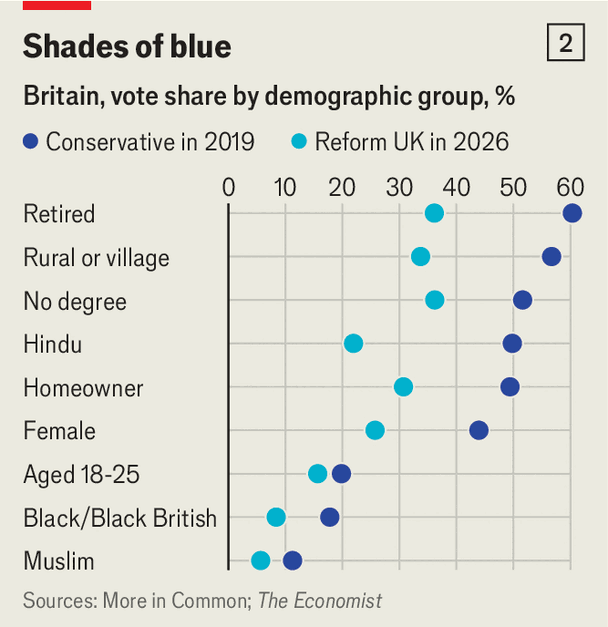
与他们担忧的英国核心支持者一样，改革党支持者也忧虑英国的衰落，但他们并不认为国家机构应“烧毁”——这一立场有17%的改革党支持者强烈认同。正如2019年一样，他们希望选举一个能让自身少操心政治、而非彻底颠覆政治格局的政府。若法拉奇（Farage）想成为首相，他必须让这些新支持者满意。他们不会容忍特朗普（Trump）对美国造成的动荡，法拉奇激进的作风也可能吓退他们。该党已淡化了可能令债券市场不安的减税和支出承诺。它支持国家资助养老金的三重锁定机制（即保证养老金涨幅至少与工资、通胀或2.5%中的最高值同步），向老年选民传递改革党是安全选择的信号。然而，通往权力的道路仍不稳固。■
改革党目前的25%支持率远未达到约翰逊先生2019年获得的45%。残余的保守党支持率（约19%）比法拉奇可能预期的更为顽固。与约翰逊2019年的数据相比，改革党的薄弱环节包括少数族裔、退休人员、房主和女性（见图表2）。威蒙德姆镇的一些选民认可改革党的政策，却反感法拉奇。“如果他上台，我认为他根本不知道该怎么做，”一名保守党支持者萨拉德说。另一人则称他“是个疯子”。自9月以来，改革党的全国民调支持率已下降约五个百分点。法拉奇在伊朗问题上的立场转变并未带来帮助。在建议政府加入美国战争后，他试图与特朗普站队的本能遭遇了公众舆论的反噬。“我确实对他的美国关系，尤其是与特朗普的关系感到疑虑，”琳达说。■
仅有13%的英国人自称为“支持特朗普”（70%的人认为改革党是支持特朗普的政党）。诸多议题可能在改革党内部的激进派与温和派之间制造类似的分歧。法拉奇的对手们无疑会试图利用这些分歧。即便如此，这个新兴政党在过去一年中始终领先多数民调——这是首次在持续的民调中取代工党与保守党成为领先者。地方议会选举势必会为它带来好消息。2022年上次地方议会席位选举时，改革党的民调支持率仅为4%。要观察右翼政治格局的变化，不妨关注诺福克郡。■ 如需了解英国重大新闻的深度分析，请订阅我们的周度专属简报《Blighty》。
§041 英国选民政治上愈发不忠 | Swingtime politics原题：Britons are more politically promiscuous than ever · 板块：Britain · 栏目：英国
英国
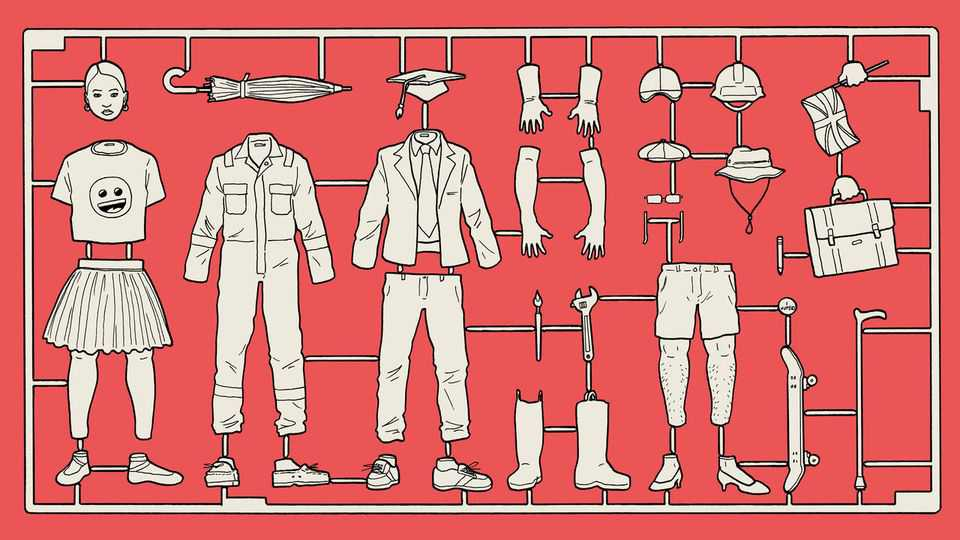
英国政治中保守党与工党长达百年的双头垄断正在消亡。在2024年大选中，这两个政党吸引了57%的选票，这是自1910年代以来的最低纪录，当时工党尚处于萌芽阶段。如今，根据民调，他们合计仅获得38%的潜在选民支持（大致平分秋色）。然而，没有哪个政党能独占鳌头：自由民主党得票率为12%，绿党17%，改革英国党25%。选民们正保持开放态度。
■
《经济学人》利用More In Common这家民调机构的数据，构建了一个模型，通过八个人口特征——性别、年龄、种族、地区、教育程度、就业状况、住房类型以及城乡居住地——来计算选民支持政党的概率。我们为英国5500万成年人的每个特征生成了275,000种排列组合。研究发现，过去两年内，转向此前投票支持的政党之外的选民数量达到历史最高水平。这在一定程度上归因于工党在2024年大选后的支持率迅速流失。以工党最不忠诚的选民群体为例：东南部地区的年轻黑人女性学生。2024年工党吸引了约四成他们的选票，而如今不到五分之一的受访者表示会支持该党（工党对加沙的政策促使许多人转向绿党）。■
如今，仅2%的成年人更倾向于支持工党，这一比例较2024年有所上升（如西米德兰兹地区的中年亚洲女性便是其中一类群体）。工党的弱势主要惠及了极左的绿党和极右的改革党。目前，超过九成的英国人更可能将选票投给这两个党派，较2024年明显增加。然而，改革党的典型选民变化不大——仍是一个受教育程度低、年长的白人男性，居住在英格兰南部城镇。相较之下，绿党的典型选民则变得更年轻且更城市化。如今，绿党成为28岁以下群体中最受欢迎的政党，这一地位在2024年时仅为第三。政治不忠现象的影响也清晰体现在选民特征预测力的变化中。■
2024年，若某人自认是黑人，在其他条件相同的情况下，其投票支持工党的概率比其他选民高出25个百分点。如今这一差距已降至16个百分点。年龄因素——此前最能预测保守党支持者的关键变量——影响力也从17个百分点缩减至10个百分点。政党忠诚度已成明日黄花。2024年，曾于2019年投票的英国选民中，有40%转向其他政党，这是自1930年代以来的最高比例。若今日举行大选，按我们的计算，近半数选民将改变投票意向。2024年，约有250万人对某党支持率超过60%。如今这一群体仅剩60万人。约五分之一英国选民的投票倾向被四个及以上政党各拥有15%的可能获得其选票。■
这将使依赖精准定位潜在支持者的竞选活动变得更加困难。英国的选举制度并非为这种行为而设计。由急躁选民主导的政治——他们从一届选举到下一届总是迅速转向最新的热门事物——会让大多数人感到失望。不满情绪往往会加剧不信任。5月7日的地方选举，届时工党预计将失去数千个市议会席位，将是这一新时代首次真正的考验。■ 了解更多关于英国重大新闻的专家分析，请订阅我们的周度专属简报Blighty。
§042 新立法将限制英国改革党最大的资金来源 英国改革党捐赠者原题：New legislation will restrict Reform UK’s biggest source of money · 板块：Britain · 栏目：英国
不仅民调领先，改革党还在筹款竞赛中遥遥领先。2025年，这个民粹右翼政党获得的单笔大额捐款——即超过年度累计11,180英镑（15,010美元）的捐款门槛——比英国其他任何政党都多（见图表）。改革党筹集了超过1860万英镑，约为工党总额的两倍，比保守党多500万英镑。该党五大个人捐赠者中有三人曾向保守党捐款。绿党仅筹得35万英镑。但即便在这些大额捐赠者中，改革党的捐赠池仍呈现结构不均。 ■
2025年，保守党收到近600笔捐款，每笔中位数为5000英镑（部分捐款超过累计申报门槛）。尼格尔·法拉奇领导的政党仅获得196笔捐款，但中位数达1.9万英镑。改革党的资金中有三分之二来自泰国的加密货币亿万富翁克里斯托弗·哈伯恩，他贡献了1.2亿英镑。这相当于任何政党中由个人或公司单笔捐款前十大金额的总和。正是由于哈伯恩的支持，法拉奇才成为首位接受加密货币捐款的欧洲主要政党领导人。然而，工党政府计划限制外国资金流入政党组织。上月，政府发布了由公务员菲利普·里克罗夫特爵士撰写的关于英国政治中外国影响力审查报告。■
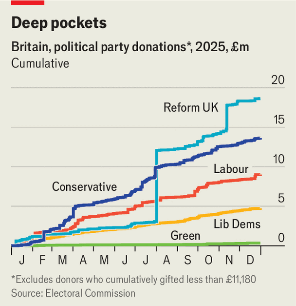
《人民代表法案》（该法案除其他改革外，还将赋予16岁青少年投票权）包含两项关键建议。第一项是暂停加密货币捐款，直至相关交易实现更高透明度。第二项则对海外英国公民（如哈伯恩先生）的捐款设定10万英镑上限。经此改革后，哈伯恩先生的捐款额度将不足其2025年总捐款的1%。菲利普勋爵表示，其报告的意图并非针对任何特定政党。但对工党而言，这两项建议恰好对其当前视为主要竞争对手的政党产生最大影响。该法案最终对改革党的打击程度仍有待观察。■
另一位在海外的加密货币亿万富翁今年早些时候向改革党捐了400万英镑，他表示将返回英国，以便继续向该党捐款。■ 订阅我们的周报Blighty，获取更多关于英国重大新闻的专家分析。
§043 工党难以安抚英国愤怒的毕业生 英国原题：Labour will struggle to placate Britain’s angry graduates · 板块：Britain · 栏目：英国
近年来，英国政界人士一直在对英格兰的学生贷款体系进行修补——往往以增加毕业生负担的方式进行，却几乎没有遭到反对。去年11月，工党宣布了自己对还款条款的巧妙调整，可能认为这些改动也会像其他调整一样顺利通过而不会引发争议。然而，这些微调反而暴露了深藏的不满情绪，并引发了对全面改革的呼声。如同未做好准备的学生面对研讨会，工党正陷入应对困境。其对手表示将帮助毕业生：保守党承诺削减学生贷款利率；绿党则长期主张彻底清偿学生债务。
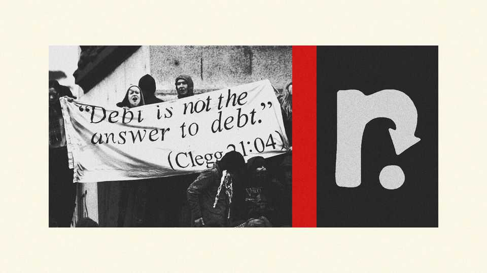
上月财政大臣拉切尔·里夫斯（Rachel Reeves）承认学生贷款体系“已崩溃”，但补充称修复它无法成为优先事项。4月7日工党宣布将对学生贷款利息实施12个月的上限——这是一项临时性措施。然而，工党越拖延对体系的深层反思，未来被迫进行更昂贵改革的风险就越大。争议焦点在于2012年至2022年间入读大学的“Plan 2”贷款计划学生（2012年英国大学学费上限三倍增至9000英镑/年，约合12000美元/年）。这些于2025年毕业的学生平均负债达53000英镑。在英国，本科生贷款金额远超其他国家。即便在美国这种高消费国家，每位借款人的平均债务也仅约3万美元。英国家庭较少为教育储蓄，且大学学费普遍高于美国同行。■
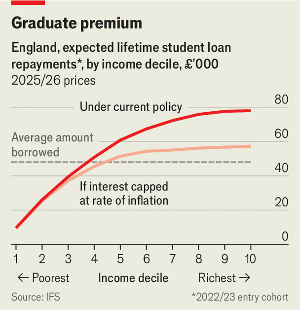
根据Plan 2贷款计划，毕业生需在年收入超过29,385英镑的门槛后，按收入的9%偿还贷款。30年后未偿还部分将被注销。利息根据借款人收入水平浮动。收入较低的毕业生需按零售物价指数（RPI）涨幅偿还债务（RPI高估通胀）；收入较高的毕业生则按RPI加3%计息。收入较高的毕业生的额外还款则用于资助那些预计无法偿还贷款的同班同学的债务减免（见图表）。部分毕业生对月供金额表示不满。年收入35,000英镑的毕业生每月需支付42英镑，年收入70,000英镑的毕业生则需支付超305英镑。首批Plan 2贷款借款人如今已步入30岁，开始在媒体和政界从事工作，有机会让更多人了解他们的困境。
更激烈的批评是，由于利息支出，许多毕业生发现即使持续还款，贷款余额仍不断上升。疫情后通胀远超贷款体系设计者预期。一名背负5万英镑债务的毕业生，若仅偿还最低额度，需收入超过6万英镑，贷款余额才开始以实际现金价值减少。高收入毕业生愤慨他们被额外征收利息，以资助那些选择专业不当或选择不工作的同龄人。若这些补贴确实存在，以一般税收作为资金来源似乎更为公平。第三项批评是政府反复修改还款条款。2012年最初的承诺是还款门槛将随平均工资同步上涨。■
但2022年，鲍里斯·约翰逊政府将该政策冻结三年，并将未来调整方式改为更为苛刻的方法。随后，工党又进行了调整：11月宣布实施新一轮三年冻结。在两次调整中，政界人士同时冻结了决定毕业生支付利率的收入门槛——使更多人承担较高利率。这些调整虽为政府节省了开支，却大幅增加了毕业生的总还款金额。英国财政研究所（IFS）表示，一名2022年初申请大学的学生原本预计需借贷约48,000英镑，并在按当前货币价值计算的终身还款中支付约40,000英镑。但因追溯性调整，如今预计还款额将升至约56,000英镑。
■重塑偿债计划（Rethink Repayment）这一游说团体希望降低贷款利率、提高还款门槛，并将还款率从9%降至5%。但此举将令政府耗费巨资：根据IFS（财政研究所）的凯特·奥根（Kate Ogden）测算，仅2022届学生群体的长期成本就达120亿英镑，而计划2（Plan 2）的借款者尚有十个届次。那么政府该如何应对？或许可考虑较小规模的减免措施，例如仅调整该计划中的三个杠杆之一。高实际利率是当前体系中最不受欢迎的部分。然而对工党而言，降低利率的受益者将主要为高收入群体。因为低收入毕业生可期待大部分债务被免除，他们将无需支付大部分新增至账户余额的利息。
政府可能更倾向于降低毕业生的月度还款额——无论是通过撤销计划中的还款及利息门槛冻结措施，还是降低还款率。理论上，通过延长学生等待宽恕的时间，这一调整可以实现成本中性（尽管可能引发新的争议）。获得学士学位仍能为大多数人带来更丰厚的收入（尽管溢价不再像过去那样显著）。因此，毕业生承担其学位成本的大部分仍属合理。然而，社会也从培养高素质人才中获益——过去几年，资金分配的平衡似乎已严重失衡。2012年设立的计划2贷款体系（Plan 2）被接受为纳税人最终将承担学生学费和生活费的约40%。
根据英国财政研究所（IFS）的数据，十年后，公共资金将仅占2022年入学群体教育总成本的3%。英国学生贷款体系的支持来之不易。近年来的微调已消耗了大量公众信任。若忽视当前的不满情绪，这些情绪很可能会演变为大规模的债务减免运动；这不仅成本高昂且缺乏公平性，更会加剧社会不平等。英国的贷款体系中，大部分仍值得捍卫。适度调整或许是明智之举。■ For more expert analysis of the biggest stories in Britain, sign up to Blighty, our weekly subscriber-only newsletter.
§044 英国是否送太多人上大学原题：Does Britain send too many people to university? · 板块：Britain · 栏目：英国
2012年英国政府将本科生学费上限三倍提高时，批评者担心年轻人会放弃上大学。他们大可不必担心。入学率持续上升。到2024年，约60%的英国年轻人拥有某种后学历资格，比学费上涨时的48%有所上升。仅有五个富裕国家拥有更高的比例。如今的担忧是，大学正在招收超过合理数量的学生。围绕学生债务的争议重新点燃了关于系统中充斥着“低价值”学位的旧有说法。 ■
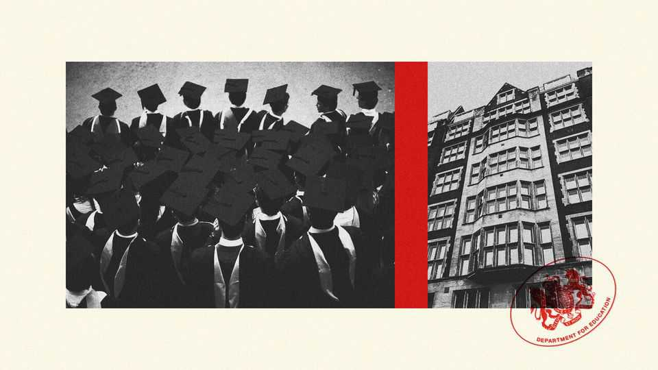
保守党主张英国应每年减少约10万名进入高等教育的学生（2024年有652,525名英国人开始本科课程）。他们认为此举可节省资金，用于降低现有毕业生债务利息。关于“无效学位”的讨论分裂为两个议题。第一个议题聚焦于竞争激烈的新生争夺战中，大学是否将入学门槛大幅降低至不合理的水平。2024年，超过10%的全日制本科新生（即无A-levels或同等资格）较十年前仅约3%显著上升。数据显示，约四分之一此类学生中途退学，远高于平均水平。第二个议题则关注选择那些无法带来显著收入提升的学科的学生。■
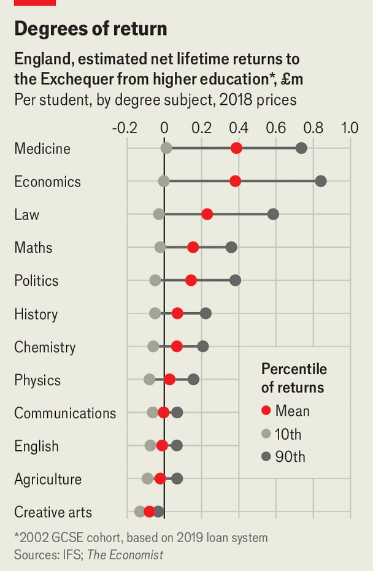
2020年，财政研究所（Institute for Fiscal Studies）分析了教育和收入数据，得出结论：扣除成本后，约有五分之一的大学毕业生终身经济状况会因未上大学而更好。这一结论适用于大多数从事创意艺术领域的毕业生（约7%的本科生就读此类专业），以及大量学习农业和英语专业的学生。这些学生更可能面临债务被注销（未偿还部分在30或40年后自动注销）。这会提高整个教育体系的成本（见图表）。2019年的一项研究预测，拥有创意艺术学位的人仅能偿还所借金额的四分之一。因此，限制这些本科课程的招生人数或许能节省纳税人的开支。然而，这一想法令一些人担忧，他们警告此举可能阻碍英国在相关领域的人才供应。■
如需了解英国最新重大事件的权威分析，请订阅我们的周度专属通讯《Blighty》■
§045 威尔士的发明 英国原题：The invention of Wales · 板块：Britain · 栏目：英国
作家珍·莫里斯（Jan Morris）在晚年成为热情的威尔士民族主义者。在她较少为人知的作品中，她想象了21世纪初一个独立的威尔士。其首都是马奇纳莱思（Machynlleth），一个位于威尔士中部人口仅2,163人的小镇。因为15世纪的威尔士士兵欧文·格林杜尔（Owain Glyndŵr）曾在此地反抗英格兰，短暂实现了“威尔士的复兴”。即便在像莫里斯这样的作家笔下，想象中的威尔士独立故事也难以吸引读者。她的出版商曾警告她：苏格兰人物的“销售潜力更大”。这本作品是她唯一一本未能引发读者来信的出版物。 ■
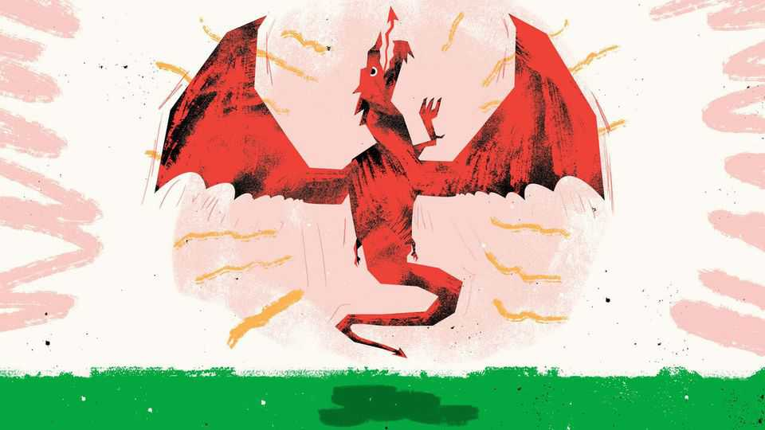
在今日的马奇纳莱思（Machynlleth），欧文（Owain）议会遗址上坐落着一座小型博物馆，专门纪念威尔士王子及“格林多咖啡店”（Caffi Glyndŵr），后者以王子高举香肠的标志为店徽。然而，到了五月份，曾是莫里斯（Morris）最热切构想的独立设想将迈出实现的关键一步。支持独立的威尔士党（Plaid Cymru）很可能在威尔士议会选举中成为最大政党。民调机构More In Common表示，约32%的威尔士人口支持独立。 scarcely a decade ago，支持率难以突破双位数，将独立提案置于“猫王还活着”的舆论范畴。如今，支持率大致与2014年苏格兰公投前的选民比例相当，引发数年的宪政争议。然而，对于大多数人而言，独立的威尔士仍难以想象。■
对于一个古老的地方，威尔士却是个现代国家。其国家形态的外在表现尚属年轻：卡迪夫（Cardiff）被定为首都是在1955年，其旗帜被正式承认是在1959年，边境线直到1974年才形成如今的样貌，而威尔士议会自1999年设立以来，直到2011年才真正获得完整的立法权。威尔士政府掌握的权力不过是国家形态的软性边缘，它掌控教育、医疗和（部分）交通事务，而那些尖锐的权力——比如监禁公民——仍由伦敦保留。苏格兰独立则属于制度考古学范畴，挖掘那些始终存在的制度遗产。当苏格兰与英格兰合并时，它始终紧握着国家象征：教会、法律体系和教育体系。而在威尔士，独立意味着制度创新，构建一个此前（欧文王子努力除外）从未真正存在过的国家形态。■
形势已发生变化。尽管多数威尔士选民（与苏格兰不同）支持脱欧，但2016年的脱欧公投却引发了“仅威尔士人”身份认同人数的激增。随后新冠疫情更像一场国家认同的前奏，曾因历史原因而灵活的边境如今变得稳固。时任工党威尔士首长马克·德拉福德（Mark Drakeford，一位骑自行车、吹单簧管、穿宽松毛衣的绅士）威胁要阻止英格兰人进入威尔士。为何来自他国的第二家园业主能自由地将病毒带入我的国家？传统上，威尔士独立的最大障碍始终是威尔士人自身。1979年公投中，选民以四比一的差距否决了自治议会的设立。弱化版的自治权尝试屡屡受挫，1997年仅有50.3%的威尔士选民支持威尔士议会。■
废除派希望将权力从卡迪夫返回威斯敏斯特，但至今仍是喧嚣的少数群体。就连威尔士分离主义者也并未真正热衷分离主义。在威尔士党（Plaid Cymru）存在大部分时间里，该党都回避使用“独立”一词。该党创始人之一索恩斯·刘易斯（Saunders Lewis）曾认为，保持威尔士文明——尤其是其丰富的语言——的活力与自由远比粗鄙的政治权力重要。卡迪夫大学的理查德·温·琼斯（Richard Wyn Jones）指出，威尔士党直到2003年才正式将“独立”纳入其宪法目标。在许多方面，他们仍显得无动于衷。民调机构More In Common表示，约2%的威尔士人认为独立是任何新政府的首要任务，这一比例在威尔士党支持者中攀升至3%。尽管支持率有所上升，但独立对威尔士党的崛起而言只是附带现象。■
该党成为了一个共识点，吸引那些反对尼格尔·法拉奇的改革党在威尔士或英国议会掌权的进步选民聚集。然而，对于由威尔士民族党执政的任何国家而言，独立的威尔士才是其首选目标。忽视这一点在政治上就如同翻阅《花花公子》只为文章内容，却惊讶地发现下一页竟是一具裸体女性。威尔士民族主义者兼诗人哈里·韦布在20世纪70年代曾断言——略显仓促——“威尔士正倒退式地迈向独立，所有人都急切地假装我们正前往别处。”这种惯性在政治中是一种强大势力。不过，英国议会中鲜有人真正理解这一点。■
苏格兰独立的想法让人皱眉，威尔士独立则引发笑声。“我认为威尔士比苏格兰更可能率先脱离联合王国，”前保守党威尔士办公室特别顾问劳伦·麦克埃瓦特在评论中指出，该言论被独立运动支持者兴高采烈地传播。这并非源于任何宏大的宪法斗争，而是忽视、轻视与嘲笑的累积效应最终显现。英国政治正进入离心趋势。在五月份大选后，联合王国每个自治地区都将由寻求废除该地区的政党执政。在北爱尔兰，曾被视作对英国政权构成威胁的“新芬党”如今已成为该地区最大政党。而苏格兰民族党（SNP）即将迎来其第三个执政十年。■
即便在苏格兰民族党（SNP）频传丑闻之后，独立运动在最新民调中仍保持微弱领先。而在威尔士，曾被视为异想天开的文学梦想正逐渐演变为愈发荒诞的现实。■ The Economist 订阅者可注册我们的 Opinion 通讯，汇集最佳领袖评论、专栏文章、特稿及读者来信。
§046 海湾地区的停火协议经常被打破，但它们仍能发挥作用原题：The game theory behind violating ceasefires · 板块：International · 栏目：国际
海湾地区的停火协议经常被打破，但它们仍能发挥作用。美伊之间的停火协议从一开始就充满暴力。在4月8日宣布停火协议后，以色列加强了对黎巴嫩真主党武装的轰炸（以色列称此举未被纳入停火协议）。停火协议生效的最初几个小时，伊朗向海湾其他国家发射无人机和导弹。巴林称其本周早些时候遭伊朗代理人武装袭击。伊朗尚未恢复霍尔木兹海峡的正常航运，特朗普总统已指示美国海军实施自己的封锁。对许多人来说，这并非停火协议应有的样子。■
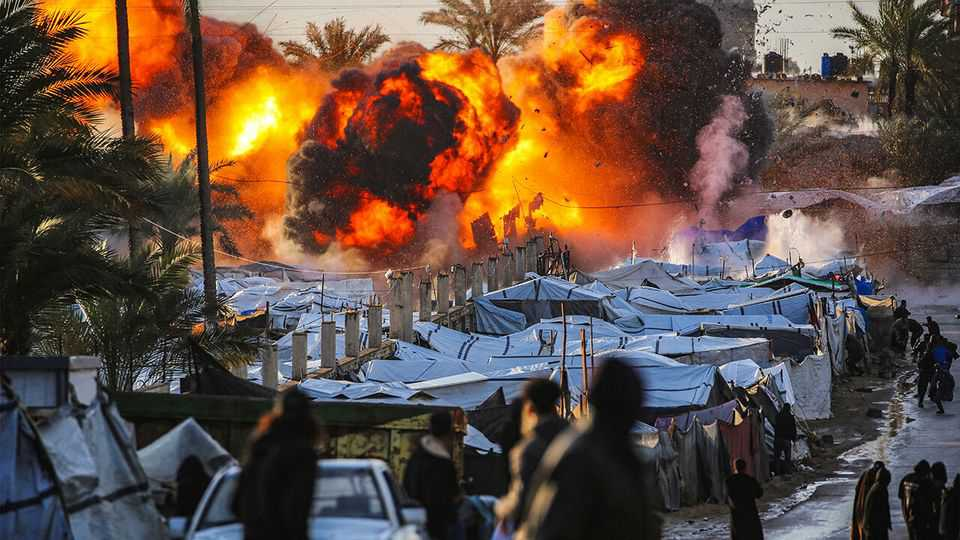
尽管违反协议可能考验脆弱甚至短暂的停火协议，但未必会彻底破坏谈判进程。停火协议历史上经常被巧妙地违反，却未必会完全倒退回全面战争状态。例如，结束加沙冲突的协议在官方层面仍有效（至少在六个月后），尽管以色列本周仍有空袭发生。《经济学人》从武装冲突地点与事件数据库（ACLED）收集了数据，统计了2020年后中东及周边国家达成的九次停火协议前后60天内共12,333起暴力事件。尽管停战协议减少了冲突，但没有一次导致暴力完全停止（详见图表）。平均而言，停火开始后30天内的致命事件比停火前30天下降了81%。
2020年亚美尼亚-阿塞拜疆达成停火协议后，仅偶有零星冲突，这是九次停火中最成功的（尽管2023年曾短暂重新爆发战斗）。相比之下，以色列与哈马斯在2023年底及2025年1月至3月间的临时停火协议在结束时冲突迅速回升至停火前水平。大多数停火协议介于这两者之间。在这些情况下，停火生效后暴力活动立即下降，但从未归零。在一些案例中，较低的暴力水平得以维持；在另一些案例中，暴力活动逐渐回升至接近停火前的水平。苏黎世联邦理工学院安全研究中心的Valerie Sticher认为，即便停火协议无法完全阻止所有违规行为，也不意味着其毫无意义。■
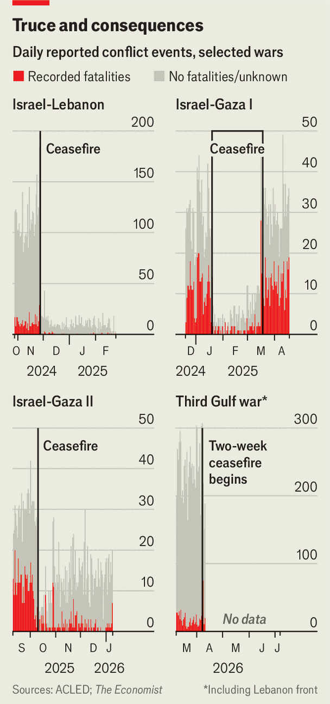
她指出，停火协议往往并非单纯的仁慈行为，而是一种战略博弈的手段，旨在重塑冲突的条件。借用19世纪普鲁士军事战略家克劳塞维茨的表述，或许更应将停火视为战争以其他形式的延续。许多停火协议的违反是意外发生的。交战双方在战场上不慎发生碰撞，或一方的不满分子故意挑动暴力以破坏和平谈判。但第三次海湾战争似乎并非如此。尽管伊斯兰革命卫队的分散指挥结构理论上允许个别指挥官破坏谈判，但近期被伊朗国家媒体证实的袭击行动似乎得到了政权领导层的全力支持。■
那么，伊朗停火协议签署后的第一周出现的违反行为又该如何解读？一种解释是，各方有意违反停火协议以获取战略优势，并随后采取报复行动以遏制对方的违规行为。关于停火协议博弈论的文献表明，暂停全面敌对行动的协议会设定一个阈值，低于该阈值的攻击仍可继续。这一阈值的具体水平往往难以确定，但双方通常通过“针锋相对”策略加以管理，即每方挑衅行为都会引发等量反击。以黎巴嫩为目标的以色列袭击，或伊朗代理人实施的袭击，能够对谈判桌上的对手施加压力。一旦攻击超过这一阈值，停火协议可能完全破裂，局势将重新回到协议签署前海湾地区观察到的激烈升级态势。
这些违规行为也可能反映出美国、以色列、伊朗和真主党（Hizbullah）的策略制定者们数十年来对低强度冲突惯例的深刻理解。尽管伊朗自1988年以来直至去年未发动过常规战争，但其在低强度冲突中积累了丰富经验，往往即便在正式停火协议下也持续进行。伊朗与真主党学会了如何让弱势一方创造所谓“威慑方程式”：通过以牙还牙的攻击方式，隐性地确立默许的红线。真主党会对以色列的攻击（反之亦然）以相同数量的火箭弹和伤亡人数进行报复——有时甚至在同一天的同一时间。希伯来大学杰里米亚大学的丹尼尔·索伯曼（Daniel Sobelman）称，黎巴嫩与北部以色列长期冲突是“伊朗的战略实验室”。■
相互停火违反使真主党得以牵制以色列这一远为强大的对手，而不会引发全面战争。当第三次海湾战争展开时，伊朗国家媒体称该国希望重置其威慑方程式。伊朗反复承诺，将以对民用基础设施的袭击相匹配，对海湾地区的能源基础设施和海水淡化厂实施报复。这促使特朗普退缩，放弃了他最极端的威胁。这些威胁，加上霍尔木兹海峡的封锁，削弱了美国升级冲突的能力，并在伊朗与美国的对抗中引入了“对等性”，索伯曼表示。当升级动态结束，对话便可开始，曾以色列情报官员达尼·西特里诺维奇表示。停火为各方提供了重新校准的机会，若非结束挑衅。■
停火协议往往能带来更持久的和平局面。停火协议研究项目（Ceasefire Project）统计了1989年至2020年间宣布的2203项停火协议。其中约半数协议在未重燃战火的情况下结束，或在研究结束时仍有效；三分之一的协议最终失败。中东地区的停火协议是所有地区中最脆弱的。该地区360项有明确期限的停火协议中，超过半数最终失败。研究人员发现，协议在初期最为脆弱。尽管特朗普（Trump）自信地预测，他促成的以色列与伊朗伊斯兰共和国在12天战争后于2025年6月达成的停火协议将“永远”持续，但美国在2月恢复对伊朗轰炸的决定表明，即便短期成功也未必能确保持久和平。第三方监督有助于提升停火协议的持续可能性。■
多国包括美国在内，自加沙停火开始以来一直在以色列派驻观察员。但伊朗战争的情况不同，因为美国是直接参战方，因此不太可能允许第三方监督其在该地区的存在。这令人担忧，因为达成和平协议的过程可能充满挑战。1998年结束北爱尔兰冲突的《贝尔法斯特协议》谈判耗时700天。将谈判延后有助于延长停火状态，但也可能推迟冲突的解决。例如，加沙停火仍停留在“第一阶段”，双方未能就更持久的解决方案达成一致。朝鲜战争自1953年以来一直处于暂停状态，但尚未签署正式和平协议。美国正考虑延长当前停火状态，以争取更多谈判时间。■
令人费解的是，双方重返战争的意愿——包括通过违反停火协议以在谈判中获取筹码——本身也成为谈判桌上的筹码。以色列方面对战争持续感到满意，伊朗似乎更倾向于战争而非糟糕的协议。“如果特朗普决定重启战争，伊朗也会跟进，”Citrinowicz先生表示。“伊朗就像一位扑克玩家，不仅跟注，还加注。” ■
§047 若霍尔木兹海峡持续封锁，数百万民众将面临饥饿危机原题：Millions will go hungry if the Strait of Hormuz stays closed · 板块：International · 栏目：国际
单靠一次封锁已足够糟糕。伊朗封锁霍尔木兹海峡，已推高石油、天然气和化肥等商品的价格。4月13日，美国自行实施封锁，阻止伊朗此前允许通过的少数船只，这无疑将进一步加剧问题。商品价格再次上涨，令司机和农民都感到沮丧，后者需要化肥用于农田和柴油用于拖拉机。部分农民减少种植或施肥，这不可避免地意味着今年晚些时候收成减少。食品价格开始上涨。
■
世界粮食计划署（WFP，联合国机构）估计，如果封锁持续到年中，将有额外4500万生命面临风险，再加上目前已有超过3亿人难以维持自身粮食供应。若厄尔尼诺气候模式在未来几个月内形成，正如许多气候科学家认为很可能发生的那样，情况可能进一步恶化；世界一些最贫困地区可能遭遇降雨过多或过少，这意味着农作物将歉收。这场潜在危机的起点是能源价格的上涨。能源价格影响粮食生产每个环节：种植、收割、加工、运输。国际能源署（由主要石油消费国组成）表示，在富裕国家，能源成本占农业可变成本的比重可达一半。全球食品价格指数通常与原油价格同步变动，尽管存在滞后现象。
加利福尼亚州的水果蔬菜农场主爱德加·特里表示，他用于驱动拖拉机的柴油如今每加仑成本已升至6.13美元，较冲突爆发前的3.41美元上涨。因此，他今年春季种植的芹菜数量将减少。化肥价格也在上涨，其中大部分原料依赖天然气生产。波斯湾对全球化肥产业的重要性可能超过其对能源产业的意义。它是尿素国际交易的30-35%来源，以及氨（另一种广泛使用的化肥）交易的约20-30%。或许全球30%的化肥贸易需经霍尔木兹海峡。战争已中断这一运输通道。数据提供商Kpler估算，近190万吨化肥滞留在海峡两侧错误一侧，相当于2024年通过该海峡运输化肥总量的12%。国有卡塔尔化肥公司（Qatar Fertiliser Company）作为全球14%尿素产量的生产商，已连续一个多月停工。■
其他供应商无力填补缺口。作为全球最大出口国的俄罗斯，其工厂正遭到乌克兰无人机的袭击；仍在运营的工厂已满负荷运转。中国作为第二大出口国，正在削减出口以保护本国供应。天然气短缺迫使包括印度和孟加拉国在内的其他国家化肥生产商削减产量。与石油不同，目前尚无全球化肥储备体系。自战争爆发以来，尿素和氨的价格分别上涨了65%和40%。荷兰信贷机构拉博银行（Rabobank）发布的化肥可负担性指数已跌至四年低位。时机可谓雪上加霜。北半球及非洲部分地区正值播种季，南亚农民将在未来几个月季风来临前开始播种。■
农业专家表示，肥料使全球农业产量翻倍，通常需在播种时使用才能发挥最佳效果。基尔研究所的朱利安·欣茨（Julian Hinz）指出，即便战争明天结束，大量损害已难以挽回。西方富裕农民普遍较为淡定，许多囤积肥料，且不少人为之过度使用。成本压力下，部分农民正调整种植结构。美国农业部预计，本季将减少玉米（需大量肥料）种植，转而增加大豆（需肥较少）种植。欧洲也正出现类似调整。对贫困农民而言，影响更为严重。全球5亿小农户中，多数仅能维持家庭温饱，根本无力囤积肥料。
萨伊德在阿富汗中部的小块土地上种植小麦、大麦和鹰嘴豆，他也是其中之一。他所在当地市场，一袋50公斤的尿素价格已从1月的2000阿富汗尼（$29）飙升至2400阿富汗尼（$29）。他已放弃使用这种肥料，这将减少他的收成。亚洲和非洲尤其依赖海湾地区的肥料。去年海湾地区提供了泰国尿素进口的71%、南非的67%和印度的41%。超过一半的印度人口依赖农业为生计。战争前，新德里的政府曾计划削减肥料补贴以节省开支。如今官员们正匆忙从俄罗斯和中国寻求额外供应，成本可能显著上升。其结果正如外交关系委员会（Council on Foreign Relations）的迈克尔·沃兹所称，是一台“缓慢的饥荒机器”。■
目前受灾最严重的国家是那些在战争爆发前依赖人道主义援助的国家。霍尔木兹海峡的关闭已使世界粮食计划署（WFP）的粮食储备陷入困境，这些储备足以喂养400万人一个月。WFP正紧急调整运输路线。例如，原本计划从迪拜向阿富汗运送高能量饼干的货物，因无法经伊朗境内运输，不得不采取九国绕行路线，从北面进入阿富汗。WFP供应链主管科林·弗莱歇尔（Corinne Fleischer）估计，这种绕行将使运输时间延长数周，同时增加额外成本。人道主义组织难以承担此类开支。富裕国家近期大幅削减了援助预算（同时增加国防开支）。■
根据经合组织（OECD）的数据，2025年官方发展援助总额同比下降了9%-17%，这是继前一年下降9%后的又一次下滑。世界粮食计划署（WFP）的让-马丁·鲍尔（Jean-Martin Bauer）指出：“人道主义缓冲器已经不复存在。”燃料价格上涨已使全球贫困人口获得的援助减少。以居住在新德里以北辛古村（Singhu village）的拉莉塔·德维（Lalita Devi）为例，自2月起，她用于做饭的液化气价格已上涨五倍。原本售价五卢比的烤饼摊位，现在售价涨至八卢比。由于无法做饭且快餐价格也更贵，德维开始减少用餐次数，几乎完全放弃食用蔬菜。供应中断持续时间越长，此类影响将越广泛。■
如果霍尔木兹海峡的交通中断六个月，数据提供商Helios AI认为，到年底全球粮食价格将比战前水平上涨12-18%。然而，影响可能并不均衡。德国基尔研究所的分析师预测，一年内赞比亚的食品价格涨幅将达到30%，印度为11%，委内瑞拉为8%。随着油价突破每桶100美元，粮食作物转向生物燃料可能进一步推高食品价格。最脆弱的群体将首当其冲：那些生活在最贫困国家最贫困地区以及冲突地区、缺乏抗风险缓冲的人们。与传统饥荒不同，后者通常集中在特定区域，此次影响将全球扩散，与当地天气和收成的直接关联较小，且鲜有电视镜头关注。■
这并不意味着它们将无足轻重。在俄罗斯和乌克兰——这两个主要粮食出口国——于2022年开战后，粮食价格飙升。研究人员认为，该冲突导致的饥饿致死人数比战场上的死亡人数更多。除非霍尔木兹海峡迅速重新开放，燃料和化肥开始流动，否则伊朗战争可能同样糟糕——甚至更糟。■
§048 若战争爆发，核军备竞赛将无法遏制 国际原题：If it starts, a nuclear-arms race will be unstoppable · 板块：International · 栏目：国际
世界正站在核军备竞赛的边缘。若能避免，主要原因在于：目前，率先发起此类竞赛的国家将面临可怕的代价。那些试图快速获取核武器的流氓国家将面临严厉制裁和军事打击。同时，任何半认真对待《不扩散核武器条约》——该条约禁止新增核武国家，已有191个国家签署——的国家若违反条约，将沦为国际弃儿，承担难以估量的经济与外交代价。更不幸的是，若核军备竞赛真的开始，它将如多米诺骨牌般持续蔓延。 ■
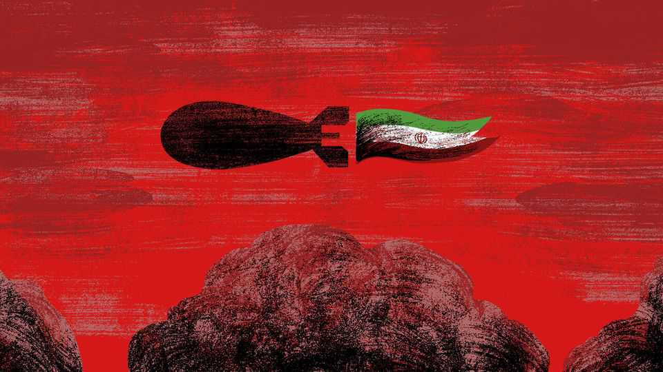
这不是本专栏作者的急切判断。这是世界核安全警察局长拉斐尔·马里亚诺·格罗西（Rafael Mariano Grossi）在4月13日接受《经济学人》（The Economist）制作的视频节目《Inside Geopolitics》采访时，冷静表达的观点。作为国际原子能机构（International Atomic Energy Agency, IAEA）总干事，格罗西的职责是劝阻各国不要违反核武器限制，并在他们试图突破时发出警报。当被问及是否担心核军备竞赛时，这位经验丰富的阿根廷外交官回答：“我确实很担心。”他能否证实有报道称许多国家正在私下讨论获取核武器，无论是波斯湾地区的伊朗邻国，还是美国盟友如德国、日本、波兰或韩国，这些国家已不再确定自己是否受到美国核保护伞的庇护？“这些讨论正在进行中，”他回答道。■
格罗西先生承认，现有的防扩散机制多年来未能阻止多国加入拥核国家行列。但他称这是"危险世界中为数不多的稳定因素之一"。他指出，若更多国家发展核武，将不可避免地引发多米诺效应，导致"大量国家"跟进。格罗西先生谴责导致伊朗陷入当前困境的核讹诈策略。他指出，伊朗政权曾宣称已掌握制造核弹所需的所有要素，包括铀浓缩至接近武器级的水平，随后却要求国际社会相信其无意发展核弹或弹头。他不认同美以两国关于伊朗即将实现核突破的主张。■
他描述了自己徒劳地向伊朗领导人请求，允许国际原子能机构（IAEA）的检查员获得其国家雄心勃勃的核计划所需全面访问权限的过程。因为在核领域，“承诺远远不够”。唉，伊朗领导人更倾向于维持其模糊政策，正如格罗西先生所言，美国和以色列的耐心最终耗尽。在维也纳联合国大厦28楼的会议室里，格罗西先生展示了伊朗致命赌注的后果。他回忆起曾访问过的伊朗地下核设施如今已化为废墟，以及与因空袭和暗杀而丧生的伊朗官员和科学家的交流。对国际原子能机构负责人而言，中东一些国家领导人寻求获取核武器的结局，为那些怀有核野心的统治者敲响了警钟：应重返谈判桌。■
他过于谨慎，不愿提及以色列的未公开核武库及其对一些邻国造成的焦虑。其他人则得出完全相反的结论。一位欧洲外交官经常与他所在大陆的各国政府讨论核战略。他报告称，当俄罗斯2022年入侵乌克兰时，欧洲首都弥漫着愤世嫉俗的情绪，这种情绪在唐纳德·特朗普去年重返白宫后进一步加剧。在私下场合，欧洲官员们一致认为“如果乌克兰拥有核武器，就不会遭到攻击”。是的，格罗西先生（Mr Grossi）完全正确，世界整体上没有更多核武器会更安全。“但请看看各主权国家的利益”，这位外交官敦促道。伊朗、伊拉克和利比亚的统治者曾与西方就其核计划进行过谈判。■
所有人都已死去。“活着的只有金正恩（Kim Jong Un）”，这位无视世界、执意研发核弹头洲际导弹的朝鲜独裁者。外交官列举了十几个据信正在深入研究核选项的国家，从北欧到印尼、土耳其和阿联酋。一位欧洲外交官表示：“我永远不希望看到拥有核武器的德国。”他本国在第二次世界大战中遭受重创。但他预测德国终将渴望拥有核弹，“并最终获得，因为他们无法依赖美国，我甚至不敢相信自己说出这句话。”回到维也纳，格罗西先生（Mr Grossi）对那些认为拥有核武器会更安全的政权早已见怪不怪，他呼吁对各国的动机进行深入分析。
他承认，以核武器作为保护手段的论点对朝鲜而言是成立的。但金氏政权主要需在东北亚一角承受来自美国、中国和韩国的压力。相比之下，他说，中东的地理和政治局势产生了复杂的动态，使该地区国家采取“断绝关系”并寻求核武器的行动更加危险。然而，即便在中东，武力也不是万能的。格罗西先生确信，伊朗的核计划无法被彻底摧毁，尤其是因为“你无法抹去已经学到的东西”。他称只有通过谈判达成协议才是唯一出路。其他外交官和专家则给出了更悲观的预测。
海湾地区的战争持续拖长，他们愈发认为伊朗寻求核武器的理由越来越多，尽管其核计划可能不得不缩小规模并更加隐秘，以应对以色列和美国情报机构的渗透，而其制造的核装置可能相当粗糙。“我们可能某一天会在沙漠中看到一道闪光，”一位专家表示。即便是一次简单的核爆炸，也会传递出一个信息，让邻国不得不认真对待。扩散的多米诺骨牌正在摇晃。再添一把力，它们就可能倾覆。■ 《经济学人》订阅者可注册我们的观点通讯，汇集我们的社论、专栏、客座文章和读者来信中的精华内容。
§049 商业原题：Could AI’s leading men become as powerful as Ford or Rockefeller? · 板块：Business · 栏目：商业
达里奥、德米斯、埃隆、马克和萨姆。人工智能领域最核心的五位人物声名显赫，仅凭名字便足以让人辨识。政界人士和媒体人对其言论尤为关注。由萨姆·奥尔特曼（Sam Altman）领导的OpenAI开发的ChatGPT每周用户超过9亿。达里奥·阿莫代伊（Dario Amodei）领导的Anthropic开发的AI模型强大到足以引发政策制定者的恐慌。德米斯·哈萨比斯（Demis Hassabis）领导谷歌的AI项目，因其科学研究荣获诺贝尔奖。埃隆·马斯克（Elon Musk）经营xAI等多家企业，是当今世界上最富有的人。
■
马克·扎克伯格旗下的Meta公司创造了西方最流行的开源模型家族，并投入巨资招募人工智能研究者，试图追赶技术前沿。从某种意义上说，这五位人士掌握着西方文明的命运。美国军方已开始使用他们的AI工具，其中部分亿万富翁（如阿尔特曼和马斯克）对军事应用表现出更浓厚的兴趣（如阿莫迪）。一些经济学家认为人工智能最终将大幅推动经济增长，另一些人则担忧它会令数百万劳动者失业。许多人还担心它可能彻底终结人类文明。自原子裂变以来，尚无其他技术能引发如此程度的焦虑。令人不安的是，如此少的人却掌握着如此巨大的权力，尤其是像阿尔特曼这样机会主义的商人，或像马斯克这样情绪不稳定的创业者。但这种情况并非前所未有。■
AI领域的五大巨头不过是西方资本主义历史中常见现象的最新例证。历史上不乏这样的案例：一小群人推动新技术发展——不一定是发明者，而是将技术普及至大众。在此过程中，他们积累了巨大权力。这些技术重塑了每个人的生活方式。铁路让人类得以比以往更远、更快地移动；石油为工业资本主义提供了能源；钢铁使建造高层建筑变得更加容易；汽车催生了大众消费主义；零售银行赋予世界信用体系；互联网则垄断了人类的注意力。所有这些技术都使世界变得更富裕。它们也颠覆了社会规范。你或许会认为这些巨头被高估了，甚至更糟。技术进步本质上是数百万民众行动的成果。■
例如，钢铁和互联网并非由某一个人发明或开发，而是集体努力的成果。少数人却独占了这些成果带来的收益。公众对超级富豪的愤怒源于一种信念：最乐观的情况是，他们只是碰到了好时机；最糟糕的情况则是，他们正在寄生在社会之上。口号宣称“每个亿万富翁都是政策失败”。这种结论显然过于苛刻。历史证明，无数次新技术普及到大众市场的关键角色，正是这些巨头们扮演的。他们是创新的必要条件。2023年，多伦多大学沙里·埃利（Shari Eli）及其同事发表的一篇论文指出，福特于1908年推出的第一款汽车Model T，因其价格远低于以往任何车型，很大程度上解释了为何美国人率先广泛采用汽车。
去年，芝加哥大学的乌夫克·阿克奇特（Ufuk Akcigit）与合作者发表的一篇论文指出，所谓“变革型企业家”在将发明转化为长期经济增长中扮演着关键角色。简而言之，繁荣离不开巨头。为了解人工智能巨头与历史上的商业巨头相比如何，《经济学人》分析了过去150年美国11次技术浪潮，从铁路到互联网。对每次技术浪潮，我们挑选了前五位负责该技术控制、分配和普及的人士。我们通过量化其公司巅峰时期的收入、就业和市值，以及主观评估的公司控制权程度和个人财富，来衡量他们的影响力。■
我们查阅了书籍和历史数据集，并参考了福布斯（Forbes）自1918年起开始追踪超级富豪财富的数据。这些衡量标准以当时最相关的基准（如GDP或人口）进行标准化处理。但对许多早期的巨头而言，数据并不完善；例如，财富往往被隐藏。因此，以下内容仅代表我们目前的最佳估算。仅凭财富无法完全体现巨头的权力。在巅峰时期，约翰·D·洛克菲勒（约翰·D·洛克菲勒，标准石油公司创始人）的财富相当于美国GDP的约1.5%。马斯克先生（Elon Musk）的财富可能更高，具体取决于财富的计算方式。然而，根据我们的排名，亨利·福特（Henry Ford）是美国迄今为止最强大的巨头。福特堪称富可敌国。我们估计，他在巅峰时期所持资产价值远超美国GDP的1%。■
他位于密歇根州迪尔伯恩公司总部附近的广阔庄园风景优美。洛克菲勒的财富更为庞大，但雇佣人数却远少于福特：在福特执掌期间，其汽车公司规模真正庞大，1925年雇用了美国人口的约0.15%。福特对公司的控制几乎达到完全掌控的程度。1919年买断少数股东后，其家族便全资拥有这家企业。此外，没有其他实业家像福特那样深刻改变社会。福特的Model T革命性地实现了大规模生产并面向大众市场。1917年，美国道路上超过40%的汽车都是Model T。福特的工人获得足以购买其工厂生产车辆的薪资——著名的每天5美元工资。
如今在迪尔伯恩的每个街角，都能看到这位人物的遗产：从亨利·福特医疗中心到以家族成员命名的众多道路。我们榜单中的其他几位巨头——包括铁路大亨科尼利厄斯·范德比尔特、钢铁大王安德鲁·卡内基和通用汽车前总裁阿尔弗雷德·P·斯隆——大多早已离世。但两位健在的商业巨头成功入选。其中第四位是亚马逊创始人杰夫·贝索斯，该公司雇用超过100万美国人，市值达2.7万亿美元。第八位则是埃隆·马斯克，尽管他的排名更多反映的是其在汽车制造（特斯拉）和航天领域（SpaceX）的成就，而非人工智能领域。紧随其后的是第11位的马克·扎克伯格，这一排名同样更多归功于其公司Meta在社交媒体领域的主导地位，而非人工智能领域。■
相比之下，阿尔特曼、阿莫代伊和戴密斯爵士，其权力更直接地与人工智能相关，三人都位列我们排名的后半段。模型开发依赖少数聪明人才和海量计算资源，这意味着他们所领导的实验室员工数量相对较少。此外，这三人也不享有如福特或范德比尔特那样的企业控制权。阿尔特曼的OpenAI由董事会管理，该董事会曾在2023年11月短暂罢免过他，但随后又被清除。阿莫代伊仅持有其共同创立的实验室少量股份。而戴密斯爵士甚至不是其公司中最资深的员工。客观而言，他们所掌握的技术，与我们名单上的其他人物相比，仍处于初级阶段。过去很少有巨头能像他们这样，拥有塑造娱乐、国防等多个行业发展方向的潜力。■
■
或许在可预见的未来，人工智能领域的巨头们仍难以达到权力巅峰。1913年，福特汽车公司成立十周年之际，其年利润已达到约10亿美元（按今日货币计算）。而刚刚迎来相同年龄的OpenAI（开放人工智能研究所）至今仍未实现盈利。研究历史上的权势人物还揭示了三个重要共性。首先，许多人都表现出异常怪异的特质。福特以一种负面的方式显得古怪，他创办的《底特律独立报》曾散布反犹太主义的毒液。洛克菲勒则以更积极的方式显得古怪，即便成为巨富，仍痴迷于如何节省开支。范德比尔特与冥界幽灵交流；约翰·皮尔庞特·摩根这位银行巨头则咨询占星师。托马斯·爱迪生作为电力先驱，对睡眠极度排斥。苹果公司创始人史蒂夫·乔布斯则实践极端饮食。
有此背景，马斯克先生的阴谋论或扎克伯格先生的机械式举止似乎并不那么离奇。第二个共同点在于，这些科技巨头在推广新技术的同时，也引入了新的风险。一些风险被视作对生命的威胁，例如早期铁路时代，许多科学家担忧人类生物本能无法承受高速旅行。航空业最初也极不安全，石油钻探同样如此。汽车则会同时威胁行人和车内人员。爱迪生的直流电与乔治·威斯汀豪斯的交流电之间的竞争曾引发公众安全恐慌；爱迪生的追随者甚至公开处决动物以证明对手技术的致命性。其他风险则属于财务范畴，对铁路的过度投资曾导致19世纪多次市场崩盘。■
更大的银行体系扩大了信贷规模，却加剧了金融危机。许多新技术自动化了工作岗位，将人们抛入经济废墟。铁路和汽车摧毁了以马匹为动力的交通工具。电气化消除了机械约束，使制造业自动化成为可能。第三个共同点涉及巨头与国家的关系。19世纪的巨头无疑比现代同行拥有更多自由：他们能更广泛地控制市场，更有效地管理劳动力，拥有更多寻租机会。卡内基（Carnegie）曾暴力镇压劳工骚动，摩根（Morgan）则对金融体系拥有如此巨大的影响力，以至于1907年市场崩盘时，他本人实际上充当了美国的中央银行。■
安德鲁·梅隆（Andrew Mellon）是名单上的另一位大亨，他在担任美国财政部部长期间，仍继续掌管着美国最大的工业帝国之一。然而自20世纪以来，政府已逐步遏制了早期大亨们的诸多恶行。1911年，美国最高法院裁定标准石油（Standard Oil）违反反垄断法，将其拆分为34家独立公司。部分为避免重蹈摩根（J.P. Morgan）式救助的覆辙，1913年国会创建了联邦储备系统（Federal Reserve）。1930年代的改革更使大亨们难以掌控庞大的控股公司。2000年，法官下令拆分微软（Microsoft）因非法垄断（软件巨头最终在上诉中险些被肢解，但已受到严厉训诫）。随着人工智能重塑经济与社会，其背后的掌权者或将同样遭遇政府对其权力的制约。■
理论上，资本主义常被描绘为非人格化和去中心化的体系。但实际情况却往往相反，其关键发展阶段通常由个人推动。历史反复证明，那些高高在上的准独裁者往往能掌控经济命脉的广阔领域。当前推动人工智能发展的主要人物未必属于这一类人。但若历史是可靠的指南，不久的将来势必会出现新的洛克菲勒或福特式人物。■ 要追踪塑造商业、工业和技术趋势的动态，订阅我们的周度专属简报《The Bottom Line》。
§050 为何Anthropic和OpenAI锁定最新模型原题：Why Anthropic and OpenAI are locking up their latest models · 板块：Business · 栏目：商业
独家性是强大的营销利器。不妨问问Anthropic。4月7日，这家人工智能实验室宣布其最新模型“Mythos”的预览版仅限特定公司使用，随即引发广泛羡慕。最初受邀名单中仅有一家银行——摩根大通。数日后，一家亚洲贷款机构的董事会召见其首席执行官，解释如何快速获得“Project Glasswing”（Anthropic新俱乐部）的访问权限。这一反应并不令人意外，鉴于该实验室对Mythos的宣称。
■
文章称，其新模型特别擅长发现网络安全漏洞——这也是为何该模型将分阶段推出，以免有不良企图的人在企业有机会利用该工具修补防御之前就获取它。当Mythos最终向公众发布时，Anthropic表示将限制其黑客能力。即便如此，该模型的所谓能力仍令企业乃至政府感到不安。Mythos发布后，美国财政部长斯科特·贝森特和美联储主席杰罗姆·鲍威尔召集美国最大银行，讨论人工智能带来的网络安全风险。不甘示弱，4月14日，ChatGPT开发商OpenAI宣布将推出自己的系统，具备增强型黑客能力——这是其上月发布的GPT-5.4模型的定制版本，仅向经过审核的用户开放。
这种分阶段发布模型的策略不仅仅是公共服务行为，未来可能成为前沿系统发布的常态。原因在于实验室能从中获得三方面的收益。首先，封闭的信息更难以被窃取。今年二月，Anthropic曾抱怨三家中国实验室发起的“工业规模”行动，试图“蒸馏”其模型，而OpenAI过去也曾发出类似抗议。所谓蒸馏，是指利用一个AI模型的输出来改进能力较弱的系统。多数实验室都会以某种方式使用这项技术。例如，一个需要大量计算资源的大型模型可以被蒸馏为一个体积更小但性能强大的模型。然而，蒸馏竞争对手的模型则更接近工业间谍活动。美国实验室正急于借助知识产权法防止此类行为发生。■
但最可靠的方法是阻止那些试图提取模型的人获得访问权限。其次，实验室正面临算力短缺的困境，迫使他们不得不进行优先处理。尽管在数据中心上投入了巨额资金，但人工智能的需求仍在持续攀升，而每一代新推出的模型消耗的算力都比前一代更多。Anthropic近期不得不对Claude聊天机器人设置使用上限，特别是在一天中的某些时段，并调整企业定价方案，按实际使用量计费。Mythos似乎对算力的需求尤为旺盛。Anthropic公布的Mythos服务定价远高于其向公众提供的Opus 4.6模型，后者价格仅为Mythos的五分之一。这表明Mythos对基础设施的负担远大于其他模型。■
将系统封闭管理将使Anthropic只能在产能允许时才引入新客户。第三，限制对最先进AI系统的访问，实际上将权力重新交还给模型开发者。像Cursor这样的AI编码工具在企业中颇受欢迎，部分原因在于它们避免了供应商锁定：IT部门可根据成本和性能在后台切换模型，而无需员工学习新界面。但开发者难以创建与无法访问的模型兼容的应用程序。这可能导致部分客户选择模型开发者自家的工具，如Anthropic的Claude Code或OpenAI的Codex。所有这一切的结果是，领先的AI实验室很可能会继续加强对技术访问权限的控制，而不仅仅是因为他们担心安全问题。■
被排除在外的人恐怕不会太高兴。■ 要追踪塑造商业、工业和技术趋势，可订阅我们的每周专属订阅通讯《The Bottom Line》——聚焦全球商业。
§051 美国企业董事会正面临围攻原题：America’s corporate boards are under siege · 板块：Business · 栏目：商业
美国企业董事会正遭遇前所未有的挑战，激进股东与监管变革正削弱其控制力
过去，股东大会季是美国企业董事会一年一度的例行公事，虽然繁琐但大致可预测。大多数年度股东会议都能顺利进行。与大额股东的非正式交流（最好是漫长午餐期间）意味着董事席位和薪酬方案几乎可以确保通过。相关文件虽令人头疼——但只对那些愿意阅读的董事会成员而言。如今，董事会会议室已转变为4月至6月间的战场。激进投资者则在企业界四处游走，寻找那些臃肿迟缓的公司伺机而动。
■
监管变化正在限制过去用于遏制棘手股东制造麻烦的机制。一位顾问表示，董事会正步入“代理季的西部荒野”。许多人对即将发生的事情仍感到迷茫。美国的董事会近年来经历了动荡的岁月。2020年，倡导者开始推动董事会任命更多来自代表性不足社会群体的董事。2021年，纳斯达克监管机构批准了一项由纳斯达克推出的规则，要求在其交易所上市的公司至少任命两名符合该条件的董事。许多公司进一步采取行动。环保人士也提出了自己的要求；2021年，埃克森美孚（美国最大石油生产商）的一场运动促成了三位注重可持续发展的董事被任命。随着“觉醒主义”（wokeism）的式微，董事会面临的此类要求减少。一些公司已悄然放弃了多样性承诺。■
但他们正面对抗冷血资本主义的煽动者。据投资银行Lazard（拉扎德）统计，去年股东积极主义创下纪录，美国出现了163起相关行动（见图表）。董事会改组是呼声最高的诉求之一。4月9日，二手车零售商CarMax宣布，将任命星板价值（Starboard Value）这家活跃对冲基金支持的两位董事，以避免在年度股东大会上发生冲突。活跃的股东积极分子则受益于多项监管变革。自2022年起，股东可从企业与积极分子各自提出的董事名单中挑选，而非必须全盘接受某一方的名单，这使得外部人士更易获得席位。■
这在一定程度上得益于股东活跃分子如今倾向于提出更有经验的候选人。巴克莱银行的吉姆·罗斯曼（Jim Rossman）回忆称：“十年前公司可以告诉活跃分子‘去拍沙子’（pound sand），但现在却做不到。”2025年，美国的活跃股东获得了他们所寻求董事会席位的四分之三，比过去四年平均不到三分之二的水平有所提升。其他公司治理领域的变化可能进一步削弱董事会对其公司的控制力。许多资产管理公司依赖代理顾问（proxy advisers）来决定如何投票表决管理层及其他方提出的提案。因此，Glass Lewis和ISS这两大主导顾问机构的建议，让董事会能预判哪些决议更可能获得批准。■
然而，这种代理双头垄断格局正面临唐纳德·特朗普总统的挑战。他在12月指责这两家机构利用“其显著影响力推动并优先考虑激进的政治议程”，并指示监管机构展开调查。随后，摩根大通与花旗两家银行的资产管理业务表示将减少对顾问的依赖。进一步复杂化局势的是，证券交易委员会（SEC）去年发布指导文件指出，若资产管理公司自诩为被动投资者（该身份可减少监管文书工作），却过度与董事会沟通，可能丧失这一地位。特朗普政府意图遏制其认为像贝莱德这样的被动巨头试图通过公司推动政治议程。
然而，一个后果是董事会将失去获取股东是否可能批准重大交易等事项的关键信息来源，彼得·达·席尔瓦·文特（Peter da Silva Vint）指出，他任职于贾斯珀街公司（Jasper Street），该公司为上市公司提供股东关系咨询。达·席尔瓦·文特认为，过去董事会可以在争议性投票前私下商议“幕后交易”的时代已经一去不复返。随着股东们准备参加今年的年度股东大会，诸多戏剧性事件即将上演。■ 要追踪塑造商业、产业与科技趋势的动态，订阅我们的周度专属简报“The Bottom Line”。
§052 澳大利亚初创企业生态终于迎来繁荣原题：Australia’s startup scene is thriving at last · 板块：Business · 栏目：商业
在悉尼邦迪海滩上，冲浪者和日光浴爱好者尽情享受阳光时，另一种常客偶尔也能被看到。她没有戴上耳塞，而是戴上AirPods，热情地与看不见的伙伴讨论着“cap tables”（资本结构）；他则坐在MacBook上敲代码，而不是躺在书本旁。对许多人而言，澳大利亚是风景如画的国度和矿产丰富的土地。然而近年来，这里也发展出了一片繁荣的初创企业生态。
■
去年，澳大利亚初创企业获得的风险投资（VC）资金超过50亿美元，创下有史以来第三好的年份（仅次于2021-22年的狂热增长），相比2018年增长近半，仅略逊于法国和德国。从企业软件领域的Atlassian（澳大利亚）到设计工具领域的Canva，再到“先买后付”平台Afterpay，该国已培育出众多知名成功案例。事实上，自2000年以来，每投入10亿美元风险资本，澳大利亚便诞生1.22家独角兽企业——这一比例远超其他国家，几乎是美国的两倍。乍看之下，这一成绩令人意外。澳大利亚距离全球最大的科技中心数千公里，且市场较小，人口仅2800万，企业难以实现规模扩张。
资本匮乏和“高人一等综合症”——一种对高成就者心生嫉妒的文化现象——导致大量澳大利亚科技人才流向硅谷。三大因素解释了这种趋势的加速。首要因素在于澳大利亚科技企业如今已形成清晰的发展脉络。Atlassian于2002年以信用卡贷款起步，未获风投支持；2013年Canva创立时，许多潜在投资者对它设在悉尼的选址持保留态度。如今这一代创业者已逐渐成熟。Atlassian于2015年在纳斯达克上市，尽管过去一年软件股整体下跌导致其股价下跌70%，但公司价值仍达160亿美元。Afterpay于2022年被美国支付公司Block以290亿美元收购。Canva在8月估值达420亿美元，预计将在未来一到两年上市。它们的成功为后来者铺平了道路。■
许多这些公司的校友已创立了自己的初创企业：例如，客户分析软件开发商Dovetail由Atlassian的两位前员工创建。约翰·亨德森（John Henderson）指出，初创企业的不断涌现催生了本地风投机构的诞生，他本人就是其中一位投资者，所属机构为Airtree。第二个因素是人才。澳大利亚拥有七所位列《泰晤士高等教育》（Times Higher Education）全球前100名的计算机科学大学。许多毕业生选择出国深造。但所谓“归巢效应”——即本土人才在硅谷经历一段时间后返回家乡——随着本地科技生态系统的扩展而愈发显著。其中一位归巢者是凯姆·亚当斯（Cameron Adams），他辞去谷歌（Google）的工作，与人共同创立了Canva。一项特殊签证类别使澳大利亚人在美国就业相对容易。安全的治安环境和更宽松的工作文化则吸引他们重返故土。■
第三个因素是澳大利亚人对采用新技术的开放态度。人工智能实验室Anthropic（安德里亚斯）报告称，该国每人使用其Claude聊天机器人的数量位居全球第三，仅次于以色列和新加坡。澳大利亚对“先买后付”消费金融模式的早期采用推动了全球Afterpay的崛起。此外，澳大利亚政府本身也颇具科技素养：根据OECD（经济合作与发展组织）的排名，该国仅次于韩国。澳大利亚距离在本土复刻硅谷仍有很大距离。当地风投行业规模仍较小，去年该国三分之二的交易涉及一个或多个外国投资者。行业经常指责严格的监管制度，使澳大利亚管理着价值3200亿澳元退休储蓄的“超级基金”趋于保守。■
监管政策旨在保护退休人员免受高费用剥削，却无意中抑制了养老基金向风投公司注资，尽管后者历来回报率较高，曼达拉咨询公司（Mandala Partners）的阿米特·辛格（Amit Singh）指出。早期阶段融资尤其受限。投资者更倾向于支持规模更大、更成熟的初创企业：去年澳大利亚仅有20笔交易就占了全部风投资金的58%。近期一系列高调裁员也令澳大利亚科技从业者感到不安。上月，Atlassian宣布将裁减1600名员工，约占其总人数的10%，其中包括约480名澳大利亚员工。《经济学人》联系的Block公司当地发言人表示，该发言人本人在本文撰写期间已被裁员。据一项统计，悉尼在2026年（注：原文应为2023年）的科技裁员数量位居全球除美国外各城市之首。一些企业高管则认为，裁员反映了人工智能带来的效率提升。■
更可能的解释是，正如在硅谷一样，他们许多人在疫情时期的繁荣期中过度招聘。不久的将来，或许会有更多科技从业者聚集在邦迪海滩（Bondi Beach）筹划下一次创业计划。■ 要追踪塑造商业、产业与科技趋势的动态，可订阅我们的周度专属商业简报《The Bottom Line》。
§053 印度航天产业正加速起飞原题：India’s space industry is blasting off · 板块：Business · 栏目：商业
4月10日，美国阿耳忒弥斯二号（Artemis II）月球任务成功将四名宇航员送至人类此前未曾抵达的月球区域，并安全降落在太平洋。明年，印度空间研究组织（ISRO）计划实现自身的太空雄心。其加加尼亚（Gaganyaan）任务旨在让印度加入仅由美俄中三国组成的载人航天飞行国家俱乐部。这一目标远非天马行空。近年来，印度已建立起蓬勃发展的商业航天产业，与ISRO紧密合作。其成功主要归功于三个人。其中第一位早已离世：印度首任总理贾瓦哈拉尔·尼赫鲁（Jawaharlal Nehru）。
尼赫鲁对科学充满热情——大城市的天文馆大多以他名字命名——1962年在维克拉姆·萨拉巴伊等物理学家的推动下，他建立了印度空间研究组织（ISRO）的前身。与美苏冷战时期的机构不同，印度的机构专注于发展目标，如监测季风。如今，它已成为印度政府机构中罕见的广受尊敬的典范。然而直到2020年，印度航天领域仍是一个小规模产业。有限的公司生态系统与ISRO合作，多数是小型制造商为其任务生产零部件。印度理工学院空间科学与技术学院（IIST）的毕业生在公共部门外几乎毫无机会。这一局面因现任印度总理纳伦德拉·莫迪的上任而改变，他是继尼赫鲁之后第二位关键人物。■
印度政府于2020年向私营部门开放太空领域，成立印度国家太空活动协调机构（IN-SPACe），该机构作为一站式平台，允许企业获取各类太空活动许可并接入印度空间研究组织（ISRO）的发射能力。政府估计，私营航天产业目前总收入已突破80亿美元，拥有约400家初创企业，其中许多由印度理工学院（IIST）校友创立。第三位是全球首富埃隆·马斯克。他创立并运营的SpaceX公司研发的猎鹰9号可重复使用火箭，大幅降低了卫星发射成本，使更多基于太空的商业活动具备可行性。希望成为印度航天巨头的潜在投资者期待，马斯克公司今年某时的公开上市能证明该行业具备 lucrative 投资潜力。他们也期待由此产生的“SpaceX帮派”投资者和员工群体，能将部分收益重新投入印度。■
该国拥有少数几个航天集群。其中之一位于班加罗尔（Bangalore），长期以来一直是航空航天和国防工业的中心：印度独立后不久就在该地建立了航空实验室，靠近曾为英国军事基地的区域。另一个集群位于钦奈（Chennai），靠近印度空间研究组织（ISRO）的发射场。一家总部位于该市的初创企业AgniKul Cosmos希望成为卫星的“出租车”（与SpaceX的“公交车”相对）。利用3D打印机，该公司计划制造比猎鹰9号（Falcon 9）更小、可重复使用的火箭，这些火箭可从客户指定地点发射，并将卫星精确送入所需轨道。首次商业发射计划于今年晚些时候进行。目前，空间领域主要意味着国防，迪甘塔拉（Digantara）的安尼鲁德·沙玛（Anirudh Sharma）表示。他的初创公司最初设想为轨道空管，帮助客户监控卫星与碎片碰撞的风险。
它很快意识到，其搭载在卫星上的激光器可以像追踪太空垃圾一样轻松地追踪地球上的导弹。其位于美国的办公室由本地公民和持有安全许可的绿卡持有者共同组成，为多家美国国防承包商提供服务。印度的国防体系也对这一行业产生了兴趣。沙玛先生表示，2025年与巴基斯坦的短暂冲突凸显了太空能力的重要性。据称，中国在冲突期间向巴基斯坦提供了卫星图像。另一大客户是印度空间研究组织（ISRO）。印度政府希望借助其航天计划进一步推动本国私营航天产业。■
印度正从美国汲取灵感，SpaceX公司已获得美国国家航空航天局（NASA）的合同，为未来阿尔忒弥斯（Artemis）任务中将宇航员带回月球表面的着陆系统提供技术支持。若印度的加加尼亚安（Gaganyaan）计划于明年成功，将有助于吸引更多支持该计划的企业关注。印度的太空目标自尼赫鲁时代以来已有所变化，但发展仍是计划的重要组成部分。印度政府希望该领域能助力印度成为先进制造业强国。印度瞄准月球，但能否成功尚难预料。■ 要追踪塑造商业、工业和技术趋势的动态，订阅我们的周度专属商业简报“The Bottom Line”。
§054 《绝望追逐最终批准》 商业版原题：The desperate pursuit of final approval · 板块：Business · 栏目：商业
发件人：鲁道夫·施温克 收件人：莎拉·索福斯 亲爱的莎拉， 我已完成新产品用户调查的最终修订版。目前问卷已达到25个问题，显然过于冗长。因此，当这份文件提交给高管团队进行签署批准时，我们必须保持高度自律。我知道你清楚这一点，但这次审批应当迅速完成，而非引发新一轮争论。 鲁道夫 发件人：莎拉·索福斯 收件人：鲁道夫·施温克 亲爱的鲁道夫， 完全同意需要简洁，但能否重新添加我们之前讨论的使用频率问题？ 发件人：莎拉·索福斯 收件人：高管团队、鲁道夫·施温克 亲爱的各位， 请查收附件中新产品用户调查的最终版本，供签署批准。我们将在下周将其投入实际测试。 祝好 莎拉 ■
嗨，莎拉。我在文档中对语言和语法做了具体批注，但最主要的是我们需要增加一段关于竞争对手的内容。否则我们无法真正理解市场。我已建议新增了一些问题。祝好，布莱恩。
嗨，大家。我同意布莱恩的观点，竞争对手部分确实至关重要。这也是一个绝佳机会，可以测试客户对当前产品新功能的看法。我已在文档中添加了关于这两方面的部分问题。大家做得很好！VB
我很好奇，我们是否应该采用更开放的问题形式。目前我们似乎更倾向于验证自己对新产品的假设，而非探索如果拥有空白画布，人们会想要什么。抱歉如此晚才提出这点。谢尔盖
Serge，文档准备好了吗？也许我们可以在结尾处提出一个开放性问题。布莱恩
莎拉，情况已经失控了。每个人都已经有机会发表意见了。如果我们接受维杰的所有建议，问题数量将达到34个。如果我们听从塞尔热的意见，我们就要重新开始整个流程。而且，布莱恩为什么对语言进行评论，他实际上文盲吗？布莱恩
莎拉，我们得见面讨论这个问题。这种行为不可接受。我正在用手机快速打字，我认为我的意思很清楚。布莱恩
莎拉，非常抱歉。我并没有想给所有人发邮件。鲁道夫
From: Sarah Sofoss
To: Brian Aldidge, ELT, Rudolf Schwink
Dear Brian, 我会与Rudolf沟通，并代表他向您致歉。同时，我已补充了大部分新问题。Alexis，最终确认请交由你处理。我们是否可以继续推进？Sarah
From: Rudolf Schwink
To: Brian Aldidge
Hi Brian，我非常抱歉。我不该发脾气。Rudolf
From: Brian Aldidge
To: Rudolf Schwink
希望你能反思此事。Brain
From: Rudolf Schwink
To: Brian Aldidge
Dear Brain，我会反思。Rudolf
From: Alexis Smith (CEO)
To: ELT, Sarah Sofoss, Rudolf Schwink
目前调查内容尚可，但我们需要就AI相关问题进行确认。
From: Sarah Sofoss
To: ELT, Rudolf Schwink, Alexis Smith
Alexis，调查内容已经很长了，是否有需要删除的问题以腾出空间？
发件人：Alexis Smith（首席执行官）
收件人：ELT、Sarah Sofoss、Rudolf Schwink
您可以不必再询问有关新产品的相关问题。
■
§055 从拉夫·劳伦（Ralph Lauren）到The Row，美国奢华品牌正迎来蓬勃发展原题：From Ralph Lauren to The Row, American luxury is booming · 板块：Business · 栏目：商业
商业版块的奢华浪潮
全球奢侈品行业陷入低迷之际，美国奢华品牌却意外逆势上扬。根据咨询公司贝恩（Bain）数据，经历疫情后两年的消费收缩，2025年全球个人奢侈品支出持续下滑。中东战争引发的全球经济冲击令奢侈品牌普遍担忧前景黯淡。4月13日，行业巨头LVMH公布数据显示，其2026年第一季度服装和皮革制品销售额同比下降2%，这是连续第七个季度下滑。然而，美国品牌却展现出令人意外的活力。
欧洲的奢侈品牌长期以来主导着奢侈品市场。Lyst（电商平台）根据销售数据、线上搜索量及社交媒体活跃度，持续发布时尚领域最热门的品牌榜单。五年前，榜单前十名中没有美国品牌，如今已有三家跻身前三——拉夫·劳伦（Ralph Lauren）、蔻驰（Coach）和The Row。2025年第四季度，拉夫·劳伦营收同比增长10%，蔻驰销售额上涨25%，创下母公司Tapestry的历史单季纪录。两家公司股价在过去一年分别上涨89%和135%。新世界品牌为何突然崛起？战略调整是其成功的重要原因之一。拉夫·劳伦历经数年的转型已初见成效，其重塑了产品线，加强了分销控制，并翻新了陈旧的门店。■
其旗下大型门店如今多设咖啡吧和餐厅；品牌创始人之子大卫·劳伦（David Lauren）负责品牌与创新，他表示顾客“因喜爱店内氛围而光顾”。平均售价（消费者在折扣后实际支付的价格）已连续近九年每季度上涨。公司目前将超过7%的销售额投入营销，是十年前的两倍。成效显著：每位拥有环形补光灯的时尚网红都佩戴着该品牌标志性的马鞍形帽。近期，Coach也采取了类似策略。它已摒弃破败的购物中心和百货商店，摆脱了作为折扣包袋首选品牌的声誉。如今，其近90%的产品直接面向消费者销售。借助诸如赛琳娜·戈麦斯（Selena Gomez）等明星广告及推出可定制的包袋挂饰，成功吸引年轻消费者。■
其他因素正为这些美国品牌带来优势。复古Preppy风格和90年代怀旧风潮再度流行。据Lyst统计，2025年第四季度，消费者对拉夫·劳伦（Ralph Lauren）四分之一拉链毛衣的在线搜索量同比增长132%。全球经济格局也偏向美国品牌。美国消费者比其他地区更具韧性，去年其奢侈品支出小幅上升，而欧洲和亚洲的传统老字号品牌却遭遇下滑。过去一年欧元走强，也让巴黎和米兰的游客在购买法意品牌时更显拮据。在此背景下，美国设计师品牌整体价格通常低于欧洲竞争对手，这恰好契合全球消费者寻求更实惠替代品的需求。■
Tapestry公司（塔普丽丝）的Sandeep Seth认为，目前Coach手袋的售价200至500美元正处于“最佳区间”。摩根大通银行（JPMorgan Chase）估算，欧洲奢侈品牌手袋如今的价格是Coach的5至10倍，相较15年前的2至3倍已大幅攀升。身着羊绒的欧洲奢侈品巨头们对此嗤之以鼻，称“平价奢华”是自相矛盾的词汇。但也有不同声音。拉夫·劳伦（Ralph Lauren）首席执行官Patrice Louvet认为，奢侈并非由价格定义，而是“你所提供的体验”。此外，美国品牌在选择时已证明其能占据奢侈品行业的顶级市场。拉夫·劳伦既面向富裕阶层推出Polo系列，也通过紫标系列（Purple Label）服务顶级富豪。还有The Row，其售价5000美元的手袋和12000美元的外套也占据高端市场。■
该品牌由玛丽-凯特和艾什莉·奥尔森（Mary-Kate and Ashley Olsen）创立，两人曾是童星。品牌主打低调奢华（quiet luxury）风格，这种设计恰好契合当下超富裕人群日益增长的审美需求。资产管理公司GAM的弗拉维奥·切雷达（Flavio Cereda）指出，奥尔森姐妹通过说服肯达尔·詹纳（Kendall Jenner）和佐伊·克劳兹（Zoë Kravitz）等明星穿着其产品，同时严格限制分销渠道，营造出消费者必须“赢得购买资格”的氛围。这一切无法让美国成为奢侈品的新中心。全球四大顶级时装秀中，仍有三个在欧洲举行。同时，众多美国品牌正面临困境。Tapestry公司未能扭转旗下品牌Kate Spade的颓势，去年还因销售疲软剥离了鞋类品牌Stuart Weitzman。■
Capri这家美国竞争对手奢侈品牌集团正面临困境，其最大品牌Michael Kors已不再受消费者青睐。2024年被反垄断机构阻止与Tapestry合并后，Capri将Versace品牌出售给Prada以削减债务。与此同时，欧洲奢侈品牌正竭尽全力提振销售。包括Chanel和Gucci在内的许多品牌在过去一年内都聘请了新创意总监。这些品牌曾在疫情后奢侈品消费激增期间因大幅涨价而惹恼消费者，如今则通过在产品线中加入平价商品并维持高端产品的价格来弥补。无论此举是否能重振其业绩，那种认为唯有欧洲能主导奢侈品牌的旧观念正显得越来越过时。■
请订阅我们的周度专属商业简报The Bottom Line，以追踪塑造商业、工业与科技趋势的动态。■
§056 大卫·扎斯拉夫与激励的暴政 商业 施穆普特原题：David Zaslav and the tyranny of incentives · 板块：Business · 栏目：商业
4月23日，股东们将就一项彻底考验股东资本主义理念的交易进行投票。2月，派拉蒙天空舞蹈公司从Netflix的虎口夺回了其远大于自己的竞争对手华纳兄弟探索公司，经过数月的拉锯战。这场收购战堪称史诗级。唐纳德·特朗普总统也介入其中，布莱恩·克兰斯顿（《绝命毒师》主演）也发表了意见。该交易仍需全球监管机构批准（难度不小，正如华纳股价比派拉蒙现金报价低12%所反映的那样）。 ■
如果交易获得各方同意，这笔交易将打造一家娱乐巨头，让大卫·埃利森（David Ellison）——派拉蒙（Paramount）掌门人——成为好莱坞的国王，同时让海湾国家主权财富基金在流行文化领域获得前所未有的份额。交易还将使华纳（Warner）CEO大卫·扎斯拉夫（David Zaslav）变得异常富有。扎斯拉夫是好莱坞的传奇人物：他于2006年开始执掌Discovery（一家电视频道群）。曾获金球奖的克兰斯顿（Mr. Cranston）称他“极其无聊”。但扎斯拉夫或许并不在意，因为他可能已获得史上最大的金降落伞。若埃利森在交易完成后将其解雇，扎斯拉夫将获得3400万美元的遣散费。无论他最终去向何方，即使继续留任派拉蒙，他也将通过股票奖励和期权获得超过5亿美元的收益，这些期权将在优厚条件下行权。■
他的税款也将由雇主支付，总收益将超过8亿美元。按好莱坞标准，出售曾制作过《卡萨布兰卡》的电影工作室，扎斯拉夫将获得足以个人资助两部《复仇者联盟》电影的财富。这如何成为可能？上世纪80年代，人们开始认为，当公司被收购时，不仅企业家，高管也应获得巨额回报。高管们自然对并购持谨慎态度，因为他们担心之后可能难以找到新工作。因此，通过支付高额报酬来激励高管，这一逻辑被提出，以激活企业控制权市场的活力。但这种逻辑似乎从未在高管办公室和大学经济学系之外显得那么牢不可破。“如果高管需要数百万美元的合同才能在并购期间理清思路，那他或许该去看心理医生。”著名银行家费利克斯·罗哈廷曾如此评论。■
然而，到十年末期，大多数美国大公司已为其高管办公室配备了降落伞，国会也对这些公司征收了特别税——华纳的股东将不寻常地为扎斯拉夫承担这笔费用。此后，董事会设计出日益复杂的薪酬方案，旨在协调管理层与股东的利益。在美式企业界，认为正确的激励措施能解决任何问题已成为普遍信条。在大型公司中，股票奖励和期权而非现金，已构成高管薪酬的70%以上。在硅谷，公司像分发糖果一样向员工发放股票。■
高管薪酬对股东而言已变得完全无法理解。"实际支付的薪酬"这一数字，公司现在被迫披露，但华纳公司（Warner）的代理声明中典型警告称，"该数字并不反映我们CEO实际获得或支付的薪酬金额"。另一个现象是"金色降落伞"（golden parachutes）的规模大幅增加。根据咨询公司阿尔瓦雷兹与马萨尔（Alvarez & Marsal）的一项研究，CEO在公司被收购后可期待的平均支付金额为2700万美元。哥伦比亚大学的杰弗里·戈登（Jeffrey Gordon）针对2011年至2022年间并购案例的研究显示，在交易金额超过100亿美元的案例中，平均支付金额达到4800万美元。扎斯拉夫（Mr Zaslav）并非华纳兄弟（Warner Bros）首位变得极其富有的CEO。■
1990年时代公司（Time）收购工作室时，史蒂夫·罗斯（Steve Ross）获得近2亿美元；2018年AT&T收购时代华纳（Time Warner）时，杰夫·贝克斯（Jeff Bewkes）离职时获得7000万美元的金色降落伞。但即便以这些标准衡量，扎斯拉夫（Zaslav）的回报也相当丰厚。此外，他的薪酬结构更凸显了高管与股东利益的分歧。Zaslav的薪酬中有一大块是基于达成定性“个人战略目标”，而非可验证的财务指标。而他的金色降落伞在出售华纳（Warner）的交易谈判期间仍在持续增长。代理顾问Glass Lewis表示，扎斯拉夫的离职方案中的税务安排应引发“严重关切”；其竞争对手ISS则称这些安排“存在严重问题”。投资者将如何看待扎斯拉夫的金色降落伞是精致的黄金还是夸张的炫富，或许在一定程度上取决于他们何时买入华纳的股票。■
派拉蒙将以每股31美元的价格收购，远高于一年前的估值。从这个角度看，扎斯拉夫先生创造了非凡价值。然而，这次合并若非他主导的2022年华纳兄弟与Discovery合并的彻底失败，恐怕难以实现。当时宏大的承诺大多未能兑现。其流媒体服务（HBO Max，后更名为Max，再恢复为HBO Max）仍远逊于Netflix。自交易完成后，华纳仅实现过两个盈利季度，导致其负债累累的资产负债表陷入危险境地。■
华纳董事会负责扎斯拉夫的薪酬（有趣的是，薪酬委员会主席是一位投行人士，其所在机构正为这笔交易提供建议）。然而，当华纳股东下周对这笔并购案进行投票表决时，他们也将有机会表达对这笔交易的反对意见——这是自金融危机后监管机构引入“薪酬表决权”规则以来，股东们一直拥有的权利。股东们若否决高管薪酬（如去年他们否决了扎斯拉夫5200万美元的薪酬方案，前年也几乎如此），其效果等同于全力支持。投票并不具有约束力，通常被企业忽视。华纳的股东们有充分理由认为扎斯拉夫的薪酬让他们吃了亏。扎斯拉夫将轻松离开。■《经济学人》订阅者可注册我们的观点电子报，汇集了最佳的社论、专栏、特稿及读者来信。
§057 战争将掏空海湾6万亿美元的财富储备原题：War will drain the Gulf’s $6trn treasure chest · 板块：Finance & economics · 栏目：财经
近年来，海湾合作委员会（GCC）六国的主权财富基金已主宰全球投资领域。巴林、科威特、阿曼、卡塔尔、沙特阿拉伯和阿联酋（UAE）的石油资金自2021年以来已累计对外投资逾4300亿美元。每投入1美元石油美元，就有75美分流向海外，从人工智能独角兽企业、私人信贷到英超联赛足球俱乐部和TikTok平台。这些基金在全球范围内管理的资产规模已超过5万亿美元，较2021年增长逾1万亿美元。
■
那些旨在为后化石能源时代做准备的远见卓识，正因战争的残酷现实而受到冲击。据咨询公司Welligence称，伊朗对地区美国盟友的报复性袭击已摧毁价值250亿美元的油气基础设施。这些设施需要重建，或许还需投入300亿至500亿美元用于建设绕过霍尔木兹海峡的输油管道，以摆脱伊朗对该海峡的控制。在地区局势日益动荡的背景下，海湾合作委员会成员国也需增加国防开支，特别是补充拦截导弹等武器弹药。而所有这些支出都需在能源出口受阻导致经济放缓的情况下进行。迪拜（阿联酋组成部分）已宣布对企业的刺激计划。■
深口袋基金几乎肯定会被要求承担部分费用，正如他们在以往危机中所做的那样。在疫情期间，阿布扎比投资局（也来自阿联酋）撤回了240亿美元，科威特投资局则撤回了250亿美元，相当于其管理资产的3-4%，全球主权财富基金研究机构Global SWF的Diego López估算。阿联酋和卡塔尔的基金通过注资本国国家航空公司，为航空业提供了40亿美元的救助资金。López指出，此类大规模资金调用往往会干扰基金的资产配置，并在随后几年限制其在其他资产类别上的投资。而这次操作将更加微妙。一方面，过去五年来，这些基金在流动性差的私人资产上的投资比例显著上升。■
阿联酋和沙特的主权财富基金分别向人工智能初创企业及数据中心注入近1000亿美元和400亿美元资金。2021年至2025年间，海湾合作委员会（GCC）主权财富基金约有1400亿美元投入房地产和基础设施领域，另有约800亿美元投向私人信贷。这类投资在紧急情况下比债券或上市股票更难变现，部分投资可能只能以大幅折价出售。其他投资则与外交政策目标挂钩，如确保粮食安全和关键矿产供应。若资金通过政府间协议签署协议，这类投资同样难以撤回。阿联酋的资金在非洲数国拥有矿山和农场权益，沙特公共投资基金（PIF）则支持巴西的矿业企业和东南亚的农业项目。■
最后一项复杂因素是基金日益增加的敞口，涉及海湾合作委员会（GCC）国家摆脱石油依赖的国家雄心。由阿布扎比于1月创建的L’Imad基金，吸收了阿布扎比酋长国现有的财富基金ADQ，其在国家基础设施运营商中持有大量股份，包括公用事业公司TAQA、港口运营商AD Ports Group、阿布扎比机场和阿联酋铁路公司Etihad Rail。另一只阿布扎比基金Mubadala则资助阿布扎比金融中心阿尔马里亚岛（Al Maryah Island）的扩张，以及可再生能源企业Masdar。随着伊朗导弹打击削弱了外国对富裕海湾国家的吸引力及其资金，国内投资突然显得风险陡增。区域航空客流减少已开始影响本地机场运营商和航空公司的收入报表。■
自战争爆发以来，基金所持豪华酒店的平均入住率和日均房价每周都在下降。由穆巴达拉（Mubadala）和迪拜投资公司（Investment Corporation of Dubai）共同控股的阿联酋全球铝业（Emirates Global Aluminium），表示可能需要长达一年时间才能修复导弹残骸造成的损害。像阿尔达尔（Aldar）这样的房地产公司，也部分由穆巴达拉控股，正面临住宅销售和租赁活动骤降的困境。所有这些因素都在削弱现金流，并将降低此类企业向基金支付的分红。该地区一些规模宏大的项目本就已显露出不稳迹象。1月，沙特首都利雅得（Riyadh）一项价值500亿美元的住宅与商业区核心项目“穆卡布”（Mukaab）的巨型立方体摩天大楼建设被暂停。战争使该项目复工变得极不可能。■
3月，冲突爆发数周后，沙特阿拉伯取消了特罗真纳（Trojena）沙漠滑雪度假村和直线城（The Line）未来城市部分合同。至少对公共投资基金（PIF）而言，许多沙特倡议项目出现大幅减值是不可避免的。4月15日，PIF公布了战争爆发前制定的五年战略。上个月，PIF在迈阿密举办的投资大会（investment jamboree）上，基金负责人亚西尔·阿尔-鲁迈扬（Yasir Al-Rumayyan）希望吸引更多外资进入沙特。"过去我们试图将沙特推向世界，"他对一群金融界大亨说，"如今我们处于希望将世界引入沙特的阶段。"鉴于各类项目的进展受阻，这本就已是艰难的推销。伊朗间歇性袭击的威胁更让局势雪上加霜。■
投资银行家表示，外国承包商正从多个海湾项目撤退，部分西方投资者也对前景感到担忧。拉马彦先生（Mr Rumayyan）也强调，公共投资基金（PIF）仍致力于全球范围内的投资。“我们衡量回报不是以季度为单位，而是以十年为周期，”他坚持道。事实上，没人预期海湾主权基金持有的资产会进行甩卖。一位新加坡投资顾问指出，其公司参与的六个海湾主权基金交易中，仅有一个在过去一个月内撤资。他指出，随着国内利润持续下滑，可靠的外国收入显得尤为重要。这或许属实，但也暗示这些基金的注意力可能从对未来的高风险押注转向当下能产生现金流的更稳健资产。与此同时，资金在国内将更多用于重建旧经济，而非打造新经济。■
战争持续时间越长，留下的伤痕越深，基金就越难以假装一切如常。■ 如需获取关于经济、金融和市场的重大新闻的专家分析，请订阅我们的周报Money Talks。
§058 美国下一任美联储主席陷入两难困局 财经版原题：America’s next Fed chair is caught in a vice · 板块：Finance & economics · 栏目：财经
管理美联储通常被认为是全球最艰难的职位之一。而在唐纳德·特朗普担任总统期间管理美国中央银行则更为棘手。现任主席杰罗姆·鲍威尔（Jerome Powell）经常成为总统的抨击对象。“美联储主席杰罗姆·‘太迟’鲍威尔现在在哪里？”特朗普在Truth Social（他的社交平台）上发问，就在他发动伊朗战争导致市场暴跌的上个月。鲍威尔还因司法部（DoJ）对美联储总部翻新费用的虚假调查成为焦点。
凯文·沃什或许曾希望事态更顺利。2024年1月，特朗普提名这位前美联储主席接替鲍威尔，当时市场普遍预期到2026年底至少会降息一到两次，甚至更多。这种预期即便无法将目前3.5-3.75%的利率降至总统偶尔要求的1%左右，至少也能让沃什避开舆论焦点。然而此后支持降息的论据已不复存在（见图表1）。如今几乎无人预期今年会有降息。最明显的是，伊朗战争推高了油价，3月官方数据显示整体通胀率升至3.3%，较前一个月的2.4%明显上升。4月10日公布的数据显示，下个月的通胀数据也大概率会因类似原因令人担忧。
尽管海湾地区达成（初步）停火协议，油价仍徘徊在每桶95美元左右，比美国和以色列2月底袭击伊朗共和国前上涨了三分之一。油价冲击往往会随着时间推移传导至经济中的其他价格领域：毕竟能源是几乎所有商品的投入要素。美国在2022年俄罗斯入侵乌克兰后也经历了类似情况。在物价持续上涨期间降息以刺激经济，通常是中央银行的禁忌。对沃什先生而言，美国物价稳定性在战争前已开始恶化。特朗普的关税冲击或许只是偶发事件，导致进口商逐步将成本转嫁给消费者，推高商品价格水平，但并未加剧通胀率。■
服务类通胀虽然通常波动较小且更能反映经济热度，但已停止下跌。剔除住房（租金通常每年才调整一次，因此价格往往滞后于其他商品）后，服务类价格——从理发、租车到手机套餐——同比上涨速度比2010年代平均快约0.5个百分点，而当时通胀持续达到美联储2%的目标（见图表2）。这并非巨大差距，但表明美国经济中的通胀压力尚未完全释放，使进一步货币刺激难以站得住脚。这对沃什的降息计划是实证层面的打击。另一个挑战属于理论层面，但同样不容小觑。■
一位曾经的通胀鹰派，因主张人工智能推动的生产率增长足以证明大幅降息的合理性，而赢得了特朗普的好感。这一论点本就站不住脚。如果人工智能真的能迅速大幅提升美国工人的生产率，正确的货币政策反应可能是加息。这是因为“中性利率”——既不会刺激也不会抑制产出的利率——通常会随着经济潜在增长能力的高低而波动。此外，迄今为止，人工智能热潮最明显的影响是掀起了一场大规模的数据中心投资浪潮。向经济注入数十亿美元的投入，显然与降息的逻辑相悖。过去几个月，一些美联储高级官员已公开表达对沃什先生人工智能乐观论调的质疑（但未明确点名）。■
美联储副主席菲利普·杰弗逊二月在演讲中表示，人工智能可能在短期内推高通胀，并在长期内拉高中性利率。同月，另一位美联储理事迈克尔·巴尔也发表了类似观点。就连美联储主席鲍威尔也对此发表了看法。在最近一次美联储记者会上，他告诉《经济学人》杂志，人工智能“不会立即要求降息，也不会直接降低通胀”。而鲍威尔可能还会在美联储任职一段时间。■
他称，与近期几位前任不同，他计划在5月任期届满时暂不辞去美联储理事委员会主席职务，至少要等到司法部调查结束。他的理事任期将持续至2028年。如果一些顽固的共和党参议员坚持承诺，直到调查结束才确认任何新任美联储官员（包括沃什先生），他甚至可能在5月后继续担任主席职务。4月15日，特朗普誓言若鲍威尔不辞职将将其解职——尽管尚不清楚他是否有法律授权这么做。他同时表示调查将持续进行。沃什先生转变为通胀鸽派后，成功说服总统为其提供美联储主席职位。■
如今特朗普的伊朗局势让降息变得更加困难，向总统解释他无法获得所期望的减税措施将需要更甜言蜜语的手段。■ 如需获取更多关于经济、金融和市场的深度分析，请订阅我们的周度专属简报Money Talks。
§059 巴基斯坦的灵活外交既是经济恩赐，也是诅咒原题：Pakistan’s deft diplomacy is an economic blessing. And a curse · 板块：Finance & economics · 栏目：财经
巴基斯坦的灵活外交使其统治者得以推迟必要的改革。■ 外交官们会说，巴基斯坦在海湾战争中表现不俗。与特朗普及伊朗伊斯兰革命卫队（伊朗精英武装力量）保持友好关系，使其得以在各方之间扮演调停者角色。经济学家则不这么认为。当燃料和食品价格因战争上涨时，巴基斯坦人对国家全球地位的自豪感只能提供有限安慰。巴基斯坦有将这种地位转化为金融喘息空间的记录。
该国并非缺乏外部援助，从冷战时期的美国军事援助、2000年代的“反恐战争”，到近期来自海湾国家的基建贷款和廉价融资。尽管其经济缓冲薄弱，但外交手腕将助其渡过最新危机。然而将地缘政治实力转化为现金的风险，可能陷入缺乏活力的改革努力、疲软增长和最终救助的循环。对外援助的必要性显而易见。巴基斯坦每年约4%的GDP用于从海湾地区进口燃料和化肥。霍尔木兹海峡关闭后，政府被迫实施燃油配给。公务员工作周缩短；旁遮普省——人口最多的省份——出现轮流停电；板球比赛也取消了观众。汽油价格上涨43%，柴油价格上涨55%。■
但这不太可能遏制外汇外流。战前巴基斯坦的外汇储备仅能覆盖约三个月的进口量。战争也冲击了海外收入。约半数在海外工作的巴基斯坦人集中在海湾地区，主要在沙特阿拉伯和阿联酋（UAE）。这些侨民的汇款每年约400亿美元（占GDP的10%）。巴基斯坦发展经济学研究所估计，海湾地区的经济动荡可能使这一数字减少30亿至40亿美元。国内失业率料将飙升，因更少的巴基斯坦人能在海外找到工作。前央行副行长兼前IMF官员穆尔塔扎·西德（Murtaza Syed）认为，巴基斯坦从未面临如此严峻的危机，且应对空间极为有限。每次大宗商品价格飙升，西德表示，该国都不得不求助国际贷款机构。■
自1950年加入国际货币基金组织（IMF）以来，巴基斯坦已接受25次IMF救助。最新一次——目前仍有效——是在2024年达成的，当时正值俄乌战争引发的能源危机及毁灭性洪水之后。巴基斯坦将超过半数税收收入用于债务偿还。其1380亿美元的外债（占总借款额的48%）主要来自美国支持的多边机构贷款，如IMF、世界银行和亚洲开发银行，以及中国双边贷款，后者多用于基础设施建设。阿联酋、卡塔尔和沙特阿拉伯也提供了援助，例如通过推迟石油付款和央行短期存款。■
巴基斯坦外交政策学者创造了“战略租金”这一术语，用来描述该国从盟友处获取支付的能力。前财政部长、现反对党成员米法特·艾米尔（Miftah Ismail）表示：“与美国保持良好关系的问题在于，这意味着国际货币基金组织（IMF）对我们过于宽容。这很糟糕，因为我们总是利用这种空间来拖延做正确的事。” 这种空间可能意味着通过建设生产性产能吸引外资，或营造经商便利环境。但巴基斯坦庞大的情报与安全体系却让美国及其他国家持续关注。与巴基斯坦签订防务协议的沙特阿拉伯，持有部分外债。巴基斯坦有时似乎正接近耗尽这一策略。注意到IMF经验的中国人，已对继续投入坏钱变得谨慎。
4月4日，巴基斯坦财政部表示，阿联酋拒绝将35亿美元贷款展期，要求巴基斯坦偿还18%的美元储备，使当前IMF计划出现缺口。但沙特阿拉伯随即追加30亿美元援助。巴基斯坦面临匈牙利经济学家简诺斯·科纳伊（Janos Kornai）所说的“软性预算约束”。多年前，科纳伊在分析旧苏联阵营社会主义经济时指出，受国家支持的企业没有实际失败的可能，它们可无限期维持运转，往往使相关利益方和管理层获利，因为他们知道资金终将到位。巴基斯坦在盟友战略规划中的重要地位赋予其类似特权。掌控经济命脉的军方人士清楚，无论是否推进可能打破救助循环的改革，未来仍可能获得资金支持。■
巴基斯坦民众成了受害者。1995年，巴基斯坦的人均GDP比印度高出约45%，接近孟加拉国的两倍；如今却比印度低45%，比孟加拉国低35%。自由派经济学家曾希望当前危机足以迫使巴基斯坦直面结构性问题。然而，该国的地缘政治价值再次为其提供了退路。 ■ 了解更多关于经济学、金融和市场的深度分析，请订阅我们的周度专属简报Money Talks。
§060 科技行业裁员潮真实存在原题：The tech jobs bust is real. Don’t blame AI (yet) · 板块：Finance & economics · 栏目：财经
美国科技企业正掀起裁员浪潮。云计算新贵甲骨文（Oracle）刚刚解雇数千员工。数字支付明星企业Block正在削减超过4000个职位——近半数员工。亚马逊和Meta也在缩减规模。从2022年至2025年，它们与另外五家科技巨头几乎未增加雇员。作为世界科技中心的旧金山，科技相关及非科技行业的总就业人数自2023年初以来已下降3%。正如高管们所言，这并非因为行业陷入低迷。这是因为人工智能带来的世代性繁荣。 ■
推动者认为，AI在许多科技员工从事的工作上正以惊人的速度迅速提升——以Anthropic这家领先实验室最新模型的表现来看，这种进步令人不安。人类正在变得多余。对科技岗位被AI取代的恐惧已超越硅谷。在美国，科技行业占整体就业的比例已从2022年底的峰值2.5%降至2.3%（见图表1）。相比此前趋势，超过500,000个科技岗位“消失”。部分子行业收缩更快；“网络搜索门户及其他信息服务”行业雇员比2022年12月减少了7%。高收入群体中，许多是科技从业者，他们认为更多颠覆即将到来。美国前10%高收入群体比以往更担忧就业（见图表2）。我们收集了美国、澳大利亚、英国、加拿大、法国、日本和挪威的科技就业数据。■
这包括软件开发、编程和云计算等企业。科技行业就业人数在2022年前几年大幅增长。当年11月，OpenAI（开放人工智能研究机构）向公众发布了ChatGPT，标志着人工智能时代的开启。此后，科技行业在整体就业中的占比趋于停滞或下降。这难道只是巧合吗？或许并非如此。对研究AI对劳动力市场影响的经济学家而言，ChatGPT的发布成为研究的便捷起点。但这一观点也存在误导性。早期的人工智能工具功能十分原始。直到2025年2月Anthropic（安德里普）推出Claude Code这一AI助手，才使得AI工具替代人类软件工程师变得勉强可行。在最近几个月Claude Code席卷科技企业之前，任何招聘放缓恐怕都与AI关系不大。■
人工智能爱好者对这类工具充满期待，却高估了它们的普及程度，进而夸大了其对宏观经济的影响。美国人口普查局估计，旧金山地区仅有约25%的企业将人工智能作为日常运营的一部分定期使用。在美国整体范围内，采用率更低。而使用人工智能并不必然意味着就业岗位的减少。英格兰银行的伊万·约托夫（Ivan Yotzov）与同事对美、澳、英、德四国企业进行的最新调查显示，过去三年人工智能对就业的影响“几乎为零”。历史经验也值得谨慎。你或许认为，随着经济越来越依赖技术，技术在总就业中的占比会成为自然规律。然而，在2000年代的大部分时间里，美国、澳大利亚、英国和加拿大的这一占比几乎未变。■
直到2006-07年，当富裕国家正在吹大金融泡沫时，科技行业招聘仍显疲软。人工智能并非主因。真正抑制就业增长的是2000年互联网泡沫的破裂。在那场剧烈崩盘后，许多科技公司逐渐资金枯竭，不得不关闭。但到了该十年中期，其他因素也开始发挥作用。为节省成本，企业将更多任务外包给印度等国的IT咨询公司，如塔塔咨询服务公司（TCS）和印孚瑟斯（Infosys）。此外，美国利率于2004年末开始上升。借贷成本提高抑制了企业对软件和计算机设备的投资，进而削减了对安装和维护这些设备人员的需求。如今科技从业者面临的困境与当年惊人相似。许多公司曾在新冠疫情期间掀起招聘热潮，当时居家隔离的消费者对各类数字产品需求激增。■
2022年利率开始快速上升，因为央行意识到疫情引发的通胀并非季节性感冒而是更持久的病症；2023年企业IT投资增长大幅放缓。企业再次转向外包以节省成本。2021年至2024年间，美国云计算和数据存储相关服务进口量超过翻倍。为何要雇佣湾区薪资水平的员工，如果能以四分之一的成本从班加罗尔获得同等服务？更微妙的现象也在发挥作用。尽管许多科技企业冻结了招聘，其他行业却热衷于拥有技术技能的员工。美国职业数据——统计自称“软件开发者”等职业的人群——显示对技术人才需求强劲。目前3.7%的人从事与技术相关的职业，较2022年11月的3.6%有所上升。■
美联储的兰德尔·克兰（Leland Crane）和保罗·索托（Paul Soto）发表的新研究指出，尽管自ChatGPT问世以来，企业程序员队伍的增长速度已不如以往，但仍在持续扩张。非人工智能经济领域——包括零售商、银行、制造商等仍占据发达国家多数就业岗位的行业——也寄希望于AI技术能让一名技术人才完成更多工作。然而，许多这类企业雇佣的技术人才数量有限，技术技能需求依然旺盛。2022年至2025年间，美国零售业计算机与软件从业者人数增长12%，房地产行业增长75%，建筑行业则接近100%。技术岗位不会消失，而是正渗透至整个经济体系。过去通往财富的道路是通过谷歌或脸书，如今一名年轻程序员或许会申请星巴克的工作——但并非作为咖啡师。■
如需了解经济学、金融和市场领域最重要的新闻的专家分析，请订阅我们的周度专属通讯《Money Talks》。■
§061 如何在债券无法对冲股市风险时构建投资组合 金融与经济 Buttonwood原题：How to build a portfolio when bonds fail to buffer stocks · 板块：Finance & economics · 栏目：财经
很少有金融圈内人士会在每天清晨长时间清醒，便开始浏览数据查看隔夜市场走势。例如本专栏作者就保持着一个深受喜爱的仪表盘，只需点击几次就能显示他钟爱的货币对、收益率曲线和指数（他听说有些人反而培育盆景）。往往只需极少数数字就能大致判断数十个市场的走势以及当天早间头条新闻。当然，有时只需一个数据就足够。 ■
2022年，当全球消费价格飙升时，一个大型富裕国家的通胀数据通常能起到关键作用。但去年此时，唐纳德·特朗普总统每周都在关税政策上反复无常，美元的强势——或者说弱势——成了投资者对各类资产担忧情绪的替代指标。如今，若想了解股市、政府债券（奇怪的是，贵金属）的市场表现，只需观察油价即可。若油价飙升，其他资产大概率表现不佳；若石油交易员情绪稳定，其他市场参与者大概率也会如此。股市与政府债券在能源冲击期间同步波动合情合理：增长乏力打击股市，通胀压力削弱债券，而石油短缺则同时加剧这两方面的风险。但这种资产类别同步表现并非仅出现在最近几周。■
自2022年以来，股票与债券之间的相关性呈现正向上升趋势，此前数十年这一关系始终是负向的。换句话说，过去当股市下跌时债券价格往往随之上涨，反之亦然，而现在两者则倾向于同步涨跌。这对投资者的资产组合构成挑战，因为许多投资者曾充分利用这种旧有的负相关关系。例如，经典60/40配置比例的逻辑基础，正是依赖股票与债券在短期内反向波动、长期均上涨的特性。这种配置能带来比单一股票组合更稳定的回报，而不必牺牲太多预期收益。股票与债券相关性越强，这种逻辑的有效性就越弱。■
然而，令人意外的是，对投资者而言，正确的做法并非放弃股票与债券的配置比例。主要原因在于，他们并非真正拥有众多替代选择。彻底抛售股票将显得鲁莽，因为目前尚无其他广泛可得、经过验证的资产类别能提供类似的长期回报率。即便众多销售人员声称存在债券替代品，但多数经不起检验。在最近的一份研究报告中，量化对冲基金AQR的安蒂·伊尔曼恩（Antti Ilmanen）和丹·维拉隆（Dan Villalon）逐一列举了当前最时髦的替代资产：私募信贷、“缓冲基金”（由股权衍生品构建）和比特币。支持者认为这些资产能够提升股票与债券组合的分散化程度。■
然而，研究人员发现，在过去五年中，每种潜在替代品与标普500指数的相关性至少不亚于美国国债。此外，资产提供的分散风险效益不仅取决于其与股票的相关性。更准确的衡量标准可能是该资产的“贝塔系数”，即股市波动在多大程度上反映在其回报中。贝塔系数越低，该资产作为股票分散工具的效果越好。例如，贝塔系数为0.5意味着每投入1美元，就获得0.5美元的股票风险敞口。美国国债在这一指标上表现优异，贝塔系数仅为0.2。总体来看，私募信贷基金的贝塔系数为0.7，缓冲基金为0.6。比特币的贝塔系数高达2.1，这意味着将其与股票一同纳入投资组合会放大而非降低股票风险。■
那么，投资者该如何应对？伊尔曼恩和维拉隆建议采用对冲基金提供的“市场中性策略”和“趋势跟随策略”，这或许并不令人意外，因为这些策略正是他们所擅长的。然而，对于大多数个人投资者而言，这些策略仍难以触及。因此，面对波动联动的市场，最佳应对方式或许不是摒弃传统的股债配置比例，而是重新评估其权重。当前债券对股市风险的缓冲作用已减弱，因此希望规避风险的投资者应增持债券、减少股票持有，使股债比例接近55/45。相比之下，风险承受能力较强的投资者则可采取65/35的配置，通过增持股票追求更高收益，因为债券当前提供的回报已相对较低。他们每天需要关注的指标数量也会相应减少。■
《经济学人》读者可注册订阅我们的Opinion通讯，该通讯汇集了我们最佳的领导文章、专栏、客座文章和读者来信■
§062 全球失衡重现原题：Global imbalances are back. Who’s to blame? · 板块：Finance & economics · 栏目：财经
在2008年雷曼兄弟破产前的几年里，全球陷入金融危机，宏观经济学家们自然感到担忧。但他们担忧的方向错了：不是过度借贷的美国银行，而是过度节俭的亚洲经济体。当时充斥着关于“全球储蓄过剩”的评论。根据这一理论，亚洲积累美元储备的意愿压低了利率，诱使美国人过度消费。其结果是，亚洲储蓄多于支出，形成巨额贸易顺差。
这使美国得以支出超过收入，体现在一个巨大的经常账户赤字中（包括贸易赤字和其他几项内容）。这些“全球失衡”现象再度出现。围绕这一议题的分析也再度升温。今年三月，四位知名经济学家向G7提交了一份关于失衡问题的备忘录，该备忘录援引了由经济政策研究中心（CEPR）和布鲁盖尔研究所（Bruegel Institute）两家欧洲智库联合发布的第四份“巴黎报告”。本月，国际货币基金组织（IMF）也发布了相关主题的独立报告。当前的失衡规模虽不及二十年前，但根据IMF数据，2025年全球赤字国家的经常账户赤字合计占全球GDP的1.6%，相较2006年峰值2.6%有所下降。然而，当前的讨论热度，若说有何不同，反而更加激烈。■
美国总统唐纳德·特朗普去年以美国财政赤字为由，为“解放日”关税辩护。目前担任G7主席国的法国总统埃马纽埃尔·马克龙在12月访华期间，称中国的贸易顺差“难以承受”。20年前讨论贸易失衡问题时，巴黎报告指出，经济学家和政策制定者曾热切追问“谁是肇事者？谁是受害者？为何？”同样的问题如今仍在被提出。对第一个问题的一个答案是美国的财政赤字。财政宽松可能通过几种机制加剧贸易赤字。减税或增加福利支出会提高美国消费，减少储蓄，从而推高利率，进而推高美元汇率，使出口竞争力下降，加深贸易赤字。同时，财政宽松通过提高全球利率，也可能促使其他国家增加储蓄，改善其经常账户盈余。■
其他评论者同样确信，这次的元凶仍是亚洲，尤其是中国。但这次的致命武器有所不同：不是储备积累的绳索，而是不公平产业政策的扳手。中国对制造商进行补贴，导致产能过剩。这些企业无法在国内销售的产品，便倾销至海外市场。这挤占了本地制造商的生存空间，摧毁就业，迫使像美国这样的国家扩大财政赤字以恢复需求并抑制失业率。这个看似简单的叙事中蕴含着重要的真相。由CEPR的阿姆布罗吉奥·切萨-比安奇及其合著者撰写的一篇论文，通过分析来自24个国家公司财报电话会议中对产业政策的正面引用，衡量其“强度”。该指标与2002年至2019年的出口增长存在相关性。但宏观经济学的图景远非如此简单。■
失衡由储蓄和投资驱动，因此也由预期驱动，这可能导致反直觉的结果。国际货币基金组织指出，产业政策未必导致整体贸易顺差。关键取决于政策是否被视为长期还是短期，以及其是否成功提升效率或适得其反。若政策被视为短期成功，人们不会提高支出，即使收入暂时上升，由此增加的储蓄将改善贸易平衡。若政策被视为长期成功，持续提升收入，人们则会提高支出。这种情形未必影响贸易平衡。出口可能大幅增长，但进口也会相应增加以匹配。■
塞萨-比安奇先生及其合著者发现，他们的强度指标与一国经常账户盈余之间并无关联。他们指出，若要通过产业促进实现可靠更高的贸易盈余，必须辅以某种“消费抑制”。许多评论人士认为，中国正是如此操作。例如，其财政保守主义和不完善的社保体系迫使民众通过高储蓄实现“自我保障”。但这一论点的问题在于，随着中国盈余的起伏变化，消费抑制并未同步波动。养老金支出和消费者换购计划（如“以旧换新”）反而在盈余激增的同时有所增加。国际货币基金组织（IMF）估计，中国的财政赤字（广义衡量）从2023年的GDP的12.8%上升至2025年的14.3%，与此同时经常账户盈余则从1.4%攀升至3.7%。■
压低中国国内消费的主要原因是房地产市场低迷。尽管这一低迷最初是由政府对开发商借贷的整顿引发的，但政策制定者并未预料到房地产投资会崩盘，也无意让房价下跌抑制居民消费。如果说中国是失衡的罪魁祸首，那它更像犯了失误而非犯罪。中国是否也是美国财政宽松及由此引发的贸易赤字压力的最终责任人？几乎不成立。2008年全球金融危机后，当世界面临需求不足、利率接近零时，认为美国需要通过巨额财政赤字维持就业水平的论调曾显得合情合理。但那些年中国的贸易顺差正在缩小。自2021年以来，美国反而面临需求过旺的困扰，利率也因此随之上升。
其巨额财政赤字是政治选择而非经济必然。因此，全球经济失衡的根源并不像一些评论者所声称的那样清晰。所有相关方都难逃干系。这盘棋局极其复杂。但结局仍可能不妙。■《经济学人》订阅者可注册我们的观点通讯电邮，汇集本刊最佳社论、专栏文章、特稿及读者来信。
§063 人工智能黑客将如何颠覆网络安全原题：How AI hackers will shake up cyber-security · 板块：Science & technology · 栏目：科技
科技公司通常会为即将发布的产品制造轰动效应。美国人工智能实验室Anthropic却反其道而行之，成功引发了人们对某种尚未发布产品的关注与担忧。4月7日，该公司宣布其新开发的人工智能模型Mythos不会向公众发布。相反，将通过一项名为Project Glasswing的计划严格控制访问权限。该计划的12位创始成员包括苹果、谷歌和英伟达。问题并非Mythos存在漏洞或不可靠。 ■
据称，其性能如此出色，以至于发布它将使全球数字基础设施面临风险。安德里普（Anthropic）表示，其模型在发现和利用安全漏洞方面已超越“除了最熟练的人类之外的所有人”，从流行操作系统到加密软件——用于保障电子商务和金融网络的安全——无所不包。它仅需极少的人为协助即可发现这些漏洞。不甘示弱的是，几天后，安德里普的竞争对手开放人工智能研究所（OpenAI）也宣布推出自家封闭版本的黑客友好型模型，名为GPT 5.4 Cyber。一个由“氛围黑客”主导的世界，让业余爱好者能借助AI模型发现软件漏洞，甚至可能编写“利用代码”以瘫痪系统、勒索或远程控制设备，听起来令人不寒而栗。■
在Anthropic宣布相关消息后不久，美国财政部长斯科特·贝森特召集银行高管召开会议，讨论人工智能驱动的黑客攻击可能对其业务带来的影响。几天后，英国金融监管机构也组织了类似的会议。但安全研究人员自身似乎持谨慎乐观态度。美国计算机安全专家布鲁斯·施内尔表示：“从中期来看，我认为这会是一场混乱，但长期来看，这实际上对防御方是有利的。”由于Anthropic仅公布了关于Mythos的有限信息，新模型究竟是否真正具有革命性而非仅仅是进化性，目前尚难以判断（在线上正展开一场颇具争议的激烈讨论）。■
英国政府机构人工智能安全研究所（AI Security Institute）的测试显示，Mythos在相对简单的网络安全测试中与其它模型势均力敌，但在更高级的测试中明显领先。该测试要求模型完成数十步操作才能成功控制目标机器（见图表）。Anthropic研究人员主要考察Mythos发现黑客可利用漏洞攻击或控制其他计算机的能力。他们特别关注从未被发现过的漏洞（业内称为“零日漏洞”）。发现这类漏洞将证明模型在进行创新性工作，而非简单重复训练数据中已知的漏洞。■
Contrast Security联合创始人杰夫·威廉姆斯（Jeff Williams）表示，零日漏洞（Zero-days）无处不在。他同时是开放全球应用安全项目基金会（Open Worldwide Application Security Project Foundation）的成员，该基金会致力于提升软件安全性。尽管Mythos声称发现了“数千个”高或严重级别的漏洞，Anthropic公司选择将大部分漏洞信息保密，直至修复完毕。但该公司仍披露了部分细节，包括FreeBSD（自由软件基金会）操作系统、FFmpeg（视频音频编码库）以及一个尚未修复的、对云计算至关重要的软件中的漏洞。Anthropic报告的许多漏洞，若非简单，至少是可理解的。这些漏洞似乎是一个人类可能发现的类型，也可能是其他AI模型发现的类型。■
在Anthropic宣布不久后，一家专注于人工智能的网络安全公司AISLE（AISLE）创始人斯坦尼斯拉夫·福特（Stanislav Fort）在其博客文章中提到，他利用多个较小且较旧的模型发现了FreeBSD中的同一漏洞。福特博士引用自己公司使用人工智能进行漏洞检测的经验认为，人工智能网络安全领域的发展呈现出“锯齿状”特征，没有任何模型具有明显优势。所有人都同意，当前技术正在快速进步。直到最近，人工智能驱动的漏洞检测仍容易产生误报或微不足道的结果。施耐尔先生（Mr Schneier）表示：“过去几个月我注意到的一个变化是，这些由人工智能生成的漏洞报告质量正变得越来越好。”福特博士所在公司所使用的AI模型在1月对OpenSSL（帮助确保网站间安全连接）进行的更新中，修复了十二个由AI模型发现的安全漏洞。■
3月，Anthropic公司本身宣布，其Claude的旧版本（在Mythos发布前）在2025年发现了Firefox浏览器修复的近五分之一的高严重性漏洞。正如Schneier先生所言，随着AI模型能力的不断提升，发现漏洞变得愈发容易，问题的关键在于攻击者能否比防御者更快地利用这些漏洞。这正是Project Glasswing项目的作用所在。Anthropic表示，正将Glasswing扩展至另外40家数字基础设施组织，使它们能借助Mythos强化互联网所依赖的软件。Anthropic希望在类似强大模型广泛普及之前给予它们访问权限，从而为它们争取更多时间发现并修复尽可能多的漏洞。■
所有《经济学人》采访的专家都认为，从长远来看，AI驱动的黑客攻击可能更有利于防御者而非攻击者，因为这使企业能在软件发布前更彻底地检查其代码。但短期内仍有许多令人担忧的问题。首先，AI检测成本高昂：Anthropic表示，其发现的一个漏洞耗费了相当于2万美元的计算资源。对于像Linux这样的开源操作系统家族——这类系统部分由志愿者维护——这将是一笔不小的开支。而世界上大量代码——运行在家庭路由器、智能电视或冰箱等设备，以及工业机械中——根本没有维护者。在这种情况下，攻击者可能大肆利用漏洞。■ 好奇世界？
要享受我们启发思维的科学报道，请订阅我们的每周专属订阅者通讯Simply Science。■
§064 如何减少自助早餐浪费 科技与创新原题：How to make buffet breakfasts less wasteful · 板块：Science & technology · 栏目：科技
早餐是一天中最重要的一餐，而它如何供应同样至关重要。以经典的酒店自助早餐为例，或者，也许不该如此：当人们选择自助餐时，往往会取用远超食量的食物。与点餐相比，无限量供应的早餐浪费更多食物——据一项研究显示，浪费量可达两倍。这给环境和酒店的经营成本都带来了问题。多年来，专家们一直在思考如何鼓励食客适度节制。如今，挪威和意大利的研究人员提出了一种新思路。 ■
他们打造了一个虚拟早餐自助餐，其中布满了模拟宾客，并利用这一场景寻找最佳策略，以减少自助餐食客留下的剩余食物。酒店客人疯狂消费的原因多种多样，其中许多与饥饿无关。文化与环境因素主导了自助餐的选择。此前研究发现，影响食物浪费量的因素包括国籍（俄罗斯人浪费最多；奥地利人浪费最少）、年龄（孩子们眼睛比肚子大）以及餐盘大小（盘子半径与浪费量呈正相关）。一些自助餐桌上放置的带有被动攻击性的提示牌，劝告客人只取自己能吃完的食物，已被证明会增加剩余食物的量。■
为简化研究，挪威克里斯蒂安桑的NORCE独立研究机构研究人员及其博洛尼亚大学的同事，确定了影响模型中自助餐行为的四大动机：饥饿、可持续生活的愿望、社会压力和自控。他们随后叠加了外部驱动因素，将这些动机转化为具体行为。这些变量包括自助餐持续时间、餐盘大小以及提供的食物多样性。虚拟宾客可根据各自可用时间自由访问自助餐台（部分宾客被归类为商务旅客，需提前离场；而度假旅客则可自由取食长达三小时）。研究人员的目标是观察哪些动机与驱动因素的组合对产生的浪费量影响最大。
为验证模型的某些方面，研究团队利用了2023年春季和夏季期间挪威八家酒店真实早餐自助餐的数据。经过数百次模拟后，该模型指出，限制浪费最重要的因素不出所料是人们对可持续性的态度。从众心理同样具有影响力：人们如果认为他人会过度消费，自己也更可能这样做。餐盘大小是最重要的外部因素：尽管模型中使用小盘和大盘的用餐者都会再次取餐，但使用小盘的用餐者更倾向于吃完所取的食物。允许客人停留的时间长短以及他们能享用的餐食种类影响较小。酒店可以利用虚拟自助餐减少食物浪费及由此产生的资金损失。例如，他们可以尝试不同的餐食布局，或观察若将餐盘缩小20%会带来怎样的影响。
他们还能精确计算出如何重新措辞那些令人恼火的提示牌，以对酒店典型客户产生最大效用。这项工作只是起点，挪威NORCE研究所的伊万·普加-冈萨雷斯（Ivan Puga-Gonzalez）强调道。该项目是欧洲更大规模减少食品浪费行动的一部分，名为“通过开放、负责任和社会创新改变饮食习惯与行为，迈向零食品浪费”（CHORIZO）。他和他的团队正利用该模型在现实世界中测试干预措施。旅行者请注意：下次您选择加餐时，或许也在帮助科学。■ 好奇世界？想享受我们拓展思维的科学报道，请订阅我们的周度会员专属简报Simply Science。
§065 肿瘤细胞利用基因机制产生耐药性 科学与技术原题：Tumour cells use a genetic trick to become drug-resistant · 板块：Science & technology · 栏目：科技
癌症是真正的生物作弊者。与健康动物体内大多数细胞遵循相同的基因规则不同，癌细胞肆无忌惮地无视这些规则。例如，健康细胞只能自我复制约50次后便停止运作，而癌细胞则携带一种突变，使其能够无限增殖。但近期研究揭示了癌症领域全新的恶作剧手段。 ■
如今看来，许多癌细胞似乎也违背了孟德尔的遗传定律，解释了为何许多癌症能以看似超自然的速度进化出对化疗药物的耐药性。这些定律由19世纪的奥古斯丁修道士格雷戈尔·孟德尔提出，描述了可遗传特征如何代代相传，从而限制了子女与父母之间的差异方式。孟德尔最初在修道院花园中研究豌豆，但他的定律后来被发现适用于从人类身高到单个细胞抗病能力等所有领域。据斯坦福大学的保罗·米歇尔在本周《细胞》期刊发表的论文中描述，一些癌细胞拒绝遵循这些规则。■
他的研究揭示，在约20%的人类癌症样本中，部分DNA会逃离原本所属的染色体，形成微型环状的染色体外DNA（ecDNA），这些结构在细胞核内四处游离。由于分散在细胞核中，它们不再受有丝分裂的严格调控——这是染色体分裂为两个相同拷贝、分别分配给子细胞的常规过程。这种分散状态使基因遗传变得不可预测，从而加快突变发生的速度和规模。这种细胞间的诡计此前仅见于细菌和真菌，它们利用此类手段对抗药物。然而直到2012年米歇尔博士开始深入研究这一领域，人们才发现癌细胞同样具备这种狡猾特性。■
此后，他与同事们发现，这些生态DNA片段几乎都包含癌症细胞可用来快速复制并避免被摧毁的防御机制信息。这可能是因为携带此类生态DNA的细胞更容易增殖。至少它确实增加了有害新特征出现的速度，远超孟德尔遗传规律所允许的范围。这也揭示了一个潜在弱点。米歇尔博士与安进公司首席科学官霍华德·张密切合作发现，只有当这些环状片段在有丝分裂后能够重新整合回染色体中，子细胞才能从中获益。生态DNA借助“锚定蛋白”帮助其返回染色体，并通过特定DNA序列实现重新整合。
米歇尔博士认为这些序列及锚定蛋白是未来治疗的首要目标。“引入能够破坏或摧毁这些锚定蛋白的药物，应使ecDNA失去依附，从而消除其对肿瘤细胞的优势，”他说。相关研究尚处于初级阶段，尽管米歇尔博士表示目前已识别出一些合适的锚定蛋白。临床试验正在等待启动。尽管ecDNA作为解释某些侵袭性癌症行为的机制可能至关重要，但西博士——美国癌症研究协会主席、多伦多公主玛格丽特癌症中心肿瘤学家——表示：“将其视为唯一决定因素是过于简单化的说法。”在她看来，由基因组不稳定性和DNA修复缺陷引发的常规突变会导致ecDNA的出现，而ecDNA反过来又可能加剧这种不稳定。■
即使通过禁用锚蛋白可以减缓由ecDNA驱动的快速进化，但导致其最初出现的力量仍可能持续存在。 ■ 对世界充满好奇？要享受我们拓展思维的科学报道，请订阅我们的每周专属通讯Simply Science。
§066 自然选择如何真正塑造人类 科学与技术原题：How natural selection really shaped humanity · 板块：Science & technology · 栏目：科技
人类从未真正摆脱自然选择的压力。在人类历史进程中，各种环境压力曾使拥有某些有益突变的个体相较同辈获得优势，从而让这些有价值的基因变异在群体中扩散。然而，这类变异——即强方向性选择——的出现和快速扩散，曾被认为在人类进化中极为罕见。然而，一项发表于4月15日《自然》杂志的新研究显示，这种现象在人类进化中发挥了更为关键的作用。■
进化生物学的动态特征从古代DNA中提取历来困难重重。样本量过小是主要原因之一，仅凭少量（往往保存状况不佳）片段难以得出关于人类适应性的普遍结论。另一复杂因素在于，持续的遗传变异并非仅由自然选择产生，基因突变也可能通过随机过程或种群间混合传播。在数千年之后区分这些遗传信息中的精华与糟粕是一项极具挑战性的任务。为克服这些局限，哈佛大学的两位遗传学家Ali Akbari和David Reich开发出一套新的统计工具，用于分析古代DNA样本集合。■
研究人员希望该方法能对样本进行足够细致的对比分析，以区分定向选择与非适应性突变的特征。随后，研究团队将这些工具应用于15,836名具有西欧亚血统的古代个体以及6,438名现代人类的基因数据。该数据集覆盖了18,000年的时间跨度，包含10,016名古代基因组的新数据，使全球古代DNA数据总量翻倍，样本量较以往研究自然选择的项目增长了14倍。分析结果甚至令作者也感到意外。此前在人类过去11,000年中仅发现21例定向选择现象，但这项新研究却识别出479个基因变异极可能因自然选择而出现。■
这表明，定向选择在近几千年间广泛存在于西欧亚地区。“这是一项分析上的杰作，”弗朗西斯·克里克研究所的遗传学家庞图斯·斯科格伦德（Pontus Skoglund）表示，但他并未参与该研究。当阿克巴里博士和里希博士（Drs Akbari and Reich）将研究重点放在个体基因中的变异时，一些最引人注目的发现随之出现。他们关注的一个基因标记，有助于身体识别病原体，同时也与乳糜泻的易感性增加有关。他们的分析表明，这一基因标记在约五分之一的现代样本中存在，但在4000年前几乎不存在。其出现可能并非如先前所认为的那样由农业传播驱动，因为农业的传播早在更早之前就已经发生。■
他们提出的另一个假设可能有误，涉及与较高囊性纤维化风险相关的基因，一些人曾推测这些基因因赋予携带者对霍乱的抵抗力而出现。阿克巴里博士和里希博士发现，在霍乱被认为在西欧亚大陆流行期间，这些基因并未显示出被选择的迹象，这削弱了这种关联的论据。基因组的协调性变化也会影响更复杂的性状。研究人员在这样的基因群中发现了44个方向性选择的信号。例如，他们发现与现代人类2型糖尿病相关的基因被选择性排斥，与精神疾病如精神分裂症和双相情感障碍相关的基因也是如此。尽管方向性选择普遍存在，但其强度并非恒定。■
研究人员发现，此类现象似乎在全新世期间对西欧亚人群显著加剧，大约始于11700年前，或许与农业兴起后生活方式的转变有关。在面临不同处境的其他群体中，遗传史可能截然不同。■ 好奇世界？订阅我们的周度专属科学资讯简报Simply Science，体验拓展思维的科学内容。
§067 人工甜味剂是否比真正的糖更健康原题：Are sugar substitutes healthier than the real thing? · 板块：Science & technology · 栏目：科技
人工甜味剂的承诺很简单：它们存在于从酸奶到牙膏的各类产品中，声称能让人们尽情享用甜食而不增体重，也不引发糖分依赖细菌导致的蛀牙。然而，越来越多的研究表明，这些物质可能带来令人意外的苦涩后果。
人工甜味剂种类繁杂，包括合成化合物（如阿斯巴甜、糖精和三氯蔗糖），以及从植物中提取的物质，如糖醇类（如赤藓糖醇、麦芽醇、山梨醇和木糖醇），还有甜叶菊。
■
某些人工甜味剂的甜度是蔗糖的数百倍，因此只需微量即可用于食品和饮料中。这些微量添加物，结合观察到的许多甜味剂在体内基本原封不动地排出的现象，使人们普遍认为它们能通过人体而不影响代谢。但情况可能并非如此简单。一些随机对照试验（通常持续4至12周）显示，用其他甜味剂替代蔗糖确实导致体重增长减少。但多项大型长期观察性研究却得出相反结论：摄入更多糖替代品的人群（其中一些人可能正用这些替代品替代蔗糖）反而比摄入最少者体重增加更多。其他研究还显示，这些人患心脏病、糖尿病和癌症的风险也高于节制摄入者。■
通过这类观察性研究来证明因果关系颇具挑战性，因为需要考虑糖替代品消费者与非消费者在诸多方面的差异。例如，一些糖替代品消费者本身可能已处于糖尿病或心脏病的高风险群体中，正试图改善饮食习惯。尽管缺乏确凿证据，但整体研究结果仍足以促使世界卫生组织在2023年发布预防性建议，敦促人们勿将糖替代品作为控制体重或预防慢性病的手段（该建议不适用于糖尿病患者）。关于糖替代品可能造成危害的假说层出不穷。
这些物质中的一些已被发现会激活与糖相同的有害肠道和代谢信号传导机制，一些在小鼠身上的研究还表明，它们可能影响抑制肿瘤生长的免疫细胞功能。最新证据还表明，这些物质可能影响各种肠道细菌的相对丰度，潜在地使有害菌种占据优势。奥地利因斯布鲁克医科大学的赫伯特·蒂尔格（Herbert Tilg）表示，关于糖替代品安全性的诸多问题仍有待解答，但这些研究正提升人们的担忧程度。避免最令人担忧的甜味剂比说起来难得多。食品饮料制造商常同时使用多种甜味剂（例如，将一种产生即时甜味的物质与一种产生余味的物质结合使用）。■
这意味着经常食用预包装零食或碳酸饮料、能量饮料和蛋白饮料的消费者将难以避免这些产品。明智的做法是完全避免这些商品。若渴望甜食，最佳选择是享用自己喜爱的水果。■ 想要获取一份免费、基于证据的健康与 wellness 指南？请订阅我们的每周Well Informed简报。
§068 玛丽·比德（Mary Beard）为研究古典学进行有力辩护 文化原题：Mary Beard offers a spirited defence of studying classics · 板块：Culture · 栏目：文化
强调学习希腊语和拉丁语的价值，约翰·斯图尔特·密尔（John Stuart Mill）在1867年曾指出：“每句话的结构都是逻辑的课……没有哪种现代欧洲语言能像它一样对智力培养如此有益。”数十年来，人们不断提出古典教育的种种益处。学习古希腊和古罗马的语言、文学与历史被认为能培养逻辑思维，简化其他语言的学习，并揭示历史中的信息模式，从识别暴政到理解帝国衰落。古典学的批评者则认为这是无稽之谈。
整个学科浸染着白人至上、特权和殖民主义，其根源可追溯至18世纪，作为欧洲中心主义的奠基神话。将希腊与罗马置于全球文化金字塔顶端，并宣称欧洲人是其继承者，“拥有对世界各民族的帝国”，正如维吉尔对罗马的描述，此后被从塞西尔·罗兹到墨索里尼等各类人物用来为各种恶行辩护。这门学科亟需更新与重构——或称作“全球古代史”或“古代地中海研究”，甚至可能被彻底摒弃。面对此类论调，我们该如何看待？古典世界战火纷飞，如今这门学科本身也成了战场。玛丽·贝德，英国最著名的古典学家，曾任剑桥大学教授直至2022年退休，自然会认为自己的领域值得捍卫。■
但她出人意料地在新书《谈经典》第二页摒弃了大多数关于经典的常见论调。相反，她像考古学家一样，试图从围绕这门学科的层层话语中挖掘出其本质，并以全新的方式论证其价值，而不依赖那些陈词滥调的传统论点。她认为，若想理解过去与现实之间的相似与差异，古典世界提供了理想的探索场域（姑且这么说）。与其他历史时期不同，它既拥有时间上的遥远距离，又保留了大量证据：“这是少数几个既遥远又贴近的过去文化之一”。阅读庞贝的涂鸦或西塞罗的书信时，人们很容易被罗马人看似熟悉的表象所迷惑。
但贝德女士认为，这其实是个陷阱；过去的人同样令人难以想象、无法理解。（一位公元一世纪的罗马人写信给怀孕的妻子说：“如果是个女孩，就扔掉。”）研究古代文明会引发关于历史是否能被真正理解的疑问，以及未来的人们将如何审视和评判现代社会。这引出了贝德女士的下一个论点：古典文学之所以相关，是因为它提出了至今仍具现实意义的问题。这并非意味着古希腊罗马人已经万事俱备。她警告说，指望古典文献为当代问题提供“现成答案”同样是个陷阱。塔西佗或许比奥威尔早两千年预见了独裁体制下语言如何被扭曲，但他并未给出简单的解决方案。■
事实上，古希腊和古罗马人与其他人一样，也常常给出错误答案。重要的是他们提出了高质量的问题。古典文学并非一成不变的智慧宝库供人参考，而是鼓励辩论与分歧。因此，古典学提供了一个讨论无简单正确答案问题的框架。诚然，其他人文学科也存在类似情况。但古典学因与现代世界保持一定距离，可成为争论争议性议题的实验室。但古典学是否因此无法摆脱被滥用的污名？■
那些挪用古典历史与符号、借以为自身行为辩护的人群，包括帝国主义者、法西斯主义者（束棒，一种罗马权威象征，由多根木棍捆成）以及甚至1月6日的抗议者，他们佩戴希腊头盔、高呼口号闯入国会大厦。但贝德女士坚持认为，古典学并非“通往白人至上主义的入门药丸”，也不“必然导向另类右翼成员”。研究遥远文化并不等同于认可其令人反感的方面。事实上，它可能成为挑战这些现象及其后续版本的一种方式。在这一视角下，古典历史的误用反而是种资产而非负担，因为它能揭示独裁、殖民主义与帝国主义等主题。■
贝德女士指出，“对帝国最尖锐的批判往往来自帝国本身。”这在罗马帝国身上尤为明显。但近年来也出现了一些引人注目的学术研究，探讨古典历史在维多利亚时代英国帝国论中的作用。与此同时，19世纪的一些受过教育的印度人则通过学习古典文学，试图深入了解其殖民统治者的思维方式。贝德女士承认，关于古典语言作为“特权、阶级和社会排斥的警察”的使用，确实存在“需要严肃回应的质疑”。直到1960年，申请牛津或剑桥大学的学生仍需具备拉丁语的中学毕业水平资格（无论其拟修专业），希腊语则直到1920年仍为必修科目。但仅因古典语言曾是社会排斥的工具，并不意味着它们今天不再值得学习。■
关于古典学是否应被重新想象和更新的观念，相关争论可追溯至19世纪。当时便存在关于学科边界是否应包含考古学、美索不达米亚史诗研究或梵文等领域的讨论。贝德（Beard）认为，若为扩大学科吸引力和研究范围而纳入非欧洲文化，实属错误。她指出，白人男性长期在古典历史中看到自身映射，并不意味着其他人也应重复这一错误。支持古典学特殊地位的学者会认为她对学科不够尊重，而批评者则认为她态度过于温和。无论是否认同她的观点，贝德论点的力度不容置疑，其论述简洁有力，间或穿插辛辣幽默。■
她并未给出对复杂问题的简单答案，反而提出了更为复杂的问题。事实上，这正是她所称的经典本身所做的。它并非提供简单答案或绝对权威的源泉，也并非因其被误用的方式而应受责备。她的著作所阐述的论点，正是古典学研究旨在鼓励的思维方式的典范。■ 如需了解最新书籍、电影、电视剧、专辑及争议事件，请订阅我们的周度专属通讯《Plot Twist》
§069 世界最憎恶的鸟类揭示了人性的真相 文化 鸟脑原题：What the world’s most hated avian reveals about people · 板块：Culture · 栏目：文化
很少有动物像鸬鹚一样拥有如此恶劣的声誉。它被称作“地狱之鸟”“黑死病”“魔鬼鸟”和“鱼恐怖分子”。渔民憎恶它，诗人和小说家则用阴郁的笔触描绘它。鸬鹚究竟做错了什么？伦敦国王学院英语教授戈登·麦克马伦（Gordon McMullan）认为，鸬鹚被卷入了人类文化将动物划分为“善”与“恶”二元分类的倾向，对自然施加道德视角。他的新书提供了一部深刻的“贪婪与偏见的文化史”——不仅讲述一种鸟类，更揭示人类自身的本质。■
部分对鸬鹚的偏见可以解释为它们的黑色羽毛（与乌鸦和黑猫一样，象征着厄运）。它们的体型（通过展开翅膀晾干，这看起来像是要发起一场酒吧斗殴）也加剧了这种偏见。莎士比亚等作家则进一步煽动了人们对这种鸟的负面看法，包括它们贪婪的名声。在1667年的《失乐园》中，约翰·弥尔顿将伊甸园中的魔鬼描绘成一只鸬鹚。由于鸬鹚是高效的猎手，渔民们指责它们吃掉了比应得份额更多的鱼。但麦克曼伦指出，鸬鹚消耗的鱼类与其体型相比，并不比其他食鱼鸟类更多。所谓它们是“入侵物种”的说法也不成立。在20世纪末期，随着杀虫剂和狩猎导致数量一度下降后，它们的数量已回升。■
“鸬鹚”从文学和历史领域自然过渡到社会学领域——尽管有时显得过于学术化。人们为何会崇拜鹈鹕（视其为基督教象征的无私化身），却对鸬鹚充满敌意？任何鸟类都无法掌控自身被如何看待的方式。但或许人类能够摆脱这些误解。■ 了解更多近期书籍、电影、电视剧、专辑及争议事件，请订阅我们的周报Plot Twist
§070 自由主义必须在彻底崩溃前重获新生 文化原题：Liberalism must revive itself before it’s too late · 板块：Culture · 栏目：文化
21世纪对自由主义者来说是一个令人沮丧的时期。政界人士不愿对自由贸易或二战后建立的规则导向国际秩序给予热情支持。自由表达和个体神圣性正受到右翼强人和身份政治驱动的左翼的双重攻击。至于自由市场，2007年爆发的数十年来最严重金融危机后，捍卫它们的呼声已明显减弱。然而，正如《经济学人》前记者、彭博社专栏作家阿德里安·伍尔德里奇（Adrian Wooldridge）所言，自由主义塑造了现代世界。
它诞生于18世纪的三场革命——美国革命、法国革命和工业革命——席卷西方社会，加速了随后的经济增长。早期自由主义者提出了一套丰富的哲学思想，旨在应对一个不断变化的世界：“社会应以个人而非集体为起点，权力如此危险必须加以约束，唯有通过公开讨论才能追求真理。”现代自由主义者已逐渐忽视这些原则，他们必须紧急重新发现这些原则，否则将面临“非自由的无政府状态”。自1843年起，《经济学人》便一直是自由主义的喉舌，因此，这位评论者（并未直接参与该书创作）发现其宏大的论述令人着迷也并不令人意外。“世界中心主义者，团结起来！”一书以迅猛的节奏展开，从15世纪开始叙述。■
读者将遇见伊拉斯谟，他呼吁君主以荣誉和真诚治国（而非马基雅维利式的恐惧），霍布斯颂扬个体的重要性，孟德斯鸠则警告集中权力的危险。正如18世纪革命时期历史加速发展，作者的叙述同样节奏飞快，在130页内席卷所有主要自由主义思想家。坦率说，这是一次过于仓促的走马观花式巡礼：这本罕见的著作或许更需要更长的篇幅。约翰·斯图亚特·密尔获得最多篇幅，而即便如此，也仅相当于一章的篇幅。伍尔德里奇先生以引人入胜的笔触探讨了自由主义创始人为何努力消除“阻碍活力的障碍”，他们的继承者如何诠释自由的含义，以及自由主义者自身如何激烈批判自己的信条。但这次巡礼节奏紧凑，因为本书的焦点在于如何规划复兴之路。■
今日的自由主义者已分裂为背离其宗旨的派系，伍尔德里奇（Wooldridge）写道。左翼人士急于解决群体不公（例如针对黑人的不公），以至于转而反对精英主义——这一现代最强大的理念之一。市场原教旨主义者沉迷于狭隘的自由，即随心所欲行事，而非避免伤害他人。达沃斯阶级（Davos class）的“管理型自由主义者”将意识形态问题排在次要位置，他们最关心的是：“我如何保持掌控？”庆幸的是，自由主义拥有“非凡的自我更新能力”。伍尔德里奇不吝给出帮助其再生的处方。他写道，自由主义者必须“同时向左向右迈进”。■
他们需要认识到“商业是好的仆人，但糟糕的主人”，并严厉打击寻租行为、逃税现象以及企业权力集中。他们向右转的政策必须强调“艺术与人类行为中卓越与伟大的重要性”以及“权威的文明作用”。所有自由派都应积极应对民粹主义，认真对待民粹主义者虚伪承诺要解决的问题——如无节制移民或城市功能失调。这是一份令人振奋的宣言。自由主义曾一度沦为“化石化的正统观念”，在20世纪初被新一代自由主义者复兴，但随后仍经历了两次世界大战和大萧条。如今战争再次笼罩世界。■
它迫切需要一种哲学理念，该理念旨在尊重个体、约束权力，并通过讨论而非暴力来解决分歧。■ 如需了解最新书籍、电影、电视剧、专辑及争议事件，请订阅我们的周度专属通讯Plot Twist
§071 西方男性出国寻找传统妻子 文化原题：Western men are going abroad to find traditional wives · 板块：Culture · 栏目：文化
几年前，迈克对在美国的约会感到沮丧。“那里的女性被灌输认为对待男性可以如此恶劣是正常的，”他说道。他可以远程办公，因此搬到泰国，那里的钱花得更久，他遇到了自己想要的女性。他现在已与泰国女性帕凡订婚。（双方均要求不透露姓氏）这对情侣经常为数以千计的粉丝发布视频。在一段标题为“视角：你有泰国女友”的爆红视频中，帕凡跪在地板上为迈克修剪指甲。
■
他说自己的追随者大多是美国男性，其中许多人“对她如何满足自己感到敬畏”。迈克是越来越多“护照男”中的一员：年轻西方男性通过出国寻找更好的约会对象。在线论坛、YouTube频道和TikTok账号根据女性情况对国家进行排名，建议哪些国家最“女性化”、“传统”且更可能讨好男性。泰国、巴西、哥伦比亚、菲律宾和越南是最受欢迎的国家。达拉格（Da Nang）的护照男奥斯汀·阿贝亚（Austin Abeyta）表示：“这是2026年终极生活技巧。”如果这一切听起来像是1950年代与现代男性主义社群（manosphere）的碰撞——在其中约会挫折转化为对女性的更广泛抱怨——你并非错觉。剑桥大学历史学家贝丝·贝利（Beth Bailey）表示：“男性因美国女性‘未能提供他们看重的东西’而拒绝她们并非新鲜事。”■
二战期间，随着数百万女性进入职场，美国女性的角色发生了变化。一些退伍军人开始寻求海外的传统伴侣：贝利女士称，近10万名女性因此嫁给了外国人。另一些男性则选择“邮购新娘”模式。对于持护照的单身汉而言，他们不将女性带入美国，而是亲自前往海外，借助远程办公和数字游民签证实现这一目标。为何如今这种现象重现？一些人认为，约会市场对男性不利。他们指出，像Tinder和Hinge这样的交友应用仅青睐少数高人气的个人资料，其余用户只能争夺零星机会。“这是一场耗费精力的游戏……最终却难觅佳偶。”阿贝亚先生如此说道。此外，也出现了更广泛的文化转变，部分年轻男性变得更加保守，倾向于寻找顺从的伴侣。■
由智库Ipsos最近的一项研究显示，调查了约30个国家后发现，超过半数的Z世代男性认为女性权利已经足够；约三分之一的人则认为妻子应始终服从丈夫。经济因素同样起着作用。移居海外可以让人们更容易地扮演更传统的角色。在美国，依靠单一收入维持家庭生活变得愈发困难。“我不介意和一个贫穷的女性约会，”另一位持护照的男性Justin说道，“这样你更有可能获得传统角色。”一些批评者认为，持护照的男性利用女性并助长性旅游。另一些人则表示，女性与他们在一起是为了获得西方护照。但金钱可能同样扮演重要角色。“我无意在美国生活，”阿贝亚特先生的菲律宾女友朱尔·克莱特说。他们的关系为她提供了比菲律宾本地伴侣更稳定的经济保障。■
在海外寻找爱情并无不妥。但贝莉女士警告称，收入差距过大可能导致“不成比例的权力失衡”。然而，对持护照的“兄弟们”及其痴迷的追随者而言，这种权力失衡或许正是他们为之着迷之处。■ 我们的记者前往越南进行这项调查。在《周末情报》播客中，听听他们发现了什么，该播客可在www.economist.com/audio/podcasts收听。如需了解最新书籍、电影、电视剧、专辑及争议事件，请订阅我们的周度专属新闻简讯Plot Twist。
§072 一部浪漫喜剧引发关于悲剧、品味与艺术的争议 文化 回溯原题：A rom-com ignites a row about tragedy, taste and art · 板块：Culture · 栏目：文化
引发争议或许正是影片的意图；若如此，“戏剧”已成功达成目标。然而对愤怒的批评者而言，这部争议电影却显得令人作呕。影片被设定为一部浪漫喜剧，却包含了一项校园枪击计划——这种不寻常的混搭引发了关于品味、悲剧与艺术的讨论。最终的麻烦并非电影中枪支内容过多，而是过少。影片初期的可爱氛围让人联想到伍迪·艾伦的经典风格，只是将场景移植到了波士顿。 ■
查理（罗伯特·帕丁森饰）是一位英国艺术策展人，他追求着艾玛（Zendaya，见图），而艾玛的工作则更为模糊。很快，两人便住进了那些浪漫喜剧中角色们居住的、令人难以置信的奢华公寓。剧情早期，就在婚礼前——别在家尝试——他们与两位朋友醉醺醺地坦白了各自最糟糕的恶行。艾玛承认，15岁时她曾“像，差点实施校园枪击案”，但及时打消了这个念头。随之而来的是友情崩塌、查理的思维混乱以及婚礼现场的礼仪崩坏。同时，也引发了对《戏剧》（The Drama）及其挪威导演克里斯托弗·博格利（Kristoffer Borgli）的批评，他将如此真实残酷的枪击事件融入轻喜剧类型，令校园枪击幸存者及受害者家属感到不适。有人谴责他以令人不适的幽默方式处理这一议题。然而，痛苦才是电影的核心。谋杀虽令人创伤，却常在银幕上上演。
偏见令人痛苦，但英雄们仍要承受。战争是地狱，但电影中却永恒地上演着战争。与其用“但”不如用“因此”，因为有抱负的艺术家并非为了克服痛苦才挑战艰难主题，而是因为痛苦本身。所以他们必须这么做：故事是应对苦难的方式。其他人已经讲述过校园枪击事件，如《我们该和凯文谈谈》这本令人揪心的小说和电影，以及正在纽约上演的歌剧《纯真》。一部探讨严肃主题的电影不一定要沉闷。正如每位优秀的讽刺作家所知，笑声可以严肃至极。《斯大林之死》以尖锐而荒诞的幽默呈现——这是一部深入剖析疯狂暴政的剖析之作。对暴行的玩笑如果传达了无法用其他方式表达的重要信息，便可能是尊重的；若不然，便是剥削。《生活多美好》这出以集中营为背景的滑稽喜剧便未能通过这一测试。■
《戏剧》如何？枪支暴力是讽刺的合理甚至紧迫目标，尤其是部分理性美国人认为答案是增加而非减少枪支的观念。影片投掷出一些值得的讽刺。查理对大规模枪击事件说：“这在美国不就是个大问题吗？带着许多外来者对美国例外论这一方面的困惑。”艾玛恳求道：“我们能不能就别再提了？”就像那些向哀悼者表达“祈祷与思考”的政客们，随后仓促转移话题。艾玛是女性且黑人，而非多数校园枪手的男性白人（如原文所述），对部分人而言，这被视作疏忽的扭曲。为解释这一点，剧本给青少年艾玛（由乔丹·库雷特饰演，而非 Zendaya）增添了一些孤独与霸凌的情节。■
尖锐的闪回镜头中，她挣扎着记录一份谋杀宣言，这与《四头狮子》（Four Lions）中一群笨拙的自杀式炸弹袭击者试图制造混乱的讽刺剧情形成呼应。这些画面以及短暂而艳俗的幻想片段，几乎触及审美的边界。更明显的问题在于，影片在揭示暴力令人不安的吸引力后，注意力却转向了其他主题。其中之一是宽恕的界限，影片中反复出现的台词“你想重新开始吗？”便成为这一主题的诉求。另一个主题是理解他人的可能性，尤其是那些看似最亲近的人。“记住，你们彼此非常了解。”摄影师在众多生硬的讽刺场景中，这样嘲讽着面无表情的夫妇。影片的核心关注点在于思想与行为在道德重量上的差异。艾玛从未真正开枪，而那些在醉酒忏悔中被挖掘出的较小残忍行为却已实际发生。与此同时，现实中的平凡恶意也在悄然展开。■
在那头可爱的蓬松卷发下，查理其实是个令人作呕的人。他以各种小手段欺骗艾玛，甚至在她喝醉后还质问她为何醉酒，只顾着自己的感受却忽视她的感受。这是一部隐晦揭示男性操控的狡猾编年史，表面上却伪装成一个近乎怪物的女性故事，而这个故事本身又披着浪漫喜剧的外衣。在情节设定和黑暗转折上，它与《庆祝》（The Celebration）颇为相似，后者中一场生日派对因埋藏的儿童虐待记录而陷入混乱。但一旦深渊在那部作品中彻底敞开，它便永不闭合。相比之下，《戏剧》（The Drama）则描绘了一段悲剧经历，却轻率地移开了目光。■ 订阅我们的周度专属通讯《情节反转》（Plot Twist），获取更多关于最新书籍、电影、电视剧、专辑及争议的资讯。
§073 文化原题：The dark side of posting about your children online · 板块：Culture · 栏目：文化
《经济学人》
在线分享孩子内容的阴暗面
一本新书揭露了“儿童影响力”行业
数字足迹早在孩子迈出第一步之前就已经开始。他们可能还在母体内时，父母就已在社交媒体上发布关于他们的内容，配文如“初见即倾心！”随后是新生儿照片，婴儿出生数小时后便在Instagram上刷屏。
“晒娃式育儿”（sharenting）现象日益流行：据常被引用的数据，西半球四分之一的孩子在出生前便拥有社交媒体账号。然而，父母往往不止于此。一些人将子女打造成全职社交媒体明星——俏皮地称为“儿童网红”（kidfluencers）——记录每个重要里程碑（以及许多琐碎时刻）。
■
他们拿起相机记录婴儿的第一句话、第一步、长牙的烦恼、发脾气和如厕训练。正如记者福尔特萨·拉蒂（Fortesa Latifi）在新书中所写：“最私密的时刻也会向数百万观众直播。”在她的新书《像、关注、订阅》中，她揭示了儿童网红产业——一个价值数十亿美元的行业，其中“儿童隐私被换作利润”。她采访了那些已转变为“制作人、管理者和摄影师”的父母，他们激励孩子拍摄视频，规定每天工作时长。儿童网红产业已成为家庭创收的重要渠道。拉蒂发现，顶级账号的赞助内容单条收费可达20万美元，年收入介于800万至1000万美元之间。■
在这个世界里，“再私密的事也难逃#赞助”。如如厕训练变成纸尿裤广告，第一次剃腿则成为剃须刀品牌的推广机会。这个行业被比作儿童演员或模特行业，但拉蒂菲女士指出，它并不享有同样的法律保护。在美国，仅有五个州有法律规定父母必须与孩子分享其收入。是否同意拍摄、内容控制以及拍摄时长等，都由父母自行决定。当然，一些儿童确实因名气和金钱带来的影响而受益。比如瑞安·卡吉（Ryan Kaji），他三岁时因玩具评测成名，如今在YouTube拥有超过4000万订阅者，据福布斯（Forbes）统计，他在2025年赚取了3500万美元。然而，拉蒂菲女士的报道更关注其负面影响。■
她问朱莉·杰普森（Julie Jeppson），这位经营家庭YouTube频道、育有八名子女的母亲，哪些视频最受欢迎。杰普森透露，最受欢迎的是那些孩子受伤的视频：“流鼻血、手臂骨折，或是急诊室就诊的片段。”当杰普森的孩子受伤时，拉蒂菲（Ms Latifi）不禁想问，她的第一反应是帮助孩子，还是立刻掏出手机拍摄？另一则在社交媒体上疯传的视频中，一位父亲在儿子癫痫发作时，选择持续拍摄而非立刻拨打急救电话。在社交媒体时代，这种“病毒式传播”——父母通常在育儿过程中刻意避免的——呈现出全新的维度。孕期宣告和新生儿视频尤其受欢迎。一位前博客作者透露，她“认识一些人因为品牌代言收益丰厚，而选择多生孩子”。
为社交媒体关注而生育孩子的想法听起来似乎不太现实，但业内人士告诉拉蒂菲，这种现象背后蕴藏着巨额商业利益。从婴儿车、纸尿裤到验孕棒，相关产品均存在可观的营销空间。人们同样对陌生的家庭动态感到着迷。一位颇具影响力的基督教博主卡丽莎·科林斯（Karissa Collins）便因育有11个孩子而引发关注，这些孩子名字均以字母“A”开头，包括Anchor（锚）和Arrow（箭）。她既吸引着追随者，也令部分粉丝感到愤怒，例如她曾发布关于在家教育或认为避孕措施不道德的言论。许多最受欢迎的博主家庭属于摩门教徒。除了记录庞大的子女群体，他们还会分享整洁的房屋照片和无数新鲜酸面包的制作过程。■
在这宁静美好的表象之下，是摩门教教会：它为每条帖子支付数千美元，推动着让宗教看起来适合Instagram的影像，例如追随者向无家可归者分发食物。但孩子们灿烂的笑脸可能掩盖着他们的痛苦。23岁的莎莉·弗兰克（Shari Franke）向犹他州立法者作证，称自己是“家庭直播的受害者”（她的母亲是一位网红妈妈，2024年因虐待儿童被判刑，其子因营养不良逃离家中后，母亲被逮捕）。莎莉·弗兰克表示：“再大的金钱也无法弥补童年被铺天盖地地曝光在互联网上的伤害。”2025年，犹他州通过法律保护儿童网红和儿童表演者，要求家长将部分收入存入专门账户，并允许儿童日后要求删除相关内容。互联网还带来其他危险。■
本书最令人不安的部分涉及网络诱骗者。拉蒂菲（Latifi）女士提供了令人不安的案例，包括父母拍摄孩子进食或跳舞的暗示性内容，以及儿童网红（kidfluencers）在校园中被陌生人跟踪的情形。《点赞、关注、订阅》一文以详实的报道著称，但拉蒂菲女士并未提供足够令人满意的行业改进建议。她反思自己的女儿，得出结论：任何事都无法说服她侵犯孩子的隐私。未来或许会有更多父母在发布孩子甜美的照片或超声波图像前三思而行。■ 如需了解最新书籍、电影、电视剧、专辑及争议事件，请订阅我们的周度专属通讯《情节反转》（Plot Twist）
§074 Nick Pope曾为英国国防部调查UFO原题：Nick Pope investigated UFOs for the Ministry of Defence · 板块：Obituary · 栏目：讣告
这既不是项目也不是计划，尽管有时在热情洋溢时，Nick Pope会称其为项目。在温斯顿·丘吉尔时期，它被称为“飞盘工作小组”（Flying Saucer Working Party）。1991年他抵达时，这本质上是一个单打独斗的团队，他自己坐在英国国防部秘密处（Air Staff）2A部门的办公桌前，该部门位于国防部深处。同事们都称他为“Spooky”，偶尔会哼起《第三类接触》的主题曲。他对此并不介意，甚至乐于被称为《X档案》中FBI超自然现象专家Fox Mulder的英国版。
■
他的工作虽然并不那么戏剧性：审查公众发送给UFO“热线”的信息，以确认是否有暗示安全威胁的内容。每年大约收到两三百起关于奇异事件或物体的报告，通过激动人心的电子邮件和模糊的、跳跃的视频提交。曼彻斯特上空出现了奇怪的光点；某处三角形飞行器在云层间穿梭；威尔特郡有一颗发光的球体横穿马路；斯坎索普上空则有类似巨型黑魔鬼鱼的物体悬停在人群头顶。这些目击事件中约有80%是虚假的。他入职时就已怀疑这一点（他对外星事物并无特别兴趣，只是父亲从事航空业）。他推测大多数举报者不过是些比平常更晚回家的普通人，或许刚从酒吧回来遛狗，抬头望向夜空时被某物惊到。■
这些现象往往被证实是飞机的红、白、绿三色灯光，有时是流星或天气现象；靠近地面时，可能是甲烷燃烧产生的火焰。在城市（UFO目击频率与偏远农村相当）上空，它们可能是电影公司制作的大规模计算机生成图像（CGI）特效。越来越多的目击现象源自普通民众使用太空主题的家用软件进行的实验。这些现象背后的智慧并非来自外星人，而是某个名叫吉姆或查理的普通人，在阁楼里用一包斯蒂拉啤酒（Stella）就能制造。不过，约20%的目击现象无法轻易解释。其中约15%难以确定其真实性，最后5%则完全无法解释，无论是本人还是能请来的物理学家、天文学家和影像专家都无法给出答案。对他而言，任何未经解释的英国领空入侵都值得担忧，但国防部（Mod）已面临足够多可解释的威胁，无暇顾及这些。■
此外，人们开始怀疑这位举止温文尔雅的平民官员是否已逐渐“土生土长”，事实也确实如此。翻阅办公室档案时，他发现大量目击记录，尤其是关于飞行器的描述。最初目击到的飞行器呈球形，后来变为三角形。它们喜欢玩猫鼠游戏，速度在零和超音速之间瞬息万变。1980年，英国萨福克郡伦德尔斯森林（Rendlesham Forest）曾有金属或玻璃材质的飞行器降落，伴随一颗发光的橙色球体迅速穿过树林。一名目击者曾试图触碰飞行器，结果遭到强烈电击，并被下载了二进制信息。此时，波普先生（Mr Pope）开始发笑。但他仍相信基本事实，因为这些信息由退休的军用飞行员提供，他们并无编造故事的动机。令人沮丧的是，即便如此，也未能说服mod。
1994年他被调往财政部政策部门，但仍在部里继续任职12年，专注于他的主要兴趣。高级官员甚至允许他出版两部科幻小说和《开放天空，封闭心智》，一本批评世界领导人忽视UFO的著作，他们认为这本书无害，因为内容荒谬。2009年UFO部门被关闭，英国国防部表示，从他及其他人的调查中未发现任何可信的威胁。然而他仍以最严肃的态度继续坚持。他不再被流行文化中对“小绿人”的刻板印象所忽视。就连“UFO”（不明飞行物）一词本身也带有贬义，很快被官方替换为“UAP”（不明空中现象）。在充满荒谬猜测与幻想的领域，他自诩为冷静评估的代表。■
在英国和美国，他于2012年移居后迅速成为任何“外星”事件的电视评论专家。他以锐利的目光和英格兰乡间地区特有的权威口音，毫不留情地揭穿一切，但并未否认人类确实需要关注某些现象。自二战以来，人们对不明飞行物（UAPs）的兴趣一直起伏不定，1950年代在新墨西哥州罗斯威尔（Roswell）“外星坠毁”事件后达到高峰，21世纪初又迎来新一轮关注热潮。此后NASA似乎更加重视，不仅在雷达上记录到不可思议的飞行器机动轨迹，红外线摄像机也捕捉到CF-18超级雄蜂战斗机（CF-18 Super-Hornets）的影像；卫星也接收到相关信号。2023年国会甚至举行听证会，身着勋章、宣誓作证的军方人士向世界披露了他们所见所闻及对此的判断。究竟那是什么？■
早年他曾认为某个遥远的文明意图攻击地球。否则，为何政府要将如此多的信息保密，仿佛这些信息过于黑暗，公众无法承受？如果属实，地球各国政府应通过常规外交途径要求他们停止。回过头来看，他认为这些闯入者或许在密切关注人类技术的迅猛发展，甚至怀有担忧。但也不排除这些并非生物，而是来自其他隐秘维度的存在，正是理论物理学家为使方程成立而必须设想的那些存在。宇宙本身或许在玩弄把戏。面对在会议和巡回演讲中不断追问真相的众人，他只能坦言自己一无所知。一切皆如此变化莫测。若他本人曾有过目击或遭遇，或许能提供线索，但他从未有过。■
像他牵着狗散步的“见证者”一样，在夜空下显得迷醉而略显摇晃，他仍在本质上思考着：“我们是否孤独？”但这是人类最深刻且最紧迫的问题之一。■
§075 欢迎来到机器受众的世界原题：Welcome to the world of machine audiences · 板块：其它 · 栏目：其它
人工智能可能彻底改变信息经济中需求的规模和性质，方书伟（Shuwei Fang）写道
过去30年，最近在旧金山的一座前教堂里，互联网档案馆（Internet Archive）系统性地保存了超过万亿张网页快照。去年年底，它开始存档一种不同的内容：人工智能系统如何回答关于世界的问题。网络的伟大图书馆员意识到有新的东西值得保存，这预示着信息经济的重心可能正在转移，从内容的发布转向问题的提出。关于人工智能与信息经济的讨论大多聚焦于供给端。内容正在被商品化。
新闻业正在走向衰亡。知识产权正被未经同意或补偿地剥削。互联网被充斥着虚假信息和低质内容。这种现象可以理解，也并非错误，但其根本缺陷在于：故事的叙述主要由供应方代表所主导。缺失的是，人工智能对信息生态的影响同样是一场需求端冲击，甚至可以说是需求端扩张。每一次重大的信息革命，从印刷术到移动互联网，都曾大幅拓展知识市场的规模。人工智能很可能也会如此，但其影响也截然不同：世界正迈入机器受众的时代。考虑当有人向AI提问关于世界的问题时会发生什么。■
该系统依托海量知识和其他内容，筛选出其认为相关的信息并生成答案，以契合使用者的意图。这一答案完全新颖，可能永远不会再出现。随着机器间通信协议——如Anthropic的Model Context Protocol或Google的Agent2Agent——逐渐趋于稳定，信息在抵达人类之前，很可能需要经过多个AI系统。这构成了一个全新的需求类别，以机器规模运作。但AI不仅创造机器需求，同时也在扩大人类需求。信息需求中那些隐秘角落——此前任何文章或广播都无法满足的非常具体的需求——如今变得可被触及。对话式AI也将潜在需求带到表面，帮助人们表达此前无法清晰表述的需求。■
人工智能降低了认知门槛：复杂信息曾仅限专家理解，如今只需提问即可被任何人消化吸收。据OpenAI自身统计，ChatGPT每周用户已达9亿。由OpenAI发表的另一份NBER工作论文指出，约三分之一的互动更接近意义构建而非信息检索。这对传统知识生产者而言深感不安，因为新市场的主要消费者是机器，而这些生产者历经数百年建立的商业模式、理念与文化，并未为机器设计。要满足这一新需求，关键在于理解用户：他们的积累上下文和当前意图。上下文是用户已知的信息、所处情境及过往提问的历史。意图则是用户当前所问及试图达成的目标。■
这些共同构成了需求信号，这或许将成为AI驱动的信息生态系统的定义性资产。不是点击量，也不是停留时间。这些注意力经济的货币在此范式中会失去价值。默认情况下，这种资产会归属于掌握用户关系的一方，AI系统对用户了解越深入，就越能精准满足其需求，用户切换平台的难度也越大。那些最深入了解用户情境的AI系统将成为入口。内容生产者逐渐忽视机器另一端的人类，因为中介方吸收了原本连接供给与需求的需求信号。而这一大幅扩展市场的价值最终会被掌握界面的主体所获取。若放任不管，这对所有人都是问题，甚至包括AI公司自身。■
若缺乏能够以可靠信息满足需求的生产者，知识库将逐渐退化，人工智能系统的价值也将随之降低。要改变这一现状，需要三个要素。生产者需要获取需求信号，从而开发出真正满足需求的新产品。用户则需要具备跨系统迁移自身积累的上下文——即他们曾提出的问题、获取的知识和做出的决策——的能力，如同将与医生建立的关系迁移到新的诊所。社会更需要共同的基础。当答案被个性化为个体的语境与意图时，维系社区的共享现实将开始瓦解。一份报纸或电视节目或许是一种粗糙的技术，但它能提供人工智能驱动个性化所无法实现的体验：即知晓他人所知的共同体验。这一市场才刚刚起步。■
目前尚无稳定机制能将需求信号与可满足该需求的供给进行匹配和定价。从知识来源方式、信息传递机制，到人工智能如何向人类传递理解，构成知识信息供应链的各个环节，既缺乏统一标准，也缺少激励结构以奖励严谨性而非表达流畅性。能够服务于这一新兴市场的知识产品和服务，至今尚未被充分想象，更遑论实际创造。对现有知识生产者而言，争取公平署名与报酬的斗争势在必行。但与此同时，一个全新市场正在形成，其形态将由当下积极构建者所塑造。新闻业与科学方法历经数世纪发展形成的求真、问责与自我修正原则，正是这一市场所必需的核心运行机制。■
方舒伟（Shuwei Fang）是哈佛大学肯尼迪学院媒体、政治与公共政策谢伦斯坦中心的高级研究员。■
§076 战争与超级大国的诞生 250年后的美国原题：War and the making of a superpower Essay · 板块：其它 · 栏目：其它
1917-1920年 一个冲突的世界，一个充满不确定性的国家
“世界必须为民主而战。”1917年4月2日，伍德罗·威尔逊总统向国会发表讲话时如此说道，呼吁美国参战第一次世界大战。他同时也在阐述一种道德与政治上的正当性，这种正当性将延续至21世纪。在外交政策领域，美国自由主义将逐渐呈现出一种矛盾：威尔逊主义——干预主义与理想主义——与一种更为孤立主义的倾向之间的斗争，即各国应专注于自身事务。在第一次世界大战中，威尔逊的干预成为决定性因素，美国军队与工业产出扭转了同盟国长期而血腥的僵局。
他的理想主义在短期内收效甚微。总统对新世界秩序的构想——通过国际联盟实现集体安全和降低贸易壁垒——却因国内政治斗争而崩溃。国际联盟虽成立，但缺乏美国成员使其形同虚设。直到另一场更为致命的世界大战爆发，他的部分理念才得以实践。1920年，女权运动者的抗议威尔逊理想主义的战争言论在国内引发女权运动者的反弹，他们认为总统对海外民主的承诺并未延伸至国内一半人口。抗议者在白宫外示威，称总统为“凯撒威尔逊”，并焚烧其演讲稿。当抗议者被监禁时，他们发起绝食抗议，引发更广泛的关注。■
威尔逊最终让步，当人们意识到女性正在国内推动工业战争努力，而男性则在海外作战。到1920年，已有足够多州批准了第十九修正案，使其成为宪法的一部分。（英国我们需特别指出，更早便采取行动，于1918年将数百万女性的选举权扩展至全国。）好莱坞万岁！1915年，德裔犹太移民卡尔·莱梅尔在洛杉矶附近的环球城开始制作电影，那里正逐渐形成一个远离托马斯·爱迪生专利执法者的电影产业。随后几年，路易斯·B·梅尔与华纳家族的四位兄弟（同样为犹太移民）也各自建立了自己的制片公司。一种典型的美国产物就此诞生：好莱坞。它成为美国最强大的自由力量源泉，其软实力的象征。■
20世纪20、30和40年代，好莱坞通过《我们的舞女》《一夜风流》《乱世佳人》和《费城故事》等影片，向世人展现了美国生活的光鲜一面。许多犹太人和其他移民参与了这些影片的制作与演出，反而使好莱坞更具美国特色。■
1920年代：奔向现代性
20年代的美国人享受着数十年来在社会风尚、技术和制度领域取得的自由进步成果。亨利·福特于1913年引入流水线生产后，至20年代已大幅降低汽车等商品的成本，从而创造出广泛的消费市场。大规模生产也扩展了办公室工作，其中大部分由女性承担，她们因此变得更加独立。广播虽源自欧洲（我们倾向于认为是英国），却在美国迅速普及。广告充斥电波，推广着一种充满渴望的富裕生活方式。■
宽松的信贷政策下，仍处于初创阶段的美联储让美国梦对数百万民众变得触手可及。现代消费文化应运而生。时尚前卫的女性成为“花花公子”（flappers），城市中的黑人音乐家掀起了爵士时代。年轻夫妇驾驶着廉价的Model T汽车，通过分期贷款购买，去乡间野餐。黑市酒类在地下酒吧（speakeasies）中助长了所有欢乐。难道好时光会永远持续下去吗？■1929年，狂欢的终结 无可比拟地展现了咆哮的二十年代（Roaring Twenties）的，是华尔街的投资狂潮，它已成为美国乃至全球经济繁荣的中心。普通投资者和大公司 alike 都不断借贷以投机和提升回报。但1929年10月股市崩盘，促使世界陷入大萧条（Great Depression）。美国的应对措施却使局势雪上加霜。
1930年，美国国会通过斯穆特-霍利关税法案（Smoot-Hawley Tariff）以保护制造商，由此引发了一场破坏性贸易战争。与此同时，美联储担忧通胀，收紧货币供应，随着债务恶化，加深了经济衰退（并导致通缩）。总统赫伯特·胡佛（Herbert Hoover）则拒绝向受苦民众提供联邦救济。不久后，苦难的严重程度清楚地表明这些失误的严重性。到1933年，四分之一的美国成年人失业，近半数美国银行倒闭，国内生产总值（GDP）缩水30%。1933-1935■尝试用货币解决问题富兰克林·德拉诺·罗斯福（Franklin Delano Roosevelt，西奥多·罗斯福的远房表亲）于1932年11月以压倒性优势击败胡佛。新总统应对大萧条的方案是1933年启动的新政（New Deal），随后于1935年推出第二新政（Second New Deal）。
政府保障银行存款，为失业者提供救济，为老年人建立社会保障体系，强化劳工保护，并让数百万美国人参与修筑公路、水坝和桥梁。在第二个任期中，罗斯福又推行了最低工资制度、每周44小时工时限制及加班工资政策。新政虽备受质疑，1939年美国失业率仍高达17%。但对多数人而言，这仍是自由放任资本主义弊端的有力回应。新政也确立了新的自由主义思想：经济困难时期政府应更直接干预经济。赋予这一思想理论形态的经济学家，自然来自英国。约翰·梅纳德·凯恩斯主张，当私人需求萎缩时，政府应增加支出以维持就业和增长。■
罗斯福新政的持久遗产是凯恩斯主义——当然，还有现代政治中“新政”品牌使用的烦人之处。罗斯福在1930年代赋予总统权力的扩张，留下了另一项遗产：总统权力的激进扩展。他确立了以个人魅力主导政府运作的理念。他首次亲自向国会发表讲话——伍德罗·威尔逊曾重启这一传统，但如今已成为标准做法。他将新政立法带入国会山，通过劝说和亲和力影响议员，而非让国会自行设定议程。关键的是，他通过电台“炉边谈话”直接向公众推销自己的理念，从而在美式想象中扩大了总统的职能。在1933年7月的一次广播中，他强调自己在上任100天内通过了新政法案——这成为后世总统被衡量的基准。■
罗斯福的举措最终走向了过度扩张。当最高法院持续阻挠新政政策时，他威胁要通过增加六名大法官来扩充法院，这一“法院扩张”计划引发了强烈反弹。他决定竞选第三届乃至第四届总统，打破了延续已久的两届任期传统，进一步强化了公众对总统权力膨胀的担忧。第22条修正案（第22条修正案）在罗斯福去世六年后通过，规定总统任期不得超过两届——至少表面上如此。1940-41年，另一场世界大战如此之快便再次来临？“我们必须成为民主的军火库。”1940年12月的炉边谈话中，罗斯福以威尔逊式的措辞解释为何美国必须为英国在抗击纳粹征服的英勇斗争中提供更多支持。“我们必须拥有更多船只、更多火炮、更多飞机——总之，更多一切。”他说道。■
罗斯福反对的是以“美国第一委员会”为代表的孤立主义情绪，该委员会最著名的倡导者是航空英雄查尔斯·林德伯格（Charles Lindbergh）。罗斯福坚持认为，援助英国是让美国避免卷入战争的最佳希望。更可能的是，他是在为温斯顿·丘吉尔争取时间，直到美国能够加入这场战争。两位领导人奠定了前殖民地与老牌宗主国之间新型“特殊关系”的基础。1941年12月7日，日本袭击珍珠港（罗斯福称这一天将“永载史册”），美国以民主和自由之名再次卷入世界大战。1941-45 现在，让我们拯救人类。在珍珠港事件发生时，许多美国人仍深陷大萧条。战争为国家赋予了新的目标。超过1600万美国人——约半数年轻男性——参军服役。■
战争几乎波及每个家庭、工作场所和城镇。工厂和船坞以前所未有的规模生产坦克、飞机和船只；女性加入生产线；联邦支出激增使失业率消失。在战场上，美军在两个战线上展开战斗。在欧洲，他们加入盟军展开大规模工业战争，从北非到诺曼底乃至更远地区；在太平洋，他们面对瓜达尔卡纳尔岛（Guadalcanal）和硫磺岛（Iwo Jima）等地的残酷岛屿争夺战。美军依靠压倒性火力、复杂后勤体系和出色的协同作战——这标志着当时世界上最先进军队的特征。战争结束后，美国成为更加自信的国家，无可争议地成为世界超级大国。经历过匮乏的美国人，以纪律和集体努力应对全球危机。■
那些曾为国奋战的人常被铭记为美国的“最伟大的一代”。然而，美国实验中的讽刺之处在于，战争时期总统们总以安全为名，反复践踏他们声称要捍卫的自由。第一次世界大战期间，威尔逊总统便将反战活动人士和劳工组织者关押入狱。1919年和1920年，他的司法部长阿·米切尔·帕尔默（A. Mitchell Palmer）发动突袭行动，拘捕了数以千计的疑似社会主义者，引发了美国历史上首次“红色恐慌”。第二次世界大战期间，罗斯福政府以这些人可能从事间谍或破坏活动为由，将约12万名日裔人士（其中三分之二为美国公民）强制拘禁。日裔美国人弗雷德·科雷马atsu（Fred Korematsu）因拒绝前往集中营而起诉政府。■
最高法院裁定，战争部而非法官应决定"军事必要性"是否足以正当化剥夺正当程序。1983年，随着官员隐瞒日本裔美国人不构成威胁的评估报告浮出水面，科罗拉多·马修斯（Korematsu）的有罪判决被推翻。政府五年后才正式道歉。■
1939年，罗斯福收到利奥·西拉德（Leo Szilard）撰写、阿尔伯特·爱因斯坦（Albert Einstein）签名的信件，警告核链式反应释放能量的炸弹具有毁灭性。这些作为难民来到美国的物理学家担心德国可能研发此类武器。他们的警告促使罗斯福采取行动，最终催生了曼哈顿计划。1943年起，由美英及流亡科学家组成的团队在新墨西哥州洛斯阿拉莫斯（Los Alamos）努力研发其领袖罗伯特·奥本海默（Robert Oppenheimer）称为"装置"（gadget）的武器。
1945年7月，德国投降两个月后，他们在美国新墨西哥沙漠引爆了第一颗原子弹。目睹结果后，几位科学家（包括齐拉德）向接任罗斯福总统的哈里·杜鲁门请愿，要求不要使用原子弹。但美国仍于1945年8月6日向广岛投下一颗原子弹，三天后又向长崎投下第二颗。两颗原子弹至1945年底已造成约20万人死亡，其中多数死于烧伤和辐射。日本于8月15日投降。当时我们写道：“这又是一场更希望掌握在我们手中的恐怖，但最好是根本不存在。” ■ 1944-45年 且别再来一场第三次世界大战 1930年代已证明保护主义和民族主义的危险。罗斯福与丘吉尔认为，战后亟需建立新的全球经济体系以确保繁荣与贸易。
不出所料，他们意图掌控局面。1944年7月，在新罕布什尔州的布雷顿森林镇一家酒店内，谈判代表设计了一个以美国为中心的体系。各国货币与美元挂钩，美元则与黄金挂钩。国际货币基金组织和世界银行得以成立。美国将成为这一体系无可争议的领导者。大英帝国的辉煌逐渐黯淡。多边主义的倡导者们尚未结束他们的使命。次年4月，代表们齐聚旧金山，批准联合国宪章，美国及其意识形态上的主要对手苏联均同意参与。一个新的世界秩序由此诞生。■
§077 约翰·梅纳德·凯恩斯拯救了资本主义自身 美国250周年 | 美国250周年 约翰·梅纳德·凯恩斯拯救了资本主义自身 但美国过去的经济成功并不能保证其未来，约瑟夫·斯蒂格利茨写道原题：John Maynard Keynes saved capitalism from itself · 板块：其它 · 栏目：其它
250年前，美国经济主要以农业为主——当然受天气影响，但没有真正的商业周期。随着19世纪资本主义的发展，真正的商业周期才出现。由此开启了现代时代的深度波动，其中最严重的两次分别是1930年代的大萧条和始于2008年的大衰退。幸运的是，20世纪伟大的经济学家约翰·梅纳德·凯恩斯向我们展示了，我们不必承受资本主义这些功能失调。政府可以采取措施应对这些问题。正如俗语所说，必要是发明之母。 ■
到富兰克林·罗斯福1933年上任时，美国已错失了四年宝贵时间，陷入更深的经济萧条。罗斯福无法等待凯恩斯详细阐述应对之策，他果断介入——可以说是一种直觉反应。他部分政策至今仍有争议；尽管大萧条期间失业率曾高达近25%，大多数经济学家和商界人士仍坚持：“让市场自行调节，终会恢复。”但正如凯恩斯所言，从长远来看我们终将死去。凯恩斯1936年出版的著作《就业、利息与货币的一般理论》引发了一场思想革命。他反驳当时主流学说，指出若放任市场，可能陷入长期严重失业状态。■
即便存在能够将经济拉回充分就业的自我修正机制，这些机制单独作用时也过于缓慢，无法避免严重的经济困难。他解释了为何在经济深度衰退时，许多保守派经济学家推崇的货币政策将难以奏效。最重要的是，他提出了解决方案：政府支出能够刺激需求，推动经济摆脱困境。好消息是，宪法具备足够的灵活性，允许这些新理念被测试并展现其价值，尽管建国者们无法预见政府在这一关键角色上的重要性。当时政府规模远小于今日。19世纪上半叶，联邦政府仅征收国内生产总值的2%，直到1913年美联储成立，才出现中央银行。■
中央政府既没有资源，也没有工具来稳定一个本质上不稳定的资本主义体系。凯恩斯并非左翼激进分子，他对不平等问题并不特别关注，他相信市场经济，也相信自己提出的干预措施——并非革命，而只是一个小规模的“修补”——能够拯救局面。然而，许多人仍对凯恩斯持怀疑态度，因为他的理论为更大的政府提供了依据。一些右翼意识形态者宁愿国家陷入萧条，也不愿政府出手相助。他们认为，如果政府能这么做，谁知道它还会做些什么？也许会保证每个人都能享有最低养老金、医疗保障和教育。而这些可能需要美国人目前支付的吝啬税款之外的更多税收。
这对当今亿万富翁寡头的先祖而言尤其危险，因为20年前美国已通过第16修正案，允许征收（累进）所得税。回顾历史，罗斯福的务实做法与凯恩斯的理论拯救了资本主义免于资本家的掌控。若资本家如愿以偿，放任的资本主义失败——经济陷入看似无尽的萧条——很可能意味着其无法承受民主压力而崩溃。相反，受凯恩斯主义经济学家（包括约翰·肯尼斯·加尔布雷思、罗伯特·索洛和保罗·萨缪尔森）影响，总统约翰·F·肯尼迪将凯恩斯主义政策确立为其经济框架的核心。■
整个1970年代，美国面临通货膨胀（当时与如今一样，主要由油价的空前上涨引发），右翼人士声称凯恩斯主义已经过时。尽管凯恩斯强调政府在维持总需求以确保充分就业中的作用，罗纳德·里根则将重点转向供给。保守派认为，如果税率低、监管宽松，市场机制将确保经济增长与充分就业并存。他们如此乐观，甚至声称减税将刺激如此多的增长，以至于税收收入反而会增加。当然，事实并非如此。此后数十年，美国多次陷入衰退，其中一些相当严重，有力证明了自由市场并不擅长自我调节。
在2008年大萧条和新冠疫情暴发期间，凯恩斯主义干预措施——政府支出——证明极为有效。然而，尽管有大量证据支持，政治斗争依然持续。20世纪90年代初曾尝试通过财政预算平衡修正案，该条款几乎完全阻止了有效的凯恩斯主义政策。幸运的是，该修正案最终以微弱劣势被否决。在唐纳德·特朗普（Donald Trump）总统的第一个任期内，供给学派政策出现复兴，对企业和超级富豪大幅减税。这些政策再次失败，正如之前的里根（Reagan）时期政策一样：赤字增加，经济增长提振微乎其微，甚至可能毫无成效。如果宪法在21世纪制定，知晓政府有能力确保经济实现充分就业，那么它很可能要求政府必须做到这一点。■
我们最接近实现这一目标的是1946年《就业法》，该法案在白宫设立了经济顾问委员会，我曾在比尔·克林顿总统任内担任该委员会主席。该法案承诺美国“营造……条件，使那些有能力、愿意且寻求工作的人能够获得有用的工作”。尽管拥有实现这一使命的工具，但对许多人而言，我们却屡屡失败。■ 约瑟夫·斯蒂格利茨（Joseph Stiglitz）是诺贝尔经济学奖得主，现任哥伦比亚大学教授。